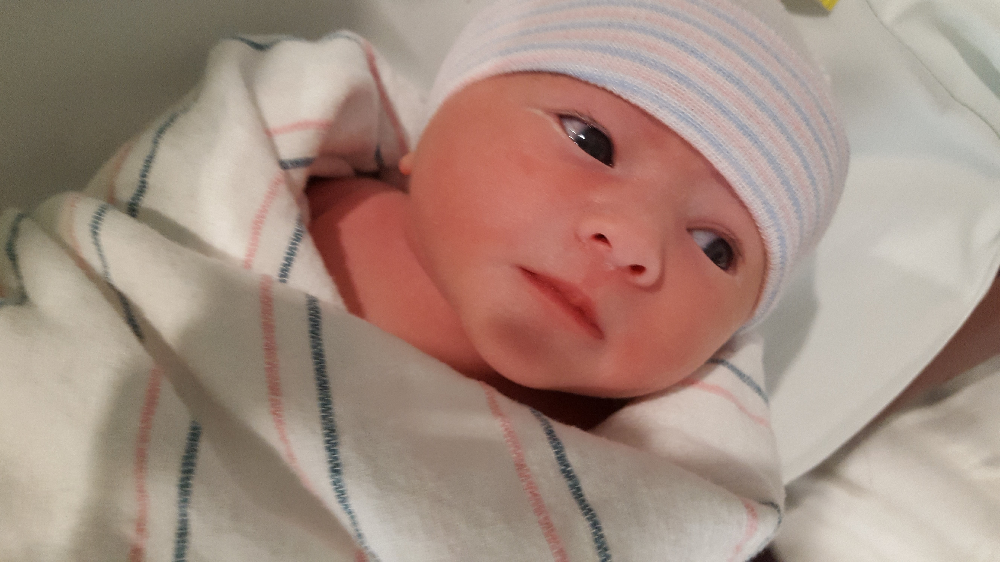

Mailing FSA Claims
You can still mail Medical Claims for reimbursement.
Use the old form and mail the claim to:
Alight Smart Choice Solutions
PO Box 64009
The Woodlands, TX
77387

E-Systems & Raytheon Garland Retirees
Present: 28
First Time: Gary Hunt, David Sokatch, Robert Clarkson, Mary Ann Cordova, Larry Wadsworth
Long Time: Kevin Tensley, Al Walker
Guests: 0
Bruce King is still getting treatment for his cancer.

iPhillip Joe Harrison, 69, of Greenville, Texas passed away surrounded by family on March 16, 2022. Phillip was born in Paris, Texas to Van Buren Harrison and Edna Mae McGee on January 18, 1953. Phillip, also known as “Joe”, “Dad”, “Phil”, “Poppy”, “Wild Man” and “Pop” married the love of his life, Kenda, in 1974 and spent the next 47 years loving her unconditionally. He was a loving family man and a wonderful father and grandfather who not only raised his own family but also took in other children to love and nurture. He loved to play the guitar and was employed at E-Systems/Raytheon/L3 Harris for 46 years.
Phillip is survived by his wife, Kenda; daughters, Kerena Talley, Phylicia McDonald (Thomas) and Andrea Harrison; brother, Terry Harrison; thirteen grandchildren, 11 great grandchildren, and 2 nephews. Phillip was preceded in death by his parents and brother, Ricky Harrison.
The family hosted a Celebration of Life on Monday, March 21, 2022, 2:00 pm, at Top Rails Cowboy Church, 262 Horseman’s Road, Greenville, Texas, 75401. In lieu of flowers, the family request donations be made to your favorite charity.
Obituary: Click here
Jeff Gyorfy passed away Friday morning, March 11. He was a reliability engineer at the E-Systems Garland Division. There will be a memorial service in Dallas, details to be announced later.
From Greg - Vic's son - He passed away last Monday (March 14) from neck cancer that metastasized to his jaw and throat. Like Sandy before him, he didn't want a funeral or a memorial service. He really enjoyed playing golf with the group and talked about it often. Will you please let the group know. Thanks
You can still mail Medical Claims for reimbursement.
Use the old form and mail the claim to:
Alight Smart Choice Solutions
PO Box 64009
The Woodlands, TX
77387
If anyone is interested the 1099-R is available for your pension. Go to rtxpensioncenter.com, select Bank of New York Mellon, scroll to the bottom and you'll find "Tax Forms". You may have to use the slider bar, it's on the far right under Action. Update: I think it’s pdf format only and you may need to tell your browser to allow popups for that website.
Paper pension statements will not be mailed out any longer. You must now view your pension statement on rtxpensioncenter.com. If your direct deposit looks off, better check. Some people have reported being double charged for their medical deductions (Dental, etc.).
This info was posted on our Facebook group.
Alight has a benefits "Gateway" website that will be used for benefits administration. If you haven’t created an account yet you can use this link to do so, (https://rtxhealthyyou.com/enrollment-2"). The instructions indicate to go to www.yourtotalrewards.com/rtx and select "New user?". The "New user?" selection links to a couple of identifying questions and then steps you through the account setup. It recognized me and I was able to set up my account so I could create my profile and preferences. There’s also an online chat feature to talk with a benefits representative and find out additional details about benefits changes. They had my old employee email address in my profile and I had to call Alight to get that corrected (800-243-8135). Be sure to check your beneficiary information. This was blank for me so I corrected that.
Alight will manage the medical reimbursement and (if it works like intended) we will be able to check our DDB balance, submit claims, authorize direct deposit, etc. online.
RTX is also moving the 401K administration from Fidelity to Alight. The 401K change to Alight will not impact you if you've rolled over your 401K to personal IRA. www.yourtotalrewards.com
IF YOU NEED HELP SETTING UP YOUR ALIGHT ACCOUNT, REIMBURSEMENT CLAIMS, DIRECT DEPOSIT, ETC. PLEASE EMAIL ME AT emmawahlstrom@aol.com. TERRY GAUS HAS OFFERED TO HELP THE RETIREES WHO MAY HAVE QUESTIONS. I CAN ALSO HELP NAVIGATE THE SWAMP IF YOU NEED ASSISTANCE.
I’ll be turning in an order for magnetic name tags. Let me know if you want to order yours. One-line tags are $5.00- and two-line tags are $6.00. If anyone needs a name tag, please send your name (as you would like it on the name tag) to me, emmawahlstrom@aol.com or text it to me at 469-475-4884. A second line is optional if you want to include your service dates.
On the first day, God created the dog and said, "Sit all day by the door of your house and bark at anyone who comes in or walks past. For this, I will give you a life span of twenty years."
The dog said, "That's a long time to be barking. How about only ten years and I'll give you back the other ten?"
And God saw it was good.
On the second day, God created the monkey and said, "Entertain people, do tricks, and make them laugh. For this, I'll give you a twenty-year life span."
The monkey said, "Monkey tricks for twenty years? That's a pretty long time to perform. How about I give you back ten like the dog did?"
And God, again saw it was good.
On the third day, God created the cow and said, "You must go into the field with the farmer all day long and suffer under the sun, have calves and give milk to support the farmer's family. For this, I will give you a life span of sixty years."
The cow said, "That's kind of a tough life you want me to live for sixty years. How about twenty and I'll give back the other forty?"
And God agreed it was good.
On the fourth day, God created humans and said, "Eat, sleep, play, marry and enjoy your life. For this, I'll give you twenty years."
But the human said, "Only twenty years? Could you possibly give me my twenty, the forty the cow gave back,
the ten the monkey gave back,
and the ten the dog gave back; that makes eighty, okay?"
"Okay," said God, "You asked for it."
So that is why for our first twenty years, we eat, sleep, play and enjoy ourselves.
For the next forty years, we slave in the sun to support our family.
For the next ten years, we do monkey tricks to entertain the grandchildren.
And for the last ten years, we sit on the front porch and bark at everyone.
Life has now been explained to you.
There is no need to thank me for this valuable information.
I'm doing it as a public service.
If you are looking for me I will be on the front porch...

I will resume collecting eye glasses for donation to the Lion’s Club.
Thank you all who have donated
Eileen Wahlstrom
 Submit your Garland ESY/Raytheon stories now!!
Submit your Garland ESY/Raytheon stories now!!
Present: 21
Bobby Walker
Mary Sue Thornton, Ed Redwine, Ken Cobb
None
Morton Spooner, a former resident of East Aurora, died on Saturday, November 27. He was 97.
Mr. Spooner grew up on an 80-acre dairy farm, outside of Eau Claire, Wis., and was the youngest of a family of six children. On the day of his birth, his father hitched the horse to a sleigh and took his mother seven miles to the hospital.
Mr. Spooner attended a rural two-room school one mile from the farm. He either walked or skied to school. The school was heated by coal, tended by the teacher with water supplied by an outside hand pump. The class had four students. He finished the eighth grade with the highest grades in the rural county.
He went to Eau Claire High School, in a class with 450 students. He milked cows twice per day, working around his studies. He excelled and was the salutatorian of his class.
Shortly after entering the University of Wisconsin, Eau Claire, Pearl Harbor was attacked and plans changed. Mr. Spooner enlisted in the Army Signal Corps and studied electronics in Chicago at the Illinois Institute of Technology. He spent five months at Northwestern University studying Electrical Engineering and radar. His formal enlistment in the Army followed with basic training in Miami Beach then further training in blind bombing radar equipment aboard B-17 bombers. He transferred to England, serving during the Battle of the Bulge in 1944. Months after V-E day, his group boarded the Queen Mary in Glasgow along with 10,000 other troops for the five-day trip to New York to support the invasion of Japan. The two atomic bombs were dropped, Japan surrendered and Mr. Spooner was discharged in November 1945.
Upon discharge from the service, Mr. Spooner enrolled at the University of Wisconsin. He met Nelsine Hanshus, a nursing student. They were married on July 1, 1950.
Mr. Spooner received his Electrical Engineering Ph.D. in 1956 and accepted a position with the Cornell Aeronautical Laboratory (CAL) in Buffalo, owned by Cornell University. He participated in early research in artificial intelligence and teaching computers to read. He was part of a team developing the first automatic fingerprint reader for the Federal Bureau of Investigation (FBI).
Mr. Spooner became vice president of electronics for the company. The Vietnam War came with protests about classified military research programs. As a result, Cornell University terminated its association with CAL.
In 1976, Mr. Spooner joined E-Systems, headquartered in Dallas. He led several top-secret special access proposal efforts engaging in classified advanced computer processing for various US intelligence agencies. He was awarded a Distinguished Service Citation by the University of Wisconsin for his work in electrical and computer engineering.
Mr. Spooner and his family resided in East Aurora, famous for its Roycroft heritage and Fisher-Price toys. Mr. Spooner served on the school board for nine years, serving as president for three years, including when a new high school was built.
Mr. and Mrs. Spooner were active and founding members of Nativity Lutheran Church on Main Street and Mr. Spooner served on the church council when the first chapel was built. They were also founding members of Wood Spring and members of the East Aurora Country Club.
Mr. Spooner was devoted to his wife and children, encouraging education and sports. East Aurora is still the family’s hometown.
Mr. Spooner retired in 1991 and moved to Naples, Fla. There, he played golf and honed duplicate bridge skills with his wife. They even served as bridge directors on 23 international cruises.
In 2003, Mr. and Mrs. Spooner moved into a continuing care facility (CCRC) in St Augustine, Fla. There, they established a duplicate bridge club and Mr. Spooner wrote his autobiography. He discovered that his Norwegian immigrant father changed the family surname from Spone to Spooner.
Mr. and Mrs. Spooner were married for 71 years. During his final illness, Mr. Spooner was comforted by a recitation consisting of a list of his family, beginning with his wife, Nelsine; his four children MarySue, Ted, Shelley, Andy, and their spouses; and his ten grandchildren and five great-grandchildren. Family was his life, his great joy, and his peace. Mr. Spooner was an amazing role model to them all and will be missed by all whom he touched.
Obituary: Click here
Our Papa - Theodore (Ted) Eugene Ryden, beloved husband, father, grandfather, and friend, passed into eternity with Jesus on December 5, 2021. He was born on February 21, 1936, in Phoenix, Arizona as the son of Harold and Gretchen Ryden, and brother to Deanna. On August 25, 1960, Ted married the love of his life, Nancy Pauline Huffman. Grandma and Papa remained joyously married for nearly 57 years. Papa missed Grandma since her passing in 2017 more than words can express. Our grandparents' marriage was fruitful, and the legacy they built lives on today.
Ted is survived by his daughter, Kim Dorsett and husband Keith of College Station, Texas, and their two children Cameron and Anna; his son, Brad Ryden and wife Becky of Orlando, Florida, and their four children Alex, Ethan, Audrey, and Eliot; and his daughter, Wendy Aubin and husband Justin of Northlake, Texas, and their daughter Emma.
Papa accepted Jesus Christ as his Lord and Savior as a young child and then again, with a stronger understanding of what being "born again" meant, as a young adult. Papa loved his wife, three children, and seven grandchildren (that's us!), and devoted his life to being a witness for Christ. He taught himself Spanish so he could visit and communicate with prisoners and share the Gospel with them. Our grandparents volunteered in Bill Glass' "Behind the Walls" prison ministry for many years; they were also longtime members at Trinity Bible Church in Richardson. Papa retired from Raytheon-E Systems in 1991.
We, the grandchildren, liked to describe our beloved Papa as funny, kind, loving, intelligent, humble, fascinating, eccentric, heroic, wise, curious, an adventurer, full of life, a continuous learner and teacher, and a God-fearing, Christlike, and Spiritual man. Papa is greatly missed here.
A celebration of Papa's life will take place at 11:00 AM on February 21, 2022, in the Chapel at Denton Bible Church (2300 E University Drive, Denton, Texas 76209). Donations can be made to Bill Glass' "Behind the Walls" prison ministry at www.behindthewalls.com
Obituary: Click here
Richard Eugene Medler, a resident of Colbert, Oklahoma , left this life on February 6, 2022 peacefully at home, at the age of 86. He was born in Savanna, Oklahoma on October 7, 1935.
Richard was a hardworking man who made his living working at E-Systems in Print Services, in Garland, Texas. He graduated high school from Colbert, Oklahoma. After 40+ years, he retried and returned to Colbert. He was a simple man. He didn’t require a lot. His greatest love besides gardening was his family that brought him so much joy. He loved basketball and didn’t miss a game his granddaughters played in all throughout high school. He would find a ride somewhere and somehow.
Mr. Medler is survived by his son, Donnye Medler and wife, Evon of Colbert, granddaughters Shawna Medler and Tara Medler of Colbert, and Atoria Adams, husband Christopher of Durant, OK as well as his great-grandchildren Addilyn, Bentley, Keegan, and Heidi. He is also survived by one brother, Charles Medler of Bokchito, OK.
Mr. Medler was preceded in death by his parents, brother Arnold Medler, son Ricky Medler and granddaughter Tamerla Medler.
Andrew "Lowell" Lawson, Jr. 84 of Greenville Texas passed away Feb. 22, 2022 at his home.
He was born Jan. 16, 1938 to Andrew Lowell, Sr. and Vallie (Brazzeal) Lawson in Macon, Georgia. Lowell lived a full life and will be remembered as a loving husband, father, grandfather, and great-grandfather. He proudly served his country in the U.S. Navy Reserves.
He was a faithful member, deacon and Sunday school teacher of Ridgecrest Baptist Church in Greenville. He served in many roles for E-Systems for 34 years and into retirement. He served on the Greenville Chamber of Commerce and with the Caddo Wildlife Association.
Lowell is survived by his son, Andy Lawson, III; grandchildren, Haley Cottey, Meg Layman, Emily King, Madison Lawson, Jake Lawson, Jared Lawson, Tanner Lawson; great grandchildren, Adeline Cottey, Anya Cottey, Harvey Lawson, Jordan Lawson; beloved cousin, Genie Brazzeal; along with a host of loving relatives and friends.
Lowell was preceded in death by his parents; his wife, Carol Belle Few Lawson; son, Steve Lawson; brother, John Lawson.
A funeral service will be held at 10:30 a.m. on Friday, Feb. 25, 2022 at Ridgecrest Baptist Church with Pastor Matt Beasley officiating. Interment will follow at the East Mount Cemetery.
Serving as Pallbearers will be Jake Lawson, Jared Lawson, Tanner Lawson, C.J. Cottey, Aaron Layman, and Dakota King.
Visitation will be held from 6-8 p.m. Thursday, Feb. 24, 2022 at Lynch Funeral Service in Greenville, Texas.
In lieu of flowers, please make a donation to Ridgecrest Church.
Online condolences may be made at lynchfueralservice.com.
Obituary: Click here
Gretchen Ceil Hopkins of Rockwall, Texas passed away unexpectedly on February 11, 2022, just six days after the passing of her beloved husband, Gary Hopkins who she lovingly cared for over recent years as he suffered with Parkinson’s.
She was born on May 19, 1955 in Dallas, Texas to George and Mildred Werner. In 1973 after graduation from Bryan Adams High School, she landed her first job with the Dallas County Health Department.
Eventually she launched a successful career with E-Systems Garland, one of the leading defense electronics companies in the United States. She later transferred to the Greenville Division, continuing a career that spanned over 30 years. Early in her E-Systems career, she met Gary, the love of her life. They married on September 1, 1990 in Dallas, beginning a devoted, loving relationship of over 31 years. While employed full-time, Gretchen also attended and earned a Bachelor's degree in Business Administration from Letourneau University.
Gretchen and Gary were very hospitable and generous and loved to entertain and host family get-togethers. They enjoyed taking spur-of-the-moment road trips and taking in an occasional casino. They were huge Dallas Cowboys fans and especially enjoyed cheering on Gary's alma mater team, the University of Oklahoma Sooners. Gretchen loved gardening and celebrating and decorating and sending cards for every holiday.
She was brave, strong, and courageous as she twice fought breast cancer and survived the disease. She had a strong passion for animals, especially her three cats (Rambo, Catnip and Chester) who she loved to spoil. She fully earned the title of Cat Mom. She was beautiful, loving and kind and will live forever in our hearts.
Gretchen is survived by her brother, Vincent Werner and his wife MK of Plano, Texas, sister, Kristen Steege and her husband Arnie of Austin, Texas, nieces Dr. Bethany Werner and Geneva Werner, nephew George Werner, Jr. (Melissa), niece, Jennifer Richey (Cory) and great-nephews and great-nieces and cousins. She is also survived by her step-children, Cary Evans and her husband Mike, Erin Stanley and her husband Kevin and Carter Hopkins and his wife Amie. She was a beloved "Nana" to her six grandchildren and great-granddaughter. Gretchen was preceded in death by her husband, Gary Hopkins, parents George and Mildred Werner and brothers George and John Werner.
An Afternoon of Remembrance for Gretchen and Gary will be held Saturday, February 26, 2022 from 2:00-4:00 pm with words of remembrance spoken at 3:00 p.m. at Allen Family Funeral Options.
Gary and Gretchen will be laid to rest together at the DFW National Cemetery.
In lieu of flowers, please consider a donation to your local Humane Society or Vitas Hospice at vitascommunityconnection.org
Darla Gayle Wyckoff, age 82, passed away on Friday, February 4, 2022, in Plano, Texas. She was born to Mr. John Jones and Ms. Viola Jones on April 15, 1939, in Steubenville, Ohio. Darla leaves her loved ones with unforgettable memories and loving stories. She will be sincerely missed by her loving family, devoted friends, and all the wonderful individuals who knew and loved her.
She was married to her high school sweetheart William A. Wyckoff for 62 years. Her husband was in USAF and she travelled the world with him. She was a member of Buckingham United Methodist Church. Her hobbies were Bunco and games with friends. She was Class Valedictorian in the Class of 1957 at Steubenville High School.
She was preceded in death by parents John W. & Viola M. Jones, brother John D. Jones
She is survived by husband William A. Wyckoff, daughter Patricia C. Wyckoff, grandchild William Asher Wyckoff
Memorials Made To: American Cancer Society https//www.cancer.org/made in honor of Darla Wyckoff & American Heart Association heart.org in honor of Darla Wyckoff
Obituary: Click here
You can still mail Medical Claims for reimbursement.
Use the old form and mail the claim to:
Alight Smart Choice Solutions
PO Box 64009
The Woodlands, TX
77387
If anyone is interested the 1099-R is available for your pension. Go to rtxpensioncenter.com, select Bank of New York Mellon, scroll to the bottom and you'll find "Tax Forms". You may have to use the slider bar, it's on the far right under Action. Update: I think it’s pdf format only and you may need to tell your browser to allow popups for that website.
Paper pension statements will not be mailed out any longer. You must now view your pension statement on rtxpensioncenter.com. If your direct deposit looks off, better check. Some people have reported being double charged for their medical deductions (Dental, etc.).
This info was posted on our Facebook group.
Alight has a benefits "Gateway" website that will be used for benefits administration. If you haven’t created an account yet you can use this link to do so, (https://rtxhealthyyou.com/enrollment-2"). The instructions indicate to go to www.yourtotalrewards.com/rtx and select "New user?". The "New user?" selection links to a couple of identifying questions and then steps you through the account setup. It recognized me and I was able to set up my account so I could create my profile and preferences. There’s also an online chat feature to talk with a benefits representative and find out additional details about benefits changes. They had my old employee email address in my profile and I had to call Alight to get that corrected (800-243-8135). Be sure to check your beneficiary information. This was blank for me so I corrected that.
Alight will manage the medical reimbursement and (if it works like intended) we will be able to check our DDB balance, submit claims, authorize direct deposit, etc. online.
RTX is also moving the 401K administration from Fidelity to Alight. The 401K change to Alight will not impact you if you've rolled over your 401K to personal IRA. www.yourtotalrewards.com
IF YOU NEED HELP SETTING UP YOUR ALIGHT ACCOUNT, REIMBURSEMENT CLAIMS, DIRECT DEPOSIT, ETC. PLEASE EMAIL ME AT emmawahlstrom@aol.com. I SPOKE WITH TERRY GAUS AFTER THE LUNCHEON AND HE HAS OFFERED TO HELP THE RETIREES WHO MAY HAVE QUESTIONS. I’M GETTING A LIST TOGETHER AND WE WILL DETERMINE THE BEST WAY TO GET YOU HELP (PHONE, IN PERSON AFTER THE NEXT LUNCHEON, WHATEVER WORKS FOR YOU.)
Mark Montgomerey performs with several community bands in the area. He has invited all of his fellow retirees to come enjoy some great music! I will post the fliers as soon as he sends them to me.
The Wylie Community Band concert will be on March 19th at the Meyerson. The time is TBD.
Darrell Lancaster proposed an idea to create a repository for retirees’ experiences and funny/interesting stories that later can be compiled into a collection and available for all to enjoy. We don’t want to lose these memories. Marv worked hard to create/activate a link for us to view these stories. After consulting with Raytheon External Communications a few guidelines were put in place including a password to access the stories. There are several there for your enjoyment already. Keep sending them in!
I’ll be turning in an order for magnetic name tags. Let me know if you want to order yours. One-line tags are $5.00- and two-line tags are $6.00. If anyone needs a name tag, please send your name (as you would like it on the name tag) to me, emmawahlstrom@aol.com or text it to me at 469-475-4884. A second line is optional if you want to include your service dates.
On the first day, God created the dog and said, "Sit all day by the door of your house and bark at anyone who comes in or walks past. For this, I will give you a life span of twenty years."
The dog said, "That's a long time to be barking. How about only ten years and I'll give you back the other ten?"
And God saw it was good.
On the second day, God created the monkey and said, "Entertain people, do tricks, and make them laugh. For this, I'll give you a twenty-year life span."
The monkey said, "Monkey tricks for twenty years? That's a pretty long time to perform. How about I give you back ten like the dog did?"
And God, again saw it was good.
On the third day, God created the cow and said, "You must go into the field with the farmer all day long and suffer under the sun, have calves and give milk to support the farmer's family. For this, I will give you a life span of sixty years."
The cow said, "That's kind of a tough life you want me to live for sixty years. How about twenty and I'll give back the other forty?"
And God agreed it was good.
On the fourth day, God created humans and said, "Eat, sleep, play, marry and enjoy your life. For this, I'll give you twenty years."
But the human said, "Only twenty years? Could you possibly give me my twenty, the forty the cow gave back,
the ten the monkey gave back,
and the ten the dog gave back; that makes eighty, okay?"
"Okay," said God, "You asked for it."
So that is why for our first twenty years, we eat, sleep, play and enjoy ourselves.
For the next forty years, we slave in the sun to support our family.
For the next ten years, we do monkey tricks to entertain the grandchildren.
And for the last ten years, we sit on the front porch and bark at everyone.
Life has now been explained to you.
There is no need to thank me for this valuable information.
I'm doing it as a public service.
If you are looking for me I will be on the front porch...
I will resume collecting eye glasses for donation to the Lion’s Club.
Thank you all who have donated
Eileen Wahlstrom
Submit your Garland ESY/Raytheon stories now!!
Present: 21
First Time: 0
Long Time: 0
Guests: 0
Gary Tibbals has dementia.
Tom Kummer had another small stroke but is recovering fine.
Jerry Kramer’s is still keeping him at home.
Mike Chaffee: Mike fell December 19th on uneven concrete while walking the dog. He ended up in the hospital with a brain bleed due to being on blood thinners. They reversed the blood thinner which resulted in a pulmonary embolism. They had the drip the blood thinner back. He got home January 6th. It’s been a slow go but he got a good report last week from the neurosurgeon.
Our friendly faces from the January luncheon. We want to see more next month!


To Carole’s Facebook Family posted by Susan Keiffer.
Mrs. Carole Ann Keiffer of Horseshoe Bay, TX, passed away peacefully, surrounded by family and friends, on Thursday, January 20, 2022, at home after a valiant battle with COPD.
Carole was born in Greenville, TX, on July 31, 1936. She was the daughter of Oscar and Verda Porter and graduated from Greenville High School and, later attended East Texas State College. Throughout school, she enjoyed sports and became a fast-pitch softball pitcher.
While in Greenville, Carole worked as an Administrative Assistant at LTV (Ling-Temco-Vought), where she met and then married E.G. “Gene” Keiffer on February 27, 1969. They lived in Dallas, TX, where Gene became President and CEO of E-Systems. Carole was a homemaker extraordinaire, raising a family, running their household, and entertaining dignitaries.
Carole was a member of Bent Tree Country Club where she enjoyed playing golf and being part of many social and charitable organizations. Over 20 years ago, she and Gene made Horseshoe Bay, TX, their primary residence. Carole quickly made many friends with her fun-loving sense of humor and kind ways. As a member of Horseshoe Bay Resort and, later, Escondido, Carole enjoyed entertaining family and friends on many occasions. She was an avid supporter of all first responders, social groups, and many charities. Known for her love of nature and all animals, she especially cherished her many Dobermans over the years.
Mrs. Carole Ann Keiffer is survived by her daughter Cheri Ann Jones of California; step children Edwin Paul Keiffer and wife Beverly, Judith Susan Keiffer, Amy Lynn Keiffer, all of Texas; niece Tammy Ann Gibbs of Alabama; grand children Edwin Scott Keiffer and wife Eileen, Rebecca Keiffer Toft and husband Martin, Blake Morris Womack and wife Jessica, and Brady Monroe Womack. She is also survived by her precious Doberman Guy.
Mrs. Carole Ann Keiffer was preceded in death by her grandmother Hattie Evans, parents Oscar and Verda Porter, brother Billy Porter, sister Bettye Gibbs, brother-in-law Jim Gibbs, nephew Chuck Gibbs, husband Gene Keiffer, and other family, close friends, and beloved dogs.
A private celebration of Carole Ann Keiffer's life will be held for family and friends. In lieu of flowers, the family requests that memorials be made to the Horseshoe Bay Fire Department, the Horseshoe Bay Police Department, or the Highland Lakes SPCA of Marble Falls
Obituary: Click here
Lynda Kay (Burnett) Parker of McKinney, Texas passed away on January 18, 2022 at the age of 71. She was born on July 27, 1950 to Clinton Burnett and Mary (Ballard) Burnett in Benton, Arkansas. Lynda married Dan Parker on December 31, 2007 in Raleigh, North Carolina. She was a salon owner. Lynda was of Christian faith.
Lynda is survived by her husband, Dan Parker of McKinney, Texas
Obituary: Click here
Lost his fight with Cancer on January 22, 2022. Ken graduated from the University of Arkansas with a degree in Electrical Engineering. He completed his Master's Degree in Engineering at Southern Methodist University. He had a lengthy career at E-Systems / Raytheon Technologies, retiring at the age of 40. Ken thoroughly enjoyed working and chose to continue his career as a consultant working with Foremost Communications Incorporated (Telecommunications)
Obituary: Click here
You can still mail Medical Claims for reimbursement.
Use the old form and mail the claim to:
Alight Smart Choice Solutions
PO Box 64009
The Woodlands, TX
77387
If anyone is interested the 1099-R is available for your pension. Go to rtxpensioncenter.com, select Bank of New York Mellon, scroll to the bottom and you'll find "Tax Forms". You may have to use the slider bar, it's on the far right under Action. Update: I think it’s pdf format only and you may need to tell your browser to allow popups for that website.
Paper pension statements will not be mailed out any longer. You must now view your pension statement on rtxpensioncenter.com. If your direct deposit looks off, better check. Some people have reported being double charged for their medical deductions (Dental, etc.).
This info was posted on our Facebook group.
Alight has a benefits "Gateway" website that will be used for benefits administration. If you haven’t created an account yet you can use this link to do so, (https://rtxhealthyyou.com/enrollment-2"). The instructions indicate to go to www.yourtotalrewards.com/rtx and select "New user?". The "New user?" selection links to a couple of identifying questions and then steps you through the account setup. It recognized me and I was able to set up my account so I could create my profile and preferences. There’s also an online chat feature to talk with a benefits representative and find out additional details about benefits changes. They had my old employee email address in my profile and I had to call Alight to get that corrected (800-243-8135). Be sure to check your beneficiary information. This was blank for me so I corrected that.
Alight will manage the medical reimbursement and (if it works like intended) we will be able to check our DDB balance, submit claims, authorize direct deposit, etc. online.
RTX is also moving the 401K administration from Fidelity to Alight. The 401K change to Alight will not impact you if you've rolled over your 401K to personal IRA. www.yourtotalrewards.com
IF YOU NEED HELP SETTING UP YOUR ALIGHT ACCOUNT, REIMBURSEMENT CLAIMS, DIRECT DEPOSIT, ETC. PLEASE EMAIL ME AT emmawahlstrom@aol.com. I SPOKE WITH TERRY GAUS AFTER THE LUNCHEON AND HE HAS OFFERED TO HELP THE RETIREES WHO MAY HAVE QUESTIONS. I’M GETTING A LIST TOGETHER AND WE WILL DETERMINE THE BEST WAY TO GET YOU HELP (PHONE, IN PERSON AFTER THE NEXT LUNCHEON, WHATEVER WORKS FOR YOU.)
Mark Montgomerey performs with several community bands in the area. He has invited all of his fellow retirees to come enjoy some great music! I will post the fliers as soon as he sends them to me.
The Richardson Community Band concert will be on February 20th at around 3 pm at the Eisemann Center. The Plano Community Band concert will be on February 27th at around 6 pm at the Eisemann Center. The Wylie Community Band concert will be on March 19th at the Meyerson. The time is TBD.
All three of these community bands have around 70-80 members. I will send you flyers with more complete information when they become available.
Darrell Lancaster proposed an idea to create a repository for retirees’ experiences and funny/interesting stories that later can be compiled into a collection and available for all to enjoy. We don’t want to lose these memories. Marv worked hard to create/activate a link for us to view these stories. After consulting with Raytheon External Communications a few guidelines were put in place including a password to access the stories. There are several there for your enjoyment already. Keep sending them in!
I’ll be turning in an order for magnetic name tags. Let me know if you want to order yours. One-line tags are $5.00- and two-line tags are $6.00. If anyone needs a name tag, please send your name (as you would like it on the name tag) to me, emmawahlstrom@aol.com or text it to me at 469-475-4884. A second line is optional if you want to include your service dates.
On the first day, God created the dog and said, "Sit all day by the door of your house and bark at anyone who comes in or walks past. For this, I will give you a life span of twenty years."
The dog said, "That's a long time to be barking. How about only ten years and I'll give you back the other ten?"
And God saw it was good.
On the second day, God created the monkey and said, "Entertain people, do tricks, and make them laugh. For this, I'll give you a twenty-year life span."
The monkey said, "Monkey tricks for twenty years? That's a pretty long time to perform. How about I give you back ten like the dog did?"
And God, again saw it was good.
On the third day, God created the cow and said, "You must go into the field with the farmer all day long and suffer under the sun, have calves and give milk to support the farmer's family. For this, I will give you a life span of sixty years."
The cow said, "That's kind of a tough life you want me to live for sixty years. How about twenty and I'll give back the other forty?"
And God agreed it was good.
On the fourth day, God created humans and said, "Eat, sleep, play, marry and enjoy your life. For this, I'll give you twenty years."
But the human said, "Only twenty years? Could you possibly give me my twenty, the forty the cow gave back,
the ten the monkey gave back,
and the ten the dog gave back; that makes eighty, okay?"
"Okay," said God, "You asked for it."
So that is why for our first twenty years, we eat, sleep, play and enjoy ourselves.
For the next forty years, we slave in the sun to support our family.
For the next ten years, we do monkey tricks to entertain the grandchildren.
And for the last ten years, we sit on the front porch and bark at everyone.
Life has now been explained to you.
There is no need to thank me for this valuable information.
I'm doing it as a public service.
If you are looking for me I will be on the front porch...
I will resume collecting eye glasses for donation to the Lion’s Club.
Thank you all who have donated
Eileen Wahlstrom
Submit your Garland ESY/Raytheon stories now!!
Present: 18 (smallest crowd I can remember)
First Time: Kent McClurg, Bill Pettus, Bob Baron, Scott Schultz, Jerry Wagner
Guests: Bill McKinley (Greg McKinley’s father)
Born in Galveston in 1936, Bill passed away on Oct 14, 2021. Bill was a loving husband, brother, father, grandfather, and great grandfather who loved spending time with his family and traveling.
He worked for Raytheon for 30 years. Services will be held at Central Lutheran Church, 1000 Easton, Dallas at 10 a.m. on Saturday, Oct 23. Masks are required. In lieu of flowers, memorials may be made to UTSW Medical Center Stroke Research.
Obituary: Click here
Frank Charles Franceschetti, 62, of Stafford County passed away Monday, October 18, 2021 at his home. Frank was a devoted family man who was always there when anyone needed him. He was just as committed to animals as people, and received great enjoyment interacting with his pets. He appreciated being able to spend time in nature, and enjoyed hobbies such as woodworking and astronomy. Frank had a great sense of humor - often displayed through his collection of unique ties, and the occasional treasure hunt. He enjoyed collecting ships and globes, and displayed them in his home office. Frank completed his B.S. and M.S. degrees in Electro-Optics at University of Houston - Clear Lake, within one year of each other. He was a nationally recognized expert for his work for the Department of Defense and Intelligence Community. A natural leader with a keen mind, his problem solving skills brought him great success and admiration as an Engineering Fellow at Raytheon. For nearly two decades, his innate ability for concept development to create innovative solutions to complex problems led to numerous awards - including a National Treasure Citation, a National Intelligence Award, and many others. Frank is survived by his wife of 30 years, Jacquelyn Kay Franceschetti; his parents, S. Frank and Angela Franceschetti; sister, Brenda Zeoli (Jim) of Florida; brother, Steven Franceschetti of New York; nephew, Jeffrey Zeoli of North Carolina; and many other family members and close friends. Frank's family will receive friends from 6:00-8:00 p.m. Monday, October 25, 2021 at Found and Sons Funeral Chapel, 10719 Courthouse Road, Fredericksburg. A funeral mass will be said at 11:00 a.m. Tuesday, October 26, 2021 in the funeral home chapel. In lieu of flowers, Frank's family requests that expressions of sympathy take the form of donations to the Purrs & Whiskers Inc. Cat Rescue in Stafford, Virginia.
Obituary: Click here
Born on May 5th, 1932 in Dupont, Indiana, Ken was a very intelligent man who worked with People To People International on the Board of Directors and was a Gideon, and was in enlisted in the military. He was a teacher, a storyteller, and a traveller. Ken published 16 books in his lifetime, and was a devoted Christian. Ken loved spending his time travelling with his family and friends.
Obituary: Click here
Lloyd Russell Woods, age 82, of McKinney, Texas passed away on October 24, 2021, from heart disease and Non-Hodgkin's Lymphoma. He was born on July 9, 1939 in Jasper Texas, the first son of six boys born to George Russell Woods and Geraldine Adams Woods
.Lloyd enlisted in the United States Navy in 1958 and was stationed in San Francisco, California, where he met his future wife of 62 years, Caryl White. When his tour of duty in the Navy ended, they moved back to Texas where Lloyd attended Lamar State College of Technology in Beaumont, Texas
.After graduation they moved to Garland, Texas and Lloyd began a 25-year career with E-Systems (now Raytheon). He retired in 1992 and continued to pursue his passion for black bass fishing.
Obituary: Click here
Emma Earline Metze passed away Tuesday October 20th in Dallas, Texas after a long and courageous journey as a heart transplant recipient. Earline was born the youngest of 3 children on January 9, 1948 to Edna Earl and Willie Florine Pace in Van Alstyne, TX. She lived an exciting life traveling, shopping, spending time with her friends, family, and her dog Jeter. She will be remembered as being strong, independent, fun, and a wonderful friend
.Earline is preceded in death by her parents, Earl and Florine; siblings Doyle Ray and Barbara Ann; as well as the love of her life, husband James Lee Metze. Earline is survived by her son Matthew Jason Rollins and wife Danielle of Bonham, TX; stepchildren Steve Metze and wife of Austin, TX; Sharla Davenport and husband of Prosper, TX. Earline was very proud of her grandchildren Brooke Greenley (Justin) of Rowlett, TX and Hunter Rollins of Bowie, TX and her great-grandson, Beau Matthew Rollins. Earline left a big footprint here on Earth and will be dearly missed by many.
Obituary: Click here
This info was posted on our Facebook group.
As part of continuing changes from the merger, RTX is changing the benefits administrator to Alight. This change will impact retirees as well as current employees. Current employees have already received information on the changes because their enrollment period starts soon. Retirees are supposed to start getting information in November. The retiree enrollment period will be Nov. 15-24. It appears likely that the insurance providers will be changing but they aren't releasing any details for retirees until November,
Alight has a benefits "Gateway" website that will be used for enrollment and benefits administration. The information coming in November is supposed to have details on setting up an account. I got a link to instructions for setting up an account from a current employee https://rtxhealthyyou.com/enrollment-2" . The instructions indicate to go to a www.yourtotalrewards.com/rtx and select "New user?". I decided to try it out. The "New user?" selection links to a couple of identifying questions and then steps you through the account setup. It recognized me (I'm a retiree) and I was able to set up my account. All I could do at this point was setup my profile and preferences. I also used an online chat feature to talk with a benefits representative and find out additional details about benefits changes and enrollment for retirees will not be available until early November. They had my old employee email address in my profile and I had to call Alight to get that corrected (800-243-8135).
It's my understanding that we should continue to use the current benefits website for the rest of 2021. Alight will handle 2022 benefits enrollment and will take over when the changes go into effect at the beginning of 2022
RTX is also moving the 401K administration from Fidelity to Alight. The 401K change to Alight will not impact you if you've rolled over your 401K to personal IRA(s). It's also my understanding that the Alight change will not impact retirees' Fidelity HSA accounts if you have one.
Darrell Lancaster proposed an idea to create a repository for retirees’ experiences and funny/interesting stories that later can be compiled into a collection and available for all to enjoy. We don’t want to lose these memories. Marv worked hard to create/activate a link for us to view these stories. After consulting with Raytheon External Communications a few guidelines were put in place including a password to access the stories. There are several there for your enjoyment already. Keep sending them in!
There is a new Raytheon manufacturing facility going up in McKinney. Also, word is that the Raytheon employees at the TI North Building will be relocated soon. For more information: Click Here
I’ll be turning in an order for magnetic name tags. Let me know if you want to order yours. One-line tags are $5.00- and two-line tags are $6.00. If anyone needs a name tag, please send your name (as you would like it on the name tag) to me, emmawahlstrom@aol.com or text it to me at 469-475-4884. A second line is optional if you want to include your service dates. If anyone needs a name tag, please send your name (as you would like it on the name tag) to me, Eileen
or text it to me at 469-475-4884. A second line is optional if you want to include your service dates.
I will resume collecting eye glasses for donation to the Lion’s Club once we can safely get together.
Thank you all who have donated
Eileen Wahlstrom
Submit your Garland ESY/Raytheon stories now!!
We had a good crowd for our first time back. Our new location is The Golden Corral, just a stone’s throw away from the old Furr’s location in Garland.
Present: 27
First Time: 6
Jim and Pat Wiskur
Dane Brousard
Greg Mueller
Kathy Roland
Long Time: : Good to see Dottie Vaughn. She says she is doing fine.
Guest: Brenda Vaughn Prachyl (Dottie’s daughter)
Yvonne McGregor - Yvonne McGregor fell and broke her hip mid September 2020. Caregiver found her on the floor when she came in on Monday morning. She had a partial hip replacement at Medical City in Plano. She was moved to a rehab facility. She is now in an assisted living home and has dementia.
from Vicky Carlson
Pat Bryner: Stroke March 12th 2020. Is rehabbing with her daughters up north. Helen Hull spoke with her and she is doing really well. We sent Pat a card to let her know we were thinking about her.
We lost several fellow retiree friends since the last time we met. In their memory here is a list. If I have left anyone’s name out please let me know and I will add it next month. Thanks.


Darrell Lancaster proposed an idea to create a repository for retirees’ experiences and funny/interesting stories that later can be compiled into a collection and available for all to enjoy. We don’t want to lose these memories. Marv worked hard to create/activate a link for us to view these stories. After consulting with Raytheon External Communications a few guidelines were put in place including a password to access the stories. There are several there for your enjoyment already. Keep sending them in!
Submit your Garland ESY/Raytheon stories now!!
There is a new Raytheon manufacturing facility going up in McKinney. Also, word is that the Raytheon employees at the TI North Building will be relocated soon. For more information: Click Here
I’ll be turning in an order for magnetic name tags. Let me know if you want to order yours. One-line tags are $5.00- and two-line tags are $6.00. If anyone needs a name tag, please send your name (as you would like it on the name tag) to me, emmawahlstrom@aol.com or text it to me at 469-475-4884. A second line is optional if you want to include your service dates. If anyone needs a name tag, please send your name (as you would like it on the name tag) to me, Eileen
or text it to me at 469-475-4884. A second line is optional if you want to include your service dates.
I will resume collecting eye glasses for donation to the Lion’s Club once we can safely get together.
Thank you all who have donated
Eileen Wahlstrom
They say if you forward this to ten people, you stand a chance of saving one life. Blood Clots/Stroke —They Now Have a Fourth Indicator, The Tongue.
STROKE: Remember the 1st Three Letters….. S. T. R. STROKE IDENTIFICATION:
During a BBQ, Jane stumbled and took a little fall — she assured everyone that she was fine (they offered to call paramedics) she said she had just tripped over a brick because of her new shoes. They got her cleaned up and got her a new plate of food. While she appeared a bit shaken up, Jane went about enjoying herself the rest of the evening. Jane’s husband called later telling everyone that his wife had been taken to the hospital — (at 6:00 p.m. Jane passed away). She had suffered a stroke at the BBQ. Had they known how to identify the signs of a stroke, perhaps Jane would be with us today. Some don’t die. They end up in a helpless, hopeless condition instead. It only takes a minute to read this. A neurologist says that if he can get to a stroke victim within 3 hours he can totally reverse the effects of a stroke…totally. He said the trick was getting a stroke recognized, diagnosed, and then getting the patient medically cared for within 3 hours, which is tough.
RECOGNIZING A STROKE Thank God for the sense to remember the ‘3’ steps, STR. Read and Learn! Sometimes symptoms of a stroke are difficult to identify. Unfortunately, the lack of awareness spells disaster. The stroke victim may suffer severe brain damage when people nearby fail to recognize the symptoms of a stroke.
Now doctors say a bystander can recognize a stroke by asking three simple questions. S* Ask the individual to SMILE. T* Ask the person to TALK and SPEAK A SIMPLE SENTENCE (Coherently) (i.e. Chicken Soup) R* Ask him or her to RAISE BOTH ARMS. If he or she has trouble with ANY ONE of these tasks, call emergency number immediately and describe the symptoms to the dispatcher. New Sign of a Stroke: Stick out Your Tongue. NOTE: Another ‘sign’ of a stroke is this. Ask the person to ‘stick’ out his tongue. If the tongue is ‘crooked’, if it goes to one side or the other, that is also an indication of a stroke. A cardiologist says if everyone who gets this information sends it to 10 people, you can bet that at least one life will be saved.
for more informations on how to identify Strokes Click Here
Present: 0
First Time: 0
Long Time: 0
Guest: 0
I pray that none of us retirees have caught the virus. Hopefully, everyone is staying as safe as possible. If you feel sick, please isolate until you know what’s wrong. If you need anything reach out through email, Facebook, phone. We are in this together.
Yvonne McGregor - Yvonne McGregor fell and broke her hip mid September. Caregiver found her on the floor when she came in on Monday morning. She had a partial hip replacement at Medical City in Plano. She was moved to a rehab facility. The Healthcare Resort of Plano, 3325 W. Plano Pkwy, Plano, Tx 75075. Bet she would love to get cards from us. Please add Yvonne and all her family to your prayers.
I have missed my friend Yvonne but have been lax in calling her.
Hope you all are doing well and hope to see you in early December.
Take care of yourself and your family.
Miss you, Vicky Carlson
Update (Oct 20) from Vicki: Yvonne is better. Her spirits are good her daughter said. Still at rehab. Had her up walking with a walker the other day. Short term memory not to good but who’s is these days!
Chris Reynolds – Had her hip replacement surgery March 16th. Had knee replacement surgery August 17th. She has recovered from both and is on the move! Photography abounds on her Facebook page!
George Carlsness: Update on George from Joanne’s Facebook post:
George is up and about and tending to his prayer garden.
7/14/20
Update from George’s surgical oncologist:
"At 3 months past his surgery, George’s CT scan results were good, no sign of tumors. Everything looked good with his digestive system from the surgery. We thank God for this progress and good report. Thank you all for your thoughts, prayers and support for the past 3 months. Please continue to pray for him as he continues the remainder of his chemotherapy. He has completed three treatments and has nine treatments to go, ending sometime near Thanksgiving"
Pat Bryner: Stroke March 12th. Is rehabbing with her daughters up north. You can send Pat a card at this address: 10845 Kingston Ave., Huntington Woods, MI 48070
Bill Bedingfield – He and his adult daughter contracted Covid a few weeks back. She is recovered and back home but he is up and down and still in the hospital. Not doing well. Sharon, his daughter, doesn’t have much hope left. Prayers.
It is always difficult saying goodbye to someone we love and cherish. Family and friends must say goodbye to their beloved Luther Kirk III (Dallas, Texas), who passed away at the age of 63, on October 2, 2020. You can send your sympathy in the guestbook provided and share it with the family. You may also light a candle in honor of Luther Kirk III or send a beautiful flower arrangement to the funeral service.
Visitation was held on Wednesday, October 7th 2020 from 1:00 PM to 4:00 PM at the Heavenly Gate Funeral Services (702 Gatewood Rd, Garland, TX 75043). A graveside service was held on Thursday, October 8th 2020 at 10:00 AM at the Dallas Fort Worth National Cemetery (2000 Mountain Creek Pkwy, Dallas, TX 75211).
Luther passed away resulting from a heart attack.
It is with great sadness the family of Theron “Scott” Robinson announces his passing. Scott passed away peacefully on Friday, October 16, 2020 after complications from gallbladder surgery. A memorial service will be held at Genesis Church at 5780 Virginia Pkwy., McKinney, TX 75071 on October 27, 2020 at 6:30 PM. Scott was born in Dallas, Texas in January of 1959. He attended Mesquite High School and graduated in 1977. While working full time supporting his wife and two children he went on to earn a Bachelors' degree in Business Administration from Dallas Baptist University.
He worked as a software engineer for over 29 years at Raytheon where he retired from in 2014 after having health issues.
He loved to spend time with family and friends, fishing and listening to music. Scott could make friends with almost anyone. He would often meet someone at work, a restaurant or store, etc. and they would be going fishing with him soon thereafter. Scott is survived by his loving wife, Cynthia Robinson; his children, Christa Dennis and her husband, Aukai, and Jerad Robinson; his grandchildren, Mason and Landyn Dennis, and many good friends. If you wish to send flowers the church will accept deliveries on Tuesday, October 27, 2020 from 9:00 am to 4:00 pm.
“A bad day of fishing is better than a good day at work.” -Unknown
GONDRAN, Albert Age 92, of Heath, TX, died on October 22, 2020. Albert was born 6/30/1928. Graveside service will be 1:00pm Saturday 10/31/2020 at Wilder Cemetery in Naples, TX.
Darrell Lancaster proposed an idea to create a repository for retirees’ experiences and funny/interesting stories that later can be compiled into a collection and available for all to enjoy. We don’t want to lose these memories.
Submit your Garland ESY/Raytheon stories now!!
Jim Gray told me he has made a connection, Mitch Bates – Asst. City Manager, that could open doors for our marker. Stay tuned for more info!
I have name tags for the following people. One line tags are $4.00 and two line tags are $5.00. If anyone needs a name tag, please send your name (as you would like it on the name tag) to me, emmawahlstrom@aol.com or text it to me at 469-475-4884. A second line is optional if you want to include your service dates.
I will resume collecting eye glasses for donation to the Lion’s Club once we can safely get together.
Thank you all who have donated
Eileen Wahlstrom
Stay home, if you must go out please continue to practice social distancing of six feet and personal hygiene measures. Check in on your family, friends and neighbors, especially those who are elderly. Support local restaurants and food establishments by ordering delivery or curbside service. Follow the Library and Parks and Rec Facebook pages for fun stuff to do virtually.
Present: 0
First Time: 0
Long Time: 0
Guest: 0
I am so relieved to say we have no reported virus cases in our group. Let’s keep it that way and take this seriously! If you feel sick, please isolate until you know what’s wrong. If you need anything, and that goes for everyone, reach out through email, Facebook, phone. We are in this together.
Chris Reynolds: Had her hip replacement surgery March 16th. Here is her latest update from Facebook dated April 18.
“Doing pretty good - zero hip pain, but knee replacements will have to be done at some point. At least I can walk again - still very cautious about walking on uneven surfaces and going up and down curbs, etc. Not sure that's going to improve much until knees are done! Thrilled with hip replacement, though.”
George Carlsness: Update on George from Joanne’s Facebook post:
I want to thank you all so much for your thoughts and concern and especially your prayers. George has had a very tough week but turned a corner on Friday and started feeling a lot better on Saturday and today he sounds more like himself. It takes time for all the organs to wake up after such a lengthy surgery and to start performing as they need to. Meanwhile there’s lots of difficult issues that he has to deal with. Most of the tubes and the catheter were removed on Friday afternoon and he was able to rest better after that. He is much better now and hopefully will get to come home by Tuesday. We are so grateful to God for his healing power that has brought George this far.
We learned on Friday that the type of cancer he has is Ampullary carcinoma, the origin of the cancer. The ampullarf is the very end of the bile duct where it goes into the duodenum. The tumor was approximately 1 inch. It was removed of course when he had the other organs removed at the same time. They did discover that the cancer cells had traveled to two lymph nodes. This means that he will require chemotherapy and possibly radiation when he has healed enough, possibly 4 to 6 weeks from now. We would’ve loved, of course, to have heard otherwise but we trust that God is with us every step of the way as he has been. And we know he will provide all that we need. Please pray for continued healing and strength for the next few months as George begins chemotherapy. being apart during this very difficult surgery has been probably the hardest part for both of us. I look so forward to him coming home./p>
He sends his gratitude to everyone for your prayers and for your well wishes.
Dear friends and family: update on George since leaving the hospital:
George came home on Saturday and he is doing very well. He is eating well and seems to be digesting everything well. He gets tired easily but with rest he comes back and is ready to be up again. We went to the doctor today and got a good report. He said that he is doing about how he should be doing at this stage of recovery. He was able to get one drain tube removed. Still waiting for the second one. We meet with the doctor again next week and on the same day we will meet with the medical oncologist regarding chemotherapy. We are so thankful for the progress he is making. We know God is answering many prayers. Thank you so very much for your prayers and your love and support
Bobby Gambrell: Carolyn had heart surgery recently and Bobby has been taking care of her. He says they are doing fine.
Pat Bryner: Stroke March 12th. Is rehabbing with her daughters up north. You can send Pat a card at this address: 10845 Kingston Ave., Huntington Woods, MI 48070
SUCHEY, Ellen R. 1953 - 2020 Most loving mother, died at age 67 on April 9th 2020, survived by son Michael. Ellen worked in the Security department. Graveside service at Wylie Cemetery, Monday, April 13th at 2pm.
Henry Taylor Updike, Jr., age 75, passed away in Culpeper, VA, April 7, 2020. Born in Front Royal, VA, July 16, 1944 to Henry Taylor Updike, Sr. and Dora Nethers Updike, Taylor grew up in Rappahannock County. He served his country in the U.S. Navy and later worked as an electronics engineer for Raytheon Technologies. Taylor received a Master’s Degree in Business Management through National-Louis University. Taylor enjoyed the outdoors, working on home projects, and most of all spending time with his children and grandchildren. Surviving Taylor are his children; Brian Updike and his wife Pam of Fredericksburg, VA and Kellie Updike Baker and her husband Kevin of Culpeper, VA and five grandchildren; Griffin Baker, Raegan Baker, Grayson Updike, Anna Updike and Spencer Updike. Taylor is also survived by two sisters; Anne Martin of Culpeper and Gail Newland of Nokesville
In addition to his parents, his wife, Susie Updike precedes him in death. A private interment will be held on Friday, April 17, 2020 in Fairview Cemetery, Culpeper, VA
Contributions may be made in his honor to the Parkinson’s Foundation, https://www.parkinson.org/.
Fond memories and condolences of Mr. Updike may be shared with the Updike family through clore-english.com. The Updike family has entrusted Clore-English Funeral Home with these arrangements.
Obituary: Click here

Johnie Horace Bynum was born October 24, 1926 in Emerson Arkansas near the border of Louisiana to the parents of Cherry and John Henry Bynum. He was the third child of eight children. He confessed his love of Christ at an early age. He graduated from Walker High School (1945) and immediately joined the US Navy. Following his tour of duty he enrolled in Arkansas A &M where he met and married Susie Smart in 1949. To this marriage three children were born. He moved to Dallas in 1950 where he was employed by Ling-Temco-Volt which is currently Raytheon and remained there for 45 years. He retired in 1995 as a Maintenance Foreman. During his time with Raytheon he owned a successful lawn service which he continued well into retirement. In 2008 he met Elmyra M. Harlan and they were and married in 2009. His passions in life were travelling (favorite places; Alaska, California, Hawaii) and studying the bible in preparation for Sunday School.
His faith walk was nurtured by; Laymen Chapel CME, Christian Chapel CME, Porter’s Temple CME all in Dallas, TX.
He is preceded in death by his mother and father Cherry and John Henry Bynum, granddaughter Stephanie Dawn Smith, brothers; Frank, William and Eddie Bynum(Dorothy), sisters; Abitha Doss (Curtis), Virginia Cooks, Willie Mae Kimmons (Murry Sr.), Naliza Burton (Joe Gene). He is survived to cherish his memories wife Elmyra Bynum, son Johnie C. Bynum, daughters; Deborah Smith (Archie), Wanda Bynum-Wilson, special step-daughter Wanda Harlan, grandson Shun Aric Smith (Allison), brother-in-law Cecil Cook, and a host of other relatives and friends.
Obituary: Click here
Darrell Lancaster proposed an idea to create a repository for retirees’ experiences and funny/interesting stories that later can be compiled into a collection and available for all to enjoy. We don’t want to lose these memories. Be looking for a place to submit your own stories soon.
Jim Gray told me he has made a connection, Mitch Bates – Asst. City Manager, that could open doors for our marker. Stay tuned for more info!
I have name tags for the following people. One line tags are $4.00 and two line tags are $5.00. If anyone needs a name tag, please send your name (as you would like it on the name tag) to me, emmawahlstrom@aol.com or text it to me at 469-475-4884. A second line is optional if you want to include your service dates.
Mark your calendars! The next meeting will be on May 27th if the COVID-19 is contained.
I’m still collecting eye glasses for donation to the Lion’s Club. Thank you all who have donated.
Eileen Wahlstrom
For the first time any of us can remember, our monthly luncheon get-together was cancelled. I miss everyone and the fellowship.
Stay home, if you must go out please continue to practice social distancing of six feet and personal hygiene measures. Check in on your family, friends and neighbors, especially those who are elderly. Support local restaurants and food establishments by ordering delivery or curbside service. Follow the Library and Parks and Rec Facebook pages for fun stuff to do virtually.
Present: 0
First Time: 0
Long Time: 0
Guest: 0
I am so relieved to say we have no reported virus cases in our group. Let’s keep it that way and take this seriously! If you feel sick, please isolate until you know what’s wrong. If you need anything, and that goes for everyone, reach out through email, Facebook, phone. We are in this together.
Chris Reynolds: Had her hip replacement surgery March 16th. Here is her latest update from Facebook.
“What a beautiful evening on the patio! Glass of wine (have been off pain pills since Sunday). Got the pool vac refurbished and cleaned the filter today. Wes shocked the pool (getting really green) and so much enjoying no more hip pain. Still walk weird as I learn to adjust to my new and improved joint, but light at the end of the tunnel. COVID19, be gone!! Praying that nightmare resolves itself soon.”
Sounds like she is sooo much better!
Bobby Gambrell: Carolyn had heart surgery recently and Bobby has been taking care of her.
Pat Bryner: Stroke March 12th. Is rehabbing with her daughters up north. You can send Pat a card at this address: 10845 Kingston Ave., Huntington Woods, MI 48070
Darrell Lancaster proposed an idea to create a repository for retirees’ experiences and funny/interesting stories that later can be compiled into a collection and available for all to enjoy. We don’t want to lose these memories. Be looking for a place to submit your own stories soon.
Jim Gray told me he has made a connection, Mitch Bates – Asst. City Manager, that could open doors for our marker. Stay tuned for more info!
I have name tags for the following people. One line tags are $4.00 and two line tags are $5.00. If anyone needs a name tag, please send your name (as you would like it on the name tag) to me, emmawahlstrom@aol.com or text it to me at 469-475-4884. A second line is optional if you want to include your service dates.
Mark your calendars! The next meeting will be on April 29th if the COVID-19 is contained.
I’m still collecting eye glasses for donation to the Lion’s Club. Thank you all who have donated.
Eileen Wahlstrom
Present: 33
First Time: 0
Long Time: 0
Guest: 0
Chris Reynolds: Went to the pre-OP joint wellness class Monday at Baylor Uptown. Three weeks from today she will have hip replacement surgery.
Bobby Gambrell ACarolyn had heart surgery recently and Bobby has been taking care of her.
Ronald Wayne Crowder went to live with his Savior on January 23, 2020. Memorial services will be 2:00 PM Tuesday January 28, at South Georgia Baptist Church in Amarillo with Pastor Mike Martin officiating. Interment will follow at Llano Cemetery. A formal visitation will be held Tuesday at the church from 1:00 – 2:00 PM.
Ron was born in Greybull, Wyoming in May 1944 to Vera and Robert Crowder while his father was serving in World War II. He graduated from Lexington High School in Lexington,Oklahoma in 1962. He earned a bachelors degree from Amber University in 1989.
Ron was a Vietnam veteran who served in the U.S. Navy Reserve and the U.S. Air Force for 22 years. Upon retiring from the USAF, he continued working on national defense programs as a civilian engineer for Raytheon Company for 23 years.
He married Lois Berglan in Lexington, Oklahoma, on March 2, 1968. They raised two children together. Ron was raised in church but he had no personal relationship with Christ until he was 32 years old. At that time, he began leading his family to serve the Lord in churches in Colorado, Alaska, Florida and Texas.
He was preceded in death by his father Robert Crowder of Greybull, Wyoming; his mother Vera Brown of Lexington, Oklahoma; and his brother Mike Brown of Purcell, Oklahoma.
Survivors include his wife of almost 52 years, Lois Crowder of Amarillo; daughter Pam Cavitt and husband Wade of Amarillo, Texas; son Allen Crowder and wife Kelly of Schertz, Texas; and grandchildren Chris, Austin, Abby, and Zayden Cavitt and Chase and Luke Crowder. He will also be missed by in-laws, cousins, friends and fellow veterans.
In lieu of flowers, gifts can be made in his memory to jaars.org, mission22.org, worldvision.org, and awana.org. Ron desired that everyone who attends his services dress casually because he hated wearing a tie.
Roger Dewey White, age 75 of Murphy, Texas, passed away unexpected, on Sunday December 29, 2019. Roger was born in Galveston, Texas, on January 31, 1944, to Edgar White and his wife, Lois.
Roger was a graduate of the University of Texas at Austin, obtaining a degree in Electrical Engineering. During Roger's working years, he had a career in Defense at Texas Instruments, and later Raytheon, as an Electrical Engineer. Roger, known as "W5RDW" in amateur radio, spent many hours in his ham shack at his home and attending Field Day and club activities. He was also proud of his accomplishment of contacting someone in most countries around the world.
Roger grew to be a faithful worshiper of Jehovah later in his life and spent many years as one of Jehovah's Witnesses, attending services and book studies with his wife, Mary, and children. As he started having grandchildren, he enjoyed spending time at dance recitals, baseball games, football games, and numerous other activities they were involved in.
Roger is preceded in death by his wife of 47 years, Mary; daughter, Jana Yarbrough and husband, Tim of Frisco, Texas; son, Craig White and wife, Jenni of Murphy, Texas; son, Jeff White and wife, Mary of Plano, Texas; grandchildren, Tanner, Caleb, Ashlyn, Connor, Ava, Charlie and Austin. Roger is also survived by his brothers, Dexter White and his wife, Mary, and Mark White and his wife, Kathy.
Roger is preceded in death by his parents, Edgar and Lois White, and his granddaughter, Emma Yarbrough. Roger's life will be remembered by his friends and family in a private setting. In lieu of flowers, the family requests donations be made to https://campihope.org/, a foundation supporting children and their siblings who have cancer.
Robert “Bob” Kimzey of Farmersville, Texas passed away on February 8, 2020 at the age of 89. He was born on August 20, 1930 in Farmersville, Texas to Alton Kimzey Sr. and Nona Watson. Bob is survived by his loving wife Hiahwahnah Kimzey and son John Kimzey. He is preceded in death by his daughter, Christi Kaye Kimzey.
A funeral service will be held at Hurst’s Fielder- Baker Funeral Home in Farmersville, Texas at 1:00PM on Tuesday, February 11, 2020. A Visitation will be held an hour prior to the service. The internment will follow the service at Restland Cemetery in Dallas, Texas.
Richard John Roeger, 66, passed away suddenly Monday, February 17, 2020, of complications from lung cancer at Baylor University Medical Center of Dallas. Richard John Roeger was born in Amarillo, TX on January 26, 1954, to Alfred John Roeger and Lois Cornelia Crowley. He graduated from South Garland High School in 1972 and received an Associate’s degree in Applied Arts and Sciences from Eastfield Community College. Rick worked as a design engineer at E-Systems, L-3 Communications, and Raytheon. Rick was preceded in death by his parents, and his nephew, Michael Marin. He is survived by his wife, Elaine Roeger, of Garland; grandson, Grayson Roeger, son, Rusty Roeger and wife, Melissa, of Overland Park, KS; son, Kent Roeger and fiancé, Maggie Bates, of Robinson, TX; son, Colin Roeger of Fort Worth; sister, Ann Marin of Garland; as well as many beloved family members, friends, and former coworkers.
Services: a Memorial Service will be held Friday, February 28, 2020 at 4:00 pm at First Christian Church of Garland. In lieu of flowers, please make a donation in Rick’s name to the American Lung Association at http://action.lung.org/site/TR?pxfid=158109&pg=fund&fr_id=1080.
Art Pettipas passed away January 14, 2020. No obituary but his service was at the DFW National Cemetery.
Boyd Stanley Miller, Jr., age 82 of Rowlett, TX, passed away February19, 2020. He was born March 3, 1937 to Boyd Stanley Miller, Sr. and Florence (Bly) Miller. He married Patricia Pardis February 23, 1957, in New Brunswick, Canada.
Boyd served in the United States Air Force before joining the team at NASA where he worked on the Mercury Project, the Gemini Project and the Apollo Program. Equipment he engineered was used to put the first man on the moon in 1969. He later worked at Raytheon as an Engineer until his retirement.
Boyd was a pilot and volunteered with the Civil Air Patrol. He enjoyed hiking, mountain climbing, photography and taught a spin class at LA Fitness after his retirement.
He is survived by his wife of 62 years: Patricia Miller of Rowlett, TX; children: Scott Miller of Richardson, TX, Steven Miller of Rowlett, TX and Michelle Miller Castro and husband Frankie of Ft. Lauderdale, FL; grandchildren: Shane Miller, Tristian Willis and Jace Miller; and great grandson: Patrick Miller. He is preceded in death by his parents.
There will be a private inurnment at the Dallas Fort Worth National Cemetery at a later date.
Darrell Lancaster proposed an idea to create a repository for retirees’ experiences and funny/interesting stories that later can be compiled into a collection and available for all to enjoy. We don’t want to lose these memories. Be looking for a place to submit your own stories soon.
Jim Gray told me he has made a connection, Mitch Bates – Asst. City Manager, that could open doors for our marker. Stay tuned for more info!
I have name tags for the following people. One line tags are $4.00 and two line tags are $5.00. If anyone needs a name tag, please send your name (as you would like it on the name tag) to me, emmawahlstrom@aol.com or text it to me at 469-475-4884. A second line is optional if you want to include your service dates.
Mark your calendars! The next meeting will be on March 25th.
I’m still collecting eye glasses for donation to the Lion’s Club. Thank you all who have donated.
Eileen Wahlstrom
Present: 38
First Time: Sharla (Black) Johnson
Long Time: Norm Dixon, Boyd Low
Guest: Marian Parsons (Terry)
Kevin Tensley Knee replacement went well and he is getting around great.
Mike Donohoe: Also had a knee replacement. He is doing well.
Dottie Vaughn Dottie was missing today so Pat Bryner called to check on her. Dottie wasn’t feeling well so didn’t want to get out. Get better soon
Billie L. Cox, born June 28, 1934 in Celina, Texas to Olin L. Cox, Sr. and Willie Leona Cox, passed away December 27, 2019 in Dallas.
He is preceded in death by his parents and brother, Olin Cox, Jr. Those left to cherish his memory include his beloved wife of 61 years, Linda; daughter, Billinda and husband Brian Matusek; grandson, Matthew Matusek; son, James Cox; sister, Vera and husband Johnny Jinks; many nieces and nephews.
A Memorial Service will be held on January 2, 2020 at the Episcopal Church of the Ascension, 8787 Greenville Ave, Dallas, TX at 2pm. A private inurnment will be held in the columbarium at St. Johns Episcopal Church.
Donations may be made in honor of Billie to the Texas Scottish Rite Hospital for Children.
Bill Cox worked for E-Systems in the 70’s.
Obituary: Click here
Donald (Don) Schools passed in his sleep January 9, 2020. His health had been failing for the last few years. He and his wife Janie Schools moved from their home in Garland to be closer to their two daughters who live in Lakeway outside of Austin. Don worked at E-Systems for many years, mostly in the Antenna Group, until his retirement in 1992. Don and Janie were heavily involved in the Employees' Club, specifically Softball. They spent many a night on the ball field serving as commissioners, score keepers, and players. Don previously requested no funeral service or memorial. If you would like to send a sympathy card to Janie email me and I’ll give you her mailing address. emmawahlstrom@aol.com
Deloris Dell Corder was born November 5, 1937 in Dallas, TX to Waymon Wooldridge & Hazel Scarborough Wooldridge and passed away November 13, 2016 at home in Garland, TX. Deloris was a loving mother and avid fisherwoman who loved raising her children, reading, cooking and her Rangers Baseball. She is survived by her loving husband, Alvin Douglas Corder; children: Steven Corder & wife Mary, Chris Corder & wife Traci; grandchildren: Max Corder, Adam Corder, Megan Roddy, Kimberly Corder, Kendal Corder, Zachary Corder, Madison Corder, Taylor Welch, Ashley Welch, Connor Welch; great-grandchildren: Collyns Corder, Owen Roddy, Drew Roddy, and one on the way; brother, Dr. Douglas Wooldridge. Deloris was preceded in death by her parents; daughter, Cheryl Corder; brother, Gaylan Wooldridge.
She was the admin for the MIS Department programmers in the 80s to early 90s.
James B. “Jim” Wheatley, age 78 of Rockwall, TX, went to be with his Lord on December 24, 2019. He was born March 22, 1941, in Northville, MI, to Jesse James Wheatley and Frances Roberta (Sutzer) Wheatley. Jim grew up in Colorado, where he became an Eagle Scout, and graduated from Colorado State University with a degree in electrical engineering. He proudly served his country in the U.S. Air Force, attaining the rank of Captain, and continued working as an electrical engineer in the defense industry, retiring from Raytheon in 2009.
Jim met the love of his life, Lana Kaye Korth, in 1968, and they married on August 22, 1970. They moved to Rockwall 33 years ago and have been members of First Baptist Church of Rockwall for 32 years. While serving there, Jim became a deacon and his son-in-law, Mike, participated in his ordination. He was also a Mason for over 50 years. Jim was an amazing husband, father and Papa. He and Lana held strong beliefs about married couples learning to stay together for a lifetime. They became involved in Better Marriages, an organization that provides support for couples. Jim and Lana served on the Board of Directors on the national level for eight years, serving as President Couple for four of those. They were also active on the state level for 14 years, serving as President Couple for one year. They were involved in helping couples with premarital counseling, as well as other activities. In his spare time, Jim enjoyed travel, especially cruises, reading, fishing and mechanics.
He is survived by his beloved wife of 49 years: Lana Wheatley; son: Jeffrey Wheatley; daughter: Melanie McCarthy and husband Mike; grandsons: Liam and Noah McCarthy; father-in-law: Larence Darrel Korth; brothers-in-law: Darrel Korth and wife Carol, and John Pearson; and two nieces and one nephew. He was preceded in death by his parents; sister: Martha Pearson; and mother-in-law: Clarella Korth.
Funeral services will be held 1:00pm, Monday, December 30, 2019, at First Baptist Church, 610 S. Goliad Street, Rockwall with Pastors Steve Swofford and Jesse Crouch officiating. Interment will follow in Rest Haven Memorial Park. A gathering of family and friends will be held Sunday afternoon at The Gathering at Rest Haven Funeral Home-Rockwall Location from 3:00 to 5:00pm. Memorial contributions may be made to Better Marriages at www.bettermarriages.org.
Thank you for the donations for the website hosting fees. We have funds for two years now!
Jim Gray told me he has made a connection, Mitch Bates – Asst. City Manager, that could open doors for our marker. Stay tuned for more info!
I have name tags for the following people. One line tags are $4.00 and two line tags are $5.00. If anyone needs a name tag, please send your name (as you would like it on the name tag) to me, emmawahlstrom@aol.com or text it to me at 469-475-4884. A second line is optional if you want to include your service dates.
Mark your calendars! The next meeting will be on February 26th.
I’m still collecting eye glasses for donation to the Lion’s Club. Thank you all who have donated.
Eileen Wahlstrom
Present: 27
First Time: None
Long Time: None
Guest: None
Kevin Tensley: Knee replacement went well and he is getting around great.
Mike Donohoe: Also had a knee replacement. He is doing well.
Carole Gangstead posted this message on Facebook…
John Boardman's wife, Merrily, reported the sad news that John passed away on November 3. John worked in S&T and was Merv's (my husband) mentor & friend for many years.
Johnny Ray Andrews (60 years old) died last Thursday after a major heart attack. He worked in Garland E-systems Security during the 1980-1990's and lived in the Wylie area.
On Thursday, December 12, 2019, Johnnie Ray Andrews, passed away at the age of 60. Ray was born on February 23, 1959 in Rockwall, Texas to Bonnie Harper and Leonard Cornelius. He grew up alongside his 2 brothers, Mathew and Mark and sister, Audrey. He graduated from Patagonia High School in 1977 and later attended and graduated from Stephen F. Austin University in 1984. In 1982 Ray met Donna Mae Marchetti and they married on December 16, 1985. Together, Ray and Donna shared a love-filled marriage of 34 years and will be together again in Heaven one day. Together they created a life with their two children, Joshua Ray and Rebekka Mae.
Ray was a family man with a love for the simple things in life. He enjoyed the outdoors and experiencing nature. Growing up, he would spend hours and sometimes days outside on the ranch walking, fishing, and hunting for snakes. He then passed this love on to his children by creating some of his children's favorite memories on their summer hiking adventures. He and his best friend of 44 years, Tim Buchanan, shared countless good times, which almost always included fishing and laughing hysterically. Ray loved to read and learn. There weren't many questions that he did not know the answer to. Ray was good with people; he had a compassionate heart that could understand trauma and mental illness. He used this gift to bless and help others volunteering for crisis helplines and various other counseling opportunities. Ray will be remembered by his laughter, quarks and simplicity by which he approached life with.
Ray was preceded in death by his father, Leonard, grandparents, Edwin C. Harper and Cecile Harper, and Craig Montgomery, nephew and husband to Tara. He is survived by his beloved wife, Donna Andrews of Wylie; Son, Joshua, and wife, Brittany Andrews of Nevada; Daughter, Bekka and husband, Hunter Dugan of Plano; Mother, Bonnie Harper of Rowlett; siblings, Mark, Mathew and Audrey; nieces, Bethany, Tara, Megan and nephews Jakob, Carson and Jason, husband to Bethany; great niece, Brooklyn and great nephew, Ivan; His best friend, Tim Buchanan of Blue Ridge. Ray was a soon to be grandfather to his two grandson's Jesse Andrews and Cameron Dugan.
Services were held at Charles W. Smith and Sons Funeral Home in Sachse, Texas on Tuesday, December 17, 2019 at 2 pm. Please send flowers to Charles W. Smith and Sons Funeral Home, 2925 Fifth St, Sachse, TX.
Marv notified me that our website hosting fees need to be paid and the funds are low. If you can spare a few dollars it would help take care of that. Thanks in advance!
Jim Gray told me he has made a connection, Mitch Bates – Asst. City Manager, that could open doors for our marker. Stay tuned for more info!
I have name tags for the following people. One line tags are $4.00 and two line tags are $5.00. If anyone needs a name tag, please send your name (as you would like it on the name tag) to me, emmawahlstrom@aol.com or text it to me at 469-475-4884. A second line is optional if you want to include your service dates.
Mark your calendars! The next meeting will be on January 29th.
I’m still collecting eye glasses for donation to the Lion’s Club. Thank you all who have donated.
Eileen Wahlstrom
Present: 24
First Time: Mike Keebaugh, Chris Center
Long Time: Cheryl Martin
Guest: Sue Derrick (Kemp)
Kathy Chesnut: Kathy is still improving with her radiation treatments continuing.
Sue Hartson: Is slowly recovering from pneumonia. She is at home and taking it easy. Doctor said the pneumonia is still there but better. She took the pneumonia immunizations too!
Jan Bunch: Will have her cataract surgery.
Chris Williamson Reynolds: Have an appointment on December 19 with Dr. Mack Lancaster, the hip surgeon recommended by my friend, Larry Waisanen, the ortho oncologist I saw yesterday and the Occupational Therapist I have seen to deal with my pain issues. The OT has seen him and he had asked the surgical nurses at big Baylor what hip doctor they would recommend and they all said "go see Mack." So feel I will be in good hands! Ready to get the ball rolling on this next journey!
POWERS, Duane Duane Paul Powers, 81, passed away on Tuesday, October 29, 2019, in Garland, Texas. He was born on Sunday, November 7, 1937, to his parents, Lewis Calvin Powers and Elsie Margaret Breeding in Pittsburg, Kansas. Duane will be sincerely missed by his loving family, his devoted friends and all the wonderful individuals who knew and loved him. Duane spent 23 years in the Air Force, retiring on Nov 30, 1982 as a Lt. Col. He joined E-Systems in Dec '82, where he worked until his retirement in August 2010. He loved baseball, square and round dancing, and clogging. He is survived by his wife Marilyn Powers , Garland, Texas, son Gary Powers, daughters Patti (Joe) Hebert, Paula Powers all of Sachse, TX, grandchildren Taylor, Riley, Joey, Sam and Kaci, great grandchildren Aydin, Tristan and Emmalynn. He was preceded in death by his son, Jeff Powers, his granddaughter Lyndi Grace Hebert, and his brother, Patrick Powers. Visitation for Duane will be held prior to funeral service on Saturday, November 2, 2019 from 1:30 PM to 2:00. Funeral services will be held 2:00 PM at First Baptist Church 801 W. Avenue D. Garland, TX 75040. Funeral arrangements for Duane have been faithfully entrusted to Restland Funeral Home and Cemetery, which is located at 13005 Greenville Ave., at the intersection of Restland Road, Dallas, Texas 75243, and can be reached at (972) 238-7111.
Obituary: Click here
Tyler, Texas - Mildred Mae Martin, 78, a long-time resident of Van, Texas, died Friday, November 1st at The Heights of Tyler.
Mildred Mae Martin (Simpson/Irvin) was born December 29, 1940 in Caney, Oklahoma to the late William Green Simpson and Emma Lois Brister Simpson. She is preceded in death by her brothers, Roger Dale Simpson, Billy Ray Simpson, Harvey Simpson, Nathan Simpson, Watus Simpson and AB Simpson; and former husband, Arvle Andrew Irvin.
After attending Abernathy High School, Ms. Martin worked her way through the ranks of type-setting and publishing which included several newspapers. She very quickly mastered expert skills in copy editing and data entry; which ultimately lead to her job at Raytheon E-Systems Inc., Aerospace & Defense for most of her long career. In that position she held a position with the highest civilian government clearance due to the sensitivities of her assignments. It took her on several assignments around the world, including Australia and England. She relished the travel opportunities and made many, many friends along the way. Millie, as she is most known by, was awarded several high honors of excellence for her outstanding work, which she truly loved.
Even though Millie enjoyed her work and travels, nothing compared to her love and devotion to her family here at home. She was very kind-hearted, never met a stranger, and was extremely generous to all. One of her favorite things to do was to prepare a big Thanksgiving meal every year for her entire family and their friends - her dressing was a tradition. When Millie wasn’t working, or helping someone - she loved to go to garage sales. She always had an eye for things that could be useful to someone she knew.
Survivors include her two children, Greg Irvin and wife, B. J. of Ben Wheeler and Cheryl Farquhar and husband, Ross of Van; stepdaughters, Susan Herring of Clarksville; Pam Worsham and husband Robert of San Antonio; Gail Crider of Coleman; stepson, Allen Martin of Fruitvale; sister, Fadre Simpson of Murchison; brothers, Floyd Simpson of Dallas and Doug Simpson and wife, Diane of San Antonio; three grandchildren, Rhiannon Sibley and husband, Johnathan of Ben Wheeler; Christopher Farquhar and wife, Brittany of Ben Wheeler; and Nick Sacerdote of Cleburne; former husband, Paul Martin of Van; and numerous great-grandchildren.
If desired, memorials can be made in her memory to the American Diabetes Association.
Temco/LTV/E-Systems/Raytheon retiree. Started circa 1957
You can find a searchable version of the Raytheon/United Technologies merger document (9/10/19) at investor.raytheon.com!
Jim Gray told me he has made a connection, Mitch Bates – Asst. City Manager, that could open doors for our marker. Stay tuned for more info!
I have name tags for the following people. One line tags are $4.00 and two line tags are $5.00. If anyone needs a name tag, please send your name (as you would like it on the name tag) to me, emmawahlstrom@aol.com or text it to me at 469-475-4884. A second line is optional if you want to include your service dates.
Mark your calendars! The December meeting will be on the 18th since our normal date is Christmas Day
I’m still collecting eye glasses for donation to the Lion’s Club. Thank you all who have donated.
Eileen Wahlstrom
Present: 29
First Time: Ann Mendoza
Long Time: 0
Guest: 0
Carol Bunch Cataract Surgery on 10-23 went well.
Kathy Chesnut: Kathy is still improving with her radiation treatments continuing.
Sue Hartson: Was hospitalized several weeks ago with pneumonia. She is at home now and taking it easy. Doctor said the pneumonia is still there but better
Jan Bunch Will have her cataract surgery.
Chris Williamson MRI update; went fine today - even had to go head first into the thing for the lumbar/spinal MRI. Hip MRI with injection was nice because there's a numbing agent in there so gives some pain relief for a bit. For some reason, the "tube" doesn't bother me because I know I'm not really trapped in there so claustrophobia doesn't set in and my eyes are closed anyway. It's trying to be still and the weird noises that cause more issues for me. Made appointment with surgeon for follow-up and MRI results and whether I'm a candidate for the tendon repair - first available appointment is DECEMBER FREAKING 30TH!!! Going to try and talk to his PA and/or see if I can get a referral to another doctor - that is totally outrageous to wait another two and a half months to even find out what the plan is or if I can be "fixed" and live a normal life again. Really feeling very, very annoyed! I've never had any major health issues so having to deal with this nonsense is a whole new experience for me
Dear Family and Friends of my father Allan Holley,
Services will be held on Tuesday October 8, 2019 at Williams Memorial Chapel in Garland, Tx. Visitation is scheduled for noon, with services to begin at 1:00pm. Interment will immediately follow at Restland Memorial Park – there will be a motorcycle escort to Restland.
The address for services is:
Williams Memorial Chapel
1600 South Garland Ave
Garland, Tx
Please let me know if you need additional information.
Sincerely,
Connie Tietz (Allan’s daughter)
817-721-5739
Obituary: Click here
Boyd Low called me yesterday to say that his wife, Pat, had died on Oct 23. Pat had battled cancer for a number of years and been doing well. Recently, the cancer returned and had gone to her brain.
Her obit is listed at Restland under Patricia Mary Low. A celebration of life is scheduled for Sat, Nov 16 at Buckingham Methodist Church in Garland at 10:00.
Helen Hull
Obituary: Click here
Sally was born on October 14, 1953 and passed away on Friday, September 6, 2019. Sally graduated from Casa Roble High School in Citrus Heights, California. When Duke served in the Navy, Sally stayed home to take care of the kids while he was deployed.
You can find a searchable version of the Raytheon/United Technologies merger document (9/10/19) at investor.raytheon.com!
Jim Gray told me he has made a connection, Mitch Bates – Asst. City Manager, that could open doors for our marker. Stay tuned for more info!
I have name tags for the following people. One line tags are $4.00 and two line tags are $5.00. If anyone needs a name tag, please send your name (as you would like it on the name tag) to me, emmawahlstrom@aol.com or text it to me at 469-475-4884. A second line is optional if you want to include your service dates.
Here's the participants from the October “Wear something Halloweenish” luncheon. These good sports received first pick of a Raytheon logo item then everyone in attendance got to pick an item. Jim Gray won the “People’s Choice” honor and blew his whistle and threw a penalty flag!

Mark your calendars! The November meeting will be on the 20th. This is the week before Thanksgiving.
I’m still collecting eye glasses for donation to the Lion’s Club. Thank you all who have donated.
Eileen Wahlstrom
PRESENT: 27
Kathy Chesnut: Kathy has started her radiation treatments and is doing great!
Sue Hartson daughter Kim: Kim’s has been recuperating at Sue’s house and is getting better slowly. She will be there a while longer as she completes physical therapy.
Carol Kalenda Rotator Cuff surgery. Slow recovery.
Jan Bunch Dental problems. Pancreas issues still not a diagnosis
Chris Williamson Update on my hip issues for those interested. Saw the PA for the hip specialist this morning; my tendon tear is more complicated than normal due to the amount of retraction (assume this has been doing on for a long time, but finally started having the really painful symptoms). Also have some hip abnormalities that will make surgery more complicated if even possible - long and painful rehab. I'm going on October 7 for a very detailed MRI of the hip with the dye injection and also an MRI of my lumbar area. Once those are done, I will see the specialist and see what options are available. PA said it may be a right hip replacement will give me more mobility and physical therapy to try and improve the left hip with the tendon tear if surgery is not an option. I just want my life back :(.
Mary Lou Carnes passed away March 18 2019, Natural Causes. Passed away at home with her daughter Kathryn by her side. No obituary.
John Wallace, age 83, passed away on September 3, 2019, in San Diego, CA. He was born January 2, 1936, in Rush Township, Pennsylvania and raised in Osceola Mills, PA. He served in the USAF at Chanute AFB in Urbana, Illinois where he met his wife of 50 years, Colleen Peckham Wallace. He graduated from the University of Illinois with a degree in Mechanical Engineering.
Upon graduating and working in a number of different fields and consulting positions, most of his career was spent working in the field of Satellite Communications, at E-Systems in Dallas, TX and Radiation Systems in Richardson, TX. During his 52 year career, it took him to over 50 countries spread across six continents. He played significant roles in several amazing feats of technology, including VLA in New Mexico, Green Bank Telescope, and the Arecibo Observatory in Puerto Rico, which are all still very relevant today.
John was preceded in death by his parents John Victor Wallace and Mary Verbka, his wife Colleen Wallace, and grandson Andrew Vileta.
John is survived by his children (spouse): Greg Wallace (Anna), Julie Wallace (Andrea), Joan Wallace, and Michael Wallace; nine grandchildren Cristina Huff (Mitchell), Kate Bowers (Paul), Andrea Wallace, Sydney and Addison Galante, John Jay Vileta and Ryan Rheudasil, and Peyton and Torrey Wallace. He is also survived by two great grandchildren, Wallace Bowers and Marie Huff.
He will also be missed by his dearest friend, Monica Evans. We want to thank his caretaker, Jeff Jones, for his support in maximizing John’s quality of life over the last couple of years.
DAVIS, Gladys Marie Age 88, of Mesquite, TX, died on September 19, 2019. I was told she worked in Manufacturing.
You can find a searchable version of the Raytheon/United Technologies merger document (9/10/19) at investor.raytheon.com!
Jim Gray told me he has made a connection, Mitch Bates – Asst. City Manager, that could open doors for our marker. Stay tuned for more info!
I have name tags for the following people. One line tags are $4.00 and two line tags are $5.00. If anyone needs a name tag, please send your name (as you would like it on the name tag) to me, emmawahlstrom@aol.com or text it to me at 469-475-4884. A second line is optional if you want to include your service dates.
Mark your calendars! The October meeting will be on the 30th.
I’m still collecting eye glasses for donation to the Lion’s Club. Thank you all who have donated.
Eileen Wahlstrom
PRESENT: 36
Kathy Chesnut: Doing better every day but still waiting to start her radiation treatments
Valerie Cox: From Scott Robinson: I visited Valerie one day of each of the last two weeks. Valerie gets up and can walk. She seems in very good spirits and looks forward to getting home. She did mention that her memory was not good. I was friends with Dan Cox and I mentioned a few things and she had no issue knowing what I was talking about
Sue Hartson daughter Kim: Kim’s has been recuperating at Sue’s house and is getting better slowly. She will be there a while longer..
For those of you who knew Gary Vincent he passed away on Aug 11. He has been retired from E-Systems for 22 years, was 83 and lived his last years in Bothell, WA with his wife Linda. Prayers for the family are appreciated.
Ann Stark passed away on Tuesday, 13 August after having surgery to remove stage 1 cancer from one of her lungs. They did tests beforehand to verify her lungs were strong enough to handle this, but after surgery, she was in ICU for 3 weeks fighting to recover and her body just gave out. Ann was aware what was going on was involved in the decision on post-surgery treatment options. Ann would have been 73 in a few days.
Ann worked on the Poppy program for the nine years that she was at E-Systems and she left to pursue further education in 1994.
At the time of her death, Ann was living in Green Valley, Arizona with her husband of 20 years, Court Smith. Ann was able to see her daughter, son-in-law and grandkids a few days before she passed away.
SLAUGHTER, Gene Gene Slaughter, 77, passed away Wednesday, July 31 from pneumonia. Gene loved his family and his friends that he considered family. He loved New Mexico, Colorado, mountains and rivers. He loved cats and all small animals. He will be remembered as a quiet soul, who could always be depended on to be there and to help when needed. Gene was born to Willie "Buck" Slaughter and Dorothy Wells in Shiloh, Texas. While Texas-born, Gene grew up mostly in New Mexico and called Aztec, NM his home. After serving proudly in the U.S. Air Force, Gene moved to Plano, Tx. Gene and Nannette Daly married in 1969 and happily bickered daily for almost 40 years until she predeceased him in 2009.
Gene spent almost his entire career at LTV/E-Systems/Raytheon where he was an electrical engineer. After retirement, he and Nannette moved back to Aztec, NM where they loved gardening, traveling through the Colorado mountains, and watching wildlife. After 15 happy years in New Mexico, the lure of Texas and grandkids called and Gene and Nannette moved back to Kaufman, Tx where they both resided until their passings. Gene was a founding member of the North Texas Antique Tractor and Engine Club. He was also a long-time member of the E-Systems Retirees Club. Gene was predeceased by his parents and his sister Bette Perry.
He is survived by his sisters Ginger Taylor and Kathy Ellison and his brother Bob Sheppard. He is also survived by two daughters, Bonita Doyle and Judge Gena Slaughter and her husband, Richard Faulkner; grandchildren Beau, Mason, Evangeline and Grayson; and great-grandchildren Jackson, Harrison and Lyon. Gene is also survived by his family of choice, including Richard and Brenda Gray, Tanya Truitt, Michael Truitt and the entire Truitt family.
A memorial service was held on Sunday, August 11, 2019 at 4:00 p.m. at the Kaufman County Cowboy Church, 5970 State Hwy 243, Kaufman. As he wished, Gene was cremated; part of his ashes were interred with his wife Nannette in a private service and the remainder will be scattered at a later time over two of his favorite places - Wolf Creek Pass and Engineer Pass in the mountains of southern Colorado. In lieu of flowers, please consider donating to the Dallas Cat Lady rescue group, dallascatlady.org or his place of worship, the Kaufman County Cowboy Church, kaufmancountycowboychurch.org.
The new facility will support high-tech jobs and construction is expected to be completed in late 2020, according to the company. The building will include 200,000 square feet of workspace dedicated to high-tech manufacturing described as a "factory of the future" environment.
Click here for more information
Popeye is 90 years old this year!!
Jim Gray told me he has made a connection that could open doors for our marker. Stay tuned for more info!
I have name tags for the following people. One line tags are $4.00 and two line tags are $5.00. If anyone needs a name tag, please send your name (as you would like it on the name tag) to me, emmawahlstrom@aol.com or text it to me at 469-475-4884. A second line is optional if you want to include your service dates.
Mark your calendars! The September meeting will be on the 25th.
I’m still collecting eye glasses for donation to the Lion’s Club. Thank you all who have donated.
Eileen Wahlstrom
PRESENT: 33
FIRST TIME: 0
Guests: Al DeJohn, Don Wilson, Ken Linton, Minyonne Toumbs
LONG TIME: Al DeJohn, Don Wilson, Ken Linton, Minyonne Toumbs
Guests: Jan Bunch (Carroll)
Stan Baker: He has been back in the hospital for a short time but has been home for a couple of months. His and Sandy's middle son, Randy, was killed in an auto accident about the time Stan came home. So, they've had a tough time. Keep them in your prayers.
Jan Bunch (Carrol Bunch’s wife): She has a mass on her pancreas extending into her lower abdomen. Doing well right now! Doctor doesn't know why the mass originated...no bad stuff seen in that area. She has MRI again probably in early Sept to assess what is going on there at this time!!!
Carolyn Gambrell: Bobby’s wife fell and broke her hip while on a trip to Joplin, Missouri. She is progressing slowly.
Raye Ann Farris: After major surgery on her neck, Raye Ann says she is Doing better, I still have good days and bad days, but overall better.
Kathy Chesnut: Undergoing chemo for her Non-Hodgkin’s Leukemia. She seems to be doing ok. She has completed the chemo and will soon start radiation.
Valerie Cox: From Scott Robinson: I visited Valerie one day of each of the last two weeks. Valerie gets up and can walk. She seems in very good spirits and looks forward to getting home. She did mention that her memory was not good. I was friends with Dan Cox and I mentioned a few things and she had no issue knowing what I was talking about.
Carolyn Kerr: June 7th. DANG, I've done it now....fell and broke left humerus just below shoulder. Good report, x-rays show new bone forming but need 6 more weeks of physical therapy twice a week! Thanks for checking on me!
Sue Hartson daughter Kim: Kim’s surgery went well. She is out of the hospital and is doing much better with the help of her sister who is a physician. She will be returning to Sue’s home to further recuperate soon.
Lt. Col. Carl William Gentine, U.S. Army (Ret.) entered his heavenly home on Saturday, June 29, 2019 at home surrounded by his loving family.
Lt. Col. Gentine was born in Ft. Monmouth, NJ to CWO Paul William and Helen Gentine on July 25, 1943. Being in the military as a child, he moved every three or four years, finishing his senior year of high school in Tustin, CA. Upon graduation from high school, it seemed only likely that he continued with the military life he had enjoyed throughout the year. Carl graduated from the United States Military Academy in 1965, and almost immediately was assigned to Vietnam where he served two tours. After 20 years of service to his beloved country, he retired from the Army. He later went on to work for E-Systems and Raytheon.
Carl was preceded in death by his parents and a daughter, Kerri D. Gentine.
Lt. Col. Gentine is survived by his wife and soulmate, Suzi; daughter, Kristin Gentine and husband Jonathon Roberts; daughter, Stephanie Oxford; son, Thad Oxford and wife Jessica; two brothers, Paul and wife Muriel, and Marc and wife Sue. He was blessed with several grandchildren and great-grandchildren. And last, but never least, his fur babies: Landry, Prince, and Blossom.
The Honor Guard from Ft. Hood, Texas will serve as pallbearers. Memorials may be given to The Southwest Parkinson’s Society, 3610 22nd St, Suite 30 Lubbock, Texas 79410.
The family of Lt. Col. Gentine would also like to thank Hendrick Hospice nurses and aides for their kindness and compassion.
Visitation was from 6 PM until 8 PM on Tuesday, July 2, 2019 at The Hamil Family Funeral Home, 6449 Buffalo Gap Road. Funeral Services were 11:30 AM on Wednesday, July 3 at River of Life Church, 539 US-83, Abilene, with Dr. David Ray officiating. Interment followed at 1 PM at the Texas State Veterans Cemetery at Abilene.
Obituary: Click here
Mary Evelyn Block, age 71, passed away peacefully on May 19th 2019. She was born September 23th, 1947 in Jacksonville, Texas to Fred and Mamie Childress. She married her best friend and love of her life, Gordon Lee Block in February 1968.
Mary was a dedicated wife and mother first and foremost. She treasured her children and embraced every moment with them. She especially loved her role as Gran. She made friends everywhere she went and would stop and talk to anyone who would engage with her. Mary enjoyed a lengthy career at E-Systems/Raytheon before retiring in 2010
Mary is cherished and survived by her husband Gordon Block, mother Mamie Childress, her sisters Judy Snell and husband Chris and Ann Leach and husband Clifton, son Bryan Block and his wife Lisa, son Mark Block and his wife Kim, Seven grandchildren, McKenna, Kourtney, Morgan, Landry, Hayden, Peyton, and Taytum. In addition, she is survived by many beloved nieces, nephews, cousins, and friends.
She was preceded in death by her father Fred Childress, and Brother Ray Childress.
Those who loved her deeply will never forget her kindness, loyalty, grace, and undying love and caring she had for them.
Services entrusted to Charles W. Smith & Sons of Lavon, Texas.
Obituary: Click here
John Wayne Calvert of McKinney, Texas passed away on July 10, 2019 at the age of 80. He was born on July 9, 1939 to Collie and Vergie (Walker) Calvert in Little Elm, Texas. John grew up in Plano, Texas where he graduated from Plano High School in 1959. He married Linda Jordan on September 2, 1976 in Garland, Texas. John worked for E-Systems for 32 years as a maintenance foreman until his retirement. He enjoyed gardening, tractors, ranching, and attending Plano High School football games with his friend of 70 years, R.M. Loftice, and most of all attending any events that his grandchildren were involved. John was of the Methodist faith.
He is survived by his wife, Linda Calvert of McKinney, Texas; children, Dale Hawkins and wife, Kim of McKinney, Texas, Lynn Calvert and wife, Lisa of Farmersville, Texas, and Carole Calvert of Sulphur Springs, Texas; 7 grandchildren; 6 great grandchildren; and a host of other loving family and friends.
He was preceded in death by his parents, Collie and Vergie Calvert; brother Roy H. Calvert; sisters, Mary Ariola, Lillie Marie Moore, and Fannye Hamilton.
A graveside servicewas held at 2:00 p.m., Sunday, July 14, 2019 at Ridgeview Memorial Park, 2525 Central Expressway North, Allen, Texas. The family received friends during a visitation on Saturday evening from 5:00 p.m. until 7:00 p.m. at the funeral home.
Barney J. Barnhart of Garland, Texas, died of ALS, more commonly known as Lou Gehrig’s disease, on July 16, 2019, at Vibra Hospital in Richardson, Texas. He was 76.
Mr. Barnhart was born on Aug. 5, 1942, in Hutchinson, Kansas. He was preceded in death by his granddaughter, Bethany Alyssa Barnhart; and parents, Irene Louise Keeler and John Harrison Barnhart who was killed in Germany during World War II.
He is survived by his wife, Mary, of 56 years; daughter, Melissa; son, John, and daughter-in-law, Mary; grandson, Shawn; great-grandchildren, Caysen and Makynlee; brothers, Orville Barnhart and Mike Keeler, and numerous nieces and nephews.
Barney worked for E-Systems/Raytheon for 42 years and served as an election judge for 20 years. Early on in his career he worked at Aero Commander in Bethany, Okla., and for Blackbear Bosin, a Comanche-Kiowa sculptor and painter, at the Great Plains Studios in Wichita, Kansas. He attended Abilene Christian College in Texas and Friends University in Kansas. Throughout his life he enjoyed model airplane building, painting, and camping and fishing, and dearly loved spending time with his extended family and friends from work and church.
Visitation was held from 6 p.m. to 8 p.m. on Friday, July 19, at Williams Funeral Directors in Garland. A memorial service with Pastor Wayne Wood officiating was held at 1 p.m. on Saturday, July 20, at Williams Funeral Directors. Barney was buried near his granddaughter, Bethany, at 2 p.m. on Monday, July 22, at Our Lady of the Rosary Cemetery in Georgetown, Texas.
Todd Taggart Connors 65, passed away on July 23, 2019 in a Dallas hospital. Todd was born on July 6, 1954 in Trenton, New Jersey.
After graduating from Amber University with a B.A. in 1991, Todd went on to a successful career in Information Technology. During his 35-year-career with E-Systems/Raytheon, Todd achieved many honorable service certificates and awards; including the prestigious recognition for Best of Best in Information Technology, IT professionals, the Raytheon 2003 Excellence in Information Technology Awards.
He is survived by his loving wife, Priscilla Frye, and her four children and their spouses, Terry Lee Frye, (Josephine), Adrian Garret Frye, Anthia Dawn Frye (Michael Joe Brown) and Daniel Lee Austin.
Todd is also survived by his sister, Jane Rehark and husband Jeff: five nephews and their wives and children, Peter Krysinski (Cathy), Greg Krysinski (Marilyn) and their daughter, Madison; Brad Krysinski (Christy) and their children, Kaylee and Connor; Corey Krysinski (Theresa) and Scott Krysinski (Nikki).
Visitation was held from 6:00 - 8:00 pm Monday, July 29, 2019. Funeral services were at 2:00 pm at Moore Bowen Road Funeral Home, 4216 S Bowen Road, Arlington, TX 76016.
In lieu of flowers the family would like any donations to be made in Todd’s memory to www.operationkindness.org or www.pawsinthecity.org as Todd loved his dogs.
Obituary: Click here
New name will be Raytheon Technologies Corporation
Commentary: I never heard back from Earl Munns. I mentioned the retirees’ concerns to my CPA who happens to be the CPA who was E-Systems’ CPA at the time of the Rabbi Trust formation which governs the benefits we receive. This type of trust is protected from takeovers whether hostile or not. A question was raised asking “What happens to the annuity/trust funds after the last beneficiary passes away?” I will try to get the answer to this question.
Jim Gray told me he has made a connection that could open doors for our marker. Stay tuned for more info!
I have name tags for the following people. One line tags are $4.00 and two line tags are $5.00. If anyone needs a name tag, please send your name (as you would like it on the name tag) to me, emmawahlstrom@aol.com or text it to me at 469-475-4884. A second line is optional if you want to include your service dates.
Mark your calendars! The August meeting will be on the 28th.
I’m still collecting eye glasses for donation to the Lion’s Club. Thank you all who have donated.
Eileen Wahlstrom
PRESENT: 45
FIRST TIME: Kim and Joe Quirk, Sam Wilson
LONG TIME: 0
Guests: Joan Swim with the RISD AVID program, Pam Cox (Joe), Anne Lowe (Rick), Marilyn Parsons (Terry), Peggy Wilson (Jim)
Stan Baker: is back in hospital . Heart Hospital in Plano Took him over yesterday having lot of sob fluid on left lung they are suppose take it out today and also sack of fluid around heart . Prayers this is simple and he is home shortly.
Jan Bunch (Carrol Bunch’s wife): Fell and hit her face. Had stitches removed last week. She has a mass on her pancreas extending into her lower abdomen...appt with surgeon on 5/6 to discuss surgery! Doctor wants to do an EUS (endoscopic exam of the pancreas) procedure to better asses what’s going on.
Carolyn Gambrell: Bobby’s wife fell and broke her hip while on a trip to Joplin, Missouri. She has been back home for about a month and is slowly healing well thanks to Doctor Bobby.
Raye Ann Farris: Major surgery on her neck yesterday. She is in severe pain post-op. Has chronic pain from her back and previous back surgeries.
Kathy Chesnut: B cell non Hodgkin's lymphoma
Valerie Cox: From Scott Robinson: I visited Valerie one day of each of the last two weeks. Valerie gets up and can walk. She seems in very good spirits and looks forward to getting home. She did mention that her memory was not good. I was friends with Dan Cox and I mentioned a few things and she had no issue knowing what I was talking about.
Lung mass, adrenal mass, colon mass, internal bleed, spontaneous bleed Into the muscles in the leg...
Memorial service for Danny Layman were held on Friday, June 21, 2019 at Summit Heights Fellowship, Hawkins,TX. In Lieu of flowers donations can be made to East Texas Hospice Care in Tyler, TX or to St. Judes!!!
Charlene Rock Gast, 81 years old, of Caddo Mills, Texas, passed away June 16, 2019, after another difficult battle with pneumonia. She was born January 24, 1938, in Samson, Alabama to Charlie and Annie Rock. Services for Charlene are scheduled for 4 p.m. Friday, June 21, 2019, at County Line Baptist Church, Point, with Bro. Wayne Darty officiating. Cremation arrangements are under the direction of Bartley’s Funeral Home, Lone Oak.
Charlene graduated from Samson High School in 1956, where she was an honor student, captain of the varsity cheerleading squad and senior homecoming queen. After high school she moved to Auburndale, FL, where she married Wesley Thompson and started a family with their two children, Lyndon and Terri. After their parting of ways, Charlene met and married the true love of her life, Robert (Bob) Gast in 1965. They spent the majority of their years in Loveland, Ohio where she worked at Procter and Gamble and enjoyed block parties, camping and time spent with all of her friends in Pheasant Hills. She was a member at Mason Baptist Church in Mason, Ohio and served faithfully teaching Sunday school, worked with the youth group every Wednesday night and volunteered every year on mission trips. She was an annual volunteer at the Billy Graham Evangelism Conference in Cincinnati and served the elderly who were homebound and in nursing homes. They moved to Richardson, Texas in 1984, to be closer to their children and first grandchild, Shawn. She worked as an Executive Assistant at E-Systems until 1992 when she began her successful career as a real estate agent until she retired in 2008 and relocated to Caddo Mills, TX to live closer to her daughter and her most beloved “angel”, Mackenzie, who was the highlight and total joy of Charlene’s life. She had a love for travel only exceeded by her love for her family. The highlight of each day was talking and laughing on the phone with her brother and best friend, Dovel. She relished any opportunity to speak with or see her grandchildren and great-grandchildren who lovingly called her “G.G.” Her last day was spent with her son-in law Alan, whom she adored, her dear brother Dovel and sister-in-law Judy, her nephew Jason and his wife Nancy standing at her bedside. She passed away peacefully with both hands held by the two people who loved her the most, her daughter and her husband and soulmate of 54 years, both who will miss her more with each passing day until reunited again with our Lord and Savior in Heaven.
Charlene is survived by her beloved husband, Robert Gast of Caddo Mills; son, Lyndon and Dawn Pemberton of Lucas, TX; daughter, Terri and Alan Schonfeld of Lone Oak, TX; brother, Dovel and Judy Rock of Tuscaloosa, AL; ten grandchildren, Shawn and Tina Mansour of Batavia, OH; Bryan and Lindsey Piccola of Frisco, TX; Mackenzie Mansour of Lone Oak, TX, Austin Schonfeld of Round Rock, TX, Chloe Schonfeld of Fletcher, NC; Wesley and Sas Thompson of Fort Collins, CO; Moriah Thompson and Brock Spratlen of Houston, TX; Colten and Michelle Thompson of Houston, TX, Alison and Shawn Ashmore of Dallas, TX; Andrea and Russell Johnson of Oceanside, CA; three nephews, Stacy, Warren and Jason Rock; nine great-grandchildren, Alexia, Alanna and Shawn Carter Mansour; Finley, Aria and Shiloh Thompson; Dorothy Russell; Bailey and Emory Piccola.
To plant a memorial tree in honor of Charlene Gast (Rock), please visit our Heartfelt Sympathies Store.Heartfelt Sympathies Store
Passed away from complications due to COPD.
With heavy hearts, at the age of 58, we announce the death of Margaret Allen (Sherman, Texas), who passed away on May 18, 2019. Family and friends are welcome to send flowers or leave their condolences on this memorial page and share them with the family. She was loved and cherished by many people including : her son Greyson; her parents, Chuck Niemann and Sandy Niemann of Denison, Texas; her siblings, Linda Parsons of Houston, Texas, Debra Hickey of Sherman, Barbara Wuebber (Scott) of Belgrade and Chuck Niemann, Jr. (Pat) of Denison; her nieces, Grace Parsons of Norman Oklahoma, Dawn Rennels and April Tocci of Sherman; her nephews, Aiden Tocci, Cody, Connor Niemann of Sherman, Christopher and Brian Wuebber of Belgrade.
Obituary: Click here
PETTIGREW, Doris Laverne Wesson Parker Doris Laverne Pettigrew, of Austin, Texas passed away on Easter Sunday, April 21, 2019 at the age of 95. Doris, aka Mama, began her journey through life on May 7, 1923 in Bardwell, Texas as the youngest daughter of Zula and James Wesson. She, along with her siblings, Claude and Dorothy, lived on a farm and, in Mama's words "enjoyed a comfortable life". Her father owned one of the first tractors in the area and they had tenants to help work the land and help their mother. James Wesson died in 1929 and the Wesson family moved to Boyce, Texas to live with Zula's widowed mother as the Great Depression of the 1930's settled in.
As Mama wrote later in a college assignment, "growing up in the Depression, none of us went beyond high school. But we inherited from our father commitment, discipline and the drive to succeed." And succeed she did. After graduating high school in Waxahachie, she attended Metropolitan Business School in Dallas in 1945 and night classes at El Centro Community College in 1968. In 1946 Doris joined TEMCO, an aircraft manufacturing company that eventually became E-Systems. She began her career as a stenographer, then secretary and with a succession of promotions to estimator, senior cost analyst and contract administrator followed. While working for E-Systems, Doris was given the opportunity to attend Southern Methodist University in Dallas culminating in the award of a Master's Degree in Business Administration in 1981. After 42 years with E-Systems, she retired in 1988.
In 1946, Doris married Joseph Seth Parker in Dallas and, to that union, daughters Cynthia Sue and Darla Jo, joined the Parker family. After 50 years together, Joe passed away in 1996. Mama always stayed close to the E-Systems family and eventually began dating her former colleague, Virgil Pettigrew. After several years of courting, Doris and Virgil were married in Gun Barrel City, Texas in 2005. They enjoyed dining out and dancing, gardening and travel adventures with the extended Pettigrew family. Unfortunately, two years later, Virgil succumbed to cancer in 2007.
Mama remained in Dallas for some time and finally moved to the Austin area in 2008 near her daughter, Darla. While living in Austin in Brookdale at Gaines Ranch, she made many friends and acquaintances and enjoyed the many and varied activities that were offered. Between tai chi, watercolor painting, pottery, crafting and dancing, Doris maintained an active and busy schedule. But her real passion was shopping!
Her brother, Claude Wesson, and sister, Dorothy Wesson Munn and Virgil's son, Hal, predeceased Doris. She is survived by daughter, Cindy and son in law Martin Polluconi, grandson, Brandon, daughter Darla Buckner, and former son in law Roy Buckner, whom Doris loved so dearly, as her own son. Roy was always by her side, at the ready, to help with any and everything she needed. Also survived by dearly loved members of the Pettigrew family, Virgil's children, Karla, Mary, Hal's wife, Peggy and Barry Austin. Special thanks are accorded to the many fine folks at Brookdale at Gaines Ranch who went out of their way to keep Mama happy and comfortable in her golden years. For those wishing to do so, donations to the charity of your choice in Doris' name would be very much appreciated. Doris herself was very active in supporting Alzheimer causes.
Obituary: Click here
Lt. Col. Carl William Gentine, U.S. Army (Ret.) entered his heavenly home on Saturday, June 29, 2019 at home surrounded by his loving family.
Lt. Col. Gentine was born in Ft. Monmouth, NJ to CWO Paul William and Helen Gentine on July 25, 1943. Being in the military as a child, he moved every three or four years, finishing his senior year of high school in Tustin, CA. Upon graduation from high school, it seemed only likely that he continued with the military life he had enjoyed throughout the year. Carl graduated from the United States Military Academy in 1965, and almost immediately was assigned to Vietnam where he served two tours. After 20 years of service to his beloved country, he retired from the Army. He later went on to work for E-Systems and Raytheon.
Carl was preceded in death by his parents and a daughter, Kerri D. Gentine.
Lt. Col. Gentine is survived by his wife and soulmate, Suzi; daughter, Kristin Gentine and husband Jonathon Roberts; daughter, Stephanie Oxford; son, Thad Oxford and wife Jessica; two brothers, Paul and wife Muriel, and Marc and wife Sue. He was blessed with several grandchildren and great-grandchildren. And last, but never least, his fur babies: Landry, Prince, and Blossom.
The Honor Guard from Ft. Hood, Texas will serve as pallbearers. Memorials may be given to The Southwest Parkinson’s Society, 3610 22nd St, Suite 30 Lubbock, Texas 79410.
The family of Lt. Col. Gentine would also like to thank Hendrick Hospice nurses and aides for their kindness and compassion.
Visitation was from 6 PM until 8 PM on Tuesday, July 2, 2019 at The Hamil Family Funeral Home, 6449 Buffalo Gap Road. Funeral Services were 11:30 AM on Wednesday, July 3 at River of Life Church, 539 US-83, Abilene, with Dr. David Ray officiating. Interment followed at 1 PM at the Texas State Veterans Cemetery at Abilene.
Obituary: Click here
Jane Chappell is retiring
July 11th from 2:30 - 4:30
Building. C17 Lonestar Conf. Room
Contact Sandy Jobert at 214-471-2549 to RSVP
Visitor Badge will be provided
Joan Swim, District Director with RISD AVID, presented an invitation to the retirees to join in volunteering with the program. She spoke about the benefits the program provided to students who may need a little support and encouragement with their education. Joe Quirk told us about his involvement and experiences with the students. “Very rewarding,” Joe emphasized.
If you want to know more or are ready to help, contact Joan Swim at 469-593-0695 or email her at joan.swim@risd.org
New name will be Raytheon Technologies Corporation
Commentary: I am planning on trying to contact Earl Munns or another in the know person who might have been around when the E-Systems annuity/pension benefit was created. Hopes are that there is a document outlining the E-Systems annuity and any information about it’s creation and long term protection from mergers, take overs, etc.
Article about current employees’ pensions: https://realmoney.thestreet.com/investing/stocks/pension-problems-come-with-raytheon-united-technologies-deal-14986357?fbclid=IwAR03FmE_MHUdlMrH84sXNEfGyOWZ3Gvq9olvYts9Gth4PztJMBtwQPE5WSs
Jim Gray told me he has made a connection that could open doors for our marker. Stay tuned for more info!
I have name tags for the following people. One line tags are $4.00 and two line tags are $5.00. If anyone needs a name tag, please send your name (as you would like it on the name tag) to me, emmawahlstrom@aol.com or text it to me at 469-475-4884. A second line is optional if you want to include your service dates.
Mark your calendars! The July meeting will be on the 31st.
I’m still collecting eye glasses for donation to the Lion’s Club. Thank you all who have donated.
Eileen Wahlstrom
PRESENT: 35
FIRST TIME: Done Sivley, Lenny Holt
LONG TIME: 0
Guests: Peggy Wilson (Jim’s new bride) was present at last month’s luncheon and I neglected to mention it. Congratulations Jim and Peggy.
Stan Baker Great news folks on Stan Baker he is home as of May 2. Now we begin the process of getting him moving and more healthy. Thanks guys for all your support and prayers could not have done it without you. Update from Sandy.
Jan Bunch (Carrol Bunch’s wife) My wife, Jan has a mass on her pancreas extending into her lower abdomen...appt with surgeon on 5/6 to discuss surgery!
Carolyn Gambrell Bobby’s wife fell and broke her hip while on a trip to Joplin, Missouri. Immediately had total hip replacement and after a week’s stay in the hospital there, they made the 7 hour trip back home and straight to a rehab in Plano.
Dolores Howle-German was born June 6, 1934 and passed away into the arms of our Lord and Savior on April 28, 2019. She is survived by her husband, Dale M. German; daughter, Noreen Howle Scruggs and husband Sam Scruggs, and daughter, Melinda Howle; sister, Linda Kunkel Vineyard and husband Howell “Pepper” Vineyard; brother, Marvin Kunkel and wife Lavon Kunkel, along with many nieces, nephews (who referred to her as “Aunt Sissy”), cousins and in-laws. She was preceded in passing by her first husband, Norris Howle; sister, Barbara Kunkel Satterwhite and husband Brad Satterwhite; father and mother, Marvin E. and Agnes Fields Kunkel; and stepmother, Nora Kunkel.
Dolores was born at home, the second of four children, in Laird Hill near Kilgore, Texas. As the daughter of an oil field worker and homemaker, her childhood was spent moving from town to town throughout Texas. Eventually, her family settled in Quitman, Texas where she graduated from high school. Soon thereafter, she met her first love, Norris Howle, also from Quitman. They married while Norris was in the Navy, later moved to Garland, Texas and raised two daughters, Noreen and Melinda. They remained married until Norris’s death in 1979. A few years later, she met the second love of her life, Dale German, while out dancing. After a long courtship, they married in 1997 and shared a wonderfully long and happy life.
Dolores had many hobbies and pastimes she loved to share with family and friends. She loved arts and crafts, gardening and reading and traveling around the world. She was very involved with friends and family. At church, she always took the time for both bible study and volunteer work, including the creation of a funeral care team at Fellowship Dallas. She was a foodie who loved to cook, and her family and friends will certainly miss her wonderful meals. She was also a great friend to animals and loved her cats.
Some of the things we remember most about Dolores are the traits that made her such a wonderful mother and friend. She was kind, loving, generous, and compassionate; a genuinely fun woman who loved life and was always open to learning new things. She had a warm, genuine smile and a kind word for everyone she met. Many considered Dolores one of a kind. With a supernatural faith, she fully trusted in God until her last breath. We are blessed and grateful, beyond measure, to have been a part of her life. Beyond a doubt, hers was a life well lived and a Godly race well run.
In October 2011, Dolores suffered a massive stroke. Since then, Dale has been by her side every day. Now, we say goodbye to our beloved wife and mother. We know she is rejoicing in Heaven, with her Lord and Savior, reunited with loved ones and awaiting our arrival.
Dolores supervised Document Control in Building 580, E-Systems/Raytheon.
Obituary: Click here
Judy was born to the late John and Pauline McKelvy, July 26, 1943, in Atlanta, Texas. Judy graduated from Pasadena (Texas) High School in 1961 and received a double BA in English and Journalism from East Texas State University in 1965. (As East Texas State is now Texas A&M-Commerce, she considered herself an honorary Aggie. Whoop!)
Judy was particularly proud of working as a technical editor for NASA during all of the Apollo missions. She went on to become proposal coordinator for Rockwell-Collins and E-Systems. She was still working fulltime as a technical editor and writer for L3 ComCept when she passed.
Judy is survived by daughter, Shonda Kay Purvis (Michael James Tillman); son, Beau Wade Broom (Karen Lynn Miller); grandson, Logan Wade Broom; grandson, Cash Andrew Miller; granddaughter, Blake Lynn Broom; and grandson, Keilan Lane Broom.
In her spare time, Judy loved doting on her grandchildren, loved going to movies and musicals (Rent and Hamilton were particular favorites), enjoyed texting her daughter in Scotland, watched her favorite television programs (pretty sure she is disappointed to not see how The Big Bang Theory ends), and read voraciously (novels, cookbooks, history, pretty much everything).
Judy is also preceded in death by sister, Cynthia Ann Chapman.
In lieu of flowers, the family requests that donations be made to help with the education of Judy's grandson, Logan. It had been her joy to be his guardian for the last several years. To make a donation, please write to loganbroomeducationfund@gmail.com in order to receive information.
Obituary: Click here
William passed away on Monday, April 29, 2019. William was a resident of Woodbridge, Virginia at the time of passing. Interment will take place at Arlington National Cemetery at a later date. In lieu of flowers, contributions may be made to the DAV: Disabled American Veterans Charity, www.dav.org,... William "Bill" E. Woleslagle, 76, of Woodbridge, died April 29,..
Obituary: Click here
She had no family and donated her body to a medical school. The son of her best friend said there may be a memorial service in June. I will post details if I get them.
David Angus Scott, Age 94, of Dallas, TX, died on May 26, 2019. Interment was at 1:00 pm on Wednesday, May 29 at Hillcrest Memorial Park and was followed by a Memorial Service at Presbyterian Village North.
Dave was with E-Systems for 35 years.
Obituary: Click here
I received the note below from the daughter of James Grant, former E-Systems employee. She would love to hear from anyone who remembers him or worked with him. I am including her email address.
tiffany.sellars1@gmail.com.
Click here for a larger version
Hi, my dad worked for E-Systems back in the day. Unfortunately, he passed away in '97 at the young age of 42. I have a picture of the group and would like to share it.
My dad is James Grant II. Front row gray sweater vest. He is my hero.
Thank you,
Tiffany
Jim Gray told me he has made a connection that could open doors for our marker. Stay tuned for more info!
I have name tags for the following people. One line tags are $4.00 and two line tags are $5.00. If anyone needs a name tag, please send your name (as you would like it on the name tag) to me, emmawahlstrom@aol.com or text it to me at 469-475-4884. A second line is optional if you want to include your service dates.
Old Order:
Marv Olson requested input from our retirees with good news. He feels like most of the info we pass along is sad and bad news. Let’s get some happy news out there everyone!!
Mark your calendars! The June meeting will be on the 26th.
I’m still collecting eye glasses for donation to the Lion’s Club. Thank you all who have donated.
Eileen Wahlstrom
PRESENT: 30
FIRST TIME: 0
LONG TIME: 0
Guests: 0
Mark Jones Mark Jones had quadruple bypass surgery on March 11. His Facebook from the 19th states he is doing fine.
He wrote: “Just to let you know, time, heredity and lifestyle (polish sausage and chicken fried) finally caught up with me. I am scheduled to undergo Bypass Surgery at 5am Monday, 11 March. UT Health, Tyler (formerly ETMC).
This is strictly driven from testing, no symptoms presented. Hopefully will check in on the other side.”
Valerie Cox Fell and broke her hip on April 15th and had to have a hip replacement. She is at Medical City Plano. Update from Glenda Jones: update on Valerie Cox: surgery went fine she was kinda out of it for a while yesterday of course but when I went up there again today she was better. Her son is there. Not really in pain and around noon therapist came with a walker so she could start therapy. They plan for her to be in the hospital a few days (however long that is) and then off to rehab! She’s very positive about recovery (says “after all I’m a Marine!”) I read the comments from y’all to her and I know she appreciates the well wishes. When she goes to rehab I’ll post the details.
Stan Baker Had open heart surgery (five hours.) Stan was moved now in rehab at Christian Care Center in Mesquite room 2132.
From Sandy his wife: He is having some serious doubts about everything it seems. Mostly worried about me he even tells the employees there as well. Think he scared about the outcome of things but we are fine and will be fine if we can get him to moving and eating better . The pneumonia is kicking his butt he said today. This has taken on toll and him and all the family and we are doing the best we can. Please keep your prayers going as we try to work more and more with him . Thanks guys
Forest M. Cummings, loving husband, father, uncle, grandfather, great grandfather and friend passed away peacefully at his home in Corinth on March 16. He was 90 years old. A resident of Richardson, Texas, for 54 years, he moved to Corinth in 2016 so he could live close to his wife of 68 years after she suffered a stroke and to be nearer his son and daughter-in-law in Denton.
He was born in Crawfordsville, Ind., on January 23, 1929, the only child of Marshall and Ruth Cummings. Following his graduation from high school in 1947, he proudly served in the U.S Navy for three years. He traveled the world while serving his country and also became interested in radio technology. After his honorable discharge from the Navy, he attended Purdue University and received his degree in electrical engineering.
He married the former Sue F. Kline in December 1950, in Crawfordsville, Ind. After graduating from college, he accepted a job with Collins Radio Co. in Cedar Rapids, Iowa, in 1952. He requested a transfer to the company’s offices in Richardson in 1962 and moved his family to Texas that summer. He later worked as a project engineer for Rockwell International and E-Systems. For most of his adult life, he was also an active ham radio enthusiast.
He was preceded in death by his parents and son, Mike.
He is survived by his wife, Sue and son Randy (Vicki) of Denton. His step-grandchildren include Ryan Appleton (Stacey), Ross Appleton (Heather) and Lindsay Cavanaugh (Tom), all of Denton. He is also survived by seven great-grandchildren as well as niece Marla Gladwin and nephew Scott Reg, den, both of North Little Rock, Ark., and nephew Mark Redden of Safe Harbor, Fla.
The family would also like to express its heartfelt appreciation and gratitude to the wonderful staffs at Autumn Oaks of Corinth and the El Dorado Retirement community in Richardson for the love, support and friendship they provided him the last six and a half years.
Memorial Services were held, Monday, April 1, 2019, at 12:30 PM in the Wildwood Chapel at Restland Funeral Home located at 13005 Greenville Ave Dallas, Texas 75243.
Obituary: Click here
We celebrated the life and legacy of Dick Pitts on Saturday, April 6th at 2pm at Brookhaven Church in McKinney - 6101 Stacy Rd, McKinney, TX 75070. Dick went home to be with his heavenly father in the early morning hours of Wednesday, March 27th.
In lieu of flowers, please donate to the Alzheimer's Association (https://www.alz.org/) as they continue their research for a cure.
From Rick Brimlow:
Received sad news that Jim Campbell passed away today.
Update: The service for him will be Monday 4/29 at 11:15 at DFW national cemetery, 2000 Mountain Creek Pkwy, Dallas, TX 75211. There will be no viewing.
Jimmy Dean Campbell was born on June 27, 1947 to Era Mae and DC Campbell. He is preceded in death by his parents, 2 brothers, and 1 sister. He leaves to cherish his memory: His beloved wife of 50 years Lana K. Campbell, two sons: Jimmy D. Campbell (JJ), Jason D. Campbell and daughter Sunny D. Howard. Nine grandchildren: Lio, Joseph, Johnathan, Carissa, Sierra, Siana, Donovan, Joel, and Clayton. Two great grandchildren: Blue and Naeli. Jimmy Campbell enrolled into the Army in the 1960’s. He served as a Vietnam Vet from 1967 to 1969. He went into retirement after his employment with E - Systems (Raytheon). He was a Master Mason and supporter of the Dallas Scottish Rite Hospital. Jimmy was a generous and loving husband, father, and friend. He taught his family the value of honesty, and hard work, and showed kindness to everyone he met. During his early years he enjoyed riding his motorcycle. His greatest love was his wife Lana and his greatest accomplishment was ensuring his family felt supported and loved.
Obituary: Click here
I received the note below from the daughter of James Grant, former E-Systems employee. She would love to hear from anyone who remembers him or worked with him. I am including her email address.
tiffany.sellars1@gmail.com.
Click here for a larger version
The process for acquiring a historical marker is quite involved and not a sure thing. Therefore, I submit another idea. Terry Gaus came up with this idea. There are three bus stops that are in front of the 1200 S. Jupiter Garland location. If there is enough interest, a shelter/bench could be installed at one of them with a short, historical narration of the site. Looks like it would cost around $2,000 and up depending on the style. The metal style bench is more expensive and a separate plaque would need to be attached. Of course, we need to find out if DART would allow this. Terry volunteered to contact the former mayor of Garland, Bob Day, who is also on the DART Board. Maybe we could get some inside pull.
I have name tags for the following people. One line tags are $4.00 and two line tags are $5.00. If anyone needs a name tag, please send your name (as you would like it on the name tag) to me, emmawahlstrom@aol.com or text it to me at 469-475-4884. A second line is optional if you want to include your service dates.
Old Order:
Mark your calendars! The May meeting will be on the 29th.
I’m still collecting eye glasses for donation to the Lion’s Club. Thank you all who have donated.
Feel free to send me information for next meeting to
Eileen Wahlstrom
PRESENT: 43
FIRST TIME: JoAnn Higgs
LONG TIME: Carolyn Boone
Guests: Samantha Nelson (Steve), Evelyn Clovis (George), Maxie Terry (Ken)
Jim Campbell - If anyone has info to share about Jim’s health, please email me.The info from his Facebook sounds like he is dealing with cancer.
Phil Wirth Attended today’s luncheon and is doing great after his heart surgery a month ago. Way to go Phil!
Mark Jones Mark Jones had quadruple bypass surgery on March 11. His Facebook from the 19th states he is doing fine.
He wrote: “Just to let you know, time, heredity and lifestyle (polish sausage and chicken fried) finally caught up with me. I am scheduled to undergo Bypass Surgery at 5am Monday, 11 March. UT Health, Tyler (formerly ETMC).
This is strictly driven from testing, no symptoms presented. Hopefully will check in on the other side.”
Son of George Calvin Peoples and Carey Nell Braton. Husband of Joan.
Billy Eaton got in touch with his wife Joan, and she said it was a complication from a knee surgery he had 2 weeks prior. Something associated with the surgery caused a brain hemorrhage, which resulted in a stroke.
Larry Peoples Memorial Service Dallas/Ft. Worth National Cemetery 2000 Mountain Creek Parkway, Dallas, Texas 75211 MAY 3, 2019 (a Friday) at 10am. All services are held during the week and we have a 30 minute time allotted, as there are many services scheduled daily.
Robert "Bob" Arthur Schaefer was born on November 3, 1941 in Steubenville, Ohio and passed away on March 8, 2019 in Dallas, Texas.
Bob began working for Raytheon in December 1965 and retired over 42 years later as Senior Finance Manager.
Obituary: Click here
Eldon Sparkman, age 85, passed peacefully into heaven on Thursday, March 21, surrounded by a circle of family. He was born in Bristol, Texas to Mack and Ila (Parker) Sparkman on April 13, 1933, and lived his entire life in the Bristol community he loved.
Eldon married Peggy Pratt on September 2, 1952, and began a loving marriage that lasted sixty-six years. Eldon adored and bragged about his “Peggy Sue,” and loved to tell others (especially his grandchildren) about their many years together and his hopes that all family marriages would be equally enduring.
After graduating from Ferris High School in 1952, Eldon enlisted in the Air Force. He was stationed in Biloxi, Mississippi for four years and worked as a math instructor at the Air Force base. He and Peggy cherished the memories they made and the adventures they shared in Biloxi, returning often to vacation there. And all who knew Eldon well remember how much he loved talking about Biloxi. In fact, close friends and family referred to Biloxi as “the B word,” meaning, “Don’t mention ‘the B word’ unless you want to hear another long story about Biloxi.”
After military service, Eldon and Peggy returned to Bristol where they raised their three children: Ricky, Cindy, and Tim. Eldon instilled a strong work ethic in his children by example, being employed for thirty-five years at E-Systems in Garland while also raising cattle, producing hay, and briefly farming with his brother, Jack.
Obituary: Click here
TThe process for acquiring a historical marker is quite involved and not a sure thing. Therefore, I submit another idea. Terry Gaus came up with this idea. There are three bus stops that are in front of the 1200 S. Jupiter Garland location. If there is enough interest, a shelter/bench could be installed at one of them with a short, historical narration of the site. Looks like it would cost around $2,000 and up depending on the style. The metal style bench is more expensive and a separate plaque would need to be attached. Of course, we need to find out if DART would allow this. Terry volunteered to contact the former mayor of Garland, Bob Day, who is also on the DART Board. Maybe we could get some inside pull.
I have name tags for the following people. One line tags are $4.00 and two line tags are $5.00. If anyone needs a name tag, please send your name (as you would like it on the name tag) to me, emmawahlstrom@aol.com or text it to me at 469-475-4884. A second line is optional if you want to include your service dates.
Old Order:
Mark your calendars! The April meeting will be on the 24th.
I’m still collecting eye glasses for donation to the Lion’s Club. Thank you all who have donated.
Feel free to send me information for next meeting to
Eileen Wahlstrom
PRESENT: 34
FIRST TIME: 0
LONG TIME: 0
Guests: 0
Phil Wirth - Had “mild” heart attack last week. We sent a card. Will be having aortic valve replacement March 5th. It is 80% blocked. No open heart surgery.

Jim Campbell - If anyone has info to share about Jim’s health, please email me.The info from his Facebook sounds like he is dealing with cancer.
Carroll Lochridge Carroll came a couple of times with Terry Parsons. Terry received this email from Carroll: “Nancy and I have been in and out of Drs offices past 6 months…..Nancy has had thyroid problems and been going thru tests to see what’s going on. I have been going thru neurology tests., heart tests, and lung tests……Main thing that’s shown up so far is back and neck problems which have been causing hand numbness and inability to walk for short periods. Trying therapy first because surgery would prevent me from doing any lifting or other activities, including driving a car, for several months.”
From Jerry, Ann’s husband and ESY-RTN retiree.
I lost my wife, Ann Bryant, this morning, Sunday, 24 February 2019, in Garland, Texas.
Ann was 80 years old and was born on a Friday, the 15th of April, 1938 in Jackson, Mississippi.
Ann and I were one of the many E-Systems marriages. In April of 1980 I was walking down the main hallway at work and Ann was walking up. She stopped me at the entrance to the Reception Area and asked if I would like to go to a departmental party that Tech Pubs was having that month to celebrate the April birthdays in the department. Hers was one of them. I made a beautiful first impression. I said, “Uh, can I let you know?” I’m sure she walked off thinking, well so much for that. You see, I was separated at the time and she thought I was divorced. After thinking it over I thought, why not. I liked her and it would be good going to a party. I called her and asked if the offer was still good and she said yes. Lucky for me. I filed for a divorce two weeks later. We have been together now for almost 39 years.
Ann had never fired a gun in her life until I took her to Target Master across from the plant. Even with hearing protection on, when she first shot a .22 cal. revolver she jumped back about a foot. We worked our way up through various larger calibers until she was shooting the .357 magnum. She was deadly accurate with it. No flinching. No jumping. I was so proud of her.
Ann was a good woman in so many ways. She was strong in so many ways. She was very good for me.
Ann started working for E-Systems in 1973 and retired from E-Systems/Raytheon in 2000. Twenty-seven years. She held several jobs, the longest being over Word Processing while in Tech Pubs. At one time she was Vice-President of the Management Club.
Ann was a very good sport as you can see from some of these pictures. Down deep she was a real ham. Even with all the pain and discomfiture she was telling stories and making others laugh up close to the end. She died from lung cancer even though she never smoked. Her father was a heavy smoker.
There will be no funeral at this time. Her cremains will be kept at home and buried at Restland in the Garden of Love at a later date. There will be a Celebration of Life at that time.
“While we are mourning the loss of our friend others are rejoicing to meet him behind the veil.” John Taylor, 1753-1824
On February 2,2019, Eric Lloyd Victor, devoted husband to Noreen Victor, beloved father to Alison Victor and Matthew (Kendra) Victor, loving grandfather to Chase Victor, dear brother to Richard Victor, also survived by numerous relatives and wonderful friends.
A Memorial Service will be held on Sunday, February 10,2019 at 1 p.m. at the Church on the Square, 1025 S. Potomac Street, Baltimore,MD 21224. In lieu of flowers, please consider a donation to the Maryland Food Bank
(U.S. Veteran) Lonza “Dick” R. Dickerson, 82, passed away February 22, 2019 at Goshen Hospital. He was born July 23, 1936 in Hodgenville, KY to Hugh & Mary (Bennett) Dickerson.
On February 20, 1969 he married Bonnie Harbaum; she survives along with 2 children, Donald (Sheila) Dickerson, 4 grandchildren, Robert Dickerson, Andrew Dickerson and Catherine (Mariah) Ferraro. Also surviving are 6 siblings, Janet, Janey, Rozelle, Hugh, Glenn, William and numerous other family members.
Dick was a U.S. Air Force Veteran serving in Vietnam from 1957-1969, was a member of the Goshen V.F.W, D.A.V. and St. John the Evangelist Catholic Church. In his spare time he enjoyed woodworking.
There will be a private family celebration of life service at a later date.
In lieu of flowers please send memorial contributions to the Goshen D.A.V.
Elkhart Cremation Services has been entrusted with the arrangements.
TThe process for acquiring a historical marker is quite involved and not a sure thing. Therefore, I submit another idea. Terry Gaus came up with this idea. There are three bus stops that are in front of the 1200 S. Jupiter Garland location. If there is enough interest, a shelter/bench could be installed at one of them with a short, historical narration of the site. Looks like it would cost around $2,000 and up depending on the style. The metal style bench is more expensive and a separate plaque would need to be attached. Of course, we need to find out if DART would allow this. Terry volunteered to contact the former mayor of Garland, Bob Day, who is also on the DART Board. Maybe we could get some inside pull.
I have name tags for the following people. One line tags are $4.00 and two line tags are $5.00. If anyone needs a name tag, please send your name (as you would like it on the name tag) to me, emmawahlstrom@aol.com or text it to me at 469-475-4884. A second line is optional if you want to include your service dates.
Old Order:
Mark your calendars! The March meeting will be on the 27th.
I’m still collecting eye glasses for donation to the Lion’s Club. Thank you all who have donated.
Feel free to send me information for next meeting to
Eileen Wahlstrom
PRESENT: 41
FIRST TIME: Johnny Graves, Dan Corpman
LONG TIME: None
Guests: Rudy and JoAnn Mueller (Merle Mueller’s brother and Sister-n-Law)
Phil Wirth - Had “mild” heart attack last week. We sent a card. Will be having aortic valve replacement March 5th. It is 80% blocked. No open heart surgery.
Ann Bryant - Her cancer is advancing. She is on hospice care in her home. Her daughter is living with them to help Jerry. Keep her and the family in your prayers.
Jim Campbell - If anyone has info to share about Jim’s health, please email me.
Carl “Skipper” Alexander Cox, 67, passed away peacefully at his home on December 27, 2018. He was born in Ft. Worth, Texas on January 27, 1951 to Cecil and Charlotte Cox. His childhood years were spent in Fort Worth, Abilene and Garland. He graduated from South Garland High School, class of 1969, and became a licensed mortician, working in the family business of a close friend.
Shortly thereafter, he met and married his wife, Marilou Baker. They were wed on July 12, 1975 and shared 43 loving years together. He worked at the family furniture store and then took a management position with a local cabinet and construction company. He went on to receive a bachelor’s degree in business from University of Texas at Dallas. Afterwards, he joined E-Systems, which became Raytheon, where he worked for 20 years as part of their Human Resources management team. He was responsible for labor arbitration and negotiations and helped teach and support employees at a US government facility in Alice Springs, Australia.
Throughout this time, Skipper was heavily involved in the community and was recognized with numerous awards. He served as a commissioner of the Garland Softball Association and was a member of the Board from 1982- 2014. He helped start a slow-pitch youth softball league and coached a team for many years. He also served as part of Leadership Garland and mentored students from Mari’s classes. After retirement, he continued to stay active supporting his family, friends and community. He loved building projects and smoking meat for his family and friends. He also enjoyed spending time at the family beach house, walking his dog Lexi in the waves, and playing with his grandkids.
Skipper was a devoted husband, father, grandfather, and brother, setting an example with his generous spirit. He is survived by his wife Mari; his daughter Lindsey and his son Adam; his grandchildren Ellie, Rosalie and Sam; his siblings Jackie and Bill; and numerous nieces, nephews, cousins and other extended family members.
The family wishes to express its gratitude for the loving care provided by MD Anderson as Skipper fought his battle against cancer and to the Hospice team from Kindred. The family requests memorial donations be made to MD Anderson Cancer Center in Houston.
Merle C. Mueller, 94, of Sun City, Texas passed away on Thursday, January 3rd. After he graduated from Thomas Jefferson High School in San Antonio, he attended the University of Texas, Austin, graduating with a Bachelors in Aeronautical Engineering with a Naval Reserve Commission. After his military service he was employed with Luscombe Airplane Company in Garland, then Temco (subsequently acquired by LTV). He retired from E-Systems in 1979, having served as Vice President. He met and fell in love with Wanda Stover. They married in 1949. Their son, Gary, was born in 1951 and was tragically killed in an auto accident in 1971, a devastating loss to both of them.
After retirement, he and Wanda enjoyed traveling, gardening and raising longhorn cattle on their small property in Rowlett. He and Wanda loved the hill country and finally found and moved to the location of their dreams in Sun City in 1996. They were greatly dedicated to their community through their involvement in the Nature Club, the Garland Club, COPS and volunteered many years at the Baylor Scott & White Hospital in Round Rock. Merle helped plan and design The Worship Place in Sun City and they were active members until his death.
He was preceded in death by his parents, Rheinhardt and Edith Vollmer Mueller of San Antonio, his wife Wanda and their son, Gary. He is survived by his brother, Rudy and his wife, JoAnn Bradley Mueller of Dallas, two nieces, one nephew and their families. Contributions may be made to the American Cancer Society or other charity of your choice.
A celebration of life was held on Sunday January 6, 2019 at 3:00 pm at the Eastgate Funeral Home Chapel in Garland, Texas with burial following at Restland Memorial Park in Dallas, Texas.
Obituary: Click here

GRINKE, Anthony Finis 81, a resident of Daphne Alabama and a native of Dallas Texas, passed away January 16, 2019, in Mobile Alabama. He is survived by his wife, Judith D. Grinke, stepdaughter Cameron Wilkinson (Ken) , stepson Chris Adams (April), six grandchildren; 3 nephews Glen Robinson, Richard Robinson and Steven Robinson; and dear friend Glen Smoot. Celebration of his life to be held February 2, 2019 at 11:00 am, 8254 County Road 64 Daphne Alabama.
Published in Dallas Morning News on Jan. 30, 2019
Obituary: Click here
The process for acquiring a historical marker is quite involved and not a sure thing. Therefore, I submit another idea. We could have a small plaque made to post wherever the new building owner would allow (if allowed) that would give a sequential history of the property’s ownership from back to the early farming days, circa 1940’s. There are several styles and materials available.
I have name tags for the following people. One line tags are $4.00 and two line tags are $5.00. If anyone needs a name tag, please send your name (as you would like it on the name tag) to me, emmawahlstrom@aol.com or text it to me at 469-475-4884. A second line is optional if you want to include your service dates.
Old Order:
Mark your calendars! The February meeting will be on the 27th.
I’m still collecting eye glasses for donation to the Lion’s Club. Thank you all who have donated.
Feel free to send me information for next meeting to
Eileen Wahlstrom
PRESENT: 18
FIRST TIME: Kermit Lancaster
LONG TIME: None
Guests: Lisa Crowe (Eileen’s sister)
Ann Bryant - Her cancer is advancing. She is on hospice care in her home. She appreciated the card we sent.
Johnny Gardner - Had heart valve replacement on November 28th. He contracted pneumonia and the flu. He is still sick and coughing a lot.
Carol Kalenda - Update on my surgery: The dr told my sister the joint device is tracking well, which I assume is a good thing, I’ll ask him about that tomorrow when I see him. He also said my bones are hard as rocks, which is probably why I can be so hard headed and stubborn at times 😬. The pain meds are working great on my knee, but my hip is pretty sore. Thank you for all of your wonderful prayers, I truly appreciate them. Our awesome God is definitely listening to them

Ollie Leonard Mayfield Jr., 80, of Garland, Tx. passed away on August 15 2018. He was born June 17, 1938 in Waxahachie, TX to Ollie and Eddie Mayfield. Len was an IT engineer and served in the United States Navy. He loved fishing and hunting, as well as working with his hands such as wood working and building. Len loved to play dominos as well as build computers.
He is survived by his wife, Carole Mayfield whom he married on February 14, 1969; son, Lance Mayfield and his wife Jana; daughters, Pam Slate and Kimberly Mayfield; grandchildren, Christopher, Margaret, Donald, and Nicholas and wife Nicole; great-grandchildren, Morgan and Toby; and many other loving relatives and friends. He was preceded in death by his parents. In lieu of flowers, donations can be made to the American Heart Association.http://www.heart.org/
Lil Abston sent me this from her church bulletin. I couldn’t locate an obituary.
James Baskin Gambill, born in San Gabriel, TX to Harry and Maida (Jones) Gambill on January 15, 1932. He Married Lovice Goodin, February 23, 1958, two sons were born to their union.
He graduated from Thorndale High School, served four years in the Air Force and worked 23 years at E-Systems. After retirement he volunteered at the Friendship House for ten years until he broke his leg in 2010 and has been in declining health since that time. He was preceded in death by his parents, one brother, three sisters, one nephew and niece. He is survived by his wife Lovice, two sons: Dennis and wife Tina, Terry and wife Cindy, Five Grand kids Chris, “Jennifer”, Cody, “Courtney”, Chase, Kayce and Corey. Three great grand kids: Collins, Clayton, Caylor, one sister, Mary McFadden, Sister in Law, Kay and Earl Nicholson and several nieces and nephews.
Funeral services for Mr.James Baskin Gambill were held Tuesday 1:00 PM on December 11, 2018 at First Baptist Church – Garland with visitation one hour prior.
Kevin Morris Marler passed away Monday, December 17, 2018, at the age of 68. Kevin was born May 6, 1950, in Pocatello, Idaho to Marvin Glenn Marler and Dorothy Jeanette Redd Marler. He is survived by his wife of 44 years, Barbara Kay Bouchard Marler; married son Jon (Monica) Marler of Austin, Texas, and married daughter Christina (Chip) Bailey of Frisco, Texas; two grandchildren: Kayla Woods and Pierce Bailey of Frisco, Texas. Kevin retired in 2007 after a 21 year career at Raytheon E-Systems.
Obituary: Click here
Even though we are all generous with leaving tips for our very own table hostess, Ms. Cindy, I presented her with a year-end gift of $50 cash from our group. Cindy is always seeing to our dining needs and makes sure our room is reserved and ready for us every month. I know she appreciates us and is happy to be our dedicated hostess.
The process for acquiring a historical marker is quite involved and not a sure thing. Therefore, I submit another idea. We could have a small plaque made to post wherever the new building owner would allow (if allowed) that would give a sequential history of the property’s ownership from back to the early farming days, circa 1940’s. There are several styles and materials available. Here is a sample of a few. Feedback is appreciated.
Click here for samplesI have name tags for the following people. One line tags are $4.00 and two line tags are $5.00. If anyone needs a name tag, please send your name (as you would like it on the name tag) to me, emmawahlstrom@aol.com or text it to me at 469-475-4884. A second line is optional if you want to include your service dates.
Old Order:
Mark your calendars! The January meeting will be on the 30th.
I’m still collecting eye glasses for donation to the Lion’s Club. Thank you all who have donated.
Feel free to send me information for next meeting to
Eileen Wahlstrom
PRESENT: 38
FIRST TIME: Paul Fontenot, Brenda Johnson
LONG TIME: Rick Lowe
Guests: 0
Ann Bryant: – From Jerry on Nov. 20th -“Hey, Eileen. Ann is doing as well as could be expected I guess. She had a catscan and it showed that the cancer has spread to her spine and breastplate. I’m concerned about her falling and maybe breaking a bone but she is an independent cuss and doesn’t like to use her walker or cane. She is very careful in moving around though. We are on our third Hospice organization. We just didn’t feel good about the first one and the second one was sort of Mickey Mouse except for their physical therapist. Ann and I both liked her. The Hospice we have now doesn’t have a physical therapist but Ann knows what exercises to do. She will now have a nurse coming twice a week and an aide will come five days a week if we want her but for right now the aide comes on Fridays only, to help Ann bathe. They do have some kind of volunteer group who will come and sit with Ann when I have to go out and keep her company. We haven’t tried that yet but it is nice to know. The new Hospice lady told us there are around 400 Hospices in the DFW area. Ann’s main problem right now is back pain. For that she takes hydrocodone, a pain medicine. It is not immediate but when it does kick in it gives her some relief. The nights and mornings are the worst times of day. Once we get up and get settled for the day it is a lot better. This caregiving is not easy. I can’t recall ever being this tired in my life. Stress has a lot to do with it. Her two daughters were coming by on Saturdays but they realized how tired I am and her youngest daughter now comes Tuesday and Thursday evenings also and is with her for a while. If fact she is here now. This gives me time to relax. Her other daughter lives next door but gets home late every day from work but she stops in a couple times each week. That is nice. I think Ann has medicine for any eventuality but it is a scary life.
Johnny Gardner Had heart valve replacement on November 28th. Johnny posted on Thursday that he was out of surgery and doing fine.
KOCH JEFFREY WESCOTT KOCH Passed away unexpectedly with his beloved wife by his side on November 3, 2018, after a courageous battle with liposarcoma. He was 55. The son of Janice Park Koch and the late Franklin Wescott Koch, Jeff was born on May 6, 1963, in Plainfield, NJ. He graduated from Warrensburg High School in Warrensburg, Missouri in 1981 and received his Bachelor of Science degree in Electrical Engineering from the University of Missouri-Rolla in 1985. He was an Eagle Scout and a passionate member of the Boy Scouts of America, serving in multiple positions including District Commissioner for Washington, DC. He was also a member of the Boy Scouts' Tribe of Mic-O-Say organization. In January 2017, Jeff was appointed Deputy Assistant Secretary for Administration and Management at U.S. Department of Labor. He previously held various appointed positions at the U.S. Department of Labor as well as the White House Office of Management and Budget, during which time he received a letter of commendation from President George W. Bush. Between 1998 and 2002, Jeff served as chief of staff for his friend and fellow Eagle Scout, Rep. Pete Sessions. Prior to his time in Washington D.C., Jeff worked as an engineer at RF Monolithics, Inc. and E-Systems in the Dallas-Fort Worth area. Jeff is survived by his wife of seven years, Patty Stolnacker, and his expected daughter, due in January. He is also survived by his mother, Janice Koch, of Rowlett, Texas; his sister, Jennifer Leigh Davenport, with husband Mark and children Bryce and Hannah, of Rockwall, Texas; his brother, Barry Franklin Koch, with wife Claudia and children Lara and Julie, of Ingolstadt, Germany; and his loyal friend, Lincoln. Jeff was an adored husband, son and brother, a beloved friend and confidante, and a tireless volunteer. He was passionate about cycling, engineering, nature, and music. He made a lasting difference to every endeavor he pursued. Jeff brought his engineering acumen and sense of fun to everything he did, providing joy and lasting memories of Halloween haunted houses, Olympic festivities, and epic water slides to his Palisades neighborhood. Memorial services will begin on Friday, November 9, 2018 with a visitation at the Everly Wheatley Funeral Home in Alexandria, Virginia from 5 p.m. to 8 p.m., followed by a service on Saturday, November 10, 2018 at 3 p.m. at the Fairlington United Methodist Church in Alexandria, Virginia. In lieu of flowers, the family suggests sending memorial contributions in Jeff's name to Cycle for Survival's team Tour de Cure - DC: http://mskcc.convio.net/goto/JeffKoch. Please view and sign the family guestbook at www.everlywheatley.comwww.everlywheatley.com
Obituary: Click here
The process for acquiring a historical marker is quite involved and not a sure thing. Therefore, I submit another idea. We could have a small plaque made to post wherever the new building owner would allow (if allowed) that would give a sequential history of the property’s ownership from back to the early farming days, circa 1940’s. There are several styles and materials available. Here is a sample of a few. Feedback is appreciated.
Click here for samplesI have name tags for the following people. One line tags are $4.00 and two line tags are $5.00. If anyone needs a name tag, please send your name (as you would like it on the name tag) to me, emmawahlstrom@aol.com or text it to me at 469-475-4884. A second line is optional if you want to include your service dates.
Old Order:
Mark your calendars! The December meeting will be on the 26th.
I’m still collecting eye glasses for donation to the Lion’s Club. Thank you all who have donated.
Feel free to send me information for next meeting to
Eileen Wahlstrom
HOST: Terry Gaus, in the absence of Eileen Wahlstrom, who was out for foot surgery
PRESENT: 35
FIRST TIME: Joe Mansour
LONG TIME: Ken Linton, Dennis York
Guests: Julie Jansen, guest of Julie Gilbert
Gary Andrews: is “under the weather” - mentioned by those in attendance - no additional details provided.
Dennis York: provided a rather extensive narrative of his bout from late 2016 through late 2017 with cellulitis and sepsis, which very nearly killed him. He’s still walking with a cane, nearly 12 months after his “recovery”.
Heather Kelly: Rita Hall’s daughter has completed her chemo treatments and her prognosis looks great!
Max Lee: Scott Robinson reported that Max has been ill and taking steroids. This is affecting his organs and brain. Max messaged me on Facebook saying that he will be getting a pacemaker soon and is hopeful that most of his issues will go away.
Ann Bryant: Jerry Bryant notified me of Ann’s illness. Here is his description of her illness.
“Eileen, I would like to clarify Ann’s cancer. She has had a spot of her left lung for about nine years and it has been noticed several times. One doctor at one time told her it was nothing to worry about. In the latest checkup they determined that it was lung cancer and the x-ray showed a small spot on her spine. The oncologist at Texas Oncology (Presbyterian) prescribed chemo pills for her in the dosage of 20 mg but she was actually given 40 mg pills, double the dose the doctor said. She took 14 of the pills and had such a severe reaction to them that she had to be taken to emergency at Presbyterian. She was there for nine days and the hospital doctor told her they had done all they could for her and she was to be sent home to Home Hospice.
The thing is, Ann was perfectly o.k. until she took the pills. You would never have known anything was wrong. The pills knocked her for such a loop and made her so weak. That’s when the problems began. She firmly believes that she does not have cancer and will have further x-rays taken later this month or early next month. We will know then for sure.
The Hospice they recommended wanted to bring in everything including the kitchen sink (gouging Medicare?). Double this, double that, and the bed they brought in was disgusting. It would not raise or lower and the two sides they furnished for it were abominable. One would not fit on the bed and the other fit but wobbled and leaned inward. Plus the painting on it was peeling like crazy. It was depressing to look at. I had them pick up everything and bought a nice adjustable bed and what she needs. She stays very comfortable in the bed and a La-Z-Boy recliner. And the medicine! Good grief! Hospice’s main goal I believe is to keep the patient comfortable and they furnished prescription after prescription. The Hospice nurse was having her take pills for depression but we found out the hard way that depression medication depletes the body of sodium and that meant another trip to emergency, this time to Baylor/Dallas. She was there for six days. Sodium has to be replenished very slowly or it can be fatal.
We now have another Hospice/Healthcare outfit taking care of her and a nurse comes in once a week and a physical therapist twice a week. She has a walker and a cane and is slowly able to walk a short distance without using either of them. She is getting stronger but is really still too weak to do much. She lost a lot of weight and it is difficult putting it back on because she eats so little, which is her choice.
I guess the main thing we have learned from this is to watch the medications you take. But, how do you know, if a medical person is prescribing them?
Donald Bowne was born on August 21,1933 in Cisco, Texas to William Hodges Bowne and Birdie Jones Bowne. He graduated from Moran High School in 1951 and attended Tarelton Junior College, where he was in the Corp and was awarded a medal for being the neatest cadet. Don graduated in 1953 and moved on to Texas A&M University, graduating in the class of '55 with a civil engineering degree. Mr. Bowne spent 21, years working at E-Systems, followed by another 22 years at Vertex Communication Corporation before retiring to spend time enjoying his hobbies of fishing, hunting and playing golf. He was a long-time member and elder at First Christian Church of Kilgore.
Left to cherish his memory are Peggy, his wife of 62 years; brother, William Kelly Bowne of Austin; daughter and son-in-law Kevin and Gayla Baxter of Kilgore; son and daughter-in-law David and Paula Bowne of Brookfield, Massachusetts; daughter and son-in-law Michael and LaDonna Fasang of Dallas; granddaughters Maci Bowne, Blair Baxter and Madison Fasang; grandsons Mitch Fasang and Max Fasang; and several close cousins.
He is preceded in death by his parents, and grandson, Blake Bowne.
In lieu of flowers, the family asks that any donations be made to the First Christian Church memorial fund.
The family will receive friends at Rader Funeral Home Sunday afternoon between 4:00 – 6:00 p.m.
Born August 2nd 1940 in Teague, Texas to Fay and Woodrow Gilpin, he is a true son of the state. His Texas roots begin with settlers in the 1820s, and trace through the rich history of The Republic of Texas and its subsequent statehood. His early years were marked by life in several small towns in Texas and Oklahoma as the family moved around to follow the oil boom. After graduating from Corsicana High School in 1958, Bobby attended The Agricultural and Mechanical College of Texas, now known as Texas A&M University. Upon his graduation in 1962 as a Bachelor of Science in Electrical Engineering, he began his career with LTV Electronics in Garland. Over the subsequent decades, while the company’s name and ownership would change, becoming E-Systems, Raytheon E-Systems, and finally Raytheon, Bobby worked within the same organization for his entire career.
It was at LTV that he met Gloria Cope, with whom he was united in holy matrimony on June 11, 1966. Their union was blessed with two children; Wesley in 1971, and Katherine in 1974.
After retirement from Raytheon, Bobby attended Dallas Theological Seminary, graduating in 2006 as a Master of Arts in Biblical Studies. It was here that he fell in love with God’s Word, igniting his passion for knowing God, and making Him known. While always a servant of The Lord, this new passion would drive him the remainder of his days, through physical and emotional trials, to share the glory of God and the promise of the Gospel with all he met.
Preceded in death by his parents and brother Ronny Woodrow Gilpin, Bobby is survived by his loving wife of 52 years Gloria Gilpin, his children Wesley (Ansley) Gilpin, Katherine (Sam) Renz, and grandchildren Anna and Adalind Gilpin.
In lieu of flowers please consider a donation, in memory of Bobby, to Dallas Theological Society Dallas Theological Seminary 3909 Swiss Ave Dallas, Texas 75204
Darrell Lancaster has contacted the Chair of the Garland Preservation Inc. to investigate the creation of a Historical Marker to be placed at the former E-systems/Raytheon Garland site. He was told that the historical group is only involved with historical buildings not locations.
Bertha Hall suggested looking at old Garland Daily News articles authored by Sue Watkins. Terry Gaus reminded us that Ron Nielson researched and wrote a document on the topic as well.
Tom White discovered this website that explains how to apply for an Historical marker. Clck Here
It appears that the marker we would apply for would be under the “Institutions” category. If anyone would be interested in teaming to develop a request for a marker please email Marv Olson or Eileen Wahlstrom. The first step would be contacting the property owner to obtain written permission to place the marker on site.
Karen Ebling responded to the group email with advice related to this project. Her husband, Chris, went through the process recently. Here are her comments.
“My husband Chris (also a RTN retiree) went through the process to apply for a historical marker through the Texas Historical Commission for a building we own. He did it under the “institutions” category too. He learned a lot on the process and said he would be glad to share his experiences and lessons learned.
Several items to note:
1. It takes a lot of time and research and writing. While you have a lot of info on the history of the Garland site, it has to be in their format and way of doing things. He spent months and months on the application process.
2. First application was turned down. They only award so many per year, and he didn’t make the cut. He applied a second year and did a few things differently (he can explain) and was awarded the marker. One thing he learned is that they limit the number per county per year. So you will compete against others in Dallas County even though the selection team is at a state level.
3. It’s expensive. You have to pay for the application every time you submit, so he had to pay a fee both years. I forget the amount but it was enough we debated whether to try the second year. THEN after award you have to pay the cost of the marker sign, which we were surprised to find out about after the award. It was $1000 just to have it bronze cast. And there is about a 1 year backlog on getting the sign done before you get it to install.
Long way to say, this is an awesome idea but first expect a lot of work, maybe some disappointment if it doesn’t get selected, a long process, and some significant cost.
Hope this helps. If you want to talk to Chris more about details, his email is caebling@gmail.com or phone is 214-912-0637.”
I have name tags for the following people. One line tags are $4.00 and two line tags are $5.00. If anyone needs a name tag, please send your name (as you would like it on the name tag) to me, emmawahlstrom@aol.com or text it to me at 469-475-4884. A second line is optional if you want to include your service dates.
Old Order:
Mark your calendars! The November meeting will be on the 28th.
I’m still collecting eye glasses for donation to the Lion’s Club. Thank you all who have donated.
In remembrance of the beloved Santa’s Program, I’ll take any donations of non perishable food items to The Good Samaritan of Garland. You can bring donations to the October or November meetings. Thank you!
Feel free to send me information for next meeting to
Eileen Wahlstrom
PRESENT: 37
FIRST TIME: Sharon Haught, Connie Self
LONG TIME: Marti & Marty Kovacs
Guests: Pam Cox (Joe), Dianne Montgomery (Mark)
Heather Kelly: – Rita Hall’s daughter has completed round 10 of 12 of her chemo. Keep her in your prayers.
Kim Hartson: - SSue Hartson’s daughter is back with Sue. She went to her San Francisco home for a brief stay. She still needs our prayers.
Yvonne McGregor – Yvonne is doing well after heart surgery. She attempted an outing with the lady friends but had to return home. Maybe soon.
Max LeeMax Lee Scott Robinson reported that Max has been ill and taking steroids. This is affecting his organs and brain. Max will have a pacemaker soon and hopefully most of his problems will be resolved.
Mark Montgomery Mark attended the luncheon and told us about his recent illness with bronchitis that turned into pneumonia. Glad he is better and was able to attend today.
Paul Lavon Harper passed away at his home in Boyd, Texas Friday, 31 August 2018, from Dementia and he was 81. Paul worked at E-Systems in the seventies and went to Arlington with the Postal group and retired from there. He is survived by his wife Alice, sons Ricky and Derrick, daughter Tammy. Five grand children and four great grand children.
Paul was cremated and his service was September 11, 1:00 pm, at Hilltop Family Church in Springtown, Texas.
Don Divinia, 78, of Greenville, passed away July 17, 2018. A graveside service was held 10:00 AM Monday, July 23, 2018 at Weaver Cemetery (TX) with Brother Danny Moore officiating. Dustin Divinia, Darin Divinia, Gene Pilgrim, Paul McCormick, John Yeager and Will Beene will serve as pallbearers.
Don was born in Hutchison, Kansas on October 11, 1939 to Lowell and Alma (Diamond) Divinia. He received his Bachelor’s Degree from MIT and was a Senior Engineer Specialist for Raytheon. He is survived by his wife Margaret Goswick (Stapleton) of Greenville, Texas whom he married October 22, 2004.
Those left to cherish his memory are sister Nancy (Dan) Newland; sons, Dustin Divinia, Darin Divinia (Dawn); step-daughters, Carol Robinson, Mildred Goswick; and step-son Eddi Goswick; grandsons, Dylan Divinia, Derek Divinia; step-grandchildren Kristy Robinson, Heather Ussery, Nicole Ficher, Matt Goswick, Emily Goswick, and Rachel Goswick, and 9 step-great-grandchildren. He was preceded in death by his parents and step-grandson David Robinson.
Obituary: Click here
L.B. Lin of Allen, Texas passed away on September 4, 2018 at the age of 71. He was born on March 7, 1947 in Taiwan to Chin-Long and Gee Shen Lin. L.B. was raised in Taiwan. He earned a bachelor’s degree from National Taiwan University in Mechanical Engineering and is a graduate of Princeton University where he earned his Ph.D. in Geophysical Fluid Dynamics. L.B.’s career included working for NCAR (National Center for Atmospheric Research), Arco, and E-Systems. He retired from Raytheon in 2004.
L.B. is survived by his wife, Shian-Lee Lin of Allen, Texas; sons, Michael C. Lin and wife, Lat of McKinney, Texas and Jason C. Lin and wife, Hanna of Allen, Texas; grandchildren, Lily Lin, Kara Lin, Melody Lin, and Taylor Lin; brothers, Liang-Tsai Lin and wife, Helen of San Jose, California and Liang-Shiou Lin and wife, Jihjing of Gaithersburg, Maryland; sister, Tze-Wen Yang of Taiwan; and numerous other loving family and friends.
He was preceded in death by his parents, Chin-Long and Gee Shen Lin.
A remembrance gathering was held on Saturday, September 15, 2018 from 1:00-3:00 p.m. at Turrentine-Jackson-Morrow Funeral Home, 2525 Central Expressway North, Allen, Texas.
Mark Montgomery wants us to come watch and hear his band, The Plano Community Band, perform at The Eisemann on November 11th at 2:30. Sounds like fun!
North Texas Raytheon employees, contractors, retirees and their families are invited to a fantastic day at Six Flags on Saturday, November 3, 10:30 am – 6:00 pm. This is semi-private event, closed to the general public but open to Raytheon and two/three other local companies.
Tickets are $39.42 (includes tax) and include parking plus a ticket to Holiday in the Park. Children 2 and under are free.
Tickets can be purchased online using the following website or link. No tickets will be sold at Raytheon sites
www.sixflags.com/partnerlogin
Username: RaytheonOT (case sensitive)
Password: SixFlags9 (case sensitive
Tickets purchased using this link do not require a username or password
A few facts about ticket purchases:
Note: Season passes may NOT be used on this date due to it being a SEMI- PRIVATE EVENT that is CLOSED to the public.
Darrell Lancaster has contacted the Chair of the Garland Preservation Inc. to investigate the creation of a Historical Marker to be placed at the former E-systems/Raytheon Garland site. He was told that the historical group is only involved with historical buildings not locations.
Bertha Hall suggested looking at old Garland Daily News articles authored by Sue Watkins. Terry Gaus reminded us that Ron Nielson researched and wrote a document on the topic as well.
Tom White discovered this website that explains how to apply for an Historical marker. http://www.thc.texas.gov/preserve/projects-and-programs/state-historical-markers/apply-historical-marker It appears that the marker we would apply for would be under the “Institutions” category. If anyone would be interested in teaming to develop a request for a marker please email Marv Olson or Eileen Wahlstrom. The first step would be contacting the property owner to obtain written permission to place the marker on site.
I have name tags for the following people. One line tags are $4.00 and two line tags are $5.00. If anyone needs a name tag, please send your name (as you would like it on the name tag) to me, emmawahlstrom@aol.com or text it to me at 469-475-4884. A second line is optional if you want to include your service dates.
Old Order:
Mark your calendars! The October meeting will be on the 31st.
I’m still collecting eye glasses for donation to the Lion’s Club. Thank you all who have donated.
In remembrance of the beloved Santa’s Program, I’ll take any donations of non perishable food items to The Good Samaritan of Garland. You can bring donations to the October or November meetings. Thank you!
Feel free to send me information for next meeting to
Eileen Wahlstrom
PRESENT: 44
FIRST TIME: 0
LONG TIME: 0
Guests: Mariann Parsons (Terry), Janet Bunch (Carrole)
Dottie Vaughn: Darrell Lancaster called to check on Larrie. His A-Fib is under control and he is finished with the “Life Vest”. I sent a card that we all signed.
Dottie was at the luncheon and said she was much better.
Heather Kelly: – Rita Hall’s daughter just completed round 7 of 12 of her chemo. Keep her in your prayers. Rita sent me a text stating Heather’s appreciation for our card. Rita hopes to be back to the monthly luncheons in October.
Kim Hartson: - Sue Hartson’s daughter is doing somewhat better and is back at Sue’s house. She has been through and continues to suffer with so much. Remember her in your prayers as well.
Gary Smith: Has anyone heard how Gary is doing from his surgery last month?
Yvonne McGregor – Yvonne had to undergo heart surgery last week. She had a valve replaced. Bertha said she went home after a brief stay at the hospital and is recovering well. We sent a card from our group
Canadian Window Manufacturer Expanding to U.S. with Significant Investment in Garland
Garland has approved a deal with Canada's Quest Window Systems to open the company's first U.S. manufacturing and distribution facility early next year. Anchoring the southern end of the city's new Jupiter Miller Business Park, Quest USA, Inc. will occupy 329,000 square feet of industrial flex space currently under construction at 1720 South Jupiter Road.
Financially, Quest will invest over $12 million in machinery and equipment and the facility is anticipated to operate with a $5 million rolling inventory. Once fully staffed, the operation will employ over 320 new full-time positions with an anticipated annual payroll of approximately $12 million…..
….Quest's newest facility is a part of the 110-acre former Raytheon campus that recently underwent redevelopment. As part of that reinvestment effort, Langford Property Company demolished over 750,000 square feet of outdated vertical space and constructed three LEED-certified buildings totaling over 800,000 square feet of new industrial flex space. Quest will solely occupy the largest of the three buildings in the new Jupiter Miller Business Park. Several other companies, including Nutribiotech USA, Southeastern Freight Lines and Ricky Rockets have developed adjacent to this exciting center of industrial reinvestment in Garland
Association of Raytheon Retirees
PO Box 365
Marlborough, MA 01752
www.raytheonretirees.org
August 27, 2018
Dear Elaine,
As you may have heard, Raytheon has seen an increase in their bookings and is in the process of a significant push to hire additional engineers in the current calendar year. In keeping with that, there is an increased interest in bringing back retirees to provide additional staffing.
As a returning retiree, you would actually be “hired” by a third party consulting firm so that there would be no impact to your pension.
As a first step, we will be providing Raytheon a list of interested retirees with some basic information. This list would then be sent to the various hiring managers and where there is interest, they would follow up with the retiree directly. Note that not all retirees will be contacted.
If you are interested in being considered, please send us an email (or click the button below) that includes the following:
For those who wish to do so, you can search existing job postings and reference these postings by requisition number. This is optional – the link to the postings is https://jobs.raytheon.com.
There is particular interest in power systems, digital signal processing, and cybersecurity.
Please provide your response (if any) soon.
Thank you,
The Association of Raytheon Retirees Board of Directors
Darrell Lancaster has contacted the Chair of the Garland Preservation Inc. to investigate the creation of a Historical Marker to be placed at the former E-systems/Raytheon Garland site. He was told that the historical group is only involved with historical buildings not locations.
Bertha Hall suggested looking at old Garland Daily News articles authored by Sue Watkins. Terry Gaus reminded us that Ron Nielson researched and wrote a document on the topic as well.
Tom White discovered this website that explains how to apply for an Historical marker. http://www.thc.texas.gov/preserve/projects-and-programs/state-historical-markers/apply-historical-marker It appears that the marker we would apply for would be under the “Institutions” category. If anyone would be interested in teaming to develop a request for a marker please email Marv Olson or Eileen Wahlstrom. The first step would be contacting the property owner to obtain written permission to place the marker on site.
Luscombe Aircraft moved their aircraft manufacturing to Jupiter Road near Garland around 1945. Notice the countryside along Forest Lane at the bottom of the photo. The train track which is now DART Rail and the farm house that became the site for the E-Systems Corporate office in much later years.
I have name tags for the following people. One line tags are $4.00 and two line tags are $5.00. If anyone needs a name tag, please send your name (as you would like it on the name tag) to me, emmawahlstrom@aol.com or text it to me at 469-475-4884. A second line is optional if you want to include your service dates.
Old Order:
Mark your calendars! The September meeting will be on the 26th.
I’m still collecting eye glasses for donation to the Lion’s Club. Thank you all who have donated.
Feel free to send me information for next meeting to
Eileen Wahlstrom
PRESENT: 38
FIRST TIME: 0
LONG TIME: Jeff McReany
Guests: 0
Larrie Judd: Darrell Lancaster called to check on Larrie. His A-Fib is under control and he is finished with the “Life Vest”. I sent a card that we all signed.
Carrole Bunch: His wife’s dental issues are back to normal. She had a good report.
Heather Kelly: – Rita Hall’s daughter just completed round 6 of 12 of her chemo. Keep her in your prayers. I sent her a card we signed as well.
Kim Hartson: Sue Hartson’s daughter is doing somewhat better and is back at Sue’s house. She has been through and continues to suffer with so much. Remember her in your prayers as well.
Gary Smith: Recovering from surgery in the hospital
Sharon L. Denton, a resident of Rockwall, TX since 1974, passed away July 16, 2018, at the age of 72. She was born August 17, 1945 in Dallas, TX to Oscar Oliver and Willie Mae (Gilbert) Speight. Sharon worked for Raytheon for 24 years as a Procurement Specialist. She was full of life and her smile would light up a room. Encouraging and sweet, Sharon adored being a “Mommaw” to her grandchildren and great-grandchildren and was best friends with her daughter, Christy. She was a very independent, kind-hearted, giving, and organized person and was a teacher of many things. Sharon could bake a mean chocolate pie, cherry cheese pie, and pot roast. You could guarantee that she never left the house without her makeup on and her hair fixed just right. She had the most beautiful white hair and got compliments almost every single day from at least one person. Sharon was a loving mother, grandmother, and great-grandmother and will be tremendously missed by everyone whose lives she touched.
Sharon is survived by her loving daughter: Christy Peoples and husband Deryl; granddaughter: Ashley Gandy and husband Jake; grandson: Taylor Gheen and wife Taryn; step grandchildren: Deryl Peoples, Jr., Jeniffer Davis and Ashley Cantrell; great-grandchildren: Case Gandy, Dylan Peoples, Nicolas Peoples, Jon Jon Peoples, Reagan Thomas, Caleb Peoples, Bryce Berry, and Brody Cantrell; and brother: Gene Speight and wife Sandy; along with a host of loving relatives and dear friends. She was preceded in death by her parents and sister, Charlotte Hyles.
Funeral services will be held 12:00pm Friday, July 20, 2018 at Reflections at Rest Haven Funeral Home – Rockwall Location with Pastor Rick Donaho officiating. Interment will follow at Rest Haven Memorial Park. The family will receive friends Thursday evening at The Gathering at Rest Haven Funeral Home – Rockwall Location from 6:00 to 8:00pm.
No obituary found.
From Novella Thacker:
“She had lung cancer and had been in the hospital for pneumonia but her husband said she passed from heart problem. Was getting ready to go home that day.”
Thomas Wayne Thomas Wayne Hanley age 59 of Dallas, Texas passed away on July 6, 2018, in Dallas, Texas. He was born on April 29, 1959, to Joseph Hanley and Madeleine Hanley in Dallas, Texas. He was a graphical illustrator at Raytheon for thirty-two years. He was an avid aviation and space enthusiast. He was a strong supporter of the SpaceX program and a member of the NASA space flight blog. He built and flew remote control planes and was a member of the Richardson Radio Control Club. He was a marine aquarium enthusiast and a discus breeder. He was a member of The Dallas Marine Aquarium society. He was one of a kind; highly intelligent, an "Apple Wizard" funny, and kind to everyone. Thomas is survived by his sisters, Deborah Rothermel of Double Oak, Texas and Laurie Cronan of Frisco, Texas; brothers, Mike Hanley of Granbury, Texas, and Bill Hanley of Dallas, Texas.
Darrell Lancaster has contacted the Chair of the Garland Preservation Inc. to investigate the creation of a Historical Marker to be placed at the former E-systems/Raytheon Garland site. He was told that the historical group is only involved with historical buildings not locations
Bertha Hall suggested looking at old Garland Daily News articles authored by Sue Watkins. Terry Gaus reminded us that Ron Nielson researched and wrote a document on the topic as well.
Does anyone have connections to who we would contact about placing an historical marker somewhere on the site?
I inherited a copy of this book from my dad. Fred Buehring wrote, compiled, and published it in 1996 (a year after Raytheon acquired E-Systems.) Does anyone else have one? Here are a few pictures. I will bring it to the August meeting.

I have name tags for the following people. One line tags are $4.00 and two line tags are $5.00. If anyone needs a name tag, please send your name (as you would like it on the name tag) to me, emmawahlstrom@aol.com or text it to me at 469-475-4884. A second line is optional if you want to include your service dates.
Old Order:
New Order:
Mark your calendars! The August meeting will be on the 29th.
I’m still collecting eye glasses for donation to the Lion’s Club. Thank you all who have donated.
Feel free to send me information for next meeting to
Eileen Wahlstrom
Thank you to Terry and Marilyn Parsons for sharing the fresh produce from their garden! Vine ripe tomatoes, cucumbers, and squash! YUM!
PRESENT: 47 great turn out!
FIRST TIME: Terry McNeely, Chris Berry
LONG TIME: Jim and Carolyn Stehn
Guests: Pam Cox (Joe), Marilyn Parsons (Terry)
Larrie Judd: Darrell Lancaster recently spoke with Larrie. His A-Fib is under control, however, he has been wearing a “Life Vest” off and on. This is an automatic defibrulator that treats you automatically if your heart goes into a dangerous rhythm. I will bring a card to the July meeting for attendees to sign.
Carrole Bunch: Did not attend the luncheon. Facebook says he is now having dental issues. We hope he gets better real soon.
Ken Cobb: Ken told me after the luncheon that he has been ill for about 6 months but is better now. Glad he felt good enough to join us.
Heather Kelly: Rita Hall’s daughter just completed round 4 of 12 of her chemo. Keep her in your prayers.
Kim Hartson: Sue Hartson’s daughter is dealing with multiple conditions that have her very ill. She is currently living with Sue in Rowlett. Remember her in your prayers as well.
Nothing to report. Woo Hoo!!
From Gary Smith:
“I am scanning a "bunch" of people pictures from work and will be posting them in a photo albums on the E-Systems Retiree Facebook page. Some of these are black and white and some are more recent color photos. Most are award driven. Please announce at the luncheons in the future and on the E-Systems web page (Marv) for people to look for these posted photos if they are interested.
It will take some time and I plan to post in bunches. So tell folks there will be multiple photo albums. They can get to them by going to the E-Systems' Retirees Facebook page, then looking on the left side for the word "Photos", clicking on the word and then looking for the appropriate album. Unfortunately there is not a name associated with the album but the top photo will be shown. People should be able to figure it out.
Also I am posting photos of history on the normal area of Facebook posts on the E-Systems' Retirees Facebook page.
Have fun and please communicate these announcements.
Thanks,
Gary Smith
Darrell Lancaster has contacted the Chair of the Garland Preservation Inc. to investigate the creation of a Historical Marker to be placed at the former E-systems/Raytheon Garland site. He was told that the historical group is only involved with historical buildings not locations
Bertha Hall suggested looking at old Garland Daily News articles authored by Sue Watkins. Terry Gaus reminded us that Ron Nielson researched and wrote a document on the topic as well.
Does anyone have connections to who we would contact about placing an historical marker somewhere on the site?
I have name tags for the following people. One line tags are $4.00 and two line tags are $5.00. If anyone needs a name tag, please send your name (as you would like it on the name tag) to me, emmawahlstrom@aol.com or text it to me at 469-475-4884. A second line is optional if you want to include your service dates.
Old Order:
New Order:
Mark your calendars! The July meeting will be on the 25th.
I’m still collecting eye glasses for donation to the Lion’s Club. Thank you all who have donated.
Feel free to send me information for next meeting to
Eileen Wahlstrom
PRESENT: 33
with Darrell Lancaster receiving the “stick-to-it-iveness” award for his late arrival to lunch but early arrival to the meeting! Terry Gaus chaired the meeting in the absence of Eileen Wahlstrom, who was returning from a short trip to North Carolina with her husband Mickey.
FIRST TIME: Lloyd Woods, a 26 year veteran of Space Systems and Advanced Systems. Welcome, Lloyd!
LONG TIME: Jim Lawson, Reese Ellis
Guests: none that made themselves known
Larrie Judd: Darrell reports that Larrie’s blood clots have dissolved and his A-Fib is in remission.
Carrole Bunch: According to his Facebook posts he is having digestive system problems. Has been to see the doctor several times.
Carrole was in attendance and reports he is feeling better. He also recalled the visit we had last year by USAF Col Bill Grimes (retired) and “The history of Big Safari” book that Col Grimes published (available on Amazon.com). Carrole also made mention of a Rivet Joint special program that is available on the YouTube channel. A subsequent online search found two such items; links are included below:
https://www.youtube.com/watch?v=9dfejDMS7vc
https://www.youtube.com/watch?v=eVJwUTdtvps
Heather Hall: Terry mentioned that Rita Hall’s daughter was recently diagnosed with cancer and that we’d attempt to gather and disseminate more information in the coming days.

Frank W. Kindel returned to his heavenly home on April 27, 2018, after a valiant battle with cancer. His devotion to his family and his firm belief in God supported him in his struggle and ultimately gave him peace. He passed away at home in Athens Texas, in the loving arms of his wife, and his two daughters.
After 33 years, Frank retired from Raytheon Corporation, Garland Texas. He served his country proudly and honorably both in the Army and as a civilian.
Obituary: Click here
“Marv and Eileen, Randy was in Alice Springs, Australia with us back in 1972 and was there when we left. A year or so later he had a very bad motorcycle wreck over there that left him with almost no control of his body.”
Tom White
“Thanks Tom. I often think of Randy. We were good friends in the Alice. Known to his friends as “bonsi Blank”. A nickname given because of his reckless motorcycle antics.”
Jim Hester
Service
Thursday, May 24, 2018
10:00am Memorial service with a light lunch reception immediately following
Williams Funeral Directors located at 1600 S. Garland Ave, Garland, TX 75040
2:15pm Military funeral honors service at DFW National Cemetery
2000 Mountain Creek Parkway, Dallas, TX 75211
In lieu of flowers, donations can be made to a Veterans charity, Calvary Lutheran Church of Dallas, or a charity of your choice.
KNOX, Goldya Goldya Lee (Sharp) Knox passed away on May 9, 2018. She was born on May 28, 1937 in Lockesburg, Arkansas to Joe Orson and Mable Louise Sharp. She was married to Gwen Franklin Knox for 61 years until his passing in 2016. Goldya was a working mother, employed in the accounting departments of Kraft Foods and E-Systems (now Raytheon). She is survived by her three children: Sherri Knox Skelton and husband John of Richardson, Sharla Knox Jones of Colorado, and David Knox and wife Dana of Sachse; six grandchildren: Alisha Skelton Wood and husband Matt, Amanda Jones Stearns and husband Shawn, Abbie Skelton, Alex Jones, Shelby Knox, and Slade Knox; and two great-grandchildren: Elisabeth and John David Wood. Services will be held at Williams Funeral Home in Garland. Family will receive friends on Monday, May 14th from 12:00 to 2:00 PM followed by funeral service at 2:00. Burial will take place in Horatio, Arkansas on Tuesday, May 15th.
Obituary: Click here
From Gary Thomas' daughter's FB Post - The memorial service for my father will be on June 23, at 10:30 am in the chapel of Williams Funeral Directors in Garland Texas. There will be a reception immediately following at the adjacent hall with a light meal provided. I will post a link to the obituary once it is completed. We appreciate all the kind words and thoughts during this difficult time.
Gary was born on October 22, 1942 and passed away on Tuesday, May 29, 2018. Gary was a resident of Garland, Texas at the time of passing. He graduated from Chillicothe High School and went on to receive his undergraduate degree from the University of Missouri in 1964. He served in the United States Army during the Vietnam War and was stationed in Panama. Services will be held at Williams Funeral Home in Garland, Texas on Saturday, June 23, 2018 at 10:30 am, with a reception to follow. Inurnment will take place at a later date at Lickfork Cemetary in Gallatin, Missouri In lieu of flowers, donations may be made to the First Baptist Church of Richardson's James and Irene Landis Scholarship Fund. Inurnment will take place at a later date at Lickfork Cemetary in Gallatin, Missouri In lieu of flowers, donations may be made to the First Baptist Church of Richardson's James and Irene Landis Scholarship Fund.
Obituary: Click here
Raytheon night at the Frisco Rough Riders is June 29 and open to Retirees. See the attached flyer. Stan Sims alerted us of this offer. If you see him say thank you!
From Gary Smith:
“I am scanning a "bunch" of people pictures from work and will be posting them in a photo albums on the E-Systems Retiree Facebook page. Some of these are black and white and some are more recent color photos. Most are award driven. Please announce at the luncheons in the future and on the E-Systems web page (Marv) for people to look for these posted photos if they are interested.
It will take some time and I plan to post in bunches. So tell folks there will be multiple photo albums. They can get to them by going to the E-Systems' Retirees Facebook page, then looking on the left side for the word "Photos", clicking on the word and then looking for the appropriate album. Unfortunately there is not a name associated with the album but the top photo will be shown. People should be able to figure it out.
Also I am posting photos of history on the normal area of Facebook posts on the E-Systems' Retirees Facebook page.
Have fun and please communicate these announcements.
Thanks,
Gary Smith
Darrell Lancaster has contacted the Chair of the Garland Preservation Inc. to investigate the creation of a Historical Marker to be placed at the former E-systems/Raytheon Garland site. She is requesting historical information so she can determine if we should continue with our idea. John Talbert agreed to put his thoughts and historical knowledge in a “story” that the Chairperson can review? Bertha Hall suggested looking at old Garland Daily News articles authored by Sue Watkins. Darrell is going to contact her. Terry Gaus reminded us that Ron Nielson researched and wrote a document on the topic as well. I think we are on the right track.
I have name tags for the following people. One line tags are $4.00 and two line tags are $5.00. If anyone needs a name tag, please send your name (as you would like it on the name tag) to me, emmawahlstrom@aol.com or text it to me at 469-475-4884. A second line is optional if you want to include your service dates.
Old Order:
New Order:
Mark your calendars! The June meeting will be on the 27th.
I’m still collecting eye glasses for donation to the Lion’s Club. Thank you all who have donated.
Feel free to send me information for next meeting to
Eileen Wahlstrom
PRESENT:41
FIRST TIME: Don and Shawna Schneider, Scott Verrei, Robert Clarkson (practicing)
LONG TIME: Bill Pettus
Guests: None
Larrie Judd: He is taking his recovery slow. Doctors are trying different approaches to treating his heart condition. The latest treatment is preventing him from driving so his wife is his chauffer.
Lloyd Woods: is under the weather and Scott Robinson is going to send me his address for a get well card.
I don’t have any details about Chuck. He worked for ESY/RAY in Virginia. His Facebook page had comments from early April about his passing. If you know any details please let either me or Marv know for our archives.
Othal Layne Churchman was born August 28, 1934 in Waurika, OK to Othal Valentine Churchman & Hazel (Morris) Churchman and went to be with the Lord April 14, 2018 in Rowlett, TX. He is survived by his loving wife, Peggy Churchman; son, Layne Churchman & wife Marianna; daughter-in-law, Mary Alice Churchman; grandchildren: Christopher Lee Churchman, Brandon Michael Churchman, Alexander Page Churchman, Daniel Lance Churchman, Sarah Marie Churchman, Elizabeth Anne Churchman, TJ Barnes, Samantha Barnes Lopez & husband Eric; great-granddaughter, Brooklynn Grace Lopez; nephew, Mark Churchman; nieces, Morrie Lynn Phinney and Kimberly Morris. He is preceded in death by his parents and son, Lance Scott Churchman. Visitation will be 6pm-8pm Sunday, April 22, 2018 at Williams Funeral Directors. Funeral service will be 10:00am Monday, April 23, 2018 at New Liberty Baptist Church, 333 W Centerville Rd, Garland, TX 75041. Interment will immediately follow at Garland Memorial Park.
Obituary: Click here
Lisa Anne Norris of Rowlett, TX, passed April 14, 2018, at the age of 54. She was born May 15, 1963, in Dallas to Jack and Linda (Mosshart) Henigan. Lisa was a resident of Rowlett 14 years and a faithful member of Lake Pointe Church. She worked as an accountant for Raytheon and in her free time she loved to be a soccer mom for her sons, spend girl time with her daughter, visit with family and friends, have her feet rubbed by her husband, and gather with her Westwood Shores Bunco Group. Lisa loved her family and friends very much and was loved by them. She will be dearly missed.
Lisa is survived by her husband of 16 years, David Keith Norris of Rowlett, TX; sons, Justin Price Bailey of Prosper, TX, and Bryce Regan Norris of Rowlett, TX; daughter, Nicole Elizabeth Noble and husband Brandon of Maryville, TN; parents, Jack and Linda Henigan of Garland, TX; brother, David Alan Henigan and wife Catherine, and their daughter Riley Henigan; mother-in-law, Fay Norris of Sulphur, LA; aunt and uncle, Martha and Dan Turner; sister-in-law, Deborah Doan and husband Danny; brothers-in-law, Randy Norris and wife Anne, and Daniel Norris and wife Cysi; aunts and uncle, Janie Beasley, Acie and Helen Jane Henigan; many other loving nieces, nephews and cousins.
A Celebration of Life service was held 1:00pm Friday, April 20, 2018, at Rest Haven Funeral Home-Rowlett Location. As an alternative to flowers, memorial donations may be made in Lisa’s name to Ocular Melanoma Foundation
From Dee Ann Cummings on Facebook: I was told that she had cancer in her eye ~5 years ago and that cancer apparently struck again. She only went out on medical leave 2 weeks ago. No one I’ve talked to even knew she was sick. So apparently the cancer had spread extensively and was advanced. That’s all I’ve been able to find out. Soooo sad. Was told she was about 2 years from planning to retire
Obituary: Click here
Frank W. Kindel returned to his heavenly home on April 27, 2018, after a valiant battle with cancer. His devotion to his family and his firm belief in God supported him in his struggle and ultimately gave him peace. He passed away at home in Athens Texas, in the loving arms of his wife, and his two daughters
After 33 years, Frank retired from Raytheon Corporation, Garland Texas. He served his country proudly and honorably both in the Army and as a civilian.
Obituary: Click here
Dan Parker shared a funny memory about Leon Graham. He remembered a time when Leon was entertaining several “Govies” and when it was time to leave one of the guests gave Leon a $20 bill to pay for his drinks as per the “rule”. Leon promptly pocketed the money and afterwards reminded his colleagues that it had been happy hour and the drinks were free. At least he eased the “Govie’s” conscience about accepting a gift.
Darrell Lancaster has contacted the Chair of the Garland Preservation Inc. to investigate the creation of a Historical Marker to be placed at the former E-systems/Raytheon Garland site. She is requesting historical information so she can determine if we should continue with our idea. John Talbert agreed to put his thoughts and historical knowledge in a “story” that the Chairperson can review? Bertha Hall suggested looking at old Garland Daily News articles authored by Sue Watkins. Darrell is going to contact her. Terry Gaus reminded us that Ron Nielson researched and wrote a document on the topic as well. I think we are on the right track.
Neither Darrell or John were at the April meeting so no updates to this topic.
I have name tags for the following people. One line tags are $4.00 and two line tags are $5.00. If anyone needs a name tag, please send your name (as you would like it on the name tag) to me, emmawahlstrom@aol.com or text it to me at 469-475-4884. A second line is optional if you want to include your service dates.
Old Order:
New Order:
I’ve sure gotten old!
I have outlived my feet and my teeth,
I’ve had two bypass surgeries, a hip replacement,
New knees, fought prostate cancer and diabetes,
I’m half blind, can’t hear anything quieter than a jet engine,
Take 40 different medicines that make me dizzy, winded,
and subject to blackouts.
Have bouts with dementia. Have poor circulation.
Hardly feel my hands and feet anymore.
Can’t remember if I’m 85 or 92.
Have lost a lot of my friends. But, thank God,
I still have my driver’s license!
Mark your calendars! The May meeting will be on the 30h.
I’m still collecting eye glasses for donation to the Lion’s Club. Thank you all who have donated.
Feel free to send me information for next meeting to
Eileen Wahlstrom
PRESENT:37
FIRST TIME: Billy Frederick, Jim Walser
LONG TIME: None
Guests: Janet Bunch (Carrol), Dianne Montgomerey (Mark)
Larrie Judd: Darrell Lancaster talked with Larrie a few days ago. He had been in Hawaii and had to fly home under medical care from some serious heart issues and possible pneumonia. He is home recuperating and seeing the doctor. Larrie told Darrell that he would love to talk with his fellow retirees. Call or email me if you need his phone number.
Scott Robinson: He had neck surgery to remove a disc and fuse others. He is in McKinney. I will get a card to him if I can find his address. Let me know if you have it please.
Richard was born on September 10, 1934 and passed away on Friday, February 23, 2018.
Richard was a resident of Dallas, Texas at the time of passing.
Richard considered his greatest accomplishment was knowing Jesus Christ as his personal Lord and Savior and being married to Betty Jean for over 59 years. Richard retired from the USAF after 24 years, where he was the Director of Engineering during the development of the Air Force Navigation Satellite System (NAVSTAR) and later coupled with the Navy's Timation III Satellite System to form the Global Positioning System (GPS).
Funeral services were 10:30 AM Thursday, March 1, 2018, at Christ Church Plano, 4550 Legacy Dr. Plano, TX. Visitation was 6-8 PM Wednesday, February 28, 2018, at Restland Funeral Home.
In lieu of flowers, donations may be made to Christ Church Plano for mission work in his name, 4550 Legacy Dr. Plano, TX 75024.
Obituary: Click here
From Bobby -
This was sent to me by a friend. I'm passing it on.....Brell
Subject: Medicare scamhttps://oig.ssa.gov/newsroom/blog/june16-new-medicare-cards
This is pretty important to get to people with Medicare, their families and friends or adult kids who help parents with Medicare Have just gotten word about the newest Medicare scam from a division within the Better Business Bureau.
Here's what you need to know to protect yourself, family and friends throughout the US. Starting 4/1/18 Medicare will start a year long project to replace all current Medicare cards for beneficiaries to convert to alphanumeric ID numbers. Currently the ID number is your social security number. This is starting to hit the media.
Scammers are opportunistic First of all the new Medicare card will come to you in the mail. You don't need to request it or do anything. It will show up. WHAT'S THE SCAM? Somebody from "MEDICARE " will call to tell you you are getting a new Medicare card. But until it comes you will need a temporary card. Fee for the card is between $5-50 dollars. They want personal information, bank account or credit card so they can process your temporary card. THINGS TO REMEMBER Medicare will never call you unless you ask them to. Medicare does all communications by mail unless you ask them to call. Ditto for anybody saying they "work with Medicare to make sure you get everything you are entitled to" .
Scammer alert HOW TO PROTECT YOURSELF FROM THIS ONE? First of all spread the word. Feel free to share these notes. Use your answering machine to screen calls or just don't even answer a number you don't recognize. If it has happened to you or your friends or loved ones and personal info had been given out (happens considerably more often than you think so don't feel bad or stupid ) immediately take action to protect yourself against identity theft.
I have name tags for the following people. One line tags are $4.00 and two line tags are $5.00. If anyone needs a name tag, please send your name (as you would like it on the name tag) to me, emmawahlstrom@aol.com or text it to me at 469-475-4884. A second line is optional if you want to include your service dates.
New Order:
This isn't exactly work related, but, Bobby sent it and I hope you find it as fascinating as I did.
What a Body Does in a Day:
This is interesting, fascinating and informative. The info is unbelievable. What Your Body Does in a Day:
Sometimes you may feel like your body is beginning to creak and fail you on the outside, but do you ever stop to consider the incredible work that is taking place inside of it? There is so much going on and everything fits together so well, that it's almost impossible to comprehend it. This presentation will remind you that there are miracles going on inside your body every single day.

May you always have LOVE to share, HEALTH to spare, and FRIENDS that care!
Also, Dennis York was held up in traffic and came to the luncheon as it was ending. He is looking for contact info for Bob York if anyone has that.
Mark your calendars! The March meeting will be on the 28th.
I’m still collecting eye glasses for donation to the Lion’s Club. Thank you all who have donated.
Feel free to send me information for next meeting to
Eileen Wahlstrom
PRESENT:43
FIRST TIME: Chris Reynolds
LONG TIME: Caroll Lockridge, Scott Robinson, Don Wilson (Security
Guests: Nancy Lockridge (Caroll)
Carolyn Gambrell: Carolyn took a bad fall and broke her hip. She was at HEALTH SOUTH Rehab Hospital but is home now. Doing much better.
Gary Thomas:Stacy Gore let us know about Gary Thomas's condition. He has advanced Parkinson's Disease and is not doing well. He is a published author and was very gracious to give Stacy several of his books gratis for his fellow retirees. Thank you, Gary.
DEBOER, Ann Lee Ann Lee DeBoer, age 79 of Garland, Texas passed away on December 24, 2017. She was born November 12, 1938 in Water Valley, Mississippi to Lee Russell and Mildred nee Dew Walker. She is survived by her 5 children, Debra DeBoer, Lisa Hall and husband Mark, Charles DeBoer, Kyle DeBoer and wife Dina, and Travis DeBoer, 12 Grandchildren and 11 Great Grandchildren ( two more on the way) and her Sisters Carole "Kay" Thais, Patricia "Pat" Donaldson & Linda Walker. She was preceded in death by husbands Walter Charles DeBoer and Bobby W. Barnes, her parents and her Sister Mildred "Minnie" Johnson. Ann grew up in Memphis, Tennessee attending Messick High school and graduating in 1956. She met her first husband Walter at a USO Dance. They were married in 1958 and soon thereafter started a family and some adventurous military traveling. She worked for General Electric in Huntsville, Alabama and eventually retired with Raytheon in Garland, Texas. Ann always lit up a room and would bring a smile to anyone's face. She had a wonderful sense of humor and truly was the life of the party.
Obituary: Click here
Michael Lynn Cowart, age 69 of Garland, TX, passed away December 29, 2017. He was born March 12, 1948, in Houston, TX, to Colbert Lawrence Cowart and Doris (Lawhon) Cowart. He married the love of his life, Barbara Ann Schultz, on August 16, 1969, in Dallas, TX. Mr. Cowart initially worked for Texas Instruments in Dallas, TX, then as an electrical engineer for E-Systems and Hewlett Packard. He was also a part time instructor for Dallas Community College Eastfield campus in Mesquite, TX. Mr. Cowart was an extra class Amateur radio operator call sign WA5CMI.
Obituary: Click here
James Dennis "Denny" Ross of Celina, Texas passed away January 3, 2018, at the age of 68. He was born December 3, 1949, to James Edward Ross and Nancy Ann (Berry) Ross in El Dorado, Arkansas. Denny graduated from Louisiana Tech in Ruston, Louisiana with the highest honors. He married Sheila Crotwell on May 29, 1971, in Calhoun, Louisiana. Denny worked for Raytheon in Garland, Texas for thirty years before his retirement. His interests included playing on the company softball team, making rocket models and being involved with the Boys Scouts of America. Denny enjoyed yard work and maintained the nicest yard on the block. He was an avid Texas Rangers and Dallas Cowboys Fan. Denny was a life long member of the United Methodist Church. He will be remembered as the #1 Dad and Grandpa.
Denny is survived by his wife, Sheila Ross of Celina; son, Michael Ross and wife Erin of Celina; Mandy Wilson and husband Windel of Lone Oak, Texas; grandchildren, Jacob, Isaac, Jara, Tyler and Mason; and brother, Tom Ross and wife Kim of San Diego, California.
He was preceded in death by his parents, Ed and Nancy Ross.
A funeral service was held at 11:00 a.m., Monday, January 8, 2018 at First United Methodist Church in McKinney, Texas. Interment is to follow at Ridgeview Memorial Park in Allen, Texas. The family will receive friends during a visitation on Sunday evening from 3:00 p.m. to 5:00 p.m. at Turrentine-Jackson-Morrow Funeral Home in Allen.
Obituary: Click here
From Erin McClure:
Hello everyone.
I have firmed up the "Life Celebration" date for my husband Kimbry Lane McClure. It will take place on February 24, 2018.
If you would like to attend please send me an email at: eringemmell@gmail.com
Park Avenue Church of Christ of Dennison Texas will be hosting our event and guests. An accurate number of guests is required in order to properly set up and estimate meal prep.
Please do not respond with only a name....I must have an email address. Once received I will add you to the "EVITE" being used to manage the event. I hope to see many of you
Thank You, Erin McClure

Andrew Scott Budz, age 66, went to be with our Heavenly Father on January 24, 2018. Andy was born June 20, 1951 in Evergreen Park, Illinois, the son of Robert Andrew Budz and Angeline Josephine Bavaro Budz.
Andy thoroughly loved programs and movies about the life of Christ. He was a fan of old western movies, musicals, and comedies. He loved all the Rocky movies and would watch them time and time again. Andy was a genius when it came to the New York Times Crossword Puzzles and the app Whirly Word. He enjoyed spending time with his friends and family on Facebook and always spoke his mind. Andy's faith was strong, and he was never afraid to share it with others. He enjoyed playing golf, board games, cards, and dominos with family and friends. Andy loved camping, hiking through the woods, snow skiing, fishing, and gatherings with friends and family. He enjoyed soaking in the hot tub with his wife Andrea and their children and cooking his mother's spaghetti recipe. Andy also enjoyed listening to 60's music as well as music from his parents' era. He was very intelligent, witty, and had a great sense of humor. Andy never met a stranger and was very kind and compassionate to all those who knew him.
Andy served our country in the Air Force from 1971 through 1975 as a Commercial Artist Illustrator and was awarded the National Defense Service Medal and the Air Force Good Conduct Medal. He had over 30 years of experience as a successful Logistics Engineer at major defense corporations.
Andy is survived by his wife Andrea Budz and their children Sophie Borden and her husband Trey and Ryan Budz, as well as his daughters Michele Budz and her son Isaac Budz-Dyer, Lisa Bulicek and her husband Jeremy, father Robert Andrew Budz, brothers Russell, Bob, and Rick, sister Nancy Moore, and many nieces and nephews. Andy is preceded in death by his daughter Amanda, mother Angeline Josephine Bavaro Budz, and nephew Justin Budz.
The Budz family is requesting everyone to meet at Jeter & Son Funeral Home, 4830 W. Illinois Ave, Dallas, Texas, 75211, between 2:30-2:45p.m.
Please DO NO go directly to the cemetery unless you are running late. If you will be arriving late and must go directly to the cemetery, do not get into a lane until the procession has arrived. This will ensure the family's placement at the front of the line/lane.
Flowers: The DFW National Cemetery limits floral arrangements. In lieu of flowers, please consider donating to help cover funeral expenses by following the link: https://www.gofundme.com/3kvn9w-funeral-travel-expenses
After the service, you are invited to join the family at Spring Creek Barbecue located at 4208 S. Carrier Parkway, Grand Prairie. We anticipate being there from 5:00-7:00 p.m. The restaurant is approximately 10 minutes from the cemetery.
Family Gathering
Friday, February 09, 2018
2:30 PM - 2:45 PM
Jeter & Son Funeral Home
4830 W. Illinois St
Dallas, Texas 75211
Military Honors and Interment
Friday, February 09, 2018
3:15 PM
Dallas/Fort Worth National Cemetery
2000 Mountain Creek Parkway
Dallas, Texas 75211
Obituary: Click here
We had some discussion about the idea for a bench and/or placard to be installed at the former Garland plant site. More ideas were talked about and John Talbert volunteered to contact a friend in his church who has successfully facilitated the process for getting several historical markers. Not sure where all this is going, but, updates and ideas will be shared. Any suggestions are welcome.
I have name tags for the following people. One line tags are $4.00 and two line tags are $5.00. If anyone needs a name tag, please send your name (as you would like it on the name tag) to me, emmawahlstrom@aol.com or text it to me at 469-475-4884. A second line is optional if you want to include your service dates.
In case you didn't know how the E-Systems name came about….here is an excerpt from the book "How E-Systems Came To Be E-Systems" by Fred Buehring, 1996.
Mark your calendars! The February meeting will be on the 28th.
I’m still collecting eye glasses for donation to the Lion’s Club. Thank you all who have donated.
Feel free to send me information for next meeting to
Eileen Wahlstrom
Dottie Vaughn will be celebrating her 90th birthday on December 31st.
Please come to a celebration in her honor!
NO GIFTS
When: January 6, 2018
Where: Oakview Baptist Church Fellowship Hall
1004 S. Story Rd., Irving, TX 75060
PRESENT:28
FIRST TIME: 0
LONG TIME: 0
Guests: Dianne Montgomery (Mark), Gretchen Dyer (Eileen's new granddaughter)
Carolyn Gambrell Carolyn took a bad fall and broke her hip in two places. She is at HEALTHSOUTH Rehab Hospital
Room 243
2800 W 15th Street
Plano,TX 75050
From Erin McClure:
Hello everyone.
I have firmed up the "Life Celebration" date for my husband Kimbry Lane McClure. It will take place on February 24, 2018.
If you would like to attend please send me an email at: eringemmell@gmail.com
Park Avenue Church of Christ of Dennison Texas will be hosting our event and guests. An accurate number of guests is required in order to properly set up and estimate meal prep.
Please do not respond with only a name....I must have an email address. Once received I will add you to the "EVITE" being used to manage the event. I hope to see many of you there. His years at E-Systems were often the topic of discussion.
Thank You, Erin McClure
James Lee Benson, age 83, a lifelong resident of Garland, TX, passed away November 30, 2017. He was born January 23, 1934, in Clear Lake, TX, to James Alfred and Allene (Hatfield) Benson. James served his country in the United States Army and later worked for Carolina Freight as a truck driver. He enjoyed fishing with his family and friends and was an avid bass fisherman. James also adored camping and traveling anywhere, although his favorite place was Alaska. A member of Lake Pointe Church, he loved his family dearly and will be remembered always.
James is survived by his loving wife of 55 years: Lana Benson; three children: Kevin Benson and wife Carrie of Combine, TX, Lisa Heiney and husband Ron of Lexington, KY, and Jana Lemon and fiancé Glen Owens of Garland; sister: Donna Sims and husband Charles of Ben Wheeler, TX; seven grandchildren: Jami DeVries, Lynn Benson, Brandon Heiney, Kacy Benson, Teri Benson, Brenna Heiney and Micah Lemon; four great grandchildren: Malakai DeVries, Elliana DeVries, Kevin Breedlove and Logan James Benson; and one great grandchild on the way: Paisley; and many nieces and nephews, especially: Sheri Wolf and husband Gary and Jimmy Ragsdale; along with a host of loving relatives and friends. He was preceded in death by his parents; sister: Marie Wilson; and granddaughter: Amy Brianne Heiney.
Obituary: Click here
Clovis D. Burchfield passed from this life to meet his Lord and those loved ones who have gone before on December 22, 2017. Clovis was a loving husband, Dad, Granddad, brother, uncle and friend. Clovis was born in the community of Whitewright, Texas, on November 8, 1935, to Clifford and Megella (Stillwell) Burchfield. The fifth of the eight Burchfield children-five sons Virgil, Clifton, C.B. Clovis and Wayne; and three daughters Margie, Ellen and Barbara. He was preceded in death by his father and mother, his brothers-Virgil, Clifton and C.B.; and sisters Marjorie Hughes and Ellen Burns.
Clovis graduated Trenton High School in 1955 as a star athlete in basketball and baseball. He married his high school and life time sweetheart, Betty (Griffin) Burchfield October 29, 1955. God gave two sons, Cary and Cyle, to Burch and Betty, to whom he was lovingly devoted and forever proud and thankful for each of them and their families.
Clovis served in the U.S. Army for four years plus 2 years in the Reserve. He retired from Raytheon in Garland, TX in 1993 after 371/2 years of service.
His life's focus held fast to his faith, as did his love and devotion to his family and friends
Survivors include his loving and dedicated wife, Betty, sons and families: Cary and Dalia (Alaniz) Burchfield, children Paige LaShae and Kari Kathlene of Maryland; Cyle and Ellen (Trimmer) Burchfield, children Baylee and Kevin of Arlington, TX; brother Wayne Burchfield and wife Charlotte, Lake Fork, Alba, TX, sister Barbara and husband Bert Frey, Tyler, TX, several nieces, nephews, cousins and a host of friends. Pallbearers are Larry Burchfield, Mike Burchfield, David Burchfield, Scott Burchfield, Mike Bowen and Jeff Griffin. Honorary Pallbearers are Pete Burchfield and Dwight Cox.
The family will receive friends between 6:00 to 8:00pm on December Wednesday. December 27 ,2017, at the Moore's Funeral Home, 1219 North Davis Drive, Arlington, Texas. The "Celebration of Life" Services will begin at 2:30pm on Thursday December 28,2017, at the First United Methodist Church-Mansfield, 777 N. Walnut Creek Drive, Mansfield, TX, 76063. Burial will follow in the Garden of Prayer, Moore Cemetery, Arlington. In lieu of flowers, contributions may be made to the Stitches of Love Quilting Ministry, FUMC-M, the Wesley Mission Center of the First United Methodist Church, 777 N. Walnut Creek Drive, Mansfield, TX 76063, Phone (817) 477-2287, or a charity of choice.
Obituary: Click here
I have name tags for the following people. One line tags are $4.00 and two line tags are $5.00. If anyone needs a name tag, please send your name (as you would like it on the name tag) to me, emmawahlstrom@aol.com or text it to me at 469-475-4884. A second line is optional if you want to include your service dates.
In case you didn't know how the E-Systems name came about….here is an excerpt from the book "How E-Systems Came To Be E-Systems" by Fred Buehring, 1996.
Mark your calendars! The January meeting will be on the 31st.
I’m still collecting eye glasses for donation to the Lion’s Club. Thank you all who have donated.
Feel free to send me information for next meeting to
Eileen Wahlstrom
PRESENT:52
FIRST TIME: Mike Chaffee
Guests: Janet Bunch (Carole), Peggy Churchman (Layne)
Carolyn Gambrell – Cortney is having Pilonidal Cyst surgery tomorrow so I'm unable to attend. Carolyn is decorating for Christmas so that's a big plus on how she is doing. Say hi to ALL for me.
Ronda O’Dell - Ronda is doing great. House construction is moving fast.
Two E-Systems retired employees that have passed away include:
I have not been able to locate any obituaries on these gentlemen.

Ernest Eugene "Gene" Thorne of McKinney, Texas passed away November 12, 2017 at the age of 65. He was born April 6, 1952, to John Thorne and Patricia (McBride) Thorne in Port Arthur, Texas. Gene was a University of Texas in Austin graduate. He married Ana Maria Oviedo on April 11, 1987, in Peru. Gene received an outstanding performance award with Raytheon. He loved traveling the world. Gene had a passion for Irish music. He always had a joke to tell at any occasion. Gene was an amazing example of what a husband and father should be. He will be missed by all who knew him.
Gene is survived by his wife, Ana Maria Thorne of McKinney, Texas; daughter, Alexandra Elise Thomas and husband Mitchell of McKinney, Texas; son, Matthew Aaron Thorne of McKinney, Texas; brother, John Thorne and wife Genet of Houston, Texas; and sister, Alida Andrews of Houston, Texas.
He was preceded in death by his parents and brother, Jerry Allen Thorne.
A funeral services will be held at 2:00 p.m., Saturday, November 18, 2017 at Turrentine-Jackson-Morrow Funeral Home in Allen, Texas. The family will receive friends during a visitation on Friday evening from 7:00 p.m. to 9:00 p.m. at the funeral home.
Obituary: Click here
From Erin McClure:
Hello everyone.
I have firmed up the "Life Celebration" date for my husband Kimbry Lane McClure. It will take place on February 24, 2018.
If you would like to attend please send me an email at: eringemmell@gmail.com
Park Avenue Church of Christ of Dennison Texas will be hosting our event and guests. An accurate number of guests is required in order to properly set up and estimate meal prep.
Please do not respond with only a name....I must have an email address. Once received I will add you to the "EVITE" being used to manage the event. I hope to see many of you there. His years at E-Systems were often the topic of discussion.
Thank You, Erin McClure
E-Systems Corporate Vice President and General Counsel
James Worthington Crowley of Dallas, Texas passed away on Saturday, November 4, 2017, at the age of 87. Jim was born on February 18, 1930, in Cookeville, Tennessee and was the only child of Worth and Jessie Crowley. The family moved to the Washington DC area in the 1940"s where Jim attended Woodrow Wilson High School and later received his BA and Juris Doctor from George Washington University.
In 1952, Jim married Laura Bauserman and they had two children, Ken and Cindy. In 1965, Jim and Laura were divorced. Jim married Joyce Ann Goode, and two more children, John and Noelle, were soon added to the growing family.
In 1969, Jim, Joyce and the two younger children relocated to the Dallas area where he was VP, Corporate Secretary and General Counsel for E-Systems, a major defense contractor. After 13 years of marriage, Jim and Joyce divorced, and Jim subsequently remarried for the last time to Carol Diane Golden. Carol brought along her four children, Laurie, Robert, Gary and Ginger, resulting in an immediate doubling of the Crowley-Golden clan!
Sadly, Carol passed away in 2014. Jim today is survived by his eight children, James Kenneth and wife Beatriz Crowley, Laura Cynthia Kiser, John Worthington Crowley, Noelle Virginia Crowley, Laurie Golden Dees and husband Ken Dees, Robert James and wife Amy Golden, Gary Brian and wife Carissa Golden, and Ginger Golden Tow and husband Brent Tow; thirteen grandchildren, James Jeffrey Crowley, Katherine Marie Crowley, Jacob Houston Kiser (deceased), Laura Annalise Kiser, Brent Robert Golden, Bryan Hunter Golden, Cody Taylor Golden, Chandler Golden Waite and husband Matt Waite, Conor Golden, Christen Alexandria Crowley, James Colin Dees, Preston Wayne Tow and Chase Golden Tow and one great-granddaughter Blaise Marie Baker. The latest family member will probably need a scorecard when she is old enough to read!
Jim was a devoted father, an active member of his community and church, a sympathetic listener, and a man of sound judgement. Jim's career was long and varied beginning in underwriting, cartography, and contract administration for Atlantic Research and other government aviation contractors and he was instrumental in facilitating the merger of E-Systems and Raytheon. He was a member of American Society of Corporate Secretaries, the President of the Dallas Regional Group in 1988-89, and National Director 1989-92, National Security Industrial Association, Law Counsel for Manufacturers Alliance for Productivity and Innovation, Omicron Delta Kappa, Alpha Chi Sigma, Pi Sigma Kappa.
He also was an accomplished musician and played both the French horn and the piano. He also sang in and served as President of the First Baptist Church of Richardson choir for many years. We remember melodies of classical music as Jim played his piano after coming home from the office.
We remember for many years the enjoyment of watching Jim and his more musically inclined children perform in the annual church Christmas and Easter programs. We remember sleeping on the motorhome, menageries of pets (mainly cats), big family get-togethers, generosity in times of need and stability in times of stress. We remember so much.
The now silent piano reminds those of us who grew up in Jim"s household of his music, his wisdom, his love, and the father we have lost. Visitation at Restland Memorial Park on Thursday, November 9, 2017, from 5:00 - 8:00 p.m. and a memorial service will be held on November 10, 2017, at 11:00 a.m., also at Restland. Memorial donations may be made in Jim's name to your preferred veteran's groups or animal rescue organizations.
Obituary: Click here
Ed McCamey, of Wills Point, passed away on the evening of November 16, 2017. Ed was born August 19, 1946 in Bethesda, MD to Clifford and Phyllis (Aldrich) McCamey, both of whom preceded him in death.
Ed grew up in the Dallas area and was a 1964 graduate of Bryan Adams High School and graduated from UT-Dallas with a degree in anthropology. He served honorably in the US Army having been stationed in Europe and achieving the rank of Captain. He was a member of the Toastmasters International for over 46 years as well as Southwest LiveSteam. Ed was a longtime and very active member of Good Shepherd Episcopal Church in Terrell where his devotion to his Lord was evident in his service to the church serving on the Vestry as Senior Warden. He had a love of life and was known for his many and varied interests and hobbies with a special fondness for model trains. Ed also traveled abroad doing research for the National Science Foundation in places like Nepal and South America where he demonstrated and increased his knowledge of anthropology as he studied primitive cultures and their ways of life.
Obituary: Click here
I have name tags for the following people. One line tags are $4.00 and two line tags are $5.00. If anyone needs a name tag, please send your name (as you would like it on the name tag) to me, emmawahlstrom@aol.com or text it to me at 469-475-4884. A second line is optional if you want to include your service dates.
Interesting article found when searching for info about Jim Crowley. Long read, but, interesting:
THE SECRET'S OUT: COVERT E-SYSTEMS INC. COVETS COMMERCIAL SALES
By John Mintz October 24, 1994
"If Big Brother ever took control of the United States, E-Systems Inc. would surely be its prime contractor. "
For the rest of the story Click here
Mark your calendars! The December meeting will be on the 27th.
I’m still collecting eye glasses for donation to the Lion’s Club. Thank you all who have donated.
Feel free to send me information for next meeting to
Eileen Wahlstrom
PRESENT:52
FIRST TIME: Charles Boone
LONG TIME: Janis Thompson, Richard Marks
Guests: Pam Cox (Joe Cox), Sharon Halford (Jim Halford)
Carolyn Gambrell – Bobby reported that Carolyn is doing well and is behind the wheel again. He cautioned us to be on the look out and drive behind her if on the road. He said her reaction time is still a little slow (I hope he was kidding! I live very near the Gambrells!)
Ronda O’Dell - Saw Ronda at the Raytheon Ladies’ Luncheon yesterday and she looked terrific. She said she was feeling great.
Skipper Cox- Rita Hall shared that she had recently seen Skipper and that he was dealing with several tumors in his lungs. Keep him in your thoughts and prayers.
Sharon Ritchie (Curtis Ritchie) - Janis Thompson, Curtis’s sister reported that Sharon was improving after her recent heart valve surgery. Sharon had the same surgery to replace a heart valve that Janis had only Sharon’s was the traditional surgical procedure vs. the less invasive method via the groin vein.
Sharon Carter - is doing better but walking with a cane after dealing with “Dropped Foot.”
From Erin McClure Facebook post:
Amy Elizabeth Porter Lynch 59 of Greenville, TX passed away October 8, 2017 in Greenville, TX. She was born August 14, 1958 to Joyce Marshall and Thomas E. Porter Jr. in Shreveport, LA. Amy retired after a career of 30+ years at Raytheon as a Senior Systems Integration Technologist II. She is survived by her son and daughter in law, Chris and Michelle Lynch of Caddo Mills, TX; daughter and son in law, Kim and Scott Hermes of Cedar Park, TX; sister and brother in law, Nancy and Mike Long of Springtown, TX; grandchildren Daegen Hermes, Ridley Hermes, Bailey Lynch and McKinley Lynch. She is preceded in death by her parents and brother Tommy.
Obituary: Click here

DIRKS, Dick Dirks (88) of Plano, Texas, died October 9, 2017 after a short illness. Dick grew up in central rural Illinois and served in the US Navy from 1946 to 1949. Dick and his wife Ruth (Upton), whom he met while attending Northwestern University, celebrated their 61st wedding anniversary in 2012. They had resided in the Dallas area since 1953. Ruth died in early 2013. Dick received a BS in Business Administration from SMU and an MBA from Pepperdine University, earning both degrees while working full-time and raising a family. His successful professional career spanned 36 intriguing years, beginning in 1953 as an electronics systems engineer at Chance Vought Aircraft. He retired in 1989 from its successor, E-Systems, as the Director of Business Planning of the Garland Division. Through the years, Dick was instrumental in expanding many aspects of the company's international business, especially in Europe, Asia, and the Middle East. Dick also traveled extensively with Ruth throughout the US and Europe. Dick personally restored a dozen vintage automobiles, including a 1930 Model A Ford Coupe and two beautiful red 1965 Mustangs. He was active in the Dallas Model A Ford Club and in local Mustang car clubs. In retirement, he started a collectible toy business, specializing in original Disney and early mechanized toys. His family and friends will long remember Dick's integrity, sense of humor, and large collection of jazzy suspenders. He is survived by his children Susan Dirks (Kent Stevens) of McMinnville, OR; Carol Dirks of Frisco, TX; Mary Winter (Douglas) of Roseburg, OR; and Jean Brazil (Michael) of Mansfield, TX; and grandsons Justin (Crystal), Ryan, and Kevin Brazil. Also surviving are Dick's siblings George, Gert Ross, Dorothy DeBord (Harold), Nancy Aspeitia, Anna Witbeck, and Annetta Tillman, all residing in Illinois. Brothers Albert and Alfred preceded him in death. A memorial service and internment of ashes will be held in Emden, IL, at a later date. Memorial donations may be made to Shriners Hospitals for Children or to the charity of your choice.
Obituary: Click here
Announcements
HAPPY 80th BIRTHDAY to Glen Urbach!! October 1st!!!The Cityline Site Council and Six Flags Over Texas are partnering to provide North Texas Raytheon employees, contractors, retirees and their families a fantastic day at the park on Saturday, November 4, 10:30 am – 6:00 pm.
Tickets are $37.26 (includes tax) and include parking plus a ticket to Holiday in the Park. Children 2 and under are free.
Tickets can be purchased online using the link that was sent via email to retirees in our database. No tickets will be sold at Raytheon sites
A few facts about ticket purchases
Note: Season passes may not be used on this date due to it being a PRIVATE EVENT that is CLOSED to the public
For questions or if you need the link contact Eileen Wahlstrom at:emmawahlstrom@aol.com
I have name tags for the following people. One line tags are $4.00 and two line tags are $5.00. If anyone needs a name tag, please send your name (as you would like it on the name tag) to me, emmawahlstrom@aol.com or text it to me at 469-475-4884. A second line is optional if you want to include your service dates.
A new order will be turned in this coming week. Please let me know ASAP if you need a name badge.
Dottie Vaughn celebrated her 89th birthday on December 31st and is already planning and inviting us all to her 90th next year. Mark you calendars for the party on Saturday January 6th, 2018! More details to come.
The Wayback Machine
Phil Wirth captured a great moment when the E-Systems flag flew one last time at the Garland site. A few days later the poles came down. Phil suggested auctioning the framed picture and Bob White opened the bidding with $25. Jim Lawson upped the bid, via email, to $50. At the luncheon Bob increased his bid to $60 but was quickly outbid by Janis Thompson with an offer of $100. John Talbert jumped in with a raise at $125, but Janis had other plans. She wanted the picture for her brother, Curtis Ritchie, and her winning bid of $150 brought on a round of applause from the group. Congratulations Janis and Curtis!
Mark your calendars! The November meeting will be on the 29th.
I’m still collecting eye glasses for donation to the Lion’s Club. Thank you all who have donated.
Feel free to send me information for next meeting to
Eileen Wahlstrom
PRESENT: 34
FIRST TIME: Debra and Lyle Livingston, Clarence Ostermann, Greg McKinley
LONG TIME: Tom Kummer
Guests: Peggy Churchman (Layne’s wife)
Carolyn Gambrell – Carolyn is progressing but slowly. She has issues with uneven surfaces and relies on her walker to prevent a fall. We spent 4 weeks on the road and visited family in both southern and northern California. When we returned home I left for Colorado spending 3 weeks there. I strained my back in the mountains and not getting around very well. Gettin old ain't for sissies. I'll be at the luncheon in October.
Thank for asking about Carolyn
You may post this if you chose. Bobby
Ronda O’Dell Posted on Facebook September 12th - Feeling very optimistic. Met with my oncologist yesterday and he said one more test on the tissue they already have to determine if chemo is needed. He seriously doubts it will be needed, but wants to be sure. I get those results Oct 5. I have an appt. with Radiologist on Sept 20 to get that process setup when the time is right. IF chemo is needed, then chemo is done first, then 5 weeks of radiation then I'll be started on a hormone blocker. Most likely I'll start radiation mid October. My oncologist said the odds of this coming back are less that 5-10%. He was very pleased with my prognosis.
Charley E. Park, 76, a long-time Indialantic, FL resident, passed away on September 6, 2017, at the Mayo Clinic Hospital in Jacksonville, FL, with his wife Adele and his son Buddy by his side.
Park was born December 27, 1940, in Wister OK to the late Thaddeus Warsaw Park and Lyda Mae Jones Park. He is predeceased by his sister Mary Brown of Oklahoma and brother Houston "Lum" Park of Louisiana
Mr. Park received his BS from Southeastern Oklahoma State University where he was president of his fraternity and listed in Who's Who in American Universities and Colleges. He began his career teaching mathematics and physics in the Denison, TX school district. His career evolved into software engineering and program management in the defense electronics industry at companies including Collins Radio in Plano, TX and E-Systems in Garland, TX. He married his wife of 35 years, Adele Virginia Penney, in Dallas, TX in 1982, and in 1990 they moved from Texas to Florida where he worked and retired from the Harris Corporation. Park spent his retirement years traveling, fishing, visiting or entertaining family members, volunteering at the Immaculate Conception Catholic Church, and metal detecting the local beaches for coins and treasures.
Charley will be remembered as a rabid "Oklahoma Sooners" football fan, a beachcombing metal detector and treasure hunter, a good friend and helpful neighbor with a warm smile and funny story to tell, and most importantly a man who dearly loved his many family members. He will be deeply missed by his wife Adele; sister Martha Alice "Palsey" Overton; children Charles "Buddy" Park, Lisa Ann (Gary) Grant, Dawn Michelle Bookout, and stepson James Penney; grandchildren Aaron Grant, Preston Sheffield, Tyler Park, Jordyn (Jacob) Martin, and Halle Bookout; great grandchild Alina Park; numerous nephews, nieces, and their families; and Rosie the family pet.
A memorial service to celebrate his life will be held at a later time in Indialantic FL.
In lieu of flowers, donations may be made to the Disabled American Veterans, 1401 W. Intendencia St, Pensacola, FL 32501
Obituary: Click here
Phillip Bryan McKinney, 66 of Mesquite, Texas died on September 14, 2017 in Dallas, Texas. He was born February 14, 1951 to Paul McKinney and Dorothy Jackson in Detroit, Michigan.
Phillip married Nancy Palmer on February 19, 1972 in Dallas, Texas. He was an employee at Raytheon for 15 years.
Phillip is preceded in death by his sister, Kay McKinney of Knoxville, TN; and his mom Dorothy Jackson McKinney of Knoxville, TN. He is survived by his wife, Nancy McKinney of Mesquite, TX; daughters, Shannon Aguilar of Sachse, TX and Heather McKinney of Dallas, TX; sons-in-law, Aaron Aguilar of Sachse, TX and Omar Roa of Dallas, TX; granddaughter, Sydney Aguilar; and sisters, Donna Sharpe, Jeannie Steele, and Vickie Stuffle all from Knoxville, TX.
A loving father, dedicated husband, and an avid Dallas Cowboys fan, Phil was a delight to be around. He will be missed by his family in Texas and Tennessee, by countless friends, by his coworkers whom he adored, and by all those whose lives he touched. He will be dearly missed, but his personality, sense of humor, and zest for life will live on through his two beloved daughters.
Obituary: Click here
Glenn Mann Kennedy of Plano, Texas passed away August 29, 2017, at the age of 77. He was born September 19, 1939, to David Hiram Kennedy and Lillie (Bays) Kennedy in Cunningham, Texas. Glenn married Charlene Casey on November 23, 1962, in Paris, Texas. He served his country proudly in the Air Force Reserve. Glenn worked E-Systems / Raytheon for thirty years before his retirement. He was a lifetime member of The Church of Christ.
Glenn is survived by his spouse, Charlene Kennedy of Plano, Texas; sons, Charles David Kennedy and wife, Pamela of The Woodlands, Texas, Kyle Wade Kennedy and wife, Michelle of San Antonio, Texas, Kevin Lee Kennedy and wife, Candice of Allen, Texas; grandchildren, Sarah, Ian, Kaitlyn, Tessa, Lily; sister-in-law, Elaine Kennedy of Sherman, Texas; and a host of nieces and nephews.
He was preceded in death by his parents, brothers, Kenneth David Kennedy, Geral Buford Kennedy, Charles Deveral Kennedy and sister, Claris Mabel Jordan.
Obituary: Click here
Wayne Weltin by Tim Weltin. Edited by Darrell Wilhite
The lifetime journey of my wonderful father, Wayne Weltin, ended last Sunday in Houston. My Dad passed away peacefully in his sleep at the age of 89 on August 20. He led a remarkable life and leaves a significant legacy. He was born in Millersville, Ohio. Wayne is survived by his wife of 52 years and partner of 57 years, Teresa Weltin, as well two daughters, my sisters Erin & Carol, and two sons including my brother Paul. He is joining his daughter Susan and son Kent in heaven. My father is also survived by nine grandchildren and nine great-grandchildren.
Dad was a 20-year veteran of the Air Force. He spent much of his career in military intelligence and had a top secret security clearance. Among other things, he spent many years living in Alaska, part of the time on the Aleutian Islands, monitoring Russian activity. He met my mother while he was serving in the Air Force, while stationed in San Antonio. I videotaped the story of their initial social encounter a few years ago: Click here. My Dad spent his second career in marketing, working for a defense contractor, E-Systems Inc., for 28 years.
FROM MAUREEN DIETRICH. Wayne & Teresa’s Granddaughter.
My heart is so heavy and the tears are afresh. My lovely Irish Granny went to heaven yesterday, September 14, 2017 to join her husband, my Grandad (who passed only weeks ago). I am so thankful for my memories of her beautiful shining eyes, I loved her laugh, and her warm hugs and kisses. She was so proud of her family; she treasured us grandkids and let everyone know it. Her pride for her family was written all over her beautiful face. I already miss you immensely, Teresa, but yes this world was a better place with you in it. I will continue to do my part to continue your legacy.
George John Slusarchyk, 81, of Galveston, left us on Saturday April 15, 2017 to join his beloved wife, Joan, and his daughter, Mary-Alice, along with family and friends in the Kingdom of Heaven.
As the patriarch of our family, George was always ready to help us, to guide us, and to make sure we knew that he loved us. He was always there to listen to whatever we had to say and to share a story or two of his amazing life.
George was born August 17, 1935 to George and Anna Slusarchyk in Port Jefferson, New York. He achieved a Bachelor’s degree in Electrical Engineering from the Polytechnic Institute of Brooklyn in 1958. During his career of 45 years he was mainly engaged in highly classified Intelligence Programs during the Cold War years. During George’s time away from work, he was passionate about sailing. He was the skipper of his Irwin J24 racing sail boat. Later and to the conclusion of his storied career, George was involved in the installation and testing of state-of-the-art fiber-optical digital data transmission.
After his retirement in 2000, George and his wife, Joan, retired to Galveston, Texas, where they spent their remaining years exploring the Gulf Coast, getting to know the residents, and hosting many gatherings with family and friends. They loved being together and spending their time enjoying the island life.
Obituary: Click here
Announcements
HAPPY 80th BIRTHDAY to Glen Urbach!! October 1st!!!The Cityline Site Council and Six Flags Over Texas are partnering to provide North Texas Raytheon employees, contractors, retirees and their families a fantastic day at the park on Saturday, November 4, 10:30 am – 6:00 pm.
Tickets are $37.26 (includes tax) and include parking plus a ticket to Holiday in the Park. Children 2 and under are free.
Tickets can be purchased online using the link that was sent via email to retirees in our database. No tickets will be sold at Raytheon sites
A few facts about ticket purchases
Note: Season passes may not be used on this date due to it being a PRIVATE EVENT that is CLOSED to the public
For questions or if you need the link contact Eileen Wahlstrom at:emmawahlstrom@aol.com
I have name tags for the following people. One line tags are $4.00 and two line tags are $5.00. If anyone needs a name tag, please send your name (as you would like it on the name tag) to me, emmawahlstrom@aol.com or text it to me at 469-475-4884. A second line is optional if you want to include your service dates.
Dottie Vaughn celebrated her 89th birthday on December 31st and is already planning and inviting us all to her 90th next year. Mark you calendars for the party on Saturday January 6th, 2018! More details to come.
The Wayback Machine
Phil Wirth captured a great moment when the E-Systems flag flew one last time at the Garland site. A few days later the poles came down. He would like to donate the framed 8x10 to our group for auction. We are open for suggestions on what to do with the money from auctioning this piece of history. So far Bob White opened the bidding with $25. If you would like to bid please send an email to emmawahlstrom@aol.com or attend the October luncheon. The bidding will close at the end of the October luncheon on the 25th.
Mark your calendars! The October meeting will be on the 25th.
I’m still collecting eye glasses for donation to the Lion’s Club. Thank you all who have donated.
Feel free to send me information for next meeting to
Eileen Wahlstrom
PRESENT: 54
FIRST TIME: Chris Mathews
LONG TIME: None
Guests: Inez Lee (Max Lee’s wife)
Ronda Odell – “ I appreciate all prayers.. please tell them I'm in very good health and this is a plan that will optimize keeping me that way!! I'm having my lymph node biopsy tomorrow. I expect it will be just fine. Radiation to start probably after Labor Day week.”
Blaine Keith Newman, age 53, of Garland, TX passed away on Thursday July 27, 2017. Blaine was born August 16, 1963 to Barbara Newman and Bill Newman.
He graduated from Bryan Adams High School in East Dallas in 1981, and earned an Associate's Degree in Computer Science from Eastfield Junior College.
Blaine was a member of Troop 744 in Dallas, Texas. He earned scouting's highest rank, Eagle Scout. He went on numerous campouts and to summer camp, as well as a high adventure backpacking trip to Philmont in the mountains of northern New Mexico. Blaine went on many trips with his extended family including Disney World and Colorado. One memorable trip was a driving adventure to Las Vegas with his brother Bret, cousins Kyle and Jill along with his mother and great aunt. It was memorable for many reasons, but one thing that stood out, is that Blaine and Kyle did all the driving even though they were relatively new to driving. Many fun summers and weekends were spent with cousins at "Farissville" at Lake Tawakoni. Growing up, there were many hours spent with his across-the-street cousins and friends just riding bikes, playing basketball, roaming the neighborhood, and occasionally, fireworks and BB guns were involved.
Blaine is survived by his mother Barbara Newman; father Bill Newman and step-mother Lydia Newman; brother Bret Newman and sister-in-law Amy Newman; nephew Tyler Newman, nephew Matt Newman, Debbie Harbin, Bill Andelman, David Terry Andelman, Laurel Newman, aunt Vicki Newman, uncle Jim Newman, cousin Kyle Newman and wife Kelly Newman, cousin Alex Newman, cousin Collin Newman, cousin Jill Newman Richardson and husband Delbert Richardson, cousin Allison Richardson and cousin Blake Richardson.
Blaine was preceded in death by; grandfather Garland Fariss, grandmother Daisy Bernice Fariss, grandfather Jack Newman, grandmother Yuvonne Newman, and uncle Rick Fariss.
In lieu of flowers, please send donations to Operation Smile in Blaine's name.
Obituary: Click here
Kay Foster Eakins recently lost her daughter Julie Hidalgo Richards.
Julie Elizabeth Richards, age 40, of Rockwall, TX, was called home Friday, July 28, 2017. She was born August 14, 1976, in Ashland, KY. As a child, Julie and her two sisters were very involved in Mission Friends, Girls in Action and ACT Teens. Julie graduated from Rockwall High School, Class of ’94 and attended Eastfield Community College, where she earned an Associate’s degree. She has worked at United Health Care as a Project Manager for over 18 years, was a member of First Baptist Church of Rockwall and also attended Lake Pointe Church in Rockwall.
Jackie Armstrong Thomas, of Terrell, passed away into the presence of her Savior on the morning of August 5, 2017 with her family at her side. Jackie was born October 4, 1934 in Corsicana, Texas to Charlie Joe and Jackie (Jennings) Armstrong, both of whom preceded her in death.
Jackie grew up in an era that emphasized family devotion, hard work ethic, respect for others and these characteristics shaped her personality to be a perfect Proverbs 31 woman. She was kind, selfless and loving to everyone that she met. Growing up on her family’s farm, Armstrong Dairy Farm, enabled her to develop into a young lady that honored commitments and valued traditions. Jackie graduated from Emhouse High School in 1953 having been voted by the student body as Senior Favorite and Good Citizen. On June 23, 1953, she married the love of her life, Bobby Thomas, and were blessed with two sons, Darrell and Danny. She loved doing for others and Jackie could be counted on to help with baby and wedding showers, birthday celebrations and any get together. She arrived not only with food but with a servant’s heart to help everyone have a great time and her very social personality made an instant friend for life to all who met her. She was a longtime and active member of College Mound UMC and friendships made there were some of her most treasured. She and Bobby enjoyed traveling to many family reunions where Jackie could “catch up” with extended family and share memories that had been made. Always one to enjoy a good visit, she would often be found at all church activities, helping and laughing, as well as going out to eat with Bobby so she could see all her other friends here in Terrell. As devoted as she was to Bobby and her sons, Jackie found a deeper love that is known only to grandmothers and when her grandchildren and then great grandchildren came along, they had her wrapped around their fingers. She supported and encouraged them in all their endeavors so that they would always have a firm foundation of knowing they were cherished by Jackie. She had a way of making everyone she met feel the true joy that she always felt and Jackie will be missed greatly.
She leaves to continue her legacy of unconditional love her husband of 64 years, Bobby Thomas of Terrell; sons: Darrell Thomas and wife, Sherry, of Royse City, Danny Thomas and wife, Karien, of McKinney; four grandchildren: Dusty Wayne Thomas, Joni Rae Duvall, Jana Lee Thomas and Taylor Dan Thomas; four great grandchildren: Chasity, Conner, Devin, Kaleb Thomas; brother, W.J. “Sonny” Armstrong; sister, Katherine Cameron as well as several nieces, nephews, extended family, church family and a host of other friends.
For those wishing and to honor Jackie's service to others, memorials may be made to College Mound United Methodist Church, PO Box 793, Terrell, Texas, 75160.
Jackie worked in Facilities at E-Systems
Obituary: Click here
James “Jim” Lee Metze, age 78, was born on July 11, 1939 in Tecumseh, Oklahoma. He passed away on August 9, 2017 in Anna, Texas. Jim was the second of four children. His parents, Clyde Marshall Metze, Jr. and Sara Smith Metze, preceded Jim in death as did his elder brother, Clyde Marshall Metze, III.
Jim grew up in various cities in Oklahoma, Kansas, Nebraska and Texas and graduated from Levelland High School, Levelland, Texas in 1957. He graduated from… Texas Tech University earning both a bachelors and master’s degree in math and physics. Jim loved playing in the band while in high school and college.
Jim had a passion for music. He played several instruments but loved the trombone and string bass the most. Jim not only played in the marching band, but also played for Sonny West’s rock and roll band and recorded several songs including “Rock-Ola Ruby” and “Sweet Rockin’ Baby”. The band would later open for Buddy Holly and the Crickets.
After graduating from Texas Tech, Jim moved to Seattle, Washington to work for the Boeing Company. He later returned to Texas where he worked for the LTV Corporation, which became E-Systems (and later bought out by Raytheon).
Jim’s work at E-Systems was often a mystery among his family members as it involved classified government projects. Jim enjoyed an award- winning career over 30 years. In fact, Jim’s involvement with the flight-automated system used with the Federal Aviation Administration later became an exhibit at the Smithsonian Institution Air and Space Museum in Washington, D.C.
Obituary: Click here
Doug Lange passed away August 9th, 43 days after being diagnosed with pancreatic cancer. A private celebration of his life was held on August 27th.
Announcements
The buildings are down at Jupiter and Miller Roads. Even the front lobby is gone. A few days before the flag poles were removed, four of our fellow (daring) retirees raised a final salute to the former E-Systems campus. Take a look…
The Cityline Campus was sold: Click here for news article
Raytheon Corp.'s new office campus in Richardson's $1.5 billion CityLine project has sold. The three-building, 500,000-square-foot office complex on Bush Turnpike east of Plano Road cost almost $100 million to develop. It's been purchased by Property Reserve Inc., a real estate and investment arm of the Church of Jesus Christ of Latter-day Saints.
The Cityline Site Council and Six Flags Over Texas are partnering to provide North Texas Raytheon employees, contractors, retirees and their families a fantastic day at the park on Saturday, November 4, 10:30 am – 6:00 pm.
Tickets are $37.26 (includes tax) and include parking plus a ticket to Holiday in the Park. Children 2 and under are free.
Tickets can be purchased online using the link that was sent via email to retirees in our database. No tickets will be sold at Raytheon sites
A few facts about ticket purchases
Note: Season passes may not be used on this date due to it being a PRIVATE EVENT that is CLOSED to the public
For questions or if you need the link contact Eileen Wahlstrom at:emmawahlstrom@aol.com
Senior Awareness Day
Early last month, the Ninth Annual Senior Awareness Day at the Richardson Civic Center was held. There were 60 exhibitors available with resources, products, and services geared towards senior citizens as well live acts and entertainment, refreshments, and door prizes. Hundreds of senior citizens from Richardson, Garland, Sachse, Rowlett, and surrounding communities came out to take advantage of the amazing opportunities to converse with exhibitors and learn more about local resources available. Many also came to enjoy the entertainment and fun of the morning in the company of other seniors. Local elected officials from Richardson, Garland, and Rowlett also stopped by the event to meet with constituents and to enjoy the festivities. Special thanks to the City of Richardson for providing such a great venue for the event, and to all of the wonderful volunteers that made the event possible. TheTenth Annual Senior Awareness Day will take place in August of 2018 in Garland and I hope to see you there!
Enjoying Senior Awareness Day with the Class Act Tap Company. Is that our very own Mary Sue Thornton on the far left?
I have name tags for the following people. One line tags are $4.00 and two line tags are $5.00. If anyone needs a name tag, please send your name (as you would like it on the name tag) to me, emmawahlstrom@aol.com or text it to me at 469-475-4884. A second line is optional if you want to include your service dates.
Dottie Vaughn celebrated her 89th birthday on December 31st and is already planning and inviting us all to her 90th next year. Mark you calendars for the party on Saturday January 6th, 2018! More details to come.
The Wayback Machine
I hope you can enlarge this article from 1984 to read the little piece of history about the original property that became the home to the legacy companies that shaped E-Systems. Very interesting! Thanks, Bertha Hall for providing this and thanks John Talbert for elaborating on the details as only he can!
Dennis York spoke to us about his early days working on projects with NASA on several Apollo space contracts. Very enlightening! Not many even knew about those contracts. Thanks for reminiscing with us!
Mark your calendars! The September meeting will be on the 27th.
I’m still collecting eye glasses for donation to the Lion’s Club. Thank you all who have donated.
ALSO… I continue to collect non-perishable food items for The Good Samaritans of Garland.
BTW----- This is my beautiful new granddaughter, Gretchen Amy Sue! I’m just a little bit proud!

PRESENT: 48
FIRST TIME: Mark Yarborough, Stacy Gore, Dan Parker
LONG TIME: None
Guests: Terry Yarborough (Mark), Dianne Montgomery (Mark), Pat Osborn (Ozzie)
Charlene Morris had an accident and dropped a big book on her foot. Nothing broken, but, she missed the luncheon.
Has anyone heard from Verlene Denny lately? Joe Cox thinks she is very ill.
KUMPF, Mary Mary Joan (Blanchard) Kumpf passed away June 30. She was born in Grantsburg, Wisconsin August 25, 1934 and grew up in Pine City, Minnesota. A graduate of the University of Minnesota, Mary moved to Dallas with husband John in 1972. She is survived by son Gregory Hatch, daughter Sarah Kreiner, stepsons Stephen and Thomas Kumpf, and preceded in death by daughter Susan Deacon. Mary is also survived by five grandchildren and four great grandchildren. A memorial service will be held Fri., July 7, 1100AM at Preston Hollow Presbyterian Church, 9800 Preston Rd.
Obituary: Click here
Robert Douglas Sy was born February 29, 1956 in Dallas, Texas and passed away July 12, 2017 in Dallas, Texas. He married Cynthia Tutor on June 12, 1976 in Dallas, Texas. He was a Systems Engineer at Raytheon / E Systems from January 1982 to February 2014. He is survived by his wife, Cynthia Sy of Dallas, Texas; daughters, Cassandra Sy of Mesquite, Texas and Teresa Sy Nelson of Garland, Texas, a son, D. Alexander Sy of Garland, Texas. and a sister, Janice Sy Alford of Austin, Texas; 6 grandchildren and parents, John Robert Sy and Frances Vernon Harrott Sy. Robert was a dedicated man. He married at 20 and remained committed to his wife and family for 41 years. He also faithfully worked for the same company for 32 years and volunteered to help users on the Ubuntu forum until he passed. As a father, he walked both his daughters down the aisle and loved his son dearly. He will be missed by his wife, sister, three children and 6 grandchildren.
Graveside services will be held at 10:00 am, Monday, July 17, 2017 at the Garden of Inspiration at Restland Memorial Park.
Funeral arrangements have been entrusted to Restland Funeral Home and Memorial Park, 13005 Greenville Avenue, at Restland Road, Dallas, TX 75243.
Announcements
The buildings are coming down at Jupiter and Miller Roads. If you want a last look you need to hurry!
I have name tags for the following people. Terry picked his up at the luncheon. One line tags are $4.00 and two line tags are $5.00. If anyone needs a name tag, please send your name (as you would like it on the name tag) to me, emmawahlstrom@aol.com or text it to me at 469-475-4884. A second line is optional if you want to include your service dates.
I will place an order early in August so please let me know if you need one.
Dottie Vaughn celebrated her 89th birthday on December 31st and is already planning and inviting us all to her 90th next year. Mark you calendars for the party on Saturday January 6th, 2018! More details to come.
The Wayback Machine
John Talbert shared with us some history from the days that Dave Tacke was the General Manager, giving us all insight to one of the great men who made so many significant contributions to a great company. Thanks, John.
Mark your calendars! The August meeting will be on the 30th.
I’m still collecting eye glasses for donation to the Lion’s Club. Thank you all who have donated.
ALSO… I continue to collect non-perishable food items for The Good Samaritans of Garland.
Anyone heard of Klotzville? Come to the August luncheon and hear all about it!
Eileen Wahlstrom
To TopPRESENT: 41
FIRST TIME: None
LONG TIME: None
Guests: It was a day for some younger guests. Sue Hartson brought her daughter Jessica Morse and granddaughter Aria. Eileen Wahlstrom brought her God-grandchildren Jazmyne and Gage. Shirley Stockwell brought her great granddaughter Cameron. We enjoyed their visit.
Charlene Morris joined us after being very sick for over a week. Glad she’s better.
Janis Thompson is recovering well after her Aortic valve replacement
Johnny Gardner joined us today. He has missed the last couple of months after having surgery and a hospital/rehab stay.
Bobby Gambrel reported that his wife Carolyn is still having health issues. The latest being a bleed in her esophagus from taking the prescribed ibuprophen.
Condolences Brent Goodwin Robertson McKinney, TXBrent Goodwin Robertson, age 55, of McKinney Texas passed from this earth to eternal life with his precious Lord on May 18, 2017. He was born on March 24, 1962 in Memphis Tennessee and was the only son of the late Ruedell Willis Robertson and Minnie Goodwin Robertson. Brent was also predeceased by his adoptive mother Mary Robertson. In 1988, he fell in love and married Lisa Cagle Robertson. They had two children. Brent graduated from Ridgeway High School, attended Memphis State University, and received his Masters of Electrical Engineering at Georgia Institute of Technology. He moved to Dallas and started his career with E-Systems/Raytheon. Brent has also worked at Informatics and Texas Advanced Optoelectric Solutions and concluded his career at WatchGuard Video, where he was Director of Software Engineering. He has been awarded 3 patents throughout his career.
Obituary: Click here
Leslie Graham Ray Ewing, 76, of Bella Vista, Arkansas died May 24, 2017. He was born to Margie and Leslie Ewing in Laredo, Texas on May 6, 1941
Leslie was preceded in death by his beloved wife of 28 plus years of marriage, Jackie Ann. He has four children: Steve Ewing of Garland, Texas; Kathy Adreon of Coweta, Oklahoma; Bobby Ewing of Garland, Texas; Chris Ewing of Wylie, Texas and two step children; Tonie Rys of Plano, Texas and Mike Broberg of Richardson, Texas. He leaves behind nine grandchildren and six great grandchildren; a brother, Tony Ewing of Round Rock, Texas and a sister, Ginny Altheimer of Denver, Colorado
He proudly served his country; first in the U.S. Naval Reserve while in high school in Laredo, Texas and after graduating high school in 1959, he entered the U.S. Air Force and served for eight years, during the Vietnam War. Leslie was stationed on the beautiful Pacific island of Guam, where his beautiful daughter, Kathy, was born and second son, Bobby, was conceived. He was trained as a microwave equipment specialist and, upon his tour completion, returned to Lackland Air Force base in San Antonio where he completed his enlistment as an instructor of cryptographic equipment. After leaving the Air Force, Leslie worked for an electronics firms in the Dallas area (LTV Electro systems and later, E-Systems) for 30 years, during which time he served a stint as a technical representative in Vietnam (1969). He retired from Raytheon Company in 2000. Leslie and Jackie retired to Bella Vista, Arkansas in September, 2006
A funeral service will be held at 11 a.m., Saturday, May 27th, at Bella Vista Funeral Home Chapel, 2258 Forest Hills Blvd, Bella Vista, Arkansas. Burial will follow at Bella Vista Memorial Gardens Cemetery.
Obituary: Click here
No picture available for Mr. Tooker
TOOKER, JR., Bernard "Ben" Bernard "Ben" Tooker, Jr., age 57, of Garland, Texas, passed away June 3, 2017. Ben was born March 19, 1960, in Marietta, Georgia, to Bernard Winfield Tooker, Sr. and Kathryn Mae (Velsor) Tooker. He was a graduate of Georgia Tech, later earning Master's degrees from SMU and the University of Dallas. Ben spent most of his career as an electrical engineer with E-Systems/Raytheon in Garland and recently as a business analyst at CVS Health.
Obituary: Click here

The get together to honor Mike “GERT” Gerteisen was well attended by fellow retirees and Raytheon friends. Terry Gaus commented on how nice it was to attend such an uplifting remembrance and honor Gert with so many former co-workers.
Obituary: Click here
Dee Dale “Beetle” James Whitmire, 57 of Waxahachie, passed away Thursday, April 20, 2017 in Dallas. He was born August 21, 1959 in Las Vegas, NM.
Dale, most popularly known as Beetle, was in the Navy for 9 years working flight deck on the USS Guadalcanal and the USS Kittyhawk. During that time he was on the USS Kittyhawk Rodeo Team and rode bulls and saddle bronc. He loved fishing and camping. New Mexico was his favorite place to be. The light of his life was his grandson and he loved… taking him everywhere.
He is survived by his wife, Wendy Whitmire; his daughter, Audrey Tello; his grandson (his pride and joy), Joaquin Tello of Waxahachie; his brothers, Mario Whitmire and his wife, Terry of Duncanville, Daniel Whitmire and his wife, Tamara of Plano; nieces and nephews, April White, Eric Whitmire, Shaena Whitmire, Amanda Fastle, Victoria Whitmire and Lauren Whitmire; and other numerous nieces and nephews in New Mexico. He was preceded in death by his parents, Dale and Emily Whitmire.
Mass of Christian Burial will be celebrated at 1:00 p.m. Friday, April 28, 2017 at St. Joseph Catholic Church.
Obituary: Click here
MILFORD, John Alden Our beloved husband, father, and friend went to live with God June 22, 2017. John was born Nov. 16, 1934 in Akron, OH to Margaret and Howard Milford. He leaves his wife, Marjory, (married in 1956); two sons, John and his wife Paula in Florida, Robert and his wife Denise in Virginia; four grandchildren, Michael, Lauren, Taylor, and Connor and a great-granddaughter, Lily. John also leaves two brothers, Roger and Richard both in Ohio. He graduated from the University of Akron in 1956. In college, he was a member of Phi Delta Theta Fraternity, ODK, A-Key, Student Body Vice President, and distinguished Military Student of the Air Force ROTC. John served in the U.S. Air Force for 23 years as an Intelligence Officer. He had remote tours in Turkey, Korea, and Vietnam as well as family assignments in Hawaii, Texas, South Carolina, Virginia, Germany, and DC. He retired in 1980 from the Air Staff at the Pentagon in Washington DC as a Lt. Colonel. A second 21 year career followed with E-Systems-Raytheon Company, in Dallas, TX and St. Petersburg, FL. John retired in 2000 but kept very active. He served as Deacon, Head Usher, and Trustee at Pass-A-Grille Beach Community Church. He was Treasurer of the Pinellas County Republican Executive Committee, a board member of the Montessori School of St. Pete Beach, a docent at the Gulf Beaches and Gulfport Museums, served on the City of Gulfport Historical Preservation Committee and was an active member of the Gulfport Chamber of Commerce. He was also a member of the Air Force Assoc., the Military Officer's Assoc., and the Gulfport Millennium Committee. At retirement, John was appointed by the Florida Governor to the Pinellas County Juvenile Welfare Board where he also served as Board Chairman. John enjoyed traveling and cruising all over the world with his family and close friends. He dearly loved all of his family, his great friends from church, from work, the Republican Party, and his local community. He will be missed so very much. A Memorial Service will be held Friday, June 30, at 1 pm at the Pass-A-Grille Beach Community Church, 107 16th Ave., St. Pete Beach.
Obituary: Click here
MURFF, Lynn H. Lynn Murff, beloved husband, father, and friend departed this life June 19th and is now in the presence of the Lord. Born in Coalinga, California, March 8, 1940, to Herschel and Irene Murff, Lynn was raised in Midland, Texas where he played football at Midland High School then attended Texas Tech (BSEE) and SMU (MSEE). A brilliant electrical engineer, Lynn's career was spent in top level positions within the defense industry, most notably many years at E-Systems. He enjoyed jogging with no inclement weather being too extreme, a plate of chicken sour cream enchiladas, the ocean, and of course "The ultimate driving machine." Quietly strong, Lynn was a faithful, kind, and generous husband, a caring father, grand-father and uncle. Above all, he was a man of integrity. He leaves to honor his memory and example his wife Susie, his daughters Lynette and Melanie, grandson Koby, nieces Kama, Kyna and Mae, as well as a host of extended family and friends. A private family service will be held. "A job well done good and faithful servant!" Matthew 25:23
Obituary: Click here
LAUDERDALE, Virginia S. Virginia or "Ginny", beloved daughter, wife, mother, grandmother (Gaga), aunt, cousin, and friend passed away Sunday, June 18th in her home of almost 50 years, surrounded her family. Born May 28, 1941 to Margaret C. and James V. Schmidt. She lived in Colonial Beach, Richmond, Arlington, and Vienna, Virginia. She went to work for the CIA in 1959, leaving in 1959 after marriage and moved to Dallas in 1969 where she was a stay-at-home mom to Lloyd and Mary Margaret. Ginny also belonged to DAR, Prudence Alexander Chapter, Book Haven Book Club, and The Antique Divas. She was predeceased by parents and husband, Dr. Lloyd K. Lauderdale
Obituary: Click here
Ginny was preceded in death by her husband, Dr. Lloyd Lauderdale, former E-Systems Corporate Vice President of Research
Announcements
We welcomed Mr. Jim Merriman from Medicare and More as a subject matter expert to answer our questions about Medicare. Mr. Merriman has 10 years experience and almost 1,500 clients who have benefited from his Medicare knowledge. Jim was very informative and I know I gained a few tips from his brief visit. He encouraged us to attend one of his free sessions to really dig into the topic. Even (and especially) if you have been on Medicare for a while, he pointed out how the Medicare rules, providers, costs, and even our personal situations change, so revaluating our current Medicare choice is very critical. The schedule can be found on his website at www.medicareandmore.co. Currently he offers the free session twice a month in Frisco through November and once a month is Sherman. Most likely, additional sessions will be scheduled for 2018.
(That’s no typo….the “m” is intentionally not in the .com web address.)
The buildings are coming down at Jupiter and Miller Roads. If you want a last look you need to hurry!
I have name tags for the following people. Terry picked his up at the luncheon. One line tags are $4.00 and two line tags are $5.00. If anyone needs a name tag, please send your name (as you would like it on the name tag) to me, emmawahlstrom@aol.com or text it to me at 469-475-4884. A second line is optional if you want to include your service dates.
Dottie Vaughn celebrated her 89th birthday on December 31st and is already planning and inviting us all to her 90th next year. Mark you calendars for the party on Saturday January 6th, 2018! More details to come.
The Wayback Machine
Interesting article from 1994!
THE SECRET'S OUT: COVERT E-SYSTEMS INC. COVETS COMMERCIAL SALES
By John Mintz October 24, 1994
If Big Brother ever took control of the United States, E-Systems Inc. would surely be its prime contractor. Consider:
In short, E-Systems' technologies, part of the central nervous system for the nation's intelligence community, are regarded as brilliant by intelligence agencies and Wall Street.
Read more at: Washington Post Article
Mark your calendars! The July meeting will be on the 26th.
I’m still collecting eye glasses for donation to the Lion’s Club. Thank you all who have donated.
ALSO… I continue to collect non-perishable food items for The Good Samaritans of Garland.
Even though they seem like they’re around forever, a house fly lives only 14 days. A male mosquito lives about a week, but, the female can live almost two months. They have been around for over 210 million years!
The average person loses an average of 70 strands of hair a day
Eileen Wahlstrom
To TopPRESENT: 39
FIRST TIME: : Randy Case
LONG TIME: Max Lee, Duane Lunday, Boyd & Judy Robinson, Wayne Tibbit
Guests: Inez Lee, Peggy Churchman, Jan Bunch, Pat Osborn
Johnny Gardner is recovering from a fall off a ladder he had early in May. He had surgery and rehab and is walking with a cane now.
Janis Thompson will be having surgery on her aortic valve on June 13th. The valve replacement is scheduled for June 13th using a fairly new procedure where they go through an artery rather than opening the chest. She is very excited that it can be done that way. The recovery is so much faster.
Dennis York was able to join us for lunch. He told me that he had a very life threatening battle with Cellulitis… a bacterial infection of the skin and tissues beneath the skin. He is walking with a cane now, but, had a rough time with it and could have died if he had not gotten treatment when he did!
Candler Ray Evans passed away at his home in Garland on May 25th at age 81 from cancer. Ray retired from E-Systems in 1993 after 30+ years of service. Funeral arrangements will be made available when completed.
From Glenda Gerteisen: The date is now set for a gathering to honor Mike – June 25th, time is 2-4pm. I will close details this weekend but wanted you to know since you asked about this
Does anyone have information about Dale’s passing? He worked in 582 and was also known as “Beatle.”
Announcements
We had some lively discussion related to Medicare, prescriptions, and medical insurance in general at our May meeting. This prompted a show of hands to see if it was a topic of interest for a discussion at the June meeting. Several liked the idea and both Max Lee and Jim Lundgren suggested Jim Merriman from Medicare and More as a subject matter expert to speak following our next luncheon meeting. Mr. Merriman has 10 years experience and over 1,500 clients who have benefited from his Medicare knowledge. If you are interested in sticking around after our regular meeting on the 28th please bring your questions and Mr. Merriman will help us understand our options.
The buildings are coming down at Jupiter and Miller Roads. If you want a last look you need to hurry!
Terry Gaus told us that he had spoken to a site manager about the future of the site. He was told that the buildings east of the sky bridge between 580 and 584 were staying and everything else was to be demolished and replaced with industrial lease space. Terry volunteered to try to invite the site manager to speak at one of our upcoming luncheons.
A name tag order will be turned in by the end of this week (June 10th-ish.) If you need a magnetic name tag for the luncheons, please send your name (as you would like it on the name tag) to me, emmawahlstrom@aol.com or text it to me at 469-475-4884. A second line is optional if you want to include your service dates. So far I have the following:
Dottie Vaughn celebrated her 89th birthday on December 31st and is already planning and inviting us all to her 90th next year. Mark you calendars for the party on Saturday January 6th, 2018! More details to come.
The Wayback Machine
E-SYSTEMS was born! May 1972
Mark your calendars! The June meeting will be on the 28th.
I’m still collecting eye glasses for donation to the Lion’s Club. Thank you all who have donated.
ALSO… I continue to collect non-perishable food items for The Good Samaritans of Garland.
The oldest person to sign the US Constitution was Benjamin Franklin (81). The youngest was Jonathan Dayton of New Jersey (26).
Winston Churchill was born in a ladies' rest room during a dance.
Eileen Wahlstrom
To TopPRESENT: 39
FIRST TIME: : Mike Donohoe
LONG TIME: Rick Barrett
Guests:
None to report. YAY!
Obituary: Click here
Announcements
The buildings are coming down at Jupiter and Miller Roads. If you want a last look you need to hurry!
Terry Gaus told us that he had spoken to a site manager about the future of the site. He was told that the buildings east of the sky bridge between 580 and 584 were staying and everything else was to be demolished and replaced with industrial lease space. Terry volunteered to try to invite the site manager to speak at one of our upcoming luncheons.
Dottie Vaughn celebrated her 89th birthday on December 31st and is already planning and inviting us all to her 90th next year. Mark you calendars for the party on Saturday January 6th, 2018! More details to come.
Email notifications about events and other information are now being sent through Mailchimp instead of Yahoo. This transition took place February 1st? Please let Marv know if you are having problems with the new system, but, it appears to be working fine. We had several “first timers” that said they received their first email from our group.
The Wayback Machine
The old red and white water tower…sold to the City of Mabank for $1.00.
Garland Site looking north up Jupiter Road. Pre 580 buildings. Water tower is visible
Mark your calendars! The May meeting will be on the 31st.
I’m still collecting eye glasses for donation to the Lion’s Club. Thank you all who have donated.
ALSO… I continue to collect non-perishable food items for The Good Samaritans of Garland.
What color would a Coca Cola be without food coloring?
Answer: Green
Did you know that 40,000 Americans are injured by toilets each year?
Mostly by falling either off or in!
Eileen Wahlstrom
To TopPRESENT: 45
FIRST TIME: Mark Yarborough(will start retirement 3/31)
LONG TIME: JD Ray, Ozzie Osborn, Joe Sladecek
Guests: Pat Osborn, Janet Bunch, Becky Boucher
Carolyn Gambrell: Saturday 03/25/2017 @ 6PM She was sitting on the side of the bed and fainted falling into the night stand and then the floor. I was in the kitchen preparing our dinner and heard the fall. I rushed into the bedroom and found her unconscious. I tried to awaken her but to no avail. Called 911 and they were here within minutes. She hit her face and forehead on the night stand and was bleeding. EMT's got her awake and off to Lake Point ER. Tests results in ER showed a very low pulse & heart pressure. From ER she was moved to ICU, one on one RN's. Cardiologist was notified and prescribed meds IV. She reacted to the IV meds about 10PM and I went home. 5:50A Sunday nurse called and said come to hospital and said her Heart Dr was on his way. Heart Dr monitored her signs for 2 hours and reported that she was in need of a pace maker and he was trying to get his team together ( Sunday AM ). He reported he wanted to try a med to see if he could get the pulse & heart rate in check, it worked.
She is on blood thinners and her heart has been over worked so he ordered a heart catheter test to see if her heart was strong enough for the pace maker operation.
Monday 03/26/2017 AM
We are waiting for the catheter test scheduled for this afternoon.
Tuesday 03/28/2017
The results from her heart catheter test showed her plumbing ( Doctors words ) is good, arteries & valves good, what the test also showed was weak muscles. More tests were performed and the decision was made to implant an ICD = Implantable Cardioverter Defibrillator pace maker. This operation is to be performed Thursday, no time set. She needs prayers please.
Wednesday 03/29/2017
Bobby gave an update that the ICD will be performed on Thursday, 03/30/2017
Brice passed away on Wednesday, March 1, 2017 at Home Place Hospice of East Texas in Tyler. He was born on May 16, 1931, the son of Clyde Otto and Ethel Albright Gregg. He served in the United States Army during the Korean War and retired as a print shop supervisor for E-Systems in Garland. He was also of the Baptist faith and deeply spiritual. He is survived by son, Rod Gregg and wife Jackie of Rockwall, brothers, Dan Gregg and wife Nina of Houston, Joe Gregg and wife Ann of Ft. Walton Beach, FL, sister, Patricia Deuhr and husband Michael of Dubuque, IA, and his longtime companion, Shirley Long Threlkeld of Como.
Obituary: Click here
Announcements
Demolition of the Garland buildings and parking lots began last week. These pictures make it seem surreal!
Click here for more photos.

Terry Gaus told us that he had spoken to a site manager about the future of the site. He was told that the buildings east of the sky bridge between 580 and 584 were staying and everything else was to be demolished and replaced with industrial lease space. Terry volunteered to try to invite the site manager to speak at one of our upcoming luncheons.
Dottie Vaughn has sold her house and moved to Brookdale Retirement Center in Irving. That’s why she missed the meeting…a rare thing!
Her new address is:
Dottie Vaughn
820 N. Britain Rd.
Apt # 201
Irving, TX 75061
214 415-4119 cell
Hope everyone will send her a congratulations or thinking of you card to make her feel warm and fuzzy in her new home,
Dottie Vaughn celebrated her 89th birthday on December 31st and is already planning and inviting us all to her 90th next year. Mark you calendars for the party on Saturday January 6th, 2018! More details to come.
Email notifications about events and other information are now being sent through Mailchimp instead of Yahoo. This transition took place February 1st? Please let Marv know if you are having problems with the new system, but, it appears to be working fine. We had several “first timers” that said they received their first email from our group.
The Wayback Machine

Wow! Interesting article from 1961! The pictures are bad, but, the article is worth a read. Here’s an enlargement!
And for the guys…it’s a black tie (bow or long) over a white collared shirt with short or long sleeves depending on “Mr. Weather’s change of temperament.” Don’t forget your slide rule and pocket protector!
Mark your calendars! The April meeting will be on the 26th.
I’m still collecting eye glasses for donation to the Lion’s Club. Thank you all who have donated.
ALSO… I continue to collect non-perishable food items for The Good Samaritans of Garland.
What color would a Coca Cola be without food coloring?
Answer: ???
Did you know that 40,000 Americans are injured by toilets each year?
Eileen Wahlstrom
To TopPRESENT: 46
FIRST TIME: Gene Carlton, Bob Bailey, Linda Ross, Larry Wigley
LONG TIME: Carol Schamberger & Husband Bob, Ken Linton
Guests: Bob Schamberger
Carolyn Gambrell: Bobby Gambrell was missing today so no report on Carolyn. Hopefully, she was not so ill he had to stay home.
Bryce Gregg Johnny Gardner told me some sad news about Bryce and I confirmed it with Bryce’s son, Rodney. “Dad is very ill and currently at the Hospice of East Texas in Tyler. He isn't expected to live much longer. That is the correct address for his home, but I'm afraid that he won't receive it there. I appreciate your thoughts and prayers. I will let you know when I know more. Thanks, Rod”
Douglas Allen West, age 65, of Rowlett, TX, since 1999, passed away January 25, 2017. He was born April 20, 1951, in Fairbury, IL, to Roy and Bernice (Bergstrom) West. He served his country proudly in the United States Air Force and later worked as a Systems Engineer for Raytheon and Rockwell Collins. Doug attended First United Methodist Church and was a loving husband, father and a great friend. He loved to cook for friends and family and was famous for his nachos and brown derby cake! Doug enjoyed fine wine and scotch and loved to entertain. He was a very organized person, maintaining detailed records of important activities in his life. His hobbies included hunting, baseball, basketball, bowling and a love for woodworking. An avid Chicago Cubs fan, who was happy to see them finally win the world series this year.
Doug is survived by his loving wife of 34 years: Ann West; son: Sean West and wife Renae; grandsons: Kaleb and Kyle; niece: Kimberly Nielsen and husband Doug; longtime loving friends: Boyd and Patricia Low; mother-in-law: Virginia Espeland and husband Jack; and father-in-law: Charles G. Roy; along with a host of extended family and friends worldwide. He was preceded in death by his parents; and sister: Carol Ann Whiteside.
Memorial services were held at 11:00 am Saturday, February 18, 2017, at First United Methodist Church, 1200 E. Yellow Jacket Ln., Rockwall 75087 with Dr. Joe Pool and Rev. Alan Clark officiating. Memorials in Doug’s name can be made to UT Southwestern Medical Center Heart and Lung Transplant Center at Professional Office Building 2, 5939 Harry Hines Blvd., 6th Floor, Suite 600, Dallas, Texas 75390-9244.
Obituary: Click here
Bruce C. Abernethy, a longtime resident of Allen, Texas, and formerly Dallas, Texas, passed away unexpectedly on January 31, 2017. Bruce C. Abernethy was the son of Bruce B. Abernethy and Jean Catlin Abernethy and was born on June 6, 1936. He graduated from East Mecklenburg High School in Charlotte, NC, class of 1954. Shortly after graduating, Bruce enlisted in the United States Army serving in the Signal Corps during the Korean War. It was his work with radar systems in the Signal Corps that laid the foundation for his studies at Duke University and his eventual career. Bruce graduated from Duke University in 1961 with a Bachelor of Science in Electrical Engineering and eventually earned a Master of Arts from The University of Texas at Dallas in 1984.
Bruce had a long and extensive career working with the military industry designing advanced electronic warfare systems and missile guidance systems to working in the civilian sector on transportation control systems and highway control systems. His most recent work included communication systems for the intelligent driverless vehicles. He married Sheri Cohen in June of 1971 and together they raised two sons; Barry T. Lorberbaum and Brett D. Abernethy. During his children’s younger years; Bruce was involved with Boy Scouts, coaching and refereeing soccer, hunting, fishing, and camping. In his later years, Bruce, enjoyed travelling and developed a great interest in World War II history. Through his and Sheri’s travels, he was able to visit many famous battle sites from World War II.
Bruce was preceded in death by his parents, Bruce B. Abernethy and Jean Catlin Abernethy, and his sister, Dottie Petty. He is survived by his wife of 45 years, Sheri; son Barry T. Lorberbaum and wife Kari, son Brett D. Abernethy, wife Tantika, and their son Donovan; grandchildren, Daniel Kaster, his wife, Parul Kaster, and their son, Aditya, and granddaughter, Shailyn Coston. He was also survived by his brother, Russell Abernethy and his wife, Susan, and Bruce’s beloved dog, Autumn.
A graveside memorial was celebrated Friday morning, February 3rd, at 10 a.m. at Sparkman Hillcrest Memorial Park, 7405 W. Northwest Highway, Dallas, Texas 75225. Rabbi Benjamin Sternman will officiate.
Memorial donations may be made to Jewish Family Services, Adat Charvim, or the Allen Police Association.
Obituary: Click here
Announcements
Dottie Vaughn celebrated her 89th birthday on December 31st and is already planning and inviting us all to her 90th next year. Mark you calendars for the party on Saturday January 6th, 2018! More details to come.
Email notifications about events and other information are now being sent through Mailchimp instead of Yahoo. This transition took place February 1st? . Please let Marv know if you are having problems with the new system, but, it appears to be working fine. We had several “first timers” that said they received their first email from our group.
The Wayback Machine
If your interested in reading the New York Times story about the buyout Click Here
Mark your calendars! The March meeting will be on the 29th.
I’m still collecting eye glasses for donation to the Lion’s Club. Thank you all who have donated.
ALSO… I continue to collect non-perishable food items for The Good Samaritans of Garland. Pam, the center director, has invited our group to volunteer any time. They desperately need help sorting, shelving, bagging and boxing up food, registering recipients and general office help. They are located near downtown Garland on State Street and N. 12th St. Drop in or call ahead (972) 276-2263.
How many people are sent to the hospital for dog bites every minute in the US?
Answer: 40
A pack-a-day smoker will lose approximately 2 teeth every (how many) years?
Answer: 10 years
Fun Fact about the old red and white water tower. Thank you to John Talbert…great memory.
When Luscombe Aircraft Co. relocated from Connecticut in 1945, the new location on Jupiter Road in Garland had no water service since it was on the edge or out of the city limits. The company drilled a water well into the Trinity water sands (best I remember was about 1100 ft deep) and erected a 155' tall water tower just west of the original Building 500 and south of the future Building 549. I don't remember the capacity in gallons. It was painted the usual red and white pattern that is normal for airports of that time. Water from the well was about 105F and rather warm so had to be cooled before most uses. When the city had water available, the company entered into a contract that sold the well and the tower to City of Garland. The contract had a clause that stated that if the well and tower were no longer used by the city for the municipal system, they had to remove the tower with the well and property reverting to the company. As the city system grew and more towers were added, there were differences in the elevations of the other city towers and that caused problems. There were times that water would be spewing out of the top of the tower due to the pressure differentials. The city tried to give back the tower but with the knowledge that it had no use, that offer was refused. The city proceeded to sell the tower to the city of Mabank. It was then dismantled and re erected in Maybank. Facilities then removed the well pump and closed the well with concrete. When the north parking lot was added, everything was paved over. All visible remains of the original water system were gone.
There was a story that way back in the early Temco days, Mr. Wheeler, (Maintenance supervisor) wanted the tower repainted. The lead painter was Major Farrar and he said that he would do it as soon as Mr. Wheeler laid the tower on its side. It never was repainted while in Garland.
Eileen Wahlstrom
To TopPRESENT: 47
FIRST TIME: 0
LONG TIME: 0
Guests: Becky Boucher (John’s wife), Mariann Parsons (Terry’s wife), Sharon Shearhar (Julie Gilbert’s friend)
Carolyn Gambrell: Bobby reports she is out of the hospital from the heart problems. She’s doing better, but, has COPD on top of the broken hip and wrist.
Bill McCoy’s wife, Laura had extensive back surgery on the 16th. They fused disks C3 through T2. She also had laminectomies to give the spinal cord room. In a lot of pain. She is at Dallas Baylor Health South for rehab. Please keep her in your prayers.
John Calvert is very ill. He has diabetes and was put in the hospital for 18 days after he got pneumonia and bronchitis. His kidneys weren’t functioning well, but, they are OK now. We sent a card.
Douglas Allen West, age 65, of Rowlett, TX, since 1999, passed away January 25, 2017. He was born April 20, 1951, in Fairbury, IL, to Roy and Bernice (Bergstrom) West. He served his country proudly in the United States Air Force and later worked as a Systems Engineer for Raytheon and Rockwell Collins. Doug attended First United Methodist Church and was a loving husband, father and a great friend. He loved to cook for friends and family and was famous for his nachos and brown derby cake! Doug enjoyed fine wine and scotch and loved to entertain. He was a very organized person, maintaining detailed records of important activities in his life. His hobbies included hunting, baseball, basketball, bowling and a love for woodworking. An avid Chicago Cubs fan, who was happy to see them finally win the world series this year.
Obituary: Click here
Announcements
Dottie Vaughn celebrated her 89th birthday on December 31st and is already planning and inviting us all to her 90th next year. Mark you calendars for the party on Saturday January 6th, 2018! More details to come.
Correction:
Last month I reported that Ruby Jackson was a guest from America’s Credit Union. Most of you know that Ruby actually was an inspector prior to going to work for the credit union. She is actually a Raytheon retiree! So sorry Ruby!
Contributions were made to fund our website and cards that are mailed out. No more funds are needed at this time. Thank you to all! $128.00 collected!
Mark your calendars! The February meeting will be on the 22th.
I’m still collecting eye glasses for donation to the Lion’s Club. I took a large bag of eyeglasses for donation from the November meeting. Thank you all who have donated.
ALSO… In honor of the SANTAS PROGRAM, there was $30 donated and four bags of canned goods and Ramen. These donations were taken to The Good Samaritans of Garland. They were very excited and grateful. Pam, the center director, invited our group to volunteer any time. They desperately need help sorting, shelving, bagging and boxing up food, registering recipients and general office help. They are located near downtown garland on State Street and N. 12th St. Drop in or call ahead (972) 276-2263.
What’s the name of the now defunct organization that brought employees and their families together to share common interests?
Answer: : The Employee’s Club
Bonus: Name some of the sub-clubs and past commissioners
Answer: : Several answers were given, but, Helen Hull gets credit for knowing the most, after all, she was the treasurer for many, many years and heavily involved in keeping the Softball program going.
None
Eileen Wahlstrom
To TopPRESENT: 44
FIRST TIME: Al Peterson, Edith Sanders (from the cafeteria early years), Jim Connell, Kelly Lee
LONG TIME: Gail Cook
Guests: : (Sorry, I forgot to ask. I was having technical difficulty with the microphone!)
Carolyn Gambrell: Bobby reports she is progressing well.
Kenneth Paul Vahrenkamp, Sr., of Allen, Texas passed away on December 8, 2016 at the age of 78. He was born on August 18, 1938 to Herbert Henry and Bertha (Lehmann) Vahrenkamp in Waco, Texas.
From 1956-1960, Kenneth served in the United States Air Force in Alaska, New Mexico, and Minnesota. In 1961, he married Jennie Kathryn Rooks on August 30 in Waco, Texas. Kenneth then worked for RCA Service Company from 1961-1966. The couple settled in Richardson, Texas, and Kenneth went to work for E-Systems in Garland until retiring in 1997. Kenneth and Jennie moved to Allen, Texas in 1986 where they have since attended Christ the Servant Lutheran Church.
Kenneth was an active member in the Masonic Lodge for over 50 years. In 1962, he was raised as a Master Mason in the Fidelis Lodge #1127, Waco, Texas. He was a member of Scottish Rite of Dallas, Texas, the Lodge of Tranquility, the Texas Lodge of Research, and was awarded the Golden Trowel. He was also a long-standing member and Past Worshipful Master of Lee Lodge #435 in Prosper, Texas and a member of the Allen Lodge #1435 in Allen, Texas.
Kenneth is survived by his loving wife of 55 years, Jennie Vahrenkamp of Allen; daughter, Vicki Vahrenkamp Allen and husband, Randy of Allen; son, Kenneth Vahrenkamp, Jr. and wife, Mandy of Richardson; granddaughters, Chelsea Allen of Plano, and Courtney Allen Gray and husband, Tommie of Los Angeles, California; grandsons, Kyle Bathje and wife, Gabriella of Lewisville, and Kenneth Paul "Tripp" Vahrenkamp, III of Richardson; great-grandson, Elijah Curtiss Bathje of Lewisville; sister-in-law, Martha Gayle Vahrenkamp of Waco; and a host of other loving family and friends.
Obituary: Click here
Edwin Joseph Tajchman was born (March, 2, 1934) and raised on a farm near Pilsen, Kansas. His family primarily spoke Czech in the house while they were growing up, and ate many kolaches, rohlickys, and other delicious Czech foods his mother Rose always kept on hand. The rigors of farming life produced a strong, resourceful young man. A bad year of drought persuaded him to try college at Wichita State. After a year, he decided to enlist in the Army and joined a unit focused on advanced TV technology. His army buddies nick named him the “Kansas Sand Hog” when he let air out of the tires on his jeep during a deployment in rough terrain, a trick honed in muddy fields back on the farm. After his discharge, he went on to study electrical engineering at Kansas State University on the G.I. Bill and there met an amazing young woman who grew up on a farm in western Kansas. He married Peggy Tillotson, both finished their Bachelors degrees, and they moved to Denver to start their family and a new life together.
The family quickly grew as they brought Ron, Tim, Gary, and Margi into the world and eventually to the house on Fillmore Street, where they made many life long friends. Ed pursued his Masters degree at Denver University while employed at Denver Research Institute. His work at DRI took him on special assignment to the South Pacific to do top secret research, which not surprisingly, he kept secret his whole life. He was recruited by a startup formed out of the DRI staff to make real the dreams of Lee Harrison to automate the laborious process of creating animation for TV and the big screen. Like any startup, Computer Image had its highs and lows, but the high points were pretty amazing. He broke new ground as one the first people to actually do computer animation. And as he rose through the ranks, eventually becoming Chief of the Engineering department, he met many famous people who came to their startup space along the Platt River including Jim Hensen, Tommy Smothers, and Chuck Jones. He traveled around the world to such places as Luxembourg, Chile, and Japan to help meet the demand for their pioneering technology. All while raising a family of four kids and pursuing his Ph.D. in electrical engineering at DU, which he received in 1974. In one of his proudest moments, he and Lee Harrison accepted the Emmy Award in 1973 for outstanding technical achievement for the development of the Scanimate computer animation system.
Computer Image’s analog technology was very successful in 1970’s but digital animation techniques held the day as digital computers became more and more ubiquitous. When they finally closed the doors he found a new job at E-Systems (now Raytheon) in Garland, Texas, in 1987. He enjoyed a long and successful career at Raytheon, retiring in 2010 after Peggy passed away, spending the last years of his life taking care of his daughter. He died in the comfort of his home, surrounded by his family on December 19, 2016. Through all his accomplishments and successes, he was always a humble man who led by example. Anyone who was lucky enough to spend time with him grew to adore, admire, and love him. And he was an amazing polka dancer.
In lieu of flowers, please consider making a donation in Ed’s name to one of his favorite charities, the North Texas Food Bank, ntfb.org. A viewing will be held at Eastgate Funeral Home, 1910 Eastgate Drive, Garland, Texas from 6 to 8 pm on Tuesday, December 27, and a funeral mass will be held at Saint Joseph Catholic Church, 600 South Jupiter Road, Richardson, Texas on Wednesday, December 28, at 10:30 am.
Obituary: Click here
“I live in Salida, CO and so did Jim Snow. This is Jim's obituary from the local "The Mountain Mail" newspaper.”
Bob Daniel
Posted: Tuesday, December 20, 2016 3:41 am
James L. Snow, 79, of Salida died Dec. 17, 2016, at his home.
He was born Jan. 22, 1937, in Guntersville, Ala., to James Everett and Verna (Hughes) Snow. Mr. Snow played football for and graduated from Marshall County High School in Guntersville. After graduating high school, he attended Auburn University and then graduated from Texas A&M University at Commerce. In January 1965 he met his future wife, Jeannie Dalaman, in Omaha, Neb. They were married Aug. 7, 1965, in St. Joseph, Mo.
Mr. Snow was a pioneer of the computer software industry until his retirement in 1997. He lived in Salida for 13 years, where he was a member of First Presbyterian Church. He was also a member of the Monarch Mavericks Square Dance Club, Columbine Gem & Mineral Club, and the Energy Outreach Program of First Presbyterian Church. Friends and family said he loved his family, the mountains and rock hounding. Mr. Snow was preceded in death by his parents and his in-laws, George and Dortha Moss. Survivors include his wife; brothers, Dan (Sharon) Snow and Tom (Wilma) Snow; sister-in-law Dianna Hansen; son, Randy Snow; daughter, Debbie (Paul) Williams; grandchildren, Emma and Joshua Williams; aunts, Marie McWhirter and Ila Mae Buck; and numerous nieces and nephews.
His memorial service will be at 10 a.m. Dec. 21, 2016, at First Presbyterian Church in Salida. Memorial contributions may be made to the First Presbyterian Church Food Pantry or the Love Fund and Heart of the Rockies Home Health and Hospice. Arrangements were with Lewis and Glenn Funeral Home in Salida.
Obituary: Click here
Geworge had died on the 22nd of December. George worked for E-Systems back in the 60’s. His residence was Lindale, Texas. No picture or obituary can be found.
CHANCEY, Hosea Cleo H. C. Chancey died at 6:45 PM on December 25, 2016. He was born in Merkel, TX on November 10, 1919, the fourth child of Callaway Chancey and Rosa Cross Chancey. He attended Warren Elementary School, Merkel High School, and graduated in 1938. He also attended Frye's Vocational school in Dallas. H. C. married his childhood sweetheart, Lyla Christine Hobbs, May 9,1941 and celebrated more than 65 years together. He was preceded in death by his wife, Lyla, both parents, three sisters, one brother, and his son, Donald Ray Chancey. He is survived by a daughter, Sandra Chancey of Richardson, TX, one grandson, Jon Chancey, of Sachse, TX, two great grandchildren, Hannah Chancey and Waylon Chancey, and a host of nieces and nephews. He served in the U.S. Army from 1943-1946 in Foreign Service in the European Theatre of Operations. He was awarded the Bronze Star and Purple Heart. He retired from Raytheon E-Systems and predecessor companies of Temco and LTV after more than 35 years of service. Graveside service for Hosea Chancey will be held at 11:00 AM, Friday, December 30, 2016 at Restland Memorial Park. Memorial service will be held at 12 Noon at Richardson East Church of Christ 1504 E. Campbell Rd. In lieu of flowers, please make donations to the Gary Sinise Foundation.
Obituary: Click here
Announcements
Dottie Vaughn will celebrate her 89th birthday on December 31st and is already planning and inviting us all to her 90th next year. Mark you calendars for Saturday January 6th! More details to come.
Currently, email notifications about events and other information are sent through the yahoo group esyrayretirees-subscribe@yahoogroups.com. This has proven to be confusing to many especially during the invitation process for this Open House. Anyone can and has been added to the Yahoo group and we have no way to tell for sure who they are and if a retiree. . Marv tested a few ideas and Mailchimp seems to be the best alternative. February 1st will be the launch date.
Contributions were made to fund our website and cards that are mailed out. No more funds are needed. Thank you to all! $103.00 collected!
Mark your calendars! The January meeting will be on the 25th.
I’m still collecting eye glasses for donation to the Lion’s Club. I took a large bag of eyeglasses for donation from the November meeting. Thank you all who have donated.
ALSO… In honor of the SANTAS PROGRAM, there was $30 donated and four bags of canned goods and Ramen. These donations were taken to The Good Samaritans of Garland. They were very excited and grateful. Pam, the center director, invited our group to volunteer any time. They desperately need help sorting, shelving, bagging and boxing up food, registering recipients and general office help. They are located near downtown garland on State Street and N. 12th St. Drop in or call ahead (972) 276-2263.
What was the month/year that Grand Prairie TEMCO people moved into the Garland facility?
Answer: September 1957
What’s the name of the now defunct organization that brought employees and their families together to share common interests?
Answer: : The Employee’s Club
Bonus: Name some of the sub-clubs and past commissioners
Answer: : Several answers were given, but, Helen Hull gets credit for knowing the most, after all, she was the treasurer for many, many years and heavily involved in keeping the Softball program going.
Eileen Wahlstrom
To TopPRESENT: 44
FIRST TIME: Jim Halford, Bennie Head, Mary Ellen Myers, Gwen Kelbe
LONG TIME: Gwyn Romero
Guests: Sharon Halford (Jim), Betty Head (Bennie), Pam Cox (Joe)
Carolyn Gambrell: Bobby reports she is progressing. Still has in home nurse visits and cast on wrist but hip replacement is healing quickly.
Raye Ann Farris: Has been on medical leave for approximately a year. Recently had a heart attack but is now home recovering.
Phil Bedford: Reports are that he is back to work.
John Reeder Barkman, 78, of Garland, TX. passed away on November 13, 2016 in Dallas, TX. He was born on November 10, 1938 in Hooks, TX. to Rollin J. and Clara Ouida (Reeder) Barkman. He was in The U.S. Air Force and later married Sherrie (Hudson) on September 14, 1984 in Garland, TX. He retired as a Printer for Raytheon. He was preceded in death by his parents, a son; Bradley Thomas Barkman and a sister; Dixie Hudspeth. John is survived by his loving wife; Sherrie Barkman, son; John Keith Barkman and Stepson; John Dowdy lV, 1 daughter; Kristen Kaye Barkman Bowling and (Brady), Chosen daughter; Wanda Dowdy, Grandchildren; Jackson Reed Bowling and John Kayden Barkman, 1 granddaughter; Landry Claire Bowling, 2 chosen grandchildren; Zach Holsclaw and (Sandra), Ashley Stephens and (Jerry). Great granddaughter; Helen Stephens.
Obituary: Click here

SECOR, Sara M. Dec. 4, 1930 - Oct. 27, 2016 Sara Louise Marshall Secor, of Brentwood, TN, formerly of Dallas, passed on Oct. 27th. A celebration of her life, one devoted to family, faith and friends, was held in TN on Nov. 1. Born to Edgar and Sallie Lou (Covington) Marshall on Dec. 4, 1930 and raised in Baldwyn, MS, Sara worked in Memphis, TN after graduating from NE Mississippi Jr College. (She was also the JC's first homecoming queen!) In Memphis she met a sailor, William (Bill) Secor, and married him on June 1, 1954. Sara and Bill enjoyed 58 years together, 43 of which were spent in Dallas raising their family.
Obituary: Click here
Gary Ray Risk, 58, of Waxahachie passed away on Tuesday, November 29, 2016 at Methodist Dallas Medical Center with his family at his side. Gary was born in Dallas on May 24, 1958 to Kenneth W. Risk and the late Virginia Cannady Risk. Gary graduated from Bryan Adams High School then attended and graduated from Richland College in 1979 with an Associate’s Degree in Arts and Science. Gary worked for Texans Can Academies as an IT Helpdesk manager since 2009. He enjoyed working on computers and playing ping pong. He also had a passion for drag and slot car racing. Gary was an avid participator in all three of his children's sports including volleyball, football, basketball and soccer.
Obituary: Click here
Announcements
Mr. H.C Chancey just celebrated his 97th birthday. Happy Birthday Chancey!
The Garland site has officially been turned over to the new owners and, word has it, will be demolished to make way for another trucking business similar to the one across from the Miller Rd. Credit Union.
Speaking of the Credit Union, their Miller Rd. location is for sale. The employees from that location have relocated to the Forest Ln. location.
The Way Back Machine
Currently, email notifications about events and other information are sent through the yahoo group esyrayretirees-subscribe@yahoogroups.com. This has proven to be confusing to many especially during the invitation process for this Open House. Anyone can and has been added to the Yahoo group and we have no way to tell for sure who they are and if a retiree. Marv and I are trying to come up with a better way. Any suggestions would be appreciated!
Mark your calendars! The December meeting will be on the 28th.
I’m still collecting eye glasses for donation to the Lion’s Club. I took a large bag of eyeglasses for donation from the November meeting. Thank you.
ALSO… In honor of the SANTAS PROGRAM, there was $30 donated and four bags of canned goods and Ramen. These donations were taken to The Good Samaritans of Garland. They were very excited and grateful. Pam, the center director, invited our group to volunteer any time. They desperately need help sorting, shelving, bagging and boxing up food, registering recipients and general office help. They are located near downtown garland on State Street and N. 12th St. Drop in or call ahead (972) 276-2263.
What was the month/year that Grand Prairie TEMCO people moved into the Garland facility?
Answer: September 1957
Eileen Wahlstrom
To TopPRESENT: 39
FIRST TIME: Ruby Jackson (from America’s Credit Union), Jim Dunn and wife Sharon
LONG TIME:
Guests: Peggy Churchwood, Janet Bunch, Marian Parsons, Sharon Shearhar
Reeder Barkman: Reeder has not been to the last four or five monthly luncheons. Bobby Gambrel spoke with him early this week and he is not doing well. He was moved to a hospice section of the VA hospital where his pain can be managed better.
Dennis York: Dennis is improving quickly. He attended the luncheon today and was getting around well after his recent back surgery
Carolyn Gambrell: Carolyn Gambrell had a bad fall about a month ago and broke her hip and wrist. She has been recovering from a hip replacement and has been in rehab. This Friday (10-28) she will return home with Homecare nurse care. She’s doing considerably well.
David Raymond Allbritton, 65, passed away at his home on October 20, 2016. He was born on August 28, 1951 in Dallas to William Raymond (WR) and Loreta (Hamilton) Allbritton of Dallas, TX. David was a 1969 graduate of H. Grady Spruce High School. His entire working career was spent using his creativity and skills to demolish and rebuild structures whether it was a grocery store, a kitchen remodel in University Park area, a work area or his own home using carpentry and millwork. He retired from E Systems (Raytheon) after 22 years of faithful service.
Obituary: Click here
a long-time employee at E- Systems, Garland Division passed away on October 18 following an extended period of illnesses. He had been retired approximately 20 years. During his tenure at E-Systems Jack was a digital design Project Engineer in the Electronic Warfare Department and contributed significantly to several long-term contracts for the RIVET JOINT program.
Services for Jack will be held at the DFW National Cemetery on Thursday, October 27, at 1:15pm. No obituary available.
Announcements
Brenda White passed away last week. Although not retired, she will be remembered as one of the Help Desk specialist who got many of us out of a computer jam. No obituary has been published.
Those who attended the meeting today heard a interesting, but, disheartening story from Terry Gaus about a tiny town near Ankorage, Alaska. Cold Bay has only one student resulting in the closing of their school. The town of 60 people is shrinking. Here is the link to the story of their plight. https://www.adn.com/rural-alaska/article/last-kid-cold-bay/2015/08/09/ Terry encouraged us all to visit their Go Fund Me page and make a donation if the story touches you like it did him. https://www.gofundme.com/coldbayschoo
On October 31st the keys to the 1200 S. Jupiter Rd. property will be handed over to the new owners. Anybody know who that is ???
The Way Back Machine
Danny at his high tech workstation in 1988.
“Hop on the Bandwagon” U.S. Savings Bond drive. Pictured L to R bottom row: Carolyn Karlovich and daughter Jennifer, Amy Wahlstrom and Terry Barr, Back row: Donna Fennell, Eileen Wahlstrom and Chelsea Cook.
Yes, that’s yours truly with the big pink nose!
Currently, email notifications about events and other information are sent through the yahoo group esyrayretirees-subscribe@yahoogroups.com. This has proven to be confusing to many especially during the invitation process for this Open House. Anyone can and has been added to the Yahoo group and we have no way to tell for sure who they are and if a retiree. Marv and I are trying to come up with a better way. Any suggestions would be appreciated!
Mark your calendars! The November meeting will be on the 30th.
I’m still collecting eye glasses for donation to the Lion’s Club. Thank you. There were over 20 pair donated last month! In honor of the SANTAS PROGRAM please bring non-perishable food donations or monetary donations to the November meeting. The food and money will be given to The Good Samaritan in Garland. Thank you in advance..
What was the name of the mascot of the energy savings initiative? Hint: Named after a former Facilities Director.
Answer: Eddie Save-A-Watt
Eileen Wahlstrom

To Top
PRESENT: 36
FIRST TIME: Phil Evans
LONG TIME: Pat Wooldridge
Guests: Sharon Shearhar came with Julie Gilbert
Bob Martin: From Ana Martin, Bob’s wife. Bob is in stage 6, acute aggressive Alzheimer's.
He is at:
Grand Brook Memory Care.
5600 N. Shiloh Rd
Garland, TX 75044
He is about 20 years ago in recalling his life, so you may very well be in luck with him recognizing you. I hope you have a good visit, he isn't very articulate any longer but be patient and maybe you will be there on a good day.
Thank you for trying to visit with him.
Dennis York: : Had back surgery at UTSW Medical Center, Zale Lipsy Hospital on Monday, August 29th. Lower back, L2, L3, L4. Pain and partial paralysis. Dennis was able to join us at the luncheon today, after just one month post-op. He is much better and doing his therapy. He thanked us for the get well card.
Jim Threadgill: While visiting his family with his wife Peggy in North Carolina, Jim had a heart attack. He was Care-flown back to Dallas and had triple by-pass surgery on Sept. 2nd. He is doing well. Frances Hawkins is keeping up with Jim’s progress and reports that he is recovering well.
John Bynum: Johnny’s wife called Dottie a few weeks ago to say that he had a stroke. Dottie thinks he is doing OK since she hasn’t heard any more from his wife and he was supposed to attend the luncheon today. He will be 92 in September. If anyone has his mailing address, please email it to Eileen or Marv. He is not in the directory. Dottie will try to follow up and let us know how Johnny is doing.
Wendy Sue Rickman age 62 died on August 24, 2016 at the VA North Texas Hospital. Wendy was born on October 10, 1953 in Brooklyn, New York to Elmore and Maxine Rickman. She grew up there and after high school pursued her passion of becoming a nurse. She graduated Nursing school in 1977. She immediately began work at the Brooklyn VA hospital. She worked there until 1985 when she proudly joined the Air Force. She received a Master’s Degree in counseling from Midwestern State University while on active duty. After her service as a captain in the Air Force she moved from Wichita Falls to Dallas in 1990. Wendy was currently still practicing as an RN and psychotherapist. She has helped many people in her private practice and through her Road to Recovery outpatient practice. She was passionate about her work helping others.
She presently resided in Garland Texas with Martin Trevino. She is also survived by her nephews Jeremy Rickman and Ethan Rickman whom she loved as sons, also her sisters in law Suzanne Gray and Joni Ellis. She is preceded in death by her brothers Robert Rickman and Bruce Ellis.
Wendy was a spiritual woman with a strong relationship with God. This was evident in everything she did. She is deeply loved by many. If you would like to attend her viewing it will be Saturday August 27, 2016 at 5:00 P.M and Funeral Service at 6:00 P.M. at Aria Cremation Service, 10116 E Northwest Highway, Dallas, TX 75238
Although Wendy was not an E-Systems/Raytheon employee, she was a long time friendly face at Garland. She helped many employees through the Employee Assistance Program (EAP), so, I thought ya’ll might like to know about her passing last week.
Announcements
Bill Ersthaller’s son Paul has sent me Bill’s WW II military diary from when he was a B-24 navigator to share with the retirees. Marv has added a link to it from the website. It will be password protected with the same password as the member directory file. I have read a few of the entries already and it is very interesting. The book has also been published once and is currently in its second edition printing. If you like what you see and would like a hardcopy let me know and I’ll ask Paul if we can order. He would love to get feedback about the diary as well.
The Way Back Machine
Is that Tom (George) Wakefield?
Recognize anyone from 1982?
Currently, email notifications about events and other information are sent through the yahoo group esyrayretirees-subscribe@yahoogroups.com. This has proven to be confusing to many especially during the invitation process for this Open House. Anyone can and has been added to the Yahoo group and we have no way to tell for sure who they are and if a retiree. Marv and I are trying to come up with a better way. Any suggestions would be appreciated!
Mark your calendars! The October meeting will be on the 26th.
There were several eye glasses donated at this month’s meeting. I will continue collecting each month. I will be sure to give them to The Lion’s Club to donate to people that need them.
What was the name of the mascot of the energy savings initiative? Hint: Named after a former Facilities Director.
Answer: Eddie Save-A-Watt
Eileen Wahlstrom
PRESENT: 44
FIRST TIME: John Boucher and wife Becky, Mike Ratcliff
LONG TIME: Terry Parsons and wife Marian (all the way from Palestine), Bob Schleifer (been 5 years).
Guests: Marian Parsons, Becky Boucher. John Talbert brought his new wife Margaret for us to meet.
Sharon Carter: Had lunch with Sharon and the E-Systems/Raytheon women’s retirees’ luncheon last Wednesday. She is doing great and going to therapy after her heart surgery from a few months ago.
George Hood: Eileen stopped by to visit with George. They are still in Garland with his mother-n-law until George is released from memory therapy. His family has been through a lot with George’s aneurism and the loss of his son-n-law. Mark McCullers remains were located last week on the banks of the Trinity River.
Dennis York: Had back surgery at UTSW Medical Center, Zale Lipsy Hospital on Monday, August 29th. Lower back, L2, L3, L4. Pain and partial paralysis. Doctor expects at least four weeks to recover.
Sue Hartson: Sue’s first day moving into her house on the 30th, she was carrying a big box and tripped on the rug. She fell and has a bruised rib.
Jim Threadgill: While visiting his family with his wife Peggy in North Carolina, Jim had a heart attack. He was Care-flown back to Dallas and had triple by-pass surgery on Sept. 2nd. He is doing well.
John Bynum: Johnny’s wife called Dottie a few weeks ago to say that he had a stroke. Dottie thinks he is doing OK since she hasn’t heard any more from his wife and he was supposed to attend the luncheon today. He will be 92 in September. If anyone has his mailing address, please email it to Eileen or Marv. He is not in the directory.
Reeder Barkman: Reeder missed the luncheon again. He must be feeling bad because he hasn’t been to the last four or five luncheons.
From Reeder himself with his permission: I miss going to the luncheon. The Cancer has gotten into my right leg and I can’t stand very long without it hurting. I got dehydrated and the VA put me in the Hospital for a couple of days and while I was there I had a fall and had to stay longer. The pain is still in my right hip and they are talking about Radiation on that hip. Soon, I hope. My Doctor said that might take the pain away. Not much good going on. My Sister is on life support now and no hope. (She actually passed away today)
William Richard Ersthaler (Bill) passed away on August 21, 2016 at the age of 91.
Bill was born in Detroit, Michigan on the 26th of December,1924 to Gustav and Louise Ersthaler.
He graduated from Cass Technical High School in 1943 and enlisted in the Air Force. After graduating from Navigation School he joined the 22nd Bomber Group as a navigator and was deployed to the South Pacific. He flew 65 combat missions, was shot down and crash landed in Borneo. Bill received an Air Medal with Bronze Star, the Philippines Liberation Medal with Bronze Battle Star, American Theater Ribbon, America Theater Ribbon with Silver Battle Star, and Overseas Service Bar and Victory Metal. He was released from service in January 1946. He attended Wayne State University and graduated in 1950 with a degree in Industrial Psychology.
He married Paulina Lee Potter on April 9, 1950. Bill worked as Director of Human Resources at LTV and E-Systems, retiring as Vice President in 1990. Read more in his obituary: Click here
Wendy Sue Rickman age 62 died on August 24, 2016 at the VA North Texas Hospital. Wendy was born on October 10, 1953 in Brooklyn, New York to Elmore and Maxine Rickman. She grew up there and after high school pursued her passion of becoming a nurse. She graduated Nursing school in 1977. She immediately began work at the Brooklyn VA hospital. She worked there until 1985 when she proudly joined the Air Force. She received a Master’s Degree in counseling from Midwestern State University while on active duty. After her service as a captain in the Air Force she moved from Wichita Falls to Dallas in 1990. Wendy was currently still practicing as an RN and psychotherapist. She has helped many people in her private practice and through her Road to Recovery outpatient practice. She was passionate about her work helping others.
She presently resided in Garland Texas with Martin Trevino. She is also survived by her nephews Jeremy Rickman and Ethan Rickman whom she loved as sons, also her sisters in law Suzanne Gray and Joni Ellis. She is preceded in death by her brothers Robert Rickman and Bruce Ellis.
Wendy was a spiritual woman with a strong relationship with God. This was evident in everything she did. She is deeply loved by many. If you would like to attend her viewing it will be Saturday August 27, 2016 at 5:00 P.M and Funeral Service at 6:00 P.M. at Aria Cremation Service, 10116 E Northwest Highway, Dallas, TX 75238
Although Wendy was not an E-Systems/Raytheon employee, she was a long time friendly face at Garland. She helped many employees through the Employee Assistance Program (EAP), so, I thought ya’ll might like to know about her passing last week.
Announcements
Sue Hartson has moved into her newly rebuilt house in Rowlett. She made the eight month anniversary of the tornado that took the first house away. Tuesday, 8-30, was her first night to be back since the storm hit.
Dottie announced that there will be a ladies birthday luncheon on the 10th at Dos Charos in Rowlett. Be there at 12:00 for some great Mexican food and celebration!
The Way Back Machine
Anybody know these gents? From May 1984. I wonder where that award podium is now.
Currently, email notifications about events and other information are sent through the yahoo group esyrayretirees-subscribe@yahoogroups.com. This has proven to be confusing to many especially during the invitation process for this Open House. Anyone can and has been added to the Yahoo group and we have no way to tell for sure who they are and if a retiree. Marv and I are trying to come up with a better way. Any suggestions would be appreciated!
Mark your calendars! The September meeting will be on the 28th.
I forgot to mention……if you have any eye glasses that you don’t use any more, please bring them to the luncheon. I will be sure to give them to The Lion’s Club to donate to people that need them.
What was the name of the E-Systems commercial product of massive tape storage and retrieval?
Answer: EMASS (I didn’t hear from Terry who got this answer correct)
What does the acronym ESOP represent? How about the acronym ROSES?
Answer: ESOP - Employee Stock Ownership Program – Jim Wilson
ROSES - Recruitment Of Selected Engineering Skills – Jim Wilson
Terry Gaus reminded everyone that prior to ROSES we had “Recruit A Friend” with Charlie Brown and his buddies as the mascots.
| Question | Answer |
|---|---|
| Who remembers the original name of the EDR? | Executive Dining Room – John Talbert |
| What is the original name of the GLA organization? | The Management Club – Multiple people got this one |
| What does that acronym stand for? | Garland Leadership Association – Gail Cook |
| What was the interim organization’s name between Mgmt. Club and GLA? | The Management Association – Terry Gaus |
Eileen Wahlstrom
PRESENT: 48
FIRST TIME(Long Time): Brad Scott, Billy Eaton
Guests: None
Sharon Carter: Does anyone have news to share? Nothing to report
Carolyn Gambrell: Bobby said Carolyn is doing pretty well. He has missed a few meetings due to an extended visit to California.
Reeder Barkman: Reeder was absent so I called to check on him. He has missed the last two meetings. He said his doctor changed his chemo and it knocks him down. He doesn’t get around very well right afterwards. Eileen called to check on him and he is very limited to where he can go due to weakness in his legs.
George Hood: Eileen stopped by to visit with George. They are still in Garland with his mother-n-law until George is released from memory therapy.
Ruby J. Hardin, 63, of San Angelo, passed away July 12, 2016.
She was born in San Angelo, Texas, on Oct. 7, 1952. Ruby graduated from Central High School. She worked in Security for Raytheon. Ruby had a passion for crafts.
She is survived by her brothers and sisters, Stanley Hall, Willie Mae Haynes, Larry Hardin, Barry Hardin and Elizabeth Hardin. Family and friends may sign an online guestbook at www.johnsons-funeralhome.com"
Ruby worked in Security with Dottie, Kaye Smith and others. DoD Document Control was her department before she was laid off.
Announcements
There was a memorial for George Hood’s son-in-law, Mark McCullers, at McFarlin Auditorium on Thursday, July 28th. Mark is the SMU security officer that is still missing after his car was swept into Turtle Creek July 5th.
Currently, email notifications about events and other information are sent through the yahoo group esyrayretirees-subscribe@yahoogroups.com. This has proven to be confusing to many especially during the invitation process for this Open House. Anyone can and has been added to the Yahoo group and we have no way to tell for sure who they are and if a retiree. Marv and I are trying to come up with a better way. Any suggestions would be appreciated!
Mark your calendars! The August meeting will be on the 31st.
What was the name of the E-Systems commercial product of massive tape storage and retrieval?
Answer: EMASS
What does the acronym ESOP represent? How about the acronym ROSES?
Answer
Eileen Wahlstrom
PRESENT: 49
FIRST TIME(Long Time): Dennis York
Guests: Sharon (Julie Gilbert’s friend)
Sharon Carter: Rita Hall reported that she saw Sharon at the ladies’ luncheon last week and she was doing quite well! Carolyn Kerr told us that Sharon is getting heart therapy and is progressing as the doctors wanted. Great news!
Carolyn Gambrell: Bobby was absent. I tried to call and text Bobby, but, did not get a reply.
Joe Vulk: No word about Joe’s progress with his radiation/chemo.
Reeder Barkman: Reeder was absent so I called to check on him. He has missed the last two meetings. He said his doctor changed his chemo and it knocks him down. He doesn’t get around very well right afterwards.
George Hood: I spoke with Janet Hood about how George is doing. They are still in Garland with her mother. George is undergoing therapy for his memory loss. Long term is still fine, but, short term is not.
Ella Louise Pinder Douglas (Louise)was born March 21, 1924 in Greensboro, Maryland to Herb & Elsie Pinder and passed away June 14, 2016. She is survived by her daughters Marilyn Lawley & husband Larry; Tammy Douglas; son Jeff Douglas & wife Theresa; grandchildren Shelley Werner & husband Coy; Lisa McLeod; Stacey Guenther & husband Mike; Ellee Wolverton; great-grandchildren Jennifer Werner, Matthew Werner, Mitch McLeod, & Brittany Quaila, Lillie Faith Olivo, Lilian Grace Guenther; great great-grandchildren Damien Werner, Kaleb Quaila & Olivia Quaila.
SERVICES for Louise are Monday, June 20, 2016 at 1:00 PM in Williams Memorial Chapel, with a visitation the night before at Williams Funeral Directors from 6:00-8:00 PM
Louise had been a Garland resident since 1954. She was an active member of First Christian Church until she was struck by Alzheimer's. It started out with confusion but steadily progressed over the past 8 years to where she no longer knew her family & friends. She was a strong-willed woman & fought to hang on until we finally convinced her to let go so she could go to be with our Lord & reunite with our dad who passed in 1979. Being the strong woman she was, she settled into widowhood. She worked for a number of years to finish raising two children who came along later in life. She retired from E-Systems & loved the Women's Club going along on their many trips.
Dottie Vaughn and Bertha Hall attended her funeral service.
Toni worked in the telephone office. Carolyn Boone let us know about Toni. Even though we missed a timely notification of her passing, it’s good to know.
Click here for full Obituary Toni Lee Sumberlin
Ronald Stephen Ching was born October 14, 1949 in Mobile, Alabama; and passed away on July 2, 2016 at home in Murphy, Texas. He earned a Bachelor's Degree in Mathematics from the University of South Alabama and a Master's Degree in Engineering from the University of Texas at Arlington. Ron served in the United States Army as an aviator and a paratrooper. He retired from Raytheon in 2016. Ron also served as a Deacon and faithful Bible Teacher, as a member of the First Baptist Church of Murphy. He was a devoted husband, father, grandfather and friend.
Click here for full Obituary Ron Ching
Announcements
Raytheon City Line Open House was a big success
Current employees and retired Garland Temco/E-Systems/Raytheon employees were on hand for a very nice look around and refreshments from various City Line eateries
Currently, email notifications about events and other information are sent through the yahoo group esyrayretirees-subscribe@yahoogroups.com. This has proven to be confusing to many especially during the invitation process for this Open House. Anyone can and has been added to the Yahoo group and we have no way to tell for sure who they are and if a retiree. Marv and I are trying to come up with a better way. Any suggestions would be appreciated!
Mark your calendars! The July meeting will be on the 27th.
What was E-Systems’ first transition name after being purchased by Raytheon? Bonus: Name the others in transition order.
Answer: E-Systems a Raytheon Company (Jim Gray)
Bonus: Raytheon E-Systems (Jim Wilson), Raytheon Systems, Raytheon Company, Raytheon
What was the name of the E-Systems commercial product of massive tape storage and retrieval?
Answer
Eileen Wahlstrom
PRESENT: 46
FIRST TIME(Long Time): Jim and Carolyn Stehn been over a year!
Guests: Sharon visited with Julie Gilbert again. Glad she came!
Sharon Carter: Had open heart surgery at the Mayo Clinic yesterday. Everything went well and she will be recovering there for a week or so.
Carolyn Gambrell: No Update from Bobby, but, I saw they are vacationing in California so that’s a good sign.
Joe Vulk: Diagnosed with prostate cancer. Starting radiation
No photo available
Survived by his wife Gail, son Gary & family. He retired from Raytheon and the US Air Force. He was chairman of the Board of Monica Park Christian Church in Garland and President of Frontiers of Flight Museum. He was also appointed Admiral of the Texas Navy by Gov. Rick Perry. His service will be Mon, May 9, at Monica Park Christian Church in Garland at 10:30 and buried at the Dallas National Cemetery.
Click here for full Obituary Raymond Woodland Obituary
Lavoy Roach age 86, of Garland, Texas was born on May 14, 1929 in Gracemont, Oklahoma with his twin brother Lavon. A devoted husband and father, he passed away on May 10, 2016. He is preceded in death by his wife of 59 years Oleta Roach. Lavoy graduated from Gracemont High School in 1948. He worked for Safeway for 3 years then moved to Texas in 1951. Lavoy served in the United States Army from 1952 - 1954. Upon his discharge he worked for Temco and E-Systems for 38 1/2 years before retiring in 1989. He was a devoted member of First at Firewheel. Oleta had a Shaklee business for 35 years and Lavoy helped her until she passed in 2009. They earned trips all over the world and a new car every 2 years during the 35 years business. Lavoy leaves behind a very special son Robert (who was born on May 14,1961) and a twin brother Lavon. He is preceded in death by his father in 1975, mother in 1995 and sister.
Visitation will be Saturday May 14 from 5 - 7 p.m. and Sunday 2 - 3 p.m. at
Williams Funeral Directors with a Celebration of Life Service at 3 p.m. in Williams Memorial Chapel.
Melton, Ray Emory was born January 3, 1931 in Sylvester, Georgia and passed away May 16, 2016.
He graduated from Sylvester High School in Sylvester Georgia in 1950. He was a great athlete and lettered in all sports. He was also invited to play in the 1950 All-Star Football game in Atlanta, Georgia. He received a football scholarship to Clemson University in South Carolina. In 1951 he joined the United States Marine Corps. He was assigned duty for the Atomic Bomb testing in May, 1952 at the Atomic Energy Commission Proving Grounds at Castle Desert Rock, Nevada. He served in the Korean War. On June 1, 1954 he played football for the Marine Corps in the Rice Bowl against the Air Force in Tokyo, Japan.
After being honorably discharged in 1954 he became a Civil Servant worker for the Marine Base in Albany, Georgia. Ray was then transferred to the Pearl Harbor Naval Base in Honolulu, Hawaii in 1959. After leaving Hawaii he began work as an Electrician in Dallas. He and Rose settled in Garland and lived there for 20 years before retiring to Mineola, Texas. He is retired from Southern Methodist University as a High Voltage Electrician and Communications specialist for the Mustang Football team. Ray is also retired from Wood County (Lake Hawkins) after moving to Mineola, Texas.
He is survived by his wife of 50 years, Rose Williams Melton; Children Melanie (John) Parks of Rowlett, Texas; Danny (Merydith) Melton of Prosper, Texas; Grandchildren; Katie Parks; Peyton Parks; Emmery Melton and Landry Melton; Sisters and Brother; Patricia Sims; Christene Kilcrease and Larry Melton; Nieces; Nephews and cousins. He was preceded in death by Sister and Brothers; Betty Hoover; Gerald Melton and James Melton.
Ray had a zest and love of life. People often called him the Mayor of Hainesville, the small town he and wife Rose retired too. His passion was fishing on Sundowner Lake in his boat…well any lake he could get too. He loved growing tomatoes and gardening. But mostly he loved meeting and visiting with people
A Memorial service celebrating his life will be held on Saturday, May 21 at 2:00 p.m. at Aria Memorial Chapel, 19310 Preston Road, Dallas, Texas 75252 with Rev. Jerry Hays officiating.
SAVE THE DATE
Raytheon City Line Open House
Current employees and retired Garland Temco/E-Systems/Raytheon employees
June 4th at the new Richardson location at President George Bush Tollway/Jupiter Rd.
Time: 11:00AM until 2:00PM
The evite went out to the email addresses listed on the Retiree Master List which is linked on the http://esyray.com/ website under the "Retirees" tab. Those without email addresses on the Master List were called. Sadly, only a few were reached, and quite a few numbers were out of service. I wish there was a way to contact these folks. Their number will be removed, but, their physical address will remain.
The Open House is for current employees and the Garland Retirees only. Retirees’ family and friends are not included unless they are retirees as well. The date is Saturday, June 4th from 11:00 until 2:00. Refreshments will be provided and tours are planned. Picture ID will be required for admission and you must RSVP via the emailed evite. Please enter through the main guard gate off of City Line Dr. behind the buildings.
Currently, email notifications about events and other information are sent through the yahoo group esyrayretirees-subscribe@yahoogroups.com. This has proven to be confusing to many especially during the invitation process for this Open House. Anyone can and has been added to the Yahoo group and we have no way to tell for sure who they are and if a retiree. Marv and I are trying to come up with a better way. Any suggestions would be appreciated!
Mark your calendars! The June meeting will be on the 29th.
How many floors was Building 584 originally designed to have when in full use?
Answer: 584 was designed to have 4 floors when fully implemented. A second 4 floor building 586 on the south side of the power house 585 was in the long range plan which would be full implementation of Garland division capable of handling 6000 employees on site. John Talbert
Bonus: What was the original use of the area where The Learning Center now is on the first floor of 584?
Answer: Cafeteria. Phil Zeigelbaum
What was E-Systems’ first transition name after being purchased by Raytheon?
Bonus: Name the others in transition order.
Eileen Wahlstrom
PRESENT: 61
FIRST TIME(Long Time): Phil Ziegelbaum and Susan Harrison (attended a few times, but, this was his first “official” luncheon.)
Guests: Carroll Bunch introduced Lt. Colonel Barry Kibbe to speak about the Rivet Joint project. The presentation was awesome and unique coming from our customer’s perspective. Thank you so much Lt. Colonel Kibbe!
George Hood: Retired from the Print Shop last December is in outpatient therapy from experiencing a brain aneurysm in mid March. He is temporarily back in Garland, staying with family, while going to Baylor for his memory loss therapy.
Carolyn Gambrell: Wife of Bobby Gambrell, has been in and out of the hospital this month. Her diagnosis is still sketchy, but, a blood clot in her spleen may be causing her problems.
John Calvert: Dottie reported that John has injured his hand while working with his cattle. He had to be hospitalized due to infection
No deaths to report
Dottie mentioned the upcoming Women’s Club luncheon to be at The Taste of Italy on May 14th. It will be Betty White’s birthday, too
SAVE THE DATE
Raytheon City Line Open House
Current employees and retired Garland Temco/E-Systems/Raytheon employees
June 4th at the new Richardson location at President George Bush Tollway/Jupiter Rd.
Time: TBD
The invitation will be emailed approximately May 11th to the email addresses listed on the Retiree Master List which is linked on the esyray.com website under the "Retirees" tab. If your information needs to be added or corrected, please notify Marv Olson ASAP so you will be included. Instructions are on the website. For those on the Master List without email a hardcopy will be mailed. The Open House is for the Garland Retirees only. Family and friends are not included. The date is Saturday, June 4th and the time will be announced via the invitation. Refreshments will be provided and tours are planned. Picture ID will be required for admission and you must RSVP via the emailed evite. Parking information and a map will be included in the evite.
If you would like to receive email notifications about events and other information you must send a separate email request to esyrayretirees-subscribe@yahoogroups.com.
Mark your calendars! The May meeting will be on the 25th.
What year was E-Systems acquired by Raytheon?
Bonus: What was the amount Raytheon paid to purchase E-Systems?
Answer: Jim Gray 1995
Bonus Answer: Terry Gaus - 2.3 Billion
Another trivia question for April since the answers were given at the meeting…… ;0)
How many vehicle entry gates did the plant have in the 80s? Answer: Three
Bonus: What event initiated the closing of all but one gate? Answer: The Attack on the World Trade Center September 11, 2001. Do you remember where you were?
How many floors was Building 584 originally designed to have when in full use?
Bonus: What was the original use of the area where The Learning Center now is on the first floor of 584?
Eileen Wahlstrom
PRESENT: 43 and 1/2 (JIm Gray's little grandson was a guest)
FIRST TIME(Long Time):Bill Ersthaler, Paulette Armstrong, Charlie Gros
Guests: Nick Gray (Jim’s son) and family, Julie Gilbert’s friend Sharon
George Hood: Retired from the Print Shop last December is in the hospital in Little Rock. He had a very serious brain aneurysm about two weeks ago and luckily was taken to a large hospital where they did surgery to repair the rupture. He is in ICU and will be in rehab soon. Another surgery is scheduled for Friday. A card has been sent.
Guy Schoffield: Getting better from the thyroid surgery. A card has been sent.
Sharon Carter: Waiting on word from the Mayo Clinic about her upcoming heart surgery. She is feeling better and was at the ladies’ luncheon last week.
Bill Ersthaler: reported on several E-Teamers’ past afflictions. Old news, so hopefully they have recovered from their ordeals. Bernie Malin underwent bypass surgery, Pat Baranek contracted an eye virus and is losing site in that eye, Sharon Wall had a non-cancerous tumor at the base of her skull. Bill told us that he hasn’t heard any updates for several months, but, wanted us to know. Thanks, Bill.
Harold William Furlong, 85, of Round Rock Texas, died of natural causes on March 3, 2016, at his son's home in Round Rock, Texas.
Mr. Furlong was born on November 11, 1930, in Detroit Michigan to Calvin and Noreen Furlong.
He was married to Mary Perez until she died from cancer.
He enjoyed astronomy, football, skiing, tennis, RC planes, painting and was an accomplished piano player and guitar player.
He is survived by his 5 children, Calvin (Osun) Furlong, Jeannette (David) Havens, Jaime (Laina) Furlong, Teresa (Charles) Furlong Yost and Kathleen (Tom) Furlong Bryant and 13 grandchildren and 10 great grandchildren
He served in the National Guard, then in the U.S. Navy. After an honorable discharge from the Navy, he attended and graduated from Texas A&M with a Bachelor Science Electrical Engineering Degree.
Hal began his career working for the CIA during the late '50s. He traveled around the world, watched the Berlin Wall go up and eventually landed in New England, working for a company doing defense work for the Navy. Yearning to get back to Texas, Hal returned to Dallas with his wife and five children in 1973. He retired in 1993 from E-Systems as Program Manager in charge of operations and maintenance for Australia, where he also lived for several years with his family.
Hal, who was bilingual, has utilized his diverse work and cultural experience in volunteering as a computer consultant for the Organization for Latin America (OLA), an agency serving recent and long-time immigrants. OLA, located in St. Mark's Catholic Church in Plano, provides many services for immigrants including job training, placement, counseling for legal matters, housing problems and English classes.
Linda worked for E-Systems as the Safety Manager. Prior to that, retired CIA. She suffered from MS for approximately 20 years fighting the terrible disease until her death.
Click here for full Obituary Linda Burris Obituary
Bill was the head of security at Garland for many years. He died on Friday, March 18th. Services were held March 22, at The Redeemer Bible Church, 721 Easton Road in Dallas.
Click here for full Obituary William Alderdice Obituary
Andrew “Andy” Robert McCulloch died peacefully in his home surrounded by his loving wife and six children on Monday, March 21st, in Dallas, Texas. He was 83 years of age.
Andy is survived by his wife, Paula Carter McCulloch; his children, Laura McCulloch Gibbs, Janis McCulloch Langford, Bobby McCulloch, Lisa McCulloch, Kathleen “Casey” McCulloch Niederhofer and Clint McCulloch; sisters Sheila McCulloch England and Eileen McCulloch Norman, 10 grandchildren and one great grandchild. He is preceded in death by his father, Robert McCulloch and mother, Elizabeth Kilgour McCulloch
Andy was born on July 30th, 1932 in Dundalk, Maryland. After living in Nashville and Los Angeles, the McCulloch family moved to Dallas in 1945. Andy graduated from Woodrow Wilson High School in 1951, served in the United States Air Force for four years and earned degrees in business and law from Southern Methodist University.
Early in his career Andy worked for Temco, which later became Ling Temco Vaught (LTV) and E-Systems. After law school, he was in private practice before serving as corporate counsel for UTL Corporation until his retirement
Click here for full Obituary Andy McCulloch Obituary
Terry Gaus told us all about his discovery of unclaimed property and asked us to check for ourselves. I believe this is the website he referenced. http://comptroller.texas.gov/up/ Check it out!
Dottie Vaughnbrought her framed “Thank You” notes from fellow retirees showing their appreciation for her leadership for 25 years. In case you missed it, here is the picture of her receiving an appreciation plaque in December
Please check your information on the Retiree Information List. The link and password are on the web site http://www.esyray.com/. Click on the “Retirees” tab at the top.
More and more greeting cards are being returned and emails are bouncing. Please email Marv Olson at esyraywebmaster@gmail.com to make updates or to be added.
If you would like to receive email notifications about events and other information you must send a separate email request to esyrayretirees-subscribe@yahoogroups.com.
Jim Gray has additional prints of the Retirees’ Luncheon 25th Anniversary photo from last January. You can email him at jimagray@flash.net.
Marv has added links to both of the Retiree Facebook Groups. Look in the top right corner of the home page.
Thanks Marv!
Mark your calendars! The April meeting will be on the 27th.
What part/departments of E-Systems occupied the building that now belongs to the Garland Independent School District administration?
Bonus: What company did E-Systems purchase the building from?
Answer:Terry Gaus –“Datacom was in the annex (both floors), FSAS was on the first floor, SIVAM started there on the third floor before moving to 551.”
Bonus Answer: Oil Well
What year was E-Systems acquired by Raytheon?
Bonus: What was the amount Raytheon paid to purchase E-Systems?
Answer: Jim Gray 1995
Bonus Answer: Terry Gaus - 2.3 Billion
Another trivia question for April since the answers were given at the meeting…… ;0)
How many vehicle entry gates did the plant have in the 80s?
Bonus: What event initiated the closing of all but one gate?
Eileen Wahlstrom
PRESENT: 43
FIRST TIME(Long Time):Clay Jones, Rick Lowe
Guests: Sharon (Julie Gilbert’s guest), Carl Hinman
Guy Schoffield – Reported from Karen (Sokatch) Ebling. Assume you have heard his health concerns. We tried to get together with them recently and he said check back in May or June. He had thyroid surgery and has apparently lost his voice. Apparently not getting out much until then.
Follow up on Guy from Karen. His voice is improving and comes and goes, and he has other health concerns as well.
RAFALKO, Edmund Rafalko Major General Edmund A. Rafalko, USAF ret., beloved husband and father of father of five, military leader and command pilot, accomplished athlete and sports enthusiast, devoted and loyal friend, died February 7, 2016. Service: A memorial service will be held at the Church of the Incarnation at the University of Dallas, Dallas, Texas on Friday, March 11, 2016 at 2:00 pm. Memorials: For those wishing to do so, donations may be made in memory of Edmund A Rafalko to the athletic departments of the US Military Academy at West Point, New York (Army A Club) or the US Air Force Academy, Colorado (Falcon Pride Club). Edmund Anthony Rafalko was born in Stoughton, Massachusetts on August 6, 1924. He was an athletic standout, Valedictorian of his class in 1942 and inducted into the Stoughton High School Hall of Fame for Extraordinary Achievement in 1986. Edmund graduated from the US Military Academy at West Point in 1945 where he lettered in baseball, basketball and football and was selected an Honorable Mention All American by the Associated Press and the Sporting News. He was the last surviving starter of the first National Champion football team of 1944. - See more at:
Click here for full ObituaryLester Leon Reagan, 88, a thirty year resident of Rockwall, Texas, passed from this life on May 14, 2015. He was born September 28, 1926 in Sunset, Texas to Walter Lee and Bertha Gustava Singleton Reagan. He married his soul mate, Patty Sue Lewis, on August 6, 1951. The oldest of seven children, he graduated from Boles Home High School in 1942. He proudly served his country in the U.S. Army for 26 years, attaining the rank of Lt. Colonel. A Veteran of World War II, Korea, and the Berlin Crisis, he retired from the military in 1965. He subsequently received his BS & MS degrees from East Texas State University and achieved the status of ABD at North Texas State University, finally retiring from E-Systems in 1993. A faithful servant of God, he was a pulpit minister for the Lord's church for many years, sharing the Gospel with others to the very end. His devotion to his family and love of his many grandchildren, great-grandchildren, and great-great- grandchildren was evident to all. He was preceded in death by his parents, one brother Milton Reagan, one sister Charlene Reagan, one granddaughter Patricia Eakes, and one great granddaughter Heaven Leigh Burleson. He is survived by his wife of almost 64 years, Dr. Patty Lewis Reagan, three children, Kathleen Reagan Marquez and husband Jerry, Randy Leon Reagan and wife Barbara, Karen Reagan Mann and husband John, eleven grandchildren, twenty-nine great-grandchildren, and six great-great-grandchildren. He is also survived by two brothers, Walter Donald Reagan and wife Wanda, Billy Dewayne Reagan and wife Maureen, two sisters, Juanita Reagan King and husband Edward, and Loretta Reagan Mendoza and husband Jesus, many nieces and nephews, and a host of brothers and sisters in Christ. The family will receive guests Friday, May 22, 2015 from 6:00-8:00 P.M. at Sparkman/Hillcrest Funeral Home, 7405 W Northwest Highway, Dallas, TX. A private Graveside Service is scheduled at Hillcrest Memorial Park. In lieu of flowers, the family requests memorials be made to St. Jude Children's Medical Research Hospital, Memphis, TN, or Children's Medical Center, Dallas, TX.
Click here for full ObituaryWe collected ample funds at the January meeting for cards, postage, and website maintenance/hosting. Thank you everyone for your generosity!
Terry Gaus told us all about his discovery of unclaimed property and asked us to check for ourselves. I believe this is the website he referenced. http://comptroller.texas.gov/up/ Check it out!
Please check your information on the Retiree Information List. The link and password are on the web site http://www.esyray.com/. Click on the “Retirees” tab at the top.
More and more greeting cards are being returned and emails are bouncing. Please email Marv Olson at esyraywebmaster@gmail.com to make updates or to be added.
If you would like to receive email notifications about events and other information you must send a separate email request to esyrayretirees-subscribe@yahoogroups.com.
Jim Gray has additional prints of the Retirees’ Luncheon 25th Anniversary photo from last January. You can email him at jimagray@flash.net.
Marv has added links to both of the Retiree Facebook Groups. Look in the top right corner of the home page.
Thanks Marv!
Mark your calendars! The March meeting will be on the 30th.
Who drove the bulldozer during the ground breaking ceremony for building 580? Bonus: Who was also in the dozer assisting the driver? What was painted on the front of the bucket?
Answer: Bennie Poarch was with John Dixon in the dozer. “The dozer was placed just outside Bldg 575 on a small stretch of median. It had been placed there by Benny Poarch. Mr. John Dixon climbed aboard and Benny instructed him in how to drive and lower the blade. Mr. Dixon drove a few inches forward and lowered the blade. I believe that the blade had ESY- A New Beginning written on it.” Don Warner, Kemp Derrick and John Talbert
What part/departments of E-Systems occupied the building that now belongs to the Garland Independent School District administration? Where were these parts/departments of E-Systems previously located? Bonus: What company did E-Systems purchase the building from?
Eileen Wahlstrom
PRESENT: 59
FIRST TIME(Long Time):Sandy Genovesse, Bill Denig, Sylvia Vaughn and Milli DeWoody haven’t been with us in over a year.
Guests: Julie Gilbert brought a friend (Sharon), Pam Cox.
Sharon Carter has been in the hospital from a heart attack and was already dealing with Shingles. Sharon has a rare heart condition and is waiting on her cardiologist to decide if she needs surgery. The Mayo Clinic is where the surgery will be.
Skipper Cox - His throat cancer is getting worse. Cheryl Martin reported he has lost 70 pounds.
I announced that the retirees had gone all month for the first time in a year without having to report a death. Probably, as I was speaking those words, Mrs. Margorie Davis was passing away. Her family reported that she died at 12:30 on the 27t
Marjorie Elizabeth Davis, 91, of Wylie, Texas passed away on Wednesday, January 27, 2016 surrounded by her family. Marjorie was born in Parker, Texas on May 3, 1924 to the late Henry Grady Strain and Minda Lou Alice (Ford) Strain. Marjorie was a 1942 graduate of Plano High School. Marjorie along with her sister, Roberta Strain Smith were members of the Plano Wildcats State Girls Basketball Champions. After graduating Marjorie went to work for Sears-Roebuck on Ross Avenue in Dallas. Marjorie married John (Jay) P. Davis on May 15, 1943 in Rockwall, Texas. In 1948 Marjorie joined Luscombe and continued to work for the next 37 years with the company under as it changed names until she retired from E-Systems in 1985.
Click here for full ObituaryWe collected ample funds for cards, postage, and website maintenance/hosting. Thank you everyone for your generosity!
Dottie announced that the Women’s Club is celebrating first quarter birthdays on February 13th at 12:00 at Cathy’s Choice at Belt Line and Coit. Call Dottie if you want to participate or just come!
Please check your informationon the Retiree Information List. The link and password are on the web site http://www.esyray.com/. Click on the “Retirees” tab at the top. More and more greeting cards are being returned and emails are bouncing. Please email Marv Olson at esyraywebmaster@gmail.com to make updates or to be added. If you would like to receive email notifications about events and other information you must send a separate email request to esyrayretirees-subscribe@yahoogroups.com.
Jim Gray has additional prints of the Retirees’ Luncheon 25th Anniversary photo from last January. You can email him at jimagray@flash.net.
Marv has added links to both of the Retiree Facebook Groups. Look in the top right corner of the home page.
Thanks Marv!
Mark your calendars! The February meeting will be on the 24th.
What are the names of Raytheon Garland predecessor companies that were located at the Garland site?
ANSWER: E-Systems, LTV, TEMCO, Luscombe
Prior to the "gorilla grinders", badge readers and ID codes, what process was used to allow cleared personnel into the closed areas?
ANSWER: You had to exchange your regular badge with the guard at the guard’s station at the door of the closed area for an inside closed area badge. When you came out you exchanged your badge again to get your regular badge back.
Jerry Bryant
Who drove the bulldozer during the ground breaking ceremony for building 580? Bonus: Who was also in the dozer assisting the driver? What was painted on the front of the bucket?
Eileen Wahlstrom
PRESENT: 37
FIRST TIME(Long Time): The Wilson’s (been a loooong time)
Guests: Al Peterson brought his wife, Ruth.
Richard Recardo. had a kidney removed, his wife is also in the hospital with a broken hip.
Thanks to Barney Barnhart, he called, about Richard, Dottie talked to Mrs Barnhart later, Barney was taking a nap. I think Richard lives in Sachse.
Sharon Carter has been in the hospital from a heart attack and was already dealing with Shingles.
Don Schools – Don has made it through rehab from his aorta aneurism and is now home in Lake Way, outside of Austin. Doing much better.
Pat Byrner – She is doing much better now.
(Archived) Al DeJohn recently discovered news of John Martin’s passing last year. Published in The Times-Picayune from Dec. 12 to Dec. 17, 2014 John D. Martin, 74, passed peacefully on December 9, 2014 in Metairie, LA after a prolonged illness. He was son of the late Helen and...
Click here for full ObituaryServices for Henry McNair, 68, of Wills Point, TX, are scheduled for 10:00 am Tuesday, December 15, 2015, at Lakeside Baptist Church in Canton, with Bro. Mark Moore officiating under the direction of Eubank Funeral Home in Canton, TX.
Click here for full ObituaryFrom Curtis Ritchie – “This morning's (January 3rd) DMN contains an OBIT for Dr. Emerson Brooks who worked at ESY Garland from the early 60's until retirement in 1981. I knew him primarily from my days in Special Projects. He was one of the most brilliant people I had the pleasure to work with. There will be a memorial service sometime in mid January.”
Click here for full Obituary
The memorial service for Emerson Brooks will be held at the Epiphany Episcopal Church in Richardson on Saturday, January 16th 2016, at 2:00 PM with refreshments following.
Epiphany Episcopal Church
421 Custer Rd
Richardson, TX 75080
(972) 690-0095
After the announcements we managed to surprise Dottie with an appreciation plaque and over $700.00 in donations from fellow retirees. There were tears of gratitude and heartfelt comments made by long time friends Becky Pacho and Bertha Hall. Upon receiving the plaque and gift Dottie said, “I’m going on a cruise! Thank you so much!” Dottie also sent a nice card in the mail thanking all the retirees saying that she is still overwhelmed! We love you, Dottie!
Also, Dottie asked me to let everyone know that we are invited to her 90th birthday party so mark it on your calendars! December 31, 2017! Location TBD!
Please check your informationon the Retiree Information List. The link and password are on the web site http://www.esyray.com/. Click on the “Retirees” tab at the top. More and more greeting cards are being returned and emails are bouncing. Please email Marv Olson at esyraywebmaster@gmail.com to make updates or to be added. If you would like to receive email notifications about events and other information you must send a separate email request to esyrayretirees-subscribe@yahoogroups.com.
Jim Gray has additional prints of the Retirees’ Luncheon 25th Anniversary photo from last January. You can email him at jimagray@flash.net.
Marv has added links to both of the Retiree Facebook Groups. Look in the top right corner of the home page.
Thanks Marv!
Mark your calendars! The January meeting will be on the 27th.
What are the names of Raytheon Garland predecessor companies that were located at the Garland site?
ANSWER: E-Systems, LTV, TEMCO, Luscombe
Prior to the "gorilla grinders", badge readers and ID codes, what process was used to allow cleared personnel into the closed areas?
Eileen Wahlstrom
PRESENT: 25
FIRST TIME: John Harris
Guests: None
Richard Recardo. had a kidney removed, his wife is also in the hospital with a broken hip.
Thanks to Barney Barnhart, he called, about Richard, I talked to Mrs Barnhart later, Barney was taking a nap. I think Richard lives in Sachse.
Don Schools – Don has been in the hospital in Round Rock since November 10th dealing with an Aortic Aneurism. A previously repaired aneurisn started leaking and he lost a lot of blood before they caught it. He is improving and will be moved to rehab soon.
Mary Ellen Myers – Mary Ellen has been here recovering from foot surgery. She is doing great and will return to New Mexico possibly this week. She says it’s been a long time since she had straight toes!

James Ervin Hyder, Jr., a member of the Mineola Church of Christ, age 80 of Mineola, passed away November 1, 2015. He was born February 12, 1935 in Madison, TN to James Ervin Hyder, Sr. and Laura (Duke) Hyder. He served honorably in the U.S. Air Force during the Korean War. Mr. Hyder's love of airplanes led him to a career in the aviation industry working for Texas Instruments and Raytheon/ E-Systems in Special Projects.
Click here for full Obituary
Ronald Leslie Oliver was born July 10, 1929 in London, England to Douglas Clifford Oliver and Maple (Hickson) Oliver and passed away November 5, 2015 in Dallas, Texas. He is survived by his sons: Gerald Michael Oliver, James Douglas Oliver & wife Laura, Kevin Sean Oliver and granddaughter, Brynna Rose Oliver. Ronald was preceded in death by his wife, Mary Kate Oliver; parents; brother, Gerald Oliver and sister, Marion Shattock. Funeral service were held 3:30pm Saturday, November 14, 2015 at Williams Memorial Chapel with interment to following at Garland Memorial Park. Following the burial, there was a reception at Williams Funeral Directors.
Click here for full Obituary
Cochran Pat Cochran, age 76, of Sachse, Texas, passed away November 13, 2015 in Richardson, Texas. She was born March 4, 1939 in Plano, Texas. Pat’s home address is 3517 Salmon, Sachse, Tx. 75048.
Click here for full Obituary
Marlené Elise (Marshall) Neathery, 52, wife of Charles, mother of Kyle and Trent, daughter of Gene and Pat Marshall, and sister of Michelle Crotty joined her beloved Jesus after a valiant short bout with cancer and its treatments. She served as a Worthy Advisor in The Order of Rainbows for Girls and in her pro
Click here for full ObituaryDottie announced the upcoming holiday event. I can’t believe Christmas is just a month away!


Please check your informationon the Retiree Information List. The link and password are on the web site http://www.esyray.com/. Click on the “Retirees” tab at the top. More and more greeting cards are being returned and emails are bouncing. Please email Marv Olson at esyraywebmaster@gmail.com to make updates or to be added. If you would like to receive email notifications about events and other information you must send a separate email request to esyrayretirees-subscribe@yahoogroups.com.
Jim Gray has additional prints of the Retirees’ Luncheon 25th Anniversary photo from last January. You can email him at jimagray@flash.net.
Marv has added links to both of the Retiree Facebook Groups. Look in the top right corner of the home page.
Thanks Marv!
Mark your calendars! The December meeting will be on the 30th….the day before New Year’s Eve! Bye-Bye 2015!.
What was the unclassified name of the first program to occupy Building 583? --> Franklin
What are the names of Raytheon Garland predecessor companies that were located at the Garland site?
We missed Eileen also, hope she has a good Thanksgiving. She will be back in December.
We will see you on Wednesday Dec. 30th.
Thanks to everyone that came had more this year than last year.
Happy and SAFE Thanksgiving.
Dottie Vaughn and Eileen Wahlstrom
PRESENT: 48
FIRST TIME (Long Time): Ken Linton, Steve Nelson, Gary Doyle, Faye Perdew, Patsy & Harold Jones, Jerry Hougen
Guests: None
Pat Bryner has Shingles. I’ve never had this, but, know people who have. Very painful from what they say. Pat, get well soon.

SLAGLE, Clifford V. Clifford V Slagle passed away September 25, 2015 due to complications from pancreatic cancer and Alzheimer’s…..He started his career at the Boeing Co., Seattle, WA. He moved to Texas Engineering and Manufacturing Co (TEMCO) in 1951 and retired over 35 years later from E-Systems in Greenville.
Click here for full ObituarySue Anderson has volunteered to inherit the task of mailing out cards for deaths and illness. Please email me or Marv with any information so I can get it to her.
Dottie will be moderating the November 25th meeting. I will be camping. HAPPY THANKSGIVING!
Dottie announced two upcoming holiday events. I can’t believe Christmas is just 8 weeks away!
Please check your informationon the Retiree Information List. The link and password are on the web site http://www.esyray.com/. Click on the “Retirees” tab at the top. More and more greeting cards are being returned and emails are bouncing. Please email Marv Olson at esyraywebmaster@gmail.com to make updates or to be added. If you would like to receive email notifications about events and other information you must send a separate email request to esyrayretirees-subscribe@yahoogroups.com.
Jim Gray has additional prints of the Retirees’ Luncheon 25th Anniversary photo from last January. You can email him at jimagray@flash.net.
Marv has added links to both of the Retiree Facebook Groups. Look in the top right corner of the home page.
Thanks Marv!
Mark your calendars! The November meeting will be on the 25th….the day before Thanksgiving.
Last month's question"
Who won the contest to rename Company from LTV Electrosystems to E-Systems? Hint: worked in subcontracts under Jake Jacobs
Answer: Neil Ventura (Johnny Gardner knew the answer and added to the trivia by telling us that Neil also was responsible for the “NEW” E-Systems sign which replaced the LTV sign
October question:
What was the unclassified name of the first program to occupy Building 583?
Eileen Wahlstrom
>PRESENT: 109
FIRST TIME: Lee Anschutz, Jesse Gilbert, Ken and Sarah Braswell, Judd Neff, Karen Schluese, George and Joanne Carlsness, John Pedrazza, Bobbie Storie, Paul Haydell, Rich Casey, Bill Floyd, and John McDonald
Guests: None
Ron had to have day surgery for an eating problem. He still has the nerve damage resulting from his Kidney removal surgery and can’t walk at all
Hello from Al Holley August 31:
Last day of August, Summer is over ...... In the olden days it was time to start picking cotton, pulling bolls, digging the potatoes and gathering the last of the corn crop. The Hay crop came around the end of September. There was never an end of the work on the farm, only the beginning for winter. The lucky one's got to start to school on Sept 1, but the Farm Kids had to wait until around Oct. 1, to be able to start. Even they would sometimes be delayed until around the end of Oct. Hog killing and gathering the nut crop was the norm in October and November. People do not remember the hardships we went through during the Depression Times. Some children never got the chance to even start until after Christmas. Thankfully we are not in that situation today, but I am beginning to wonder how long we can stay away from those days. Today I feel fine and had a good night's sleep. We had our coffee around 5:15 and Wanza is feeling great as well. We will take Wanza to the Specialist on Friday to get a fitting for her foot brace. It will take another two weeks to have it prepared. She is still undergoing her feet and leg exercises at home each day though. I am also doing my exercises for my feet and legs as well. I will contact her PCP today concerning the new medication for her bones. That medication was stopped a couple of years ago due to the damage to her teeth. We would like to find out if there is an alternative medication.
The swelling in my legs and feet have been reduced to nearly normal. I have been wearing the Medical, tight fitting white hose, and sleeping with my feet and legs elevated. Thankfully, the lady taking care of Wanza has been a Healthcare Aid for over 20 years, and she has been a great help in this.
UPDATE September 8th:
Today I go to see the Wizard. The Wizard is the Physician that did the operation on my back. His name is Dr. Orosco, but to me he is a Wizard. I am nearly completely free of any soreness, and beginning to walk more upright each day. Who knows, I soon may be able to slap the spouse around.. She warned me right after marriage. If I should get violent I would have to eventually go to sleep. Then she would get even. That woman can be cruel.
At 4:50 this morning I am lying awake and thinking of my leg cramps again and there is sound in the background. Yes, it is Wanza ready for her coffee. We always do a bit of joking around at coffee time. I sing to her in a voice that is full of grunts and whistles, but my best. Somehow, she always manages to tell me to quit or just shut up. I guess a career in Music is not my calling. She is ready for the leg brace fitting again, but that is a week or so away. She is doing everything she should be doing to get back her lost abilities. I just hope the foot brace is the answer. Both of us are now as well as most people of our age, so we are not griping about anything. Wanza is just anxious to be able to walk around again, even if she has to use a walker.
Allan
Wanda worked in Facilities, passed away recently. If anyone has details about Wanda please let me know. I cannot locate an obituary for her.
Mildred worked in Manufacturing, from her daughter Karen Smith (1303 Sheppard Lane, Wylie 75098), a former Raytheon employee. Karen’s husband, Jay Smith, is still an employee at Garland.
“I wish there’s a better way to say/do this, but there’s not. My sweet mother lost her hard-fought battle with congestive heart failure last night. I am completely broken. Family visitation is Friday night (9-25) from 6-8 at Turrentine-Jackson-Morrow Funeral Home in Allen and her service is Saturday morning (9-26) at 10. Thank you all for your prayers.” http://www.turrentinejacksonmorrow.com/obituaries/mildred-milli-fisher-51214
Please check your information on the Retiree informations list. The link and password are on the website http://www.esyray.com/. Click on the “Retirees” tab at the top. More and more greeting cards are being returned and emails are bouncing. Please email Marv Olson at Click Here to make updates or to be added. If you would like to be added to the email distribution list you must send an email to esyrayretirees-subscribe@yahoogroups.com
The Raytheon Luncheon was awesome! I know I thoroughly enjoyed it and seeing everyone!
Stan Scates, Program Manager of the Raytheon CityLine Project, presented us with an overview of the overall CityLine Project including the new Raytheon construction. Very interesting! Thank you to Stan! The bar-b-q spread was delicious. My apologies to those at the tail end of the line. I hope you got some sausage even though the beef ran out. “Where’s the beef?” We were visited by well over a hundred current employees which was so wonderful! Shout out to the Raytheon team who helped plan/coordinate the event for us…Stan Sims (Facilities Manager), Albert Valenzuela and Mike Farris (Security), Cindy Gamble, Jennifer Thompson, Tim Moore, and all the volunteers that gave their time to be “Escorts.” It all came together and it was nice to visit the site once more. A big thanks to Mary Ellen Myers who cheerfully greeted everyone with a badge at the entry gate! She also wins the prize for travelling the longest distance to the event…from New Mexico! I’ll be mailing her a genuine Raytheon Mouse Pad as her prize! ;o)
Be watching for pictures….Todd Carr took so many pictures that he filled his memory card! Thanks so much, Todd!
Thank you everyone for coming and for the kind words during and afterwards. It was an honor to be involved in this reunion and hopefully, maybe, possibly, we can do it again next year when the new buildings are occupied. So many great memories from 1200 S. Jupiter Rd. We didn’t even realize they were great at the time. We are fortunate to have them. So many current employees and future ones don’t know what they missed! Speaking of memories...I’m going to use the trivia questions that were submitted for a fun challenge. The answer will be in next month’s meeting notes. Look below!
Jim Gray has additional prints of the Retirees’ Luncheon 25th Anniversary photo from last January. You can email him at jimagray@flash.net
Marv has added links to both of the Retiree Facebook Groups. Look in the top right corner of the home page.
Thanks Marv!
Due to the September 23rd luncheon at the Garland Site we will not have a monthly lunch meeting on September 30th.
Who won the contest to rename Company from LTV Electrosystems to E-Systems? Hint: worked in subcontracts under Jake Jacobs
Eileen Wahlstrom
PRESENT: 65
FIRST TIME: George Hood, Bruce Capen, Doug Lange
Guests: Nonel
Hi to all from Tom Kummer,
My night was nothing to brag about. I think I went overboard with my walking yesterday. My back felt like there was no vertebrae in the area needed for bending over. When the back hurts, the legs feel a little pain. I had just enough pain to make me restless and I finally decided to take another Pain Pill. I only took one, but that was the first I had taken since the first day from the Hospital. I feel OK this morning, but I will utilize the wheelchair more today than yesterday. I am doing exercise routines each morning with the bicycle pedals. I will change my routines on leg exercises a bit today.
Wanza is still going along fine, but walking, even with a walker, is not showing much increase. I am hoping the leg brace will assist her in keeping her right foot in the proper position while walking. She will go for a fitting on Friday of next week, and it will take around two week to prepare the brace to improve her right foot positioning. She is not in any pain to speak of at this time. Her vital signs are still well below a level that would cause concerns. She has always been a fighter, and that is still in her actions.
Tom felt well enough to attend the luncheon today. He a report from the Surgeon who will remove his Gall Bladder in two weeks.
A note from Joe Shero with good news on Art Harding's health progress.
I talked with him on Monday and I'm really glad to say that is doing super. He sounds great and has only two more infusions before being listed as "cancer free"!
It was such a surprise to hear from him ....... and he was bouncing off the wall. He was, and is my best friend out there. After he had received the good news, his wife Mary kept saying ........... why don't you call Joe and I was so thrilled to hear that he was ok. He was very happy that everyone has been praying for him! He said he will be back after his last two treatments
Thank everyone for keeping Art and all of our sick and hurting co-workers from E-Systems and Raytheon in your thoughts and prayers. All of you are special to us.
From Rita Hall and Carolyn Boone
Mildred used to work in the MIC Lab. Her daughter Karen Fisher Smith is a former E-Teamer and her son-n-law, Jay Smith, is still working at Raytheon. Mildred has recently been diagnosed with cancer.
Alex Spencer (worked in Print Services died July 15)
Obituary is at: http://www.legacy.com/obituaries/dallasmorningnews/obituary.aspx?page=lifestory&pid=175340619
Joe Duer (worked in Print Services died August 22)
Obituary is at: http://scogginsfuneralhome.com/obituaries/obituary-listings?obId=616268#/celebrationWall
Joe Cox lost his mother last week, August 18th. Ida May Cox
Obituary is at: http://obits.dignitymemorial.com/dignity-memorial/obituary.aspx?n=Ida-Cox&lc=4581&pid=175539641&mid=6561620&locale=en_US
If you need your Retiree List information added or updated please email Marv Olson at Click Here. If you would like to be added to the email distribution list you must send an email to esyrayretirees-subscribe@yahoogroups.com
Jim Gray has additional prints of the Retirees’ Luncheon 25th Anniversary photo. You can email him at jimagray@flash.net
Yesterday we had a drawing for the additional spots that Raytheon squeezed in for the September 23rd luncheon. As you know we are limited in space and we had more people respond than they have room for. The results of the drawing are listed in order with the first seven names having a reserved spot. Beginning at number eight will be standby spots in case there are cancellations. If you have changed your mind about attending, please let me know (469-475-4884 or emmawahlstrom@aol.com) so I can fill your spot. If you are one of the first seven below, please mail your $10.00 check made out to me as soon as possible. I wish they had room for everyone to go. It's disappointing that some folks have to be declined. My address is 7714 Princeton Rd., Rowlett, TX, 75089.
1. Tom Kummer (Paid)
2. Pete Graham (Paid)
3. Betty White
4. Ronda O'dell
5. Doris Phyle
6. Joe Vulk
7. Grant Masterson
As a reminder, unfortunately, we will not be able to roam around, even if escorted, however, the word is already spreading and there will be time dedicated for current employees to visit with us in the Learning Center. I know this may be disappointing for some, but, 100 retirees roaming the halls could get very disruptive for all those "young uns" working to support our pensions!
VERY IMPORTANT! I asked about camera phone policy. They are allowed, BUT, no photography allowed with your phone or personal camera. I will try to get a Raytheon photographer for a little while and/or to take a picture of the group in front of the lobby.
I'll keep you all informed as I get more information about the parking location for us.
Here is the list of attendees:
Abston, LilThanks everyone! See you soon!
Marv has been working on the new layout and would welcome your review and suggestions! He has received a thumbs up from many, but, suggestions are welcome. Thanks Marv!
Due to the September 23rd luncheon at the Garland Site we will not have a monthly lunch meeting on September 30th.
Eileen Wahlstrom
>PRESENT: 60
FIRST TIME: Murray Erbock and Doug Elsass
Guests: Rita Hall’s granddaughter, Kendall
Hi to all from Tom Kummer,
I recently had a mild stroke and was sent to the Presbyterian Hospital Emergency and spent two days there. After coming home, two days passed and I became very ill and ended up in the Presbyterian emergency room again. I spent twelve days in the hospital because of an infection in my gallbladder. They ran a drainage tube between my ribs and into the gallbladder where in has been for six weeks. The Surgeon and my Cardiologist are conferring on the results of my stay in the hospital to decide if my heart can withstand the major surgery. Meanwhile, I still have my drainage bag hanging by my side. I miss not going to the Luncheon but hope to make it soon.
Say Hi to all,
Tom Kummer
Don Schools is doing well after two different medical procedures. He had an endoscopic scan of his stomach to check an ulcer. It has healed up on its own. Last week he had a cardio procedure, ablation, to correct an irregular heartbeat. It was a success.
Armando Ramirez passed away July 20. A funeral service was held at 10:30 a.m., Friday, July 24, 2015, at Grace Bible Church, 11306 Inwood Road, Dallas, Texas, 75229. Interment took place at 10:30 a.m., on Monday, July 27, 2015, at Dallas-Fort Worth National Cemetery in Dallas, Texas. The family received friends during a visitation from 6:00 - 8:00 p.m., Thursday evening at Turrentine-Jackson-Morrow Funeral Home in Allen, Texas.
he full obituary is at: Armando Ramirez Jr.'s Obituary on ValleyStar.com


Mary Jo Glasson
My wonderful wife just moved from my house to God's house. She was one strong lady that fought this horrible disease until her frail little body finally gave out. We couldn't have made it without our countless friends and your prayers. I hope I can thank each of you personally in the days to come.
When I know more, I will let you know.
God bless you, Wayne Glasson
Wayne Glasson recently took his beautiful wife home from the hospital to be cared for by hospice. Mary Jo had fought the good fight against the ravages of cancer, but one all too often fails to win that fight in the long run. So today we are sending our condolences and prayers to our friend, Wayne. Please join me in those expressions with faith for Wayne’s strength in this time of sorrow.
Written by Billy Mata, July 20, 2015: Mary Jo Glasson - went home to be with our Lord and savior today (July 19th). If there was a definition of the perfect musician’s wife, it would be her. As far a person goes, there's not a soul out there that can say one bad thing about this woman. She was everyone's friend and if you were in need, she would be first in line to help. We're gonna miss her so and I ask for prayers for her and her family, especially Wayne. She was and always will be his everything. God bless you my brother.
If you need your Retiree List information added or updated please email Marv Olson at Click Here. If you would like to be added to the email distribution list you must send Marv a request
Jim Gray is still taking orders for the Retirees’ Luncheon 25th Anniversary photo.
As most of you know, the Garland Site E-Systems/Raytheon retirees have been invited to conduct our September luncheon meeting at the Garland site. This invitation comes to us as our opportunity to say "Good bye" to the site before it is vacated and the legacy we all left behind becomes a memory. We each have our own remembrances and one more walk through the front lobby will be bitter-sweet.
Well...enough of that.
Please take note that the date for the luncheon meeting is the 23rd of September at 11:00 ...not the last Wednesday as is customary. The room (Learning Center) is not available on the 30th. We will be served a delicious bar-b-que lunch with all the fixins, including cobbler for desert, at a cost of $10.00 each. Raytheon is subsidizing the rest. The cafeteria is well known for making a great brisket and sausage spread! YUM! Prepayment can be by cash or check made to me (Eileen Wahlstrom) since I will be paying with my credit card.
The room's tabled seating capacity is 100 people so I will need to collect names of those attending. With this in mind, only retirees are invited. If there are special circumstances where a spouse needs to accompany a retiree for mobility reasons, etc. please let me know. The list of attendees will need to be submitted to Security beforehand so everyone is in the Visitor Registration System. More on that and where we will park to come later.
Last but not least, unfortunately, we will not be able to roam around, even if escorted, however, the word is already spreading and there will be time dedicated for current employees to visit with us in the Learning Center. I know this may be disappointing for some, but, 100 retirees roaming the halls could get very disruptive for all those "young uns" working to support our pensions!
I'll keep you all informed as I get more information. You can go ahead and RSVP via email or text now (469-475-4884.) As soon as we reach 100 I will let everyone know, but, your $10.00 will hold your spot. The signup sheet was circulated at the July meeting and will also be at the August meeting.
Thanks everyone! See you soon
Marv has been working on the new layout and would welcome your review and suggestions! He has received a thumbs up from many, but, suggestions are welcome. Thanks Marv!
PRESENT: 48
FIRST TIME: George Sluzarcek (visiting from Galveston), John Reif, Guy Schoffield (I hope I spelled names correctly!)
Guests: None
Ron Oliver has been in a wheelchair since his surgery early this year. He is in the hospital now
Wanza Holley:
“The Exercise people are keeping Wanza busy with exercises. It seems like a slow train, but I can see improvement each week. She has such a long road to go before she will be able to function on her own. Today, she covered 35 steps by utilizing the Walker and the Therapist holding onto the Gate belt around her waist. You may laugh at such a milestone, but consider her mental state. She is afraid she will break the leg again. They have let her know that another broken leg will probably see her in a wheelchair for the rest of her days. Her vocabulary is on the minus side. I would be bragging to say she has over 30 words in her vocabulary.”
Allan Holley:
“The back pains have returned with a vengeance. I go in for another Epidural in two more days. Most of the pain is in my right hip and leg. That is area they will concentrate on this week. I am able to walk with a walker or by bending over quite a bit, but I am limited on the distance. Several options are open and we are in the beginning stage for now.”
Dottie talked to Darla Wycoff and her husband had back surgery and is doing ok. He went home on June 9th
Dottie asked if anyone living near H.C.Chancey in Richardson could check in on him since it has been so long since she has heard anything from him. He lives on Rorary St.
Art Harding had surgery for colon cancer about 2 months ago. Joe Shero reported that Art is starting Chemo treatments.
Sue Hartson’s daughter, Kim Hartson, had surgery on June 15 and is doing fine
Eager, Donald Ray
July 23, 1939 - May 31, 2015
Donald “Don” Ray Eager, age 75, passed away peacefully on May 31, 2015 at his home in Garland, TX with his family. Don was born July 23, 1939 in Denver, Colorado to the late Leslie H. and Mary Huckaby Eager. As a child he lived in Littleton, Colorado, Amarillo, Texas, and McAllen, Texas before moving to Minden, Louisiana. Don graduated High School in Minden, Louisiana in 1957 and went on to attend Louisiana State University in Baton Rouge, LA. During the summers in college he worked for the US Geological Survey. He obtained a Bachelor of Science degree in Electrical Engineering from Louisiana State University in 1961. Upon graduation, he worked briefly for NASA before being inducted into the US Army.
In the Army he was stationed at White Sands Missile range in NM. He was honorably discharged from the Army in 1964. After his discharge, Don attended New Mexico State University in Las Cruces, NM obtaining a Masters of Science Degree in Electrical Engineering in 1965 and a Doctor of Science in Electrical Engineering in 1967. Upon graduation, he moved to Richardson, TX to begin his career. He worked for Texas Instruments and LTV before finding a home at E-Systems (now Raytheon) in Garland, TX where he worked from 1972 until his retirement 1994.
After his retirement from E Systems, Don continued his love of learning by obtaining a Master of Arts from Amber University in 1994 and a Master of Science in Applied Cognition and Neuroscience from University of Texas at Dallas in 1999. Don wrote and published software titles including a successful Spanish language learning program
Reading on a wide range of topics was always a favorite activity for him. Don enjoyed wide open spaces and over the years took many trips to western states, especially to Colorado. He loved his family and spoiled his dogs. He will be deeply missed. Donald Ray Eager is survived by his wife, Eva Bowland Eager, sons, Eric and Michael, as well as his grandsons, Collin and Cameron.
Note: I met Don while we both worked on Special Projects. He owned some property just over into Louisiana and I went with him one weekend to clear an overgrown road going back into his place. He used a chainsaw on small trees in the road and I used hand tools. Hot, humid, a lot of vines. I was going to bring some firewood back but was just too tired to mess with it when we got ready to come back. That was a rough weekend.
Don was a good woodworker. He built a wooden console for Walt Culver’s van and it was a work of art. He was very meticulous. That must have been 28-30 years ago. Jerry Bryant
If you need your Retiree List information added or updated please email Marv Olson at Click Here.
Jim Gray has sold all of the pictures he had. He said he can get a few more if there is still interest.
Dottie announced the Women’s Club Birthday Luncheon to be held at Cathy’s Choice Restaurant in Garland at 7889 Belt Line & Coit on July 11th at noon. $20 covers food and tip.
Plans are taking shape for a special “Farewell to the Garland Site” visit for our retirees’ September meeting. More info to follow. Raytheon is paying for some of the cost. Southern home cooking will be the cuisine.
Marv has been working on the new layout and would welcome your review and suggestions! Thanks Marv!
PRESENT: Small turn out today….36
FIRST TIME GUESTS: No newcomers
Guests: Leslie Serna attended with her father, John Talbert. Glad to see her. She’s becoming a regular now.
SICKNESS:
Al Holley is still the same…bad back issues
DEATHS
John Albert Gilbert
Born September 24, 19931 in Cleburne, Texas to Benjamin and Geneva Gilbert and passed away May 16, 2015 in Dallas, Texas.
http://www.restlandfuneralhome.com/obituaries/John-Gilbert-11/#!/Obituary
Dottie announced that there is an upcoming Women’s Club luncheon on June 6th. The Chocolate Angel is the venue and $20.00 will get you a yummy lunch including the tax and tip. Let Dottie know if you want to be included at 972-790-3464.
All printed contact lists (4) were again handed out at the meeting so I will bring more to the June 24th meeting. If you need your information added or updated please email Marv Olson at molson46@gmail.com.
Jim Gray has sold all of the pictures he had. He said he can get a few more if there is still interest. He gave me two pictures that are already spoken for, but, I do not know who they are for. I will bring them to the June meeting.
I was asked to help plan a special “Farewell to the Garland Site” visit for our retirees’ September meeting. More info to follow. Raytheon will subsidize so won’t cost much. Southern home cooking will be the cuisine.
How do you like the new website? Marv has been working on the new layout and would welcome your review and suggestions! Thanks Marv!
Feel free to send me information for next meeting to
emmawahlstrom@aol.com
See you June 24th
Eileen Wahlstrom
PRESENT: 50
FIRST TIME GUESTS:None
Guests: Not really guests, but, the Husses visited from Florida!
SICKNESS:
Allan Holley is very ill. Bobby Gambrell gave us a report. Al has severe issues with vertebrae in his lower back giving him a lot of debilitating pain. Keep him in your prayers.
Jim Gray reported that Joe Sladecek had a mild stroke the day after Christmas but has recovered.
DEATHS
1932 - 2015 | Obituary
John Robert Young Jr., March 25
Obituary
John Klimko, April 03
Obituary
Please remember all of these in your prayers.
AnnouncmentsHarry Boling has a FREE EPSON Ink Jet color All-In-One Workforce 630 printer. First come…first served. Call 972-276-5073 Printer details - Amazon
Brenda Bell told us about the INSYNC Exotics Wildlife Center in Wylie where she is a volunteer. Sounds like afascinating place to visit! They do great work to help exotic big cats! Check it out! www.insyncexotics.com
All printed contact lists (5) were handed out at the meeting so I will bring more to the May 27th meeting. If you need your information added or updated please email Marv Olson at molson46@gmail.com
Jim Gray brought group pictures from the January anniversary meeting. He has more so if you haven’t purchased yours yet you can email Jim at jimagray@flashnet.net or purchase at the next meeting if he still has some.
BIG NEWS!!I was asked to help plan a special “Farewell to the Garland Site” visit for our retirees. I suggested the August lunch meeting as the date. To quote Karen Ebling: “Our retirees have their blood, sweat, and tears in the Garland site. It’s very appropriate that they get a chance to say goodbye.” Mark your calendars so you don’t miss it! More later!
Feel free to send me information for next meeting to
emmawahlstrom@aol.com
See you May 27th
Eileen Wahlstrom
PRESENT: 52 including 3 guests: Pam Cox (Joe’s wife), Robert Bazinett (Rose Marie’s husband), and Leslie Serna (John Talbert’s daughter)
FIRST TIME GUESTS: No first timers
SICKNESS: Bob and Betty White reported that their son Robert is back to work after he had a mild stroke three weeks ago.
DEATHSPlease remember all of these in your prayers.
All printed contact lists (5) were handed out at the meeting so I will bring more to the April 29th meeting. If you need your information added or updated please email Marv Olson at molson46@gmail.com
Jim Gray brought group pictures from the January anniversary meeting. He has more so if you haven’t purchased yours yet you can email Jim at jimagray@flashnet.net or purchase at the next meeting.
Mary and Gem (James) Melton are celebrating their 50th wedding anniversary – March 25th. Great milestone!
Dottie has name tags for Danny Damon, Johnny Gardner, Wayne Tibbit, and Larry Stewart. She would loooove to get them to their rightful owners soon!
CONGRATULATIONS!! To Tom White and family on the birth of his first GREAT-grandchild, Elijah Jon Holland, March 17!!
Feel free to send me information for next meeting to emmawahlstrom@aol.com
See you April 29th!
Eileen Wahlstrom
The torch has been passed after many years, 25 so I’m told, from Queen Dottie to me...Eileen Wahlstrom. Please be patient with me as I attempt to fill her shoes by reporting the details shared at the meetings with all of you, my fellow retirees. Don’t throw too many tomatoes at me while I speak about our concerns. I will do my best to include what you are used to hearing about as well as welcoming your input. Contrary to what Reeder Barkman may tell you, I don’t know everything (or maybe he says I’m a “know it all”.) Just kidding, Reeder. Hugs! If you have something you want mentioned or asked at the meeting, send me an email at emmawahlstrom@aol.com. Also, don’t be shy. I encourage your participation at the meeting. Most of all, I know I speak for everyone by saying a huge “THANK YOU” to Dottie for her dedication to a job well done.
PRESENT: 24 - Cold weather kept several at home.
FIRST TIME GUESTS:
Please remember all of these in your prayers.
At the anniversary meeting last month there were several first time guests:
Jim Gray brought prints of the group picture from the anniversary meeting. If you missed getting one please contact Marvin Olson, Tom White, or come to the March meeting. If Jim can make it, I’m sure he will bring more. They are $5.00 each.
Steve Hess told the group about his and Glenda’s plans to move to Florida.
Their new address will be:
116 Hamlin T. Lane
Altamonte Springs, Fl 32714
Dottie mentioned that it would be good to have a printed version of the retiree address list for those who don’t have access to a computer or prefer paper version. I will bring some with me to the March 25th meeting. See you then!
115
Joan Poarch, Yvonne Ross
Please remember all of these in your prayers.
WOW; what a wonderful meeting. Sorry I can not remember all of those who have not been at all or hve not been there for a while. It was certainly great seeing each and everyone.
Jim Gray made a group picture of us all, he would like to know how many would like one. They will be $5.00 each, so let me know, or Marvin Olson, or Tom White.
Some one asked me how the retirees started: It was started by Charlie Tipton, Benny Poarch and Bob Ross. Held on the the last Wednesday of the month beginning in January 1990.
Benny was our first spoken, can not remember if there was one before Bob Sale. Benny had to give it up because of illness. Bob had it for several years. I remember I started the Sympathy Cards
Probably in 96 or 97 Tom White started the Web-Page, I opened my big mouth said I would do the minutes, I don't even like to take minutes.I went by what Bob gave me. Tom also took care of the address, till a few years ago, then Les Ewing took it over. He has given that up and Tom has it again for a while.Marvin Olson took over the Web-Page .We take up a collection for the web-page when it is needed. Sometimes we will have copies made, especialy for those that do not have a computer.
So all the retirees, new and old ones, you need to give your address, phone #, and e-mail too Tom. If you had a land phone and changed to cell phone that needs to be checked also.
We also need to thank Juanita the Manager at Furr;s for helping us on Wednesday, they always do a great job.
Guys don;t forget Valentine Feb. 14, thanks for putting up with me too. will see you Feb.25.
Summary of the December 31, 2014 Retirees Luncheon Group by Dottie VaughnPRESENT33 GUESTRon Tajchman , Ed's son, glad you came. SICKNESS
Please remember all of these in your prayers. DEATHS
Thanks for singing HAPPY BIRTHDAY to me. John Talbert gave us a 10 minute talk of the 60's of E-Systems on Graphite building, very interesting. Thanks to all for being so faithful and remember on January 28th,last Wednesday of the month the retirees will be meeting 25 years, We hope to have a really big crowd, Jim Gray will do a group picture for us. Please come, and pass the word around. Thanks for putting up with me another year. See you in January, Dottie.
|
Summary of the November 26, 2014 Retirees Luncheon Group by Dottie VaughnPRESENT:26 ILLNESS:
DEATHS:
Remember all of these that have lost love ones, and the ones that are ill. We want to thank Tom White for doing the web-site for years and also starting it. He has done a great job, I could send him a note on one passing or ill, he would send it right out to keep us all in touch. Marvin Olson will be doing the web-site, thank you for taking it over. Les Ewing is giving up the job of keeping all address and phone numbers for us, we thank you Les, great job. Tom White will do it for a while. Remember in January the retirees will be meeting 25 years, try to come that day January 28, 2015. Jim Gray will do a photo for us. Thanks for everyone that came today, we always have a small group on the day before Thanksgiving. Glad you came. In December we will be meeting New Years Eve, December 31, my Birthday, I always give myself a party. I will be there Lord willing. I hope you make it too. See you December 31, |
Summary of the October 29, 2014 Retirees Luncheon Group by Dottie VaughnPresent:65 Guest:None First Time:Brenda Bell and Rosemarie Bazinet ILLNESS: Keep these people in your prayers. If you can, send them a card.
Deaths: Remember the ones that have lost a loved one in your prayers, cards, and calls
I received a card from Patsy McAdam she was in California with her daughter and family, going to the boys games. Have a great time Patsy. Had an e-mail from Helaine and Marvin Harthcock, they had a wreck in Mexico, she was in the hospital for a week, they have also moved to Round Rock, Tx, with their son and family.Their address is 2500 Louis Henna Bvd. Apt.# 3102, Round Rock, Tx. 78664 phone # 512-838-6386. I am sure they would love to hear from you. John Gilbert was there; today, doing better, Charlie Gross has not been there since 2013, because of back; surgery, he also looks great,; So; good to see you guys, please keep coming. John Scogin wife; Dixie; has illustrator a book which you can see on Amazon.com as an e-book; Hoot, Humm, and Paco The Friendship Begins RENA (Raytheon Employees Networking Association, fka GLA) having the annual Holiday Party on December 12, starting at 7:P.M. until Midnight.; Cost is $50.00; each, Denim and Diamonds so dress casual or dress up.Heavy appetizers, Casino games, Door Prizes. Parking Valet (free). Call Sherrie Weir 972 205 6115 for any questions. Thanks to John Talbert for doing the minutes for me last month very interesting. We will see you November 26, the day before Thanksgiving. Please keep all of these that are ill, and lost loved ones in your prayers, give them a call. Don"t; forget, in January last Wednesday will be 25 years, please everyone come, We will have a group picture made. See you; Nov. 26.; |
Summary of the September 24, 2014 Retirees Luncheon Group by John TalbertPRESENT:52 GUEST: Leslee Talbert Serna, John Talbert’s daughter and Shawn Barnhart, Barney Barnhart’s grandson FIRST TIME: OJ Johnson, a recent retiree. ILLNESS: Keep these people in your prayers. If you can, send them a card. Patsy Samford, Dolores Howle German, Mr. H.C. Chancey, Wanza Holley. Dottie Vaughan will be undergoing knee surgery next week. DEATHS: Remember the ones that have lost a loved one in your prayers, cards, and calls. We lost several stalwarts of the company this month. Rudolph Maquis (Mark) Reid Jr. August 29 Dr. Phil H. Rogers August 29 John E. McAdam August 31 John L. Ford, September 12 Cards were sent to their families. OTHER: During the discussion part of the meeting, John Talbert related about how the company buildings got their numbers and it was only coincidental with the approximate year of their construction. Back in the TEMCO days, each facility ( Grand Prairie, Garland, and Greenville) was assigned a series of numbers for the buildings. The Garland buildings started with Building 500 which was constructed at the time that the predecessor company Luscombe Aircraft Co moved from the northeast to Garland in 1946. Buildings 501 502 503 up to 550 were added in short order. Construction of 551 started in approximately 1954 with 552 following immediately. The antenna test range tower building 579 was added in approximately 1968. Construction was fairly quiet until 1979 when business boomed and buildings 580, 581, 582, 583 584 and 585 were all added by 1986. Planning was all set on building 584 to be expanded from a two story structure to a four story structure. Unfortunately business cooled and that was cancelled along with the future 586. As the saying goes, the rest is history. The hosting fee for the website will be due shortly and donations were requested to cover that. Also, Tom White would like to have a website and mailing manager trainee in place if he becomes unable to continue. If anyone would like to volunteer, it takes about an hour a month. Some additional time would be required if there are a lot of announcements (deaths, illness, etc) to go out during the month. Don’t forget the 25 year anniversary of the Retirees Luncheon Group will be January 28. |
|
Summary of the August 27, 2014
Retirees Luncheon Group by Dottie Vaughn PRESENT: GUEST: FIRST TIME: Gail Shipley
and Ronda Odell. Patsy Samford, John McAdam, Dolores Howle German, Mr. H. C. Chancey, Wanza Holley DEATHS: Remember the ones that have lost a loved one in your prayers, cards, and calls. Like Jimmy Swagaret says, HALLELUJAH, GLORY TO GOD. We did not have one death to report this month. What a Blessing. OTHER: Barmey Barnhart and his Bride Mary will be celebrating 52 years Sept. 1. Congratulations and many more years. Don't forget January 28, 2015, to be at the meeting to celebrate 25th anniversary of this retirees luncheon group. If you want your name, address, phone number and email address put on the Retirees Address list send your information in accordance with the instructions in the left hand column on this page under Retirees Address List. Thanks to everyone who came, have a safe Labor Day Weekend. Will see you 24th Sept. Dottie V |
|
Summary of the July 30, 2014
Retirees Luncheon Group by Dottie Vaughn PRESENT: GUEST:
FIRST TIME: Layne
Churchman, Melissa daughter of
Barney Barnhart We found out that Mrs. Merle Mueller is not doing well at this time. DEATHS: Remember the ones that have lost a loved one in your prayers, cards, and calls. Kendall Calhoun passed away Thursday July 3, 2014, his services were in Mountain Grove, Mo.l Mr. Chuck Farmer, passed away Monday July 7, 2014 OTHER: Barney Barnhart was there today. So good to see him. Glad he could come, hoping he will be back next month. I still have name tags for Wayne Tibbit, Grant Masterson and Larry Stewart. Don't forget on January 28, 2015 we will have been meeting for 25 years, and Jim Gray will make a picture of us. Please pass the word around. If you live out of town and don't come to our meetings please try to come in January. The Women's Club will have their milestone birthdays First Saturday of September 6,2014, It will be at 12:00 noon at Natalies, 5940 Royal Lane Dallas. You will receive a call. I will have to know if you plan to attend on Monday 1th, or Tuesday 2nd.. Thanks to everyone that came , we will see you August 27th. Dottie
|
|
Summary of the June 26, 2014
Retirees Luncheon Group by Dottie Vaughn PRESENT: GUEST: Bobby Gambrell
's Grand daughter Cortney and friend Dakota FIRST TIME: Glenda
Jones Ron Oliver had hip surgery a couple of weeks ago, he called me after he was home, he was doing fine. Bobby Gambrell had an e-mail from Al Holly that his wife Wanza fell last night. She is in the Plano Hospital. Their daughter and daughter in-law are staying with her, she is in a room with someone, men can not go in and stay. She is having a lot of test and surgery again. DEATHS: Remember the ones that have lost a loved one in your prayers, cards, and calls. Bobby Gambrell and John Talbert read the obit about Fred Mitchell who passed away about a week ago, they are almost sure he worked at E-Systems in the 60's. OTHER: Jaunice Kinney, I could not find her, so I called Polly Palmer who helped and found Juanice at Windsor Senior Living at Coit and LBJ. Also, her daughter Barbara passed away Jan. 2013. Jim Hester visited us today, had not seen him in about 3 years. Jim had an e-mail from Mark Reid whose wife Lois is in a nursing home in Mineola, It is very nice, I have a close friend there. Remember those that are having health issues, it is not easy sometime, they do need our prayers. Do me a favor, call some one that has not been at our meetings in a few months, ask how they are doing. They will appreciate the call and concerns about them. Hope all had a great Farther's Day. Name Tags for Larry Stewart, Wayne Tibbit, Harry Boling, Grant Masterson. Thanks for coming today, will see you July 30th. Dottie |
|
Summary of the May 28, 2014 Retirees
Luncheon Group by Dottie Vaughn PRESENT: GUEST: FIRST TIME: Carolyn
Thomas, Jerry Hougen, Grant Masterson, Jim
Hancock Pasty Samford, B. J. (Barney) Barnhart, John (Reeder) Barkman, John McAdam and Mr. H. C. Chancey DEATHS: Remember the ones that have lost a loved one in your prayers, cards, and calls. Eugenia Gallien, wife of Ben Gallien passed away Mon. May 12. Phyllis Ellen Ferguson passed away May 15 Henry Hutchings passed away this week Sun or Mon. OTHER: Sorry that is all we have today. We do appreciate the new ones coming in , and hope to see them next month. Hope everyone had a great and safe Memorial weekend, we will see you June 25. Thanks for coming Dottie |
|
Summary of the April 30, 2014
Retirees Luncheon Group by Dottie Vaughn PRESENT: GUEST: FIRST TIME: Harry Bolling Leon Graham had a small stroke (TIA) in April around the 13th, and is recovering well. DEATHS: Remember the ones that have lost a loved one in your prayers, cards, and calls. Bill Shivers passed away April 13, with a heart Attack. Dave Clounts passed away April 29. Dave's visitation will be Thursday May 1 at Anderson-Clayton Funeral Home in Terrell from 6-8 P.M. The services will be Friday May 2 at Quinland United Methodist Church at 11:30 A.M. OTHER: I have talked with Mr. H. C. Chancey this last week, he is still about the same, holding his own. Talked with Ron Oliver. His wife is quite ill, and someone needs to stay with her, their son does live with them, that helps. John Barkman (Reeder) was there today, good to see him. He does look good, has lost some weight but that's o.k. Remember Patsy Samford, who is in a nursing home. Dolores Howle German she was at the Village at Lake Highlands. I did not get a chance to check on her, or Barney Barnhart but I will before our next meeting. This is early, but in 2015 the retirees will have been meeting for 25 years, so we are looking forward to seeing everyone there in January. Jim Gray will make a picture of the group again. Pass the word around. I have name tags for Theresa O'Brien, Wayne Tibbit and Larry Stewart. Remember those that are ill, or home bound, and those that have lost loved ones. Happy Mother's Day to the Mothers. Thanks for coming, will see you May 28. Dottie V. |
|
Summary of the March 26, 2014
Retirees Luncheon Group by Dottie Vaughn PRESENT: GUEST: Linda Ross FIRST TIME: Dena Smith,
Kevin Tinsley, Linda Colista, and Hilda Pyle B. J. (Barney) Barnhart, Mr. H. C. Chancey, John McAdam. Dolores Howle German, and John Barkman (Reeder). Betty White was not there today, she had fallen couple of months ago broke her left wrist, it is still giving her a lot of problems. DEATHS: Remember the ones that have lost a loved one in your prayers, cards, and calls. Ross Edward Morrow passed away March 6, he retired in 1996. OTHER: Raytheon is planning a move of the Garland Division to a new home. The formal announcement is at http://www.telecomcorridor.com/latest-news/raytheon-announces-new-state-of-the-art-office-complex-in-richardson Next January 2015, our organization will be 25 years old. We will have something in the Dallas Morning News about it. There was suppose to be a Lady there today, she had another meeting, which is fine, cause we have some time. Will will also have Jim Gray to make a picture of all of us. So plan on being here in January of 2015. If you live a long way off, plan a vacation come this way so you can be part of this. Please keep those that are having some health problems in your prayers and the Morrow Family. We really need to stay in touch with each one of us. I have name tags for Theresa O'Brien, Larry Stewart and Wayne Tibbit. Send your address, e-mail, phone number to Les Ewing lesewing72(at)gmail.com we need to get our retiree list up to date. Thanks for coming, will see you April 30, so have a Happy Easter April 20th. Dottie V. |
|
Summary of the February 20, 2014
Retirees Luncheon Group by Dottie Vaughn PRESENT: FIRST TIME:
Jerry Kocher B. J. (Barney) Barnhart, Mr. H. C. Chancey, John McAdam Boyd Lowe told us that Norm Dixon had surgery Feb. 6. DEATHS: Remember the ones that have lost a loved one in your prayers, cards, and calls. Lila May Poovey White passed away Jan. 29. Terry Lee Frye, passed away Jan. 31, he worked at E-Systems in the 60's and 70's. LaVada Talbert, John's wife passed away Feb. 8. Fred Grisak's widow , Patricia Ann, passed away Jan. 12. Ronda Odell;s daughter Robin Dawn McCurly passed away Feb. 14. She wishes to say she had a lot of support from the ones she worked with, especially she would like to mention Jim McCoy, Holly McLoda, Mary Beth Schomas. She has lost all of her e-mail addresses. Lois Black Wheeler passed away the 16 or 17 of Feb. Was told today that Brenda Oliver passed away a couple of weeks ago. OTHER: Carroll Bunch was there today first time in a long time. So was Clyde Forrester, Clyde lost his wife this past year. So glad to see him and Carroll. I don't think I mentioned Boyd Lowe last month, he was there then and again today. Thanks for coming. Our Women's Club will have a luncheon Saturday, March 1st. at Chocolate Angle at Plano Parkway and Central Express (75), also known as the High Street Antiques. Please come and join us. That is at 11:30 A.M. Thanks for coming today. Will see you March 26. Dottie V. |
|
Summary of the January 29th Retirees
Luncheon Group by Dottie Vaughn PRESENT: FIRST TIME:
Don Warner,
Mark Lanier, Dave Bryant Mary Melton, Dolores Howl German, Patsy Samford, John McAdam, Barney Barnhart DEATHS: Remember the ones that have lost a loved one in your prayers, cards, and calls. John J Jackson passed away Jan. 2. Lois Black Wheeler, her husband Robert (Bob) passed away Jan. 3. John Hurt passed away Jan. 13. John Nelson, moved to Aurora, Passed away this past week. William Merle Balsley passed away November 15, 2013, we did not get the information in time for other meetings. OTHER: In 2013 we had a total of 616 to attend our luncheon. Making an average of 51 a month. Our largest attendance month was June with 69, and our lowest was December with 18. With all the bad weather I think we did pretty well. We had 32 retirees to pass away (one or two of them were still working). We had 9 relatives to pass away which is a spouse, grandchild or father. Sorry, I do not know why I did not get the information on Mr. Balsley, but I did get to talk to Mrs. Balsley. She appreciate our caring about her loss. Very lovely lady. Even with it being cold and windy today, we had a very good crowd for January, so lets keep it up. Those of you who have not sent Les Ewing your address, phone number, and e-mail address for the Retirees list, please do so. His email address is lesewing72@gmail.com. Les lives at Bella Vista, Arkansas. We are glad to see new faces come into our group, in February of 2015, it will be 25 years. I think that is remarkable. So lets keep up the good work. Thanks to Tom White for keeping our Web Page, Les Ewing for keeping our Retirees list, and Pete Peterman for taking care of our PA System. See you Feb. 26th, Men don't forget Valentines Day Feb. 14th. Dottie V. Summary of the Dec. 26th
Retirees Luncheon Group by Dottie Vaughn PRESENT: GUEST: Ben and his
wife Chris Janson, Julie Gilbert's son. Glad you
visited with us, and good to see you. Betty White fell December 7 on ice and broke her left wrist, it is giving her a lot of pain. DEATHS: Remember the ones that have lost a loved one in your prayers, cards, and calls. Rex Hand passed away December 8. John Brasher passed away December 8. Skip Spurlock passed away December 17. OTHER: Everyone seemed to have a wonderful Christmas and a safe one. Remember these that have lost loved ones. This time of year is especially hard. Remember those that are ill and can not come to our meetings. Have a great New Year's and a safe one. will see you January 29, 2014. Thanks to those that came today. Dottie Summary of the Nov. 26, 2013 Retirees
Luncheon Group by Dottie Vaughn Linda Kummer, Tom's wife was there, she has been
before, but a long time ago. Summary of the Oct 30, 2013 Retirees
Luncheon Group by Dottie Vaughn PRESENT: FIRST
TIMERS: Larry Stewart,
Joyce Saroykan, Sharon Denton, Jim Lawson, John
and Terry Bell. Thank you for
coming we hope you will be back, Jim
Lawson informed me, that is his first time and
last, cause in about three weeks he is moving to
Franklin, North Carolina. Sorry about
that. Mary Lou Carnes had surgery last week, had a clogged artery, she is home now and doing great. Larry Stewart gave me information about Herb Koke, he called me gave me Herb's Daughter number. I spoke with her. Herb is in Memory Care in Garland. She will keep Larry informed for us. Barney Barnhart sent word by Jack Jeffers to tell us hello and missed us. DEATHS: Remember the ones that have lost a loved one in your prayers, cards, and calls. Don Clack passed away October 10th. He was with E-Systems for 28 years as Electrical Engineer. Wilma Jo Fields passed away October 14. OTHER: December 15, the Womens Club will be having their Christmas and milestone Birthday's at Allure restaurant in Rockwall at the lake. Address is 501 Yacht Club Dr. that will be 12:00 Noon. You will receive phone calls later. I also made an announcement today that I would like for someone else to take over keeping up with the sickness and deaths and moderating the meetings. I have had it quite a few years, believe it is time for someone else. Thank you for your support. I have enjoyed it very much. Darryl Lancaster made an announcement asking for support in finding a missing man from his church. More information will be sent out on the EsyRayRetirees Yahoo Email Group. If you do not belong to the group and would like to join, send a blank email to esyrayretirees-subscribe@yahoogroups.com Our meeting in November is the day before Thanksgiving, so the ones that can come, come. Some will be out of town, or have company. Christmas, is the last Wednesday of the month, so those that can , come the next day, which is Thursday. Hope to see you November 27, watch out for the witches tomorrow. Thanks for coming, Dottie Summary of the Sept 25, 2013
Retirees Luncheon Group by Dottie Vaughn PRESENT: FIRST
TIMERS: Patsy Samford, had a light stroke about two weeks ago, or more, she has been in the hospital. The Dr. put her in for rehab. She is at Garnet Hill Rehab, 1450 McCreary, Wylie, 75098, she is in room 304. Juanita Darley. has been in the hospital. She had back surgery again, I talked to her this AM, she is home. John McAdam has good days and bad days, one day last week he did not feel like going out to eat with his pals, He sleeps a lot, Patsy reported. Johnie Bynum told me today that he was in the hospital again in August. Barney Barnhart was in a meeting today for about 8 hours. Barney we miss you, but keep up the good work. DEATHS: Remember the ones that have lost a loved one in your prayers, cards, and calls. Jacqui Hill Robinson, she was a telephone operator, A lovely person inside and out with two beautiful daughters. She passed away last week with a sudden heart attack. She was 51. Lonnie Burt passed away Sept. 21, his visitation was Tuesday. He will be buried at the National Cemetery in Biloxi, Ms. this Friday. Lonnie's son is moving to New Orleans and Lonnie's wife Doris will also be going to New Orleans to live. OTHER: Sue's stayed to hear about the program. Those that are interested will have a meeting later at their office for about sixty minutes. It was very interesting. Thank you Sue. Julia Gilbert and I went to see Patsy today. We spent some time with her to bring her up to date on the retirees. She looks very good, and very sharp. She is in a lovely place. Thanks to all who came. We will see you October 30. Dottie Summary of the Aug 28, 2013 Retirees
Luncheon Group by Dottie Vaughn PRESENT: FIRST
TIMERS: ILLNESS: Keep these people in your prayers. If you can, send them a card. Mary Lou Carnes DEATHS: Remember the ones that have lost a loved one in your prayers, cards, and calls. Rick Allen Trimble passed away Aug. 8. He lived in Fairview Tony Ruffino passed away 22 or 23 of August. He lived close to Austin with his wife Donna. OTHER: I talked with Mary Lou Carnes on Tuesday, she sounded great, like her old self. She has not had the reports back from the MRI from her stroke. She has also had surgery on her right leg, between her knee and hip for cancer, this time the Dr. felt like he had gotten it all. She said tell everyone hello. John McAdam and I had a great conservation about a week ago, he promised if he could get the other guys (a couple of them) to come to the retiree's luncheon they would. Well they did not show up today. Come on guys you can eat together at Furr's. John we hope you are doing o.k. Barney Barnhart is still taking his treatments . Maybe he can come next month. Sue, (sorry don't know her last name) has a web site to get discounts , but you have to have a password, she will be sending that to me. In the meantime the Raytheon Benefits Center https://raytheon.benefitcenter.com has on their resource page the link to the Ford Company X Plan and the HP/Compaq computer discounts. Carroll Bunch was there for the first time in quite a while, also Joe Sladecek. Glad to see you both. Please remember those that have lost loved ones, and those that are ill. Have a safe Labor Day Weekend , will see you 25th. Thanks for coming. Dottie Summary of the July 31, 2013
Retirees Luncheon Group by Dottie Vaughn PRESENT: GUEST: Sharon, friend of Julie Gilbert FIRST
TIMERS: ILLNESS: Keep these people in your prayers. If you can, send them a card. Mr. Chancey, talked with him this week, he has stage 5 Kidney disease, is stabilized, that is good. Tom Robbins had triple by pass surgery, he was at the meeting today. Rick Trimble was diagnosed with an inoperable brain tumor. He is home, his wife Sally and Hospice are taking care of him. No visitors please, but would appreciate cards. His address is 920 Scenic Ranch Circle, Fairview, Tx, 75069. Still remember Patsy Samford in your prayers. Barney Barnhart is in a research program that has just started for ALS. Keep up the good work, Barney. We missed you today. DEATHS: Remember the ones that have lost a loved one in your prayers, cards, and calls. William (Bill) Lowery Shockley passed away July 10th. Michael (Mike) Raymond Stricker passed away July 17. OTHER: Carolyn Boone was there today and last month (I forgot it last month), glad to see her. Bertha Hall was there today. She did not have organ lessons. I made an announcement that Rose Mary Rumbley will be speaking Sept. 28 on Jerusalem, at Oakhaven United Methodist Church, 1600 N. Irving Heights, Irving from 2-4 P.M. It will be a tea, cost is $12. I think you ladies would enjoy her very much. Please call me if you wish to attend so I can get the tickets. August 10, at Arlington Music Hall at 7:30 P.M. on a Saturday, their regular group will be performing and they are good, plus Rudy Gatlin will be there. We had an overflow crowd again today, there are just no other places that have a private dining room. Please continue to come, it is nice to see the people you use to work with. Thanks for coming , see you August 28. Dottie V. Summary of the June 26, 2013
Retirees Luncheon Group by Dottie Vaughn PRESENT: GUEST: Marijo Jones, guest of Kay Smith FIRST
TIMERS: ILLNESS: Keep these people in your prayers. If you can, send them a card. Sylvia Vaughn's granddaughter Sara, is having brain surgery 27th of June at M D Anderson in Houston. She and her husband have a 3 month old baby. Sara is 28. Please keep them in your prayers. Bertha Hall's grandson Scott has been diagnosed with MS as of this week. He is married no children and he is 28. Please keep both of these in your prayers. John McAdams has good days and bad days, he does go out to eat once in while with the guys he worked with. Mr. H. C. Chancey had a very good report last visit with the Dr. Thank goodness for that. Remember Patsy Samford in your prayers. Rick Trimble has a brain tumor, understand he is home. DEATHS: Remember the ones that have lost a loved one in your prayers, cards, and calls. We did not get the notice till after our last meeting, Lee N. Fitch age 73 passed away May 24. Marvin J. Zachek of Frisco passed away June 9. He had 17 years with Raytheon. Georgean Hill, wife of Ray Hill passed away June 12. Grady Emerson passed away June 16. He was 103, how great. He retired in 1974 then moved to Greenville. Rosina Theresa Hinrichs, age 47, lived in Murphy, she passed away June 21, A Memorial Service will be Thursday June 27, at 10:00 A.M. St. Jude Catholic Church in Allen. George Haney passed away June 26. OTHER: Bill Shivers, Ted and Jennifer Gage (Ted looks great), Terry and Marian Parsons, John and LaVada Talbert, have not been there for some time, good to see you guys. Sue Martson, gave us some good information on some cruises. Thank you Sue. Have a wonderful and safe July 4th. Thanks for coming. We appreciate you very much. See you July 31 Dottie Summary of the May 29, 2013
Retirees Luncheon Group by Dottie Vaughn PRESENT: FIRST
TIMERS: Glad to have the new comers, hope you will come back. RETURNEES: Several who attended that have not been there in quite a while are Alma Littlejohn, Barbara Cowgill, Minyonne Toumbs, John Ford, Ron Oliver and Glen Urbach. Welcome back. ILLNESS: Keep these people in your prayers. If you can, send them a card. Rick Trimble has brain cancer, he and his wife Sally live in Glenrose. Jack Jeffers had his thyroid gland removed, which was cancerous. The Doctor tells him he is fine now. Thanks for a miracle. Barney Barnhart was there today, so good to see you guys. John McAdams, and Patsy Samford, they need our prayers too. DEATHS: Remember the ones that have lost a loved one in your prayers, cards, and calls. Dick Woolheater passed away in April. Sunny Adams passed away May 23, her services were today. Her son J. B. Griffin, her late husband Eaton Adams and her mother Ailene Brewer all worked at E-Systems. OTHER: Women's Club, we are having our milestone Birthdays on June 8th, Saturday at 12:00 Noon at Mecca Restaurant, 5815 Live Oak Street, corner of Skillman St. Rebecca Pacho, and I will start calling this week. Hope you can come. Thanks for coming today, such a nice crowd, hope to see you June 26. Dottie Summary of the April 24th, 2013
Retirees Luncheon Group by Dottie Vaughn PRESENT: FIRST
TIMERS: ILLNESS: Keep these people in your prayers. If you can, send them a card. No reports were given on John McAdam, or Ron Oliver, I did call Ron and left word for him to call me. Barney Barnhart was at the meeting glad to see him come. DEATHS: Remember the ones that have lost a loved one in your prayers, cards, and calls. Ruth Dirks, Wife of Dick Dirks passed away March 28, she was 93 years young. Pat Lehr, passed away April 6. OTHER: I still have name tags for Ann Baker, Sue Hartson, and Bob Spangler. Rich 1983-2013, I need your last name, not sure how it is spelled, The Women's Club will have a luncheon June 8th at 12:00 noon at Mecca Restaurant, 5815 Live Oak St., Dallas. You will receive a phone call later, put it on your calendar now. Remember the ones that are ill for some time and cannot come to the meetings. Remember the families that have lost a loved one. Our next meeting will be 29th May after Memorial Day, have a safe trip if your are going out of town. See you May 29th. Dottie Summary of the March 27th, 2013
Retirees Luncheon Group by Dottie Vaughn PRESENT: RETURNEES: Ken
Linton, Jerry and Ann Bryant, been quite a
while since they were at the luncheon, glad to
see all. FIRST
TIMERS: ILLNESS: Keep these people in your prayers. If you can, send them a card. I talked to Mr. Chancey, he is doing pretty well, gets out for breakfast,. John McAdam's wife Patsy said John was doing better. he goes back in next week for some tests. If the results are good the Dr will not have to see John for 4 months and that is very good news. Talked to Kevin, Ron Oliver's son, Ron is still in rehab. His phone number is 214-221-0444. He is in Room 302 at The Villages, Northwest Highway and Plano Road (Lullwater St. 2nd bldg.) if you get a chance to go see him. Ed Tajchman had heart surgery the 18th, DEATHS: Remember the ones that have lost a loved one in your prayers, cards, and calls. Louise Tipton, passed away March 2. Joe Yesconis passed away March 7. Pat Long passed away March 14. OTHER: Jack Jeffers and Barney Barnhart were there today , Glad to see you guys. Just talked to Tom White about why he missed today. I think he just forgot to watch the clock. He is OK, that is the main thing. Remember all of these that have some health problems and the ones that have lost a loved one. Thanks to everyone for coming, it is a very nice group, We hope to see all of you next month. Have a Happy Easter, see you April 24. Dottie Summary of the February 27th,
2013 Retirees Luncheon Group by Dottie
Vaughn PRESENT: GUEST: Wilke Boyd,
Sandy's husband, glad to have you visit with us. FIRST
TIMERS: ILLNESS: Keep these people in your prayers. If you can, send them a card. Patsy Samford, Jack Jeffers had knee surgery. He is home and doing well. Barney Barnhart, has been diagnosed with ALS (Lou Gehrig's Disease), he will not be able to attend any more of our meetings. He is still having the Tech Pub Reunion Luncheon March 1st so please attend that. Sandy Boyd spoke to Ted Gage. He is doing fine and plans to attend next month. We hope so. Tom White's son Dan is recovering from surgery well and so is Bobby Gambrell's daughter Gayle. DEATHS: Remember the ones that have lost a loved one in your prayers, cards, and calls. Barnie Sanders passed away February 15, she was 93. Bob Johnson passed away about the middle of February. I think he worked in the Corporate office a lot. He was Congressman Sam Johnson's son. Former employee Bill Suhr's wife Martha (Woodruff) Suhr passed away Feb. 20. She had a stroke. Bill worked there in the 70's. Yvonne Ross (wife of Bob) called, their grandson Spencer Brown was killed this past Sunday Feb. 24, in a car accident. The driver of the car was also killed. Spencer would have graduated this year from Texas Tech. Rita Hall's father passed away Tuesday Feb. 26, sorry I do not know his name. OTHER: John and Linda Calvert, Vic Vitrano, and Glen Urbach were there today for the first time in quite a while. Always glad to see everyone. Ron Oliver had a doctor's appointment to see if his heart is OK for hip surgery, He should find out in three days if he can schedule surgery that he has been waiting on for quite a while. Thanks for coming, remember all of these in your prayers. See you March 27th Dottie Summary of the January 30th,
2013 Retirees Luncheon Group by Dottie
Vaughn PRESENT: FIRST
TIMERS: RETURNEES: Those that have not been there in quite a while: Carolyn Boone, Sandy Boyd, Darrell and Mary Wilhite,Wayne Welton, Ron Oliver and Yvonne McGregor. GUESTS: Paul Cooper, Carolyn Slaughter ILLNESS: Keep these people in your prayers. If you can, send them a card. Gayle Gambrel is home, on oxygen, and has health care two or three times a week, but doing much better. So glad to hear the good news. Ted Gage had a stroke before December, he is home and doing much better. Thank you Ginger for the nice card you sent us. Tom and Jerry White's Son Dan had brain surgery about two weeks ago now, he is recovering very nicely. Mary Lou Carnes had some shots in her back this week. DEATHS: Remember the ones that have lost a loved one in your prayers, cards, and calls. Hal Pettigrew son of Virgil Pettigrew passed away Dec. 13, he lived in Arlington. Bill Secor passed away Dec. 27. Frank Wheeler passed away Jan. 3 Jill Hammond passed away Jan. 4. Phil Woehleke passed away Jan. 5. Bob Kropf passed away Dec. 31 Betty Gaunt passed away latter part of Dec., some of the girls met with her and had lunch. She really enjoyed that, Her son wrote a very nice letter of how much he appreciated them coming over. Charlie Hager passed away Jan. 14, (at first I thought it was his son in law, sorry for the mistake). Walt Burkhalter passed away Jan.27, there will be a celebration of his life on Feb. 9, 2-5 PM, please call 972-396-9003 to get the address. Wayne Welton told me Gerald Evans passed away in September 2012. OTHER: We had an average last year of 46 each month , course Dec. we did not meet because of the weather, 10 showed up. Thanks for doing that. We had 26 retirees to pass away in 2012, 6 relatives. Our Women's Club will meet February 16, Saturday, at 12:00 Noon, at Eastern Hills Country Club, 3000 S. Country Club, Garland 75043, This is our Milestone Birthdays for this quarter. You will receive a phone call, just in case I don't have your number and you want to go please call me at 972 790 3464 or Rebecca Pacho at 972 270 4340. It will be a buffet, $25.00 includes everything except tip, that will be up to you. March 1, Friday, Barney Barnhart has made reservations at Furr's at 11:00 AM-1:00 P.M. for Techpub, Print Shop and any one else that would like to attend. It is a nice gathering. Give him a call at 972-272-9266 so he will know how many are going. Remember all of these that are ill and those that have lost loved ones in your prayers. Remember our Country and Service people serving our Country. Thanks for coming, see you February 27. Dottie V. Summary of the November 28th,
2012 Retirees Luncheon Group by Dottie
Vaughn PRESENT: FIRST
TIMERS: GUESTS: ILLNESS: Keep these people in your prayers. If you can, send them a card. Gayle Grambrell has been in the hospital for 43 days. She has now had surgery on her neck from rheumatoid arthritis. Keep her and Bobby and family in your prayers. Bill McCoy is schedule to have knee surgery this Thursday. DEATHS: Remember the ones that have lost a loved one in your prayers, cards, and calls. Frances Zonka Wakeham passed away Nov. 7 Col. William B. Ord passed away Nov. 9 OTHER: LaVeda Talbert and John were there after her stay in the hospital with pneumonia Jim Gray getting along very well after his second knee surgery. Al Peterson and his wife were there first time in about a year. Terry and Marion Parsons from Palestine . It is a long way, but we are glad you came. There will be a meeting next month the 26th. day after Christmas. I asked the Women who had the privilege of going to Coleman to see the Bluebonnets at Roberta and J.B. Smith's , to send J.B. a Birthday card, his Birthday is the 30th he will be 91, and doing great. His address is 405 W, Valencia Dr. Garland, 75041 Thank you for doing that. We will have our Quarterly Birthday meeting this Sat. Dec. 1, at Main Street Cafe, 627 W. Main St. corner of Seventh at 12:00 noon. Vicky Carlson has organized us a style show. This will be great. If you have not already said yes, calling me by Friday will get you on the list. . Thanks to each of you who came, have a wonderful and safe Christmas, keep each of those in need in your prayers, plus our Country and Service people that are fighting for our Freedom. Thanks, Dottie Summary of the October 31st,
2012 Retirees Luncheon Group by Dottie
Vaughn PRESENT: FIRST
TIMERS: GUESTS: Gianna Veliz, Bob and Betty White's Grandchild ILLNESS: Keep these people in your prayers. If you can, send them a card. Johnie Bynum has had another stroke, he was in rehab for about a week, he is home now with Hospice. Pete Peterman had back surgery again, is doing better, he had a Doctor's appointment today. John McAdam, has had two more units of blood, and they did some more tests and the Doctor found another spot on his liver. LaVeda Talbert went home this past Saturday the 27th after having pneumonia. Steve Huss was scheduled for some more tests today. Jim Gray, I forgot to mention at the meeting he will have knee surgery Tuesday, Nov. 6. DEATHS: Remember the ones that have lost a loved one in your prayers, cards, and calls. We had an e-mail Oct. 5th that Jerry (Jay) Evans passed away Sept. 13th. He lived in Colorado, the Family hopes to have a Memorial the first week of December in Dallas. OTHER: You probably have seen the e-mail from the Garland Leadership Association about the E-Systems/Raytheon Holiday Party. December 1 , 7:00-12:00 at the Frontiers of Flight Museum, 6911 Lemmon Ave, Dallas. Tickets are $50.00 each, If you are interested in attending, call Ron Blocker at 972-205-7560. There will probably be someone at our November luncheon to tell us more about it. Thanks for coming , we will see you November 28th week after Thanksgiving, Have a safe and healthy Thanksgiving. Remember our Country and vote Nov. 6 if you have not already voted. Thanks, Dottie Summary of the September 26,
2012 Retirees Luncheon Group by Dottie
Vaughn PRESENT: FIRST
TIMERS: ILLNESS: Keep these people in your prayers. If you can, send them a card. John McAdam had about two treatments of iron last couple of weeks, so he , Patsy, their son and some grand children went to Padre this weekend. Glad he is feeling so much better and able to travel. Mr. Chancey's doctor has changed some of his medication for his kidneys, and he is doing much better. Ron Oliver, I have not heard from him, left word, hoping he is doing better, so he can have hip surgery. DEATHS: Remember the ones that have lost a loved one in your prayers, cards, and calls. Pat Scantlin passed away September 7, he lived in Hunstville. He worked for Chance Vought, LTV, and all the others in between including E-Systems. He left E-Systems in the 70's. We had an e-mail that Ed Deloach had lost his wife, then had an e-mail from Ed himself saying that was not his wife but another Ed Deloach and that he and his wife are fine and enjoying east Texas. He said he and Jack Staes are busy on Wednesday, so maybe they will come someday. He said to tell everyone hello. OTHER: John and LaVeda Talbert , Al and Mary Kay Walker, J D Ray, were there today. Which they had not been in several months. Thankful we only had one death for this month. Keep that family and the ones that are ill in your prayers. Barney Barnhart, made us 30 copies of our retiree list. Those were passed out to ones that do not have a computer. Also some of the others wanted copies which is fine, I will bring them next month in case some one was not there. Thanks a lot Barney, they look great. We do appreciate you doing that for us. Thanks for coming to our luncheon, it is always good to see everyone. See you October 31st. Which is Halloween, so don't forget to buy your candy. Summary of the August 29, 2012
Retirees Luncheon Group by Dottie Vaughn PRESENT: FIRST
TIMERS: Ruth McWaters just retired in July, we hope she will be back to see us. Jim
Stides, used to work at Corporate and in
contracts he was here to visit his
grandchildren. Glad you came to visit
us. Stephen Huss was back after his stay in the hospital. Norm Dixon also was there. Connie Pennington, Mary Melton and Julian Hirschburg and Mildred (Millie) Felton had not been there for quite a while. Jim Gray was back after knee surgery looking very good. Johnie Bynum was back today after his stroke, getting around very well. ILLNESS: Keep these people in your prayers. If you can, send them a card. John McAdam will have another treatment of iron this next week that should give him more energy. Ron Oliver went home from the hospital Tuesday, he had two skin graphs, he will doctor them at home he told me. After they heal he can have hip surgery. Hope that will not be long so he can join us. DEATHS: Remember the ones that have lost a loved one in your prayers, cards, and calls. Clyde Carter, worked in Advanced Systems. OTHER: A very good meeting. Thank you for my Get Well cards after my fall and infection. Thank goodness I did not break anything. John Talbert told mehe has been busy with the bees, also his wife LaVeda was in the hospital for a week with pneumonia. They did go to the New England area for a vacation. He had planned on being at our meeting today but his daughter was having knee surgery. The Women's Club will have their quarterly milestone Birthday's Sept. 15 at High Street Antiques. The Chocolate Angel, 11:30 A.M. They are located at Plano Parkway and Central Express (75) . Cost will be $19.00 which will include everything. You will receive a phone call. If some of you ladies would like to come, please call me. We took up a donation for our Web Page today, thank you very much. The donations will also pay for printing our Retirees List for those who do not have a computer and for get well and sympathy cards. Thanks for a very good turn out today, we will see you September 26th, at Furr's at 11:00 AM. Dottie Vaughn Summary of the July 25, 2012
Retirees Luncheon Group by Dottie Vaughn PRESENT: 37 FIRST
TIMERS: Betty Ann Mathis ILLNESS: Keep these people in your prayers. If you can, send them a card. Shirley Stockwell was in the hospital with pneumonia, she was there today looking very good. Johnie Bynum has had a stroke but he is home. Stephen Huss went home last Sunday 22, doing much better. DEATHS: Remember the ones that have lost a loved one in your prayers, cards, and calls. We found out after the last meeting that Arthur C. 'Sonny' Lawing passed June 25. Al Kinard passed away July 13. Buck Buchholz passed away July 22. His services were today in Greenville. July 6, a group went to Greenville to have dinner with him and Phylis, he and some others that live close by were planning on coming to our meeting today. OTHER: I had a very nice thank you card from Mary Kinard. We had a very nice lunch at Furr's today with a private room. That is where we will continue to meet. Dottie Summary of the June 27, 2012 Retirees
Luncheon Group by Dottie Vaughn PRESENT: 43 FIRST TIMERS: Ellen Succhey, Verlene Dennie GUEST: RETURNEES:ILLNESS: Keep these people in your prayers. If you can, send them a card. Dolores Howle German, will be going home July 3. She has been in rehab for some time. Send her a card. Ozzie Osborn has Lymphoma. I had an e-mail from Barbara. Buck Bushholz has stage 4 cancer in his pancreas , but I understand from Barney (since the meeting) that Buck is going to take Chemo and see how that works. With Chemo he has 4 months to a year. Keep him and Phyllis both in your prayers. Their address is: 3305 FM 499, Greenville, Tx 75401. Home phone # is 903 454 7785 DEATHS: Remember the ones that have lost a loved one in your prayers, cards, and calls. Ken Eubanks passed away June 3 in Mesquite. His Services were at Dallas/Ft. Worth National Cemetery. Ken was purchasing agent. Great Guy., William (Bill) McClanahan supervisor of Photo Lab, passed away June 9, 2012, his services were June 12, at Grove Hill Memorial Park, Dallas. Cards have been sent to the families. OTHER: Rick Underwood told Tom that Sonny Lawing (purchasing) has passed away lately. If anyone can give us more information please let Tom know. Thanks again to Pete Peterman for taking care of the microphone each month. Thanks to Tom White for doing our web-page. Thanks to each one that came today. It is hot, maybe it will be cooler in July. Knowing Texas I doubt it. Have a wonderful and safe July 4th, our Independence Day, and remember the Service People that are fighting for our FREEDOM. Dottie Summary of the May 30, 2012 Retirees
Luncheon Group by Dottie Vaughn PRESENT: 48 FIRST TIMERS: GUEST: RETURNEES:ILLNESS: Keep these people in your prayers. If you can, send them a card. Jerry Yearout had a knee replaced a few weeks ago and after surgery his leg and knee swelled quite a bit, he had to go to rehab, he has recovered some and expects to go home soon. Mike Stricker has a bad case of cancer in his chest and the Doctors do not know for sure what the outcome will be. DEATHS: Remember the ones that have lost a loved one in your prayers, cards, and calls. Novella Thacker's father, Bethel Henslee of Wolfe City passed away May 3, he was 88 years old. Richard Thackerson passed away unexpectedly May 1. He was in Australia several times. OTHER: We were told today that this Golden Coral would be closing July 15 and moving to a new location at LBJ and Centerville so we are checking out several places to have our Luncheon. A decision will be made in June at our meeting. I am sure we will find a place. Thanks for coming today with the rain. We left a little early because it looked like it was going to rain again and it did. Hope everyone made it home o.k. We will see you June 27. Dottie Summary of the April 24, 2012 Retirees
Luncheon Group by Dottie Vaughn PRESENT: 55 FIRST TIMERS: Mary Jo Nielsen, thanks for coming. GUEST: RETURNEES:ILLNESS: Keep these people in your prayers. If you can, send them a card. No reports on any one, but we need to remember Patsy Samford, John McAdam, Mr. Chancey, Ron Oliver and his wife. DEATHS: Remember the ones that have lost a loved one in your prayers, cards, and calls. Joannie Brundrett's husband Lee, passed away March 29. Michael Leonard (Mike) Fields passed away March 29, he worked at E-Systems and Raytheon. Bill Bowers passed away April 17, he was an Engineer at E-Systems. Sue Gilbert, wife of Jesse Gilbert passed away April 19 they live near Madill, Ok. OTHER: We had a very good meeting, good to see several that have missed a couple of months. Our next meeting will be May 30th, on Wednesday, Memorial Day weekend is the weekend before. If you travel please be careful and safe, I am going to Arkansas for a family reunion but will be back that Monday 28th. Thanks for coming Dottie Summary of the March 28, 2012 Retirees
Luncheon Group by Dottie Vaughn PRESENT: 46 FIRST TIMERS: Beth
Evans, she worked in bldg 580 GUEST: Cheryl Carathers RETURNEES:ILLNESS: Keep these people in your prayers. If you can, send them a card. John McAdam is doing better, going to the Dr. this week to check the spot on his liver. Delores Howell German has had another light stroke, but no harm done. She had to do without her coumadin for a week. Donna Wyckoff has also had some problems. DEATHS: Remember the ones that have lost a loved one in your prayers, cards, and calls. Dennie Neill passed away Jan 30, he was a former employee of E-Systems in the 70's. Robert S. Buzard passed away March 12, he had about 30 years with with Vought and was Vice-Pres. of E-Systems Commercial Div. 1980-83. Jack Duke passed away Jan. 17 he was 83, He had several business after he left LTV Systems, He lived in Sachse. This information was given to me by Barbara Marks, if you see any info. in the paper please call me, so I will have it. Thanks, Barbara for giving this to me. Myrna Kiley, wife of Jim Kiley, passed away March 26, I think he is still working at Raytheon. OTHER: Congratulations to Mary Kay Walker for an outstanding job she has done for Flower Mound's new Hospital, starting the Gift Shop and all the Volunteers that have helped her. She has worked close to 2000 hours, I am sure Al got in there somewhere. Thanks to Pete Peterman for taking care of the public address system. Thanks to everyone that came today, I feel great after pacemaker surgery. Remember those that are ill and have lost loved ones. Have a wonderful Easter, see you April 25. Dottie Summary of the February 29, 2012
Retirees Luncheon Group by Kay
Smith PRESENT: 67 FIRST TIMERS: Mark
Montgomery, Phil Wirth GUEST: Jo Ann Tiller RETURNEES:ILLNESS: Keep these people in your prayers. If you can, send them a card. We need to remember Patsy Samford, she can not use her leg at all, and can not see to read. She has her daughter and son-in-law living with her. Mr. Chancey was 92 in November, he is pretty well house bound. He does get out a little for breakfast and sometimes fast food for lunch. His daughter lives with him, but she also works. DEATHS: Remember the ones that have lost a loved one in your prayers, cards, and calls. Elizabeth Hall passed away Jan 27, do not know when she retired. Nell Taggart-Shankles passed away Jan. 27, she was 91 and lived in Mesquite. Wilmer (Bill) Gamel passed away Jan 28. Ed Herbert Smith passed away Jan. 29. He worked for E-Systems quite a while. Mr. James (Jim) Clark passed away Jan. 31, he lived in Jacksonville, Fl. I understand he was in very ill health the last two years of his life. Dorothy Jean Anderton-Vance passed away, her services were at Quinlan. Carol Jean Gilbert, wife of John Gilbert passed away Feb. 9. after battling cancer for 4 years. Robert (Bob) Ross passed away Feb. 9, he worked at E-Systems for 38 years, retired as Director of Facilities. James (Jim) Mansolo passed away Feb. 22, he would have been 90 this past Monday. He retired from E-Systems in 1989. OTHER: Please remember the families of those who have passed away. It is sad to name this many at one meeting. Remember those that are ill. Kay Smith Thanks to Kay Smith for hosting the meeting and doing the minutes for us. I will see you March 28. Dottie Summary of the January 25th Retirees
Luncheon Group by Dottie Vaughn PRESENT: 43 FIRST TIMERS: Selby Johnson, Kemp Derrick , Ken Whaley and Ron Oliver thanks for coming on such a rainy day. Ron had to leave early to take his Sister in law to the Doctor. ILLNESS: Keep these people in your prayers. If you can, send them a card. Patsy Samford, and Mr. H C Chancey are both home-bound. Betty White was not there today she was having trouble with her knees. John Gilbert was late getting there, he had to take his wife Carol to get some treatments for Cancer, which she has had a couple of years. Had an e-mail from Phyliss Buchholz about Dave Kendrick who worked in Security, he is with his Sister Mavis in Tennessee. He has three brain tumors, since they are scattered he is not a candidate for surgery. Myself, I will be going into the hospital Monday the 30 to see if they can get my heart back in rhythm should be home Wednesday. Tom Kummer has had Aneurysm surgery since our last meeting. DEATHS: Remember the ones that have lost a loved one in your prayers, cards, and calls. Rosemarie DeJohn, Al DeJohn's wife passed away Jan. 2 Anne Ventura passed away Jan. 13 Mr. Dave Tacke passed away Jan. 19 Ben Hauser, passed away Jan. 20, he did not work at Raytheon but was in and out a lot and also he was in Alice Springs. I am sure some of you might remember him. If you missed Tom's e-mail you can send a card to his wife , Josie Hauser 393 Back Cove Dr. Moneta, Va. 24121. OTHER: I forgot to mention last month that Phyliss Buchholz visited us for the first time. Glad you came. Last year we had a total of 717 to attend our luncheon meetings, average of 60 per month. There were 32 deaths of retirees, one or two may have still been working. There were 7 deaths of retirees' relatives. This is starting our 22nd year. That is great that we still meet and have a good attendance. Thanks to Tom for our web site, Pete Peterman taking care of our microphone, and John McAdam for keeping our Retirees List. The Women's Club will be having Birthday Luncheon at Eden's, 4416 W. Lovers Lane between Inwood Rd and Lemmon Ave. Cost is $19.00 including everything but desert. This is February 11, Saturday at 12.00 Noon. You will receive a call but you may call me by Sunday Feb. 5, to let me know if you can go. If you sign up and something comes up and you cannot go, you still have to pay. Sorry. I think you will enjoy the luncheon very much. Barney Barnhart will be getting a group together March 2, Friday 12:00 till 2:00 P.M. Tech Pub and any others will meet at Golden Corral in honor of James Dugger. Dugger started this get together several years ago. Barney will have pictures and a book from the meeting if you wish, just let him know and he will give you the price. Thanks for coming on a rainy day, will see you February 29th, don't forget Valentine;s Day. Summary of the December 28, 2011
Luncheon by Dottie
Vaughn PRESENT: 53 FIRST TIMERS: Al and Ruth
Peterson, actually they were there last month.
Al is still working. Scott Robinson, from Raytheon in Colorado, Glad to have you. ILLNESS: Keep these people in your prayers. If you can, send them a card. Mr. Chancey had some test done Tuesday, they did not find any blockage, but he still has some problems. He turned 92 last November, Hang in there Mr. Chancey Bob Ross is about the same (uncommunicative), all the family was there for Thanksgiving and Christmas, they got their Chocolate pie, too. Norm Dixon told me that David Terrell called him that Mike Stricker is in stage 4 with lung cancer, Keep him and his family in your prayers. He is listed on the retirement list. You can send him a card. DEATHS: Remember the ones that have lost a loved one in your prayers, cards, and calls. Brice Gregg's Mother passed away Dec. 11, Service was in Sulphur Springs Dec 16. She was 97, a good long life. Andy Crossley lived in Georgetown, passed away Dec. 13, Service was Dec. 15. Raymond Barton Drake passed away Dec. 18, had a long career with E-Systems /Raytheon, he did work at the Garland Plant for a while then went to Greenville. We had a E-Mail from Johnny Gardner reporting that Chris Holmes , an E-Systems Engineer. killed his son who was extremely physically and mentally ill and immediate committed suicide. Johnny got this information from the neighborhood. Sorry to put this in the minutes, but the family does need our prayers. I am sure there are quite a few out there that knew Chris. OTHER: Thanks for coming on a beautiful day, and have a Great New Year and a Healthy one. Thanks for singing Happy Birthday to me. (Dec. 31) Hope to see you January 25, 2012. Dottie Summary of the November 30, 2011
Luncheon by
Rebecca Pacho PRESENT: 60 FIRST TIMERS: GUESTS:A group from Raytheon GLA came to the luncheon to give us an opportunity to buy tickets to the Holiday Party on December 3 at The Granada Theatre and to take up donations for the company's Santa program. ILLNESS: Keep these people in your prayers. If you can, send them a card. Dottie Vaughn took a fall a few days ago while going to the mailbox. Has a few scrapes and bruises, but no broken bones. Bob Ross' wife reported that he spoke a few words. DEATHS: Remember the ones that have lost a loved one in your prayers, cards, and calls. Ken Word died Nov. 6 Luther McPherson died Nov. 15 James Dugger died Nov. 25 (Thansgiving day) OTHER: Rebecca Pacho for Dottie Summary of the October 26, 2011
Luncheon by Dottie
Vaughn PRESENT: 55 FIRST TIMERS: GUESTS:ILLNESS: Keep these people in your prayers. If you can, send them a card. Bob Ross is about the same. Pete Peterman, had back surgery about three weeks ago, he was in rehab, he ended up getting a staff infection, so he went back to the hospital for a few days, then back to rehab, He is at Northgate Plaza, Story and Rochelle Road in Irving. Room 403, his phone number is 972 894 3834. He will be there till the 23 of Nov. I went to visit him a few minutes today after the luncheon. John Gilbert's wife had surgery today. John McAdam will be going in for an MRI the 7th of Nov. and some more tests. Dolores Howle German after having gall bladder surgery she had a light stroke and is in rehab. Carolyn Boone had gall bladder surgery before our last months meeting and had 28 stones removed. She had to go back in a couple weeks later, there were two more hidden. DEATHS: Remember the ones that has lost a loved one in your prayers, cards, and calls. John Adams (not McAdam) passed away October 7. Donald W. French passed away September 29, he lived in Georgetown. James Ferguson "Buck" Buchanan passed away October 22. Ken Eubank's wife Cardelle passed away the early part of September. OTHER: Helen Hull is a walker with several different organization, there is going to be a walk in Garland, October 29. Starting at the Generator Coffee Shop, 107 N 6th St., Garland, Start time 8:30 -11:30, finish time 2:30. The walk will be on the city sidewalks. If you are interested, her e-mail is helenthehun(at)yahoo.com . Have Fun. Mark your calendar now for Dec. 17th for the Women's Club Christmas Lunch in The European Tea Room at the Alexander Mansion, 4607 Ross Avenue, Dallas, 75204. $45.00 for a four course tea plus tea and Champagne. There is a tour for $5.00 each that will be at 10:00 A.M. if you are interested in the tour let me know. Our tea will start at 11:00 A.M. Course you will received a phone call before . Thanks to everyone that came today. Will see you November 30th, after Thanksgiving. Hope you have a healthy and safe one. Dottie V. . Summary of the September 28, 2011
Luncheon by Dottie
Vaughn PRESENT: 60 FIRST TIMERS: Issac Bailey and Jim Lundgren GUESTS:ILLNESS: Keep these people in your prayers. If you can, send them a card. Dolores German, Gall Bladder surgery, Carolyn Boone also, Carolyn was in the hospital for about 3 days, she is home now and doing better. There is not any change in Bob Ross, John Talbert called me this A.M. DEATHS: Remember the ones that has lost a loved one in your prayers, cards, and calls. Merv Gangstead passed away Sept. 14, he worked at Science and Technology Group. Carol his wife also worked at E-Systems/raytheon. Dick Sutton passed away September 19, Dick was Industrial Relations Manager Howard E. Lehr passed away September 22, his Celebration of Life Sunday Sept. 25. . OTHER: The Women's Club will have their Christmas Luncheon at European Tea Room at the Alexander Mansion December 17, 11:00 A.M. Cost will be $45.00 including everything. This will be a four course tea. If you want a tour of the Mansion, that will be $5.00 and I will need to know several days before. For the tour it will be at 10:00 A.M. before the tea. This is located at 4607 Ross Ave.Dallas, 75204. Thanks for coming , thanks for the two new ones, we are glad you came and hope you come back Friday the Fair starts, have fun, will see you October 26th. Dottie V. Summary of the August 31th, 2011
Luncheon by Dottie
Vaughn PRESENT: 60 FIRST TIMERS: GUESTS:ILLNESS: Keep these people in your prayers. If you can, send them a card. Charlene Morris, has been in the hospital, they did find out she has gout, and she is taking meditation but something is not right, so yesterday she did more tests but I have not heard the results . Carolyn Boone also has been in the hospital for tests. She was doing more tests today, the reason she could not come. Bob Ross is about the same, they do have nurses with him so that helps Yvonne. Steve Huss has a virus so they were not able to be there. Marilyn Wink called me about two weeks ago, Ed Smith is not well at all. Couple of the men have called him and talked to him . DEATHS: Pat Cochran's Grandson Taylor Skinner passed away around the 15th of August. Mr. W. L. Sansing passed away August 21, his service was in Cooper and interment was in Wolfe City. Mr. H. C. Chancey called me after the last meeting, Ralph Hernandez passed away in May or June. OTHER: If anyone knows of a death or sees an obituary of one of our retired co-workers, please let Tom or me know. Or if you know someone that is ill or in the hospital let us know. Please keep all of these in your prayers. This is Labor Day Weekend, hope you do not have to labor, have a great one, be safe. Thanks for coming, will see you the 28th of Sept. Dottie V. Summary of the July 27th, 2011 Luncheon by Dottie
Vaughn PRESENT: 66 FIRST TIMERS: Donna Hanna
worked in Bldg 582, ILLNESS: Keep these people in your prayers. If you can, send them a card. Charlene Morris has stomach problems, she will see her Dr. Friday, Ron Oliver had to take his wife Mary Kate to the hospital today, she had been there twice in the last two weeks. Luke Mannis, Al Walker saw him at Medical Center in Lewisville, he was having some tests made. Ken Terry had a replacement on his left shoulder. Had an e-mail from Carolyn Boone, she was having tests made today, plus more Aug 5. She plans on seeing us in August. Had an e-mail from Yvonne Ross, Bob is about the same, trying to keep him comfortably. She appreciates all the prayers and misses the luncheons. Ron Oliver sent me an e-mail that Mike Humphrey had an operation to remove a cancerous growth below his eye. The surgeon feels he got it all. He is to have some more surgery. Mike was there today. Glad to see him. Had an e-mail from Clyde Forrester, his wife Doris had a very damaging stroke in 2005, He spends his time with her, plus he discovered he had Prostate Cancer this year, had Xray therapy and was declared cured. DEATHS: Remember all of those that have lost loved ones in your prayers and cards. We have had news that Bob Dove passed away, we do not know for sure, so if anyone knows about him please let us know. Also had an e-mail from Les Ewing, that Dottie Hutka had passed away, she was George Spiva's Secretary. If anyone knows about her please let us know. We were saddened about the news of Roberta Smith passing away, July 13. Mr and Mrs Merle Mueller came to her services from Georgetown, It was very nice seeing them, even under those circumstances. OTHER: John Talbert saw Bob Collins this past Saturday, Bob is raising organic herbs on his farm close to Farmsville, He said Bob looked great. Terry and Marion Parsons were there from Tyler, they should car pool with the ones that live in East Texas like Hugh French in Tyler, Ed Robinson in Chandler. There are more out that way. Glad to see everyone today in this hot weather, try to stay cool. Remember, if you want a print of the group picture that Jim Gray made for us in April, which is very good, he still has a few extras, which are $5.00 each. Just get in touch with him. See you August 31. Dottie Summary of the June 29th, 2011 Luncheon by Dottie
Vaughn PRESENT: 69 FIRST TIMERS: Barbara Marks,
(Greenville), Virgel Horn, Glen Urbach, Bill
Hulse ILLNESS: Keep these people in your prayers. If you can, send them a card. John McAdam was there today. He is having to have another MRI and a bone marrow test . He has to go in about every three weeks for an upper GI and is taking meds for Lukelimia. Roberta Smith was back in the hospital this past week, she was sent home with hospice. I got in touch with Bertha Hall, last Sunday she took flowers over from the Women's Club. Today Kay Smith and I visited Roberta. We had cards to sign for different ones today, she was one of them. She appreciated that so much. Take time to send a card. John Talbert called last evening to give info on Bob Ross. The doctors have changed some of his meds, and now he takes one pill under his tongue and has started talking some, almost a complete sentence. Bob and Yvonne Ross celebrated their 62nd anniversary on July 3. Andy Crossley had a kidney removed about two weeks ago, The Doctor believes he removed all the cancer, Andy is still on Dialasis. Good Luck Jim Flanders had a pace maker put in last week, looks very good, Glad they were able to make the meeting. DEATHS: Remember all of those that have lost loved ones in your prayers and cards. Kenneth Lee Clyden passed away May 26 Kenneth (Ken) Mitchell passed away June 21 John Edwards Hawkins passed away June 14 Harold W. Hemstreet Jr. passed away June 22 Gaylen Lambert passed away June 6 John Talbert's Dad and Sister-in-law passed away, services were today in Waco, OTHER: Several there today that had not been for quite a while: Hugh French, John Calvert, Pat Woolridge, Ramona Litchen, Carolyn Boone, Dick Jessen and Rick Underwood. We are glad you came and hope you don't put off coming again for too long. Thanks to Jim Gray we had a group picture made in April, they were delivered today, plus he is going to make some extra ones in case you might want one. They are $5.00 and very good picture. Nice bunch of good looking retirees. We were also informed that A. B. Godwin has married, congratulations to you both . John Scogin's Mother was 100 years old June 5, had a big Birthday Party, 108 attended. HOW GREAT Oh by the way I am getting my roof on next week. Thank the Lord for that. If you travel over the July 4 weekend please be careful have a great trip, and everyone have a good weekend. Remember our Service people that are fighting for our freedom. See you July 27. |
Summary of the May 25th Luncheon by Bertha Hall
PRESENT: 49
FIRST TIMERS:
Ken Whaley
Summary of the April 27th Luncheon by Dottie Vaughn
PRESENT: 72
FIRST TIMERS:
Ed Diesto, Gary Smith, Shelby Johnson, Buck BuchholzSummary of the March 30th Luncheon by Dottie Vaughn
PRESENT: 62
FIRST TIMERS:
John LivelySummary of the February 23 Luncheon by Bertha Hall
PRESENT: 48
FIRST TIMERS:
Jim Wheatley (worked in 580) and Jim FreemanSummary of the January 26, 2011 Luncheon by Dottie
PRESENT: 64
FIRST TIMERS:
Julie Gilbert, Brenda Vulk, Duane PowersSummary of the December 29, 2010 Luncheon by Dottie
PRESENT: 40
FIRST TIMERS:
Phil (sorry don't know his last name) he is still working
Ed Tajachman, Systems Engr.
retired in August.
Summary of the November 24, 2010 Luncheon by Dottie
PRESENT: 18
FIRST TIMERS:
Summary of the October 27, 2010 Luncheon by Dottie
PRESENT: 38
FIRST TIMERS:
Edna Davis,. retired in
January. She has been traveling
Summary of the September 29 2010 Luncheon by Dottie
PRESENT: 50
FIRST TIMERS:
Edna Davis,. retired in
January. She has been traveling
Summary of the August 25th, 2010 Luncheon by Dottie
PRESENT: 39
FIRST TIMERS:
GUESTS:Summary of the July 28, 2010 Luncheon by Dottie
PRESENT: 54
FIRST TIMERS:
Robert Rowe, Bruce White, Bart
Smith
Summary of the July 28, 2010 Luncheon by Dottie
PRESENT: 54
FIRST TIMERS:
Robert Rowe, Bruce White, Bart
Smith
Summary of the June 30, 2010 Luncheon by Dottie
PRESENT: 52
FIRST TIMERS:
John Scogin, Ann Kruse, Sue
Harrison
Summary of the May 26, 2010 Luncheon by
Dottie
PRESENT: 43
FIRST TIMERS:
Joe Vulk, Ed Redwine, Norm
Dixon
Summary of the April 28 Luncheon by Dottie
PRESENT: 52
FIRST TIMERS:
Linda Westbrook, J. D.
Ray, Ron Walker, Tom Robbins
Summary of the March 31st Luncheon by Bertha Hall for Dottie
PRESENT: 52
FIRST TIMERS:
Dan & Brenda McCurdy, Finis Grinke, James & Jerry
Thompson, and Sharon Carter
Summary of the February 24th Luncheon by Dottie Vaughn
PRESENT: 47
FIRST TIMERS:
Don McDevitt , he retired in November glad you came, come
back next month.
Summary of the January 27th Luncheon by Dottie Vaughn
PRESENT: 88
We had a total attendance of 444 in
2009. Average of 37, Largest month April 52, lowest was
January. I think we had ice then.
FIRST TIMERS:
Carol Schamberger, and her husband Bob,
Howard Laquey,
Summary of the December 30, 2009 Luncheon by Dottie Vaughn
PRESENT: 27
FIRST TIMERS:
none
Summary of the November 25, 2009 Luncheon by Dottie
Vaughn
PRESENT: 23
FIRST TIMERS:
none
Summary of the October 28, 2009 Luncheon by Dottie Vaughn
PRESENT: 46
FIRST TIMERS:
Bob Davis, worked in Bldg. 575.
Summary of the Sept 30, 2009 Luncheon by Dottie Vaughn
PRESENT: 45
FIRST TIMERS:
Summary of the August 26, 2009 Luncheon by John Talbert
PRESENT: 30
FIRST TIMERS:
Summary of the July 29th, 2009 Luncheon by Dottie Vaughn
PRESENT: 44
FIRST TIMERS:
Summary of the June 24th, 2009 Luncheon by Dottie Vaughn
PRESENT: 40
FIRST TIMERS:
Summary of the May 27th,
2009 Luncheon by Dottie Vaughn
PRESENT: 40
FIRST TIMERS:
Ron Oliver made a few
calls, it worked, Vern Goldberg, and John Wallace were
there.
Gene Swaithes first time he
has been where we meet now.
We are glad you came and
hope you come back.
GUESTS:
Terri Casillas, Mary's
daughter
Joan Garrett wife of Harry
Garrett
Grandson of John and LaVeda
Talbert Robert of Ft. Polk, La,
ILLNESS: Keep these people
in your prayers. If you can, send them a card.
Ross Smith has had a stroke
and now he is in the Winter Park Nursing Home in Garland.
Bob White's son
Robert was in a car accident and was in Dallas Baylor,
Bob was absent because he was getting to go home. Bob
took him to Canton or close by where he lives.
DEATHS: Remember all of those that have lost loved ones
in your prayers and cards.
Marion Smith Jr., passed away May 9, retired as Director of
Manufacturing.
Charles G. Luedtke, 82
passed away May 22 2009
Lynn Schriner passed away
May 13, 2009 His obit www.qrz.com/w5fo.
Jim Crawford, 65, passed
away the first part of May before the 8th.
Don Clinkscales passed away
May 5.
Please keep all of these in
your prayers and send a card they would be glad to hear from
you.
OTHER:
I do not have copies of all
the obits will try to get them I have sent out some
cards and will send some to the
Funeral Homes because they will give them to the Families.
Hope everyone had a great
Memorial Day, I did, Had a Family reunion on my Mothers side
of the Family, and Yvonne Ross went to school with my
first cousin in Paragould, Ar. Small world.
Will see you June
24 thanks for coming.
Dottie Vaughn
Summary of the April
29th, 2009 Luncheon by Dottie Vaughn
PRESENT: 52
FIRST TIMERS:
Sue Anderson, Laura McCoy and Barbara Osborn
PRESENT: 42
FIRST TIMERS:
Marie Flanders and Bob Schleifer
GUESTS:
Joe , Beckys Pacho's Brother
ILLNESS: Keep these people in your prayers. If you can,
send them a card.
Don Clack who worked in Quality, is in Baylor Garland. He
had colon surgery, and subsequent heart problems. He will
be out of ICU the afternoon of the 26th. He is still
groggy, but getting better. He will be in Room 269.
John McAdam, I had permission from him last evening to say
this, some of us knew, John found out a few months ago he
had Leukemia. He has been on medication, some of it
has had some side effects, he thought sure he
would be at the meeting today, he will be there in April.
DEATHS: Remember all of those that have lost loved
ones in your prayers and cards.
We did not know this until this month, Hugh French's wife
Millie passed away in December of 08. in Florida. They had
a Memorial Service in Dallas February 28 .
Walter J. Hesse passed away February 22, 2009, he was VP
of the Energy Technology Center 1977-1983
Rosemary Causey, she was the wife of Max , passed away
March 4, 2009.
Royse Edward Hall, Sr. passed away March 7, he retired
from E-Systems to take over his family business T.C. Hall
Sporting Goods.
William K. Lasher passed away Friday, March 6,
Glenn Shahan's Grandson, that was in the Marines passed
away March 16, he was in the States.
Hugh Doyle Thomas passed away March 20, he retired from
E-Systems
May 1993 as Manager of Engineering.
Oliver Rae Kirby passed away March 17, he and his wife had
just celebrated their 66th wedding anniversary. He
went to work at LTV Electrosystems (E-Sys.) in 1968.
Ken Anders passed away March 22, he had a massive heart
attack he was in Dallas Baylor, He worked in Cal Lab .
Mary Casillas Brother passed away this month, Robert
Bass.
Please keep all of these in your prayers and send a card
they would be glad to hear from you.
OTHER:
The Women's Club. Some of us went to Okla. City for 3
days, had a great trip, really think we could have stayed
one more day as there is just a lot to see. However it
does take a lot of energy to keep walking.
Thanks for coming, pass the word to get others to
come.
Keep me in your prayers, my daughter Brenda and I are
leaving the 7 of April for New Zealand, for two weeks. We
will visit some friends in Auckland. I have been
before, I am going with her. Her husband Ron is
going on a hunting trip on the South Island, he will catch
up with us the weekend before we come home. I am
looking forward to the trip such beautifully country.
See you April 29th.
Dottie
Summary of the February 25th, 2009 Luncheon by
Dottie Vaughn
PRESENT: 48
FIRST TIMERS:
Max Lee, Charles Gross, Richard Marks, George Clovis
Summary of the January 31, 2009 Luncheon by Dottie
Vaughn
PRESENT: 7
FIRST TIMERS:
Summary of the December 31, 2008 Luncheon by
Dottie Vaughn
PRESENT: 30
FIRST TIMERS:
Bob Schaefer
Summary of the November 26, 2008 Luncheon by
Dottie Vaughn
PRESENT: 26
FIRST TIMERS:
Jim Gray
Summary of the October 29, 2008 Luncheon by Dottie
Vaughn
PRESENT: 70
FIRST TIMERS:
John Hidgins, Joe Slattercheck
Summary of the September 24, 2008 Luncheon by
Dottie Vaughn
PRESENT:
47
FIRST TIMERS:
Richard Plumb
Summary of the August 27, 2008 Luncheon by Dottie
Vaughn
PRESENT:
43
FIRST TIMERS:
None
Summary of the July 30, 2008 Luncheon by Dottie
Vaughn
PRESENT:
49
FIRST
TIMERS:
None
Summary of the May 27, 2008 Luncheon by
Bertha Hall
PRESENT:
62
FIRST
TIMERS
Summary of the April 30, 2008 Luncheon by
Bertha Hall
PRESENT:
63
FIRST
TIMERS:
PRESENT:
51
FIRST
TIMERS:
Linda Cioe
Summary of the February 27, 2008 Luncheon.
by John Talbert
who presided while Dottie traveled to the Panama Canal
PRESENT:
44
FIRST
TIMERS:
Summary of the January 30, 2008 Luncheon.
by Dottie Vaughn
PRESENT:
59
FIRST
TIMERS:
Carolyn Boone, retired in August, finally made
it.
Summary of the December 26th Luncheon.
by Dottie Vaughn
PRESENT:
22
FIRST
TIMERS:
Summary of the November 28th Luncheon.
by Dottie Vaughn
PRESENT:
46
FIRST
TIMERS:
Summary of the October 31st Luncheon.
by Ron Oliver
PRESENT:
59
GUESTS:
None
FIRST
TIMERS:
Jim Car
Summary of the September 26th, 2007 Retirees Luncheon.
by John Talbert
PRESENT:
45
GUESTS:
FIRST TIMERS:
Summary of the July 25th, 2007 Retirees
Luncheon.
by Dottie Vaughn
PRESENT:
36
GUESTS:
FIRST
TIMERS:
Steve Huss,
Ken Terry
Summary of the June 27th, 2007 Retirees
Luncheon.
by Dottie Vaughn
PRESENT:
45
GUESTS:
Bob and Yvonne Ross's daughter Debbie and grandson
Spencer. Glad you came and come back to visit with us.
FIRST
TIMERS:
Carol
Davies
Summary of the May 30, 2007 Retirees
Luncheon.
by Dottie Vaughn
PRESENT:
26
GUESTS:
none
FIRST
TIMERS:
Summary of the Apr 25, 2007 Retirees
Luncheon.
by Dottie Vaughn
PRESENT:
54
GUESTS:
none
FIRST
TIMERS:
Summary of the Mar 28, 2007 Retirees
Luncheon.
by Dottie Vaughn
PRESENT:
54
GUESTS:
FIRST
TIMERS:
Summary of the Feb 28, 2007 Retirees
Luncheon.
by Dottie Vaughn
PRESENT:
63
GUESTS:
FIRST
TIMERS:
Pat Bryner,
Retired Dec. 2006
Marcia Adams and Ann Dromgoole they have been retired for
a while. Glad to see them. Also, Ann's Son Kemp,
Delma
Cunningham's husband Leeman
by Dottie Vaughn
PRESENT:
48
GUESTS:
Genevie
Cornelius (Ted's wife)
FIRST
TIMERS:
Janis
Robertson
ABSENT
FOR A WHILE:
Charlie
Tipton, Shorty Carroll, Frank Wheeler, Ron Oliver, H. C. Chancy,
Darla Wyckoff and Margaret Templeton. Glad you were able to
visit with us today even if we did have sleet, snow and rain, a
little that is.
Summary of the Dec. 27th, 2006 Retirees
Luncheon.
by Dottie Vaughn
GUESTS:
Kay Smith
FIRST
TIMERS:
P.J.
Trahan, who lives in Rochester, N.Y. was visiting during the
Holidays.
Summary of the Oct 25th, 2006 Retirees
Luncheon.
by Dottie Vaughn
PRESENT:
58
FIRST
TIMERS: Jim and Pat Whisker
Summary of the Sept. 27th, 2006 Retirees
Luncheon.
by Dottie Vaughn
PRESENT:
54
FIRST
TIMERS: Jerry Seagroves, Don Wilson
WOMEN'S CLUB NEWS:
Summary of the August 30, 2006 Retirees
Luncheon.
by Dottie Vaughn
PRESENT:
63
FIRST
TIMERS: none
GUEST: none
WOMEN'S CLUB NEWS:
Summary of the July 26, 2006 Retirees Luncheon.
by Dottie Vaughn
PRESENT:
55
FIRST
TIMERS:
GUEST: Alex,
Granddaughter of Lois Monk
WOMEN'S CLUB NEWS:
Summary of the June 28, 2006 Retirees Luncheon.
by Barney Barnhart
PRESENT:
44
FIRST
TIMERS: Dee Choate who lives in Garland
GUEST: None
OTHER:
The meeting began with Barney letting everyone know that since his first attendance he looks over the attendees and says a silent prayer thanking God for the fact he had the opportunity to work with such a great group of people while he was at E-Systems for 42 years. He made the comment that the workplace will never see another group of employees that worked together as well as those that worked at E-Systems, Inc.
Summary of the May 31, 2006 Retirees
Luncheon
by Dottie Vaughn
PRESENT:
47
FIRST
TIMERS: Skip Spurlock
GUEST: None

OTHER:
WOMEN'S CLUB- We are traveling to Weatherford on June 10th, will leave from the North Parking lot at Raytheon at 8:00 A.M. Barbara Cowgill will be driving one van, if we have enough I will drive the other. All ladies are invited. The cost will be around $40 to $50. We are seeing the home that Mary Martin lived in till she was 13. Then we go to Chandor Home and Garden. Have lunch at the Whistle Tea Room. We will drive about 10 miles towardby Dottie Vaughn
PRESENT:
64
FIRST
TIMERS: Phil Woehleke and Al Stover
GUEST: None
OTHER:
Several were there that had not been for several months,if I forget someone please forgive. Jerry Kramer, Jim and Carolyn Stehn, Jerry and
Summary of the March 29, 2006 Retirees Luncheon
by John Talbert
PRESENT:
63
FIRST
TIMERS: Austin Cleveland
GUEST: None
OTHER:
We shared some of the fun things that go on in the life of a beekeeper this time of the year. The sex life of the Queen Bee and case of the bees that did not make it to the Ark during the great flood two weeks ago.
Summary of the February 22, 2006 Retirees
Luncheon
by John Talbert
PRESENT:
The attendance at the luncheon was a little down with only 44
present.
FIRST
TIMERS: Donald Clinkscales
GUEST: None
OTHER:
Discussion Time-B.J.Barnhart reada letter he received in response to the letters signed at the December Meeting concerning the legislation in progress on the pension board. Senator Kay Bailey Hutchinson responded with a summary of the status of the legislation in the current cycle without any indication of support or opposition to the issues raised by the original letter.
Summary of the January 25th, 2006 Retirees Luncheon
by Dottie Vaughn
PRESENT:
65
FIRST
TIMERS: Edward Brucks
GUEST:
OTHER:
Bobby Smith sent John McAdam an e-mail saying if anyone is still having trouble with the Plan Plus D, feel free to call him, he will be glad to help.
Summary of the December 28th , 2005 Retirees Luncheon
by Dottie Vaughn
PRESENT:
54
FIRST
TIMERS: Gene and Nannette Slaughter and their daughter
Gena
Willie
Finlay
GUEST: Max Lee
OTHER:
Barney Barnhart had written two letters based on notification from the National Retiree Legislative Network, NRLN . This has been in the papers lately, which you have probably read. One letter each to Senator Kay Bailey Hutchinson and Senator John Cornyn on Senate Bill 1783 Pension Security and Transparency Act.. He read the letter to us. We each signed the letters for him to send to the Senators. The more we let the Senators know how we feel about taking our retirement from us, the more I think it will help us.
Summary of the November 30th , 2005 Retirees Luncheon
by Dottie Vaughn
PRESENT:
105
FIRST
TIMERS: Mel Grayson
OTHER:
I was wondering where Tom White was today. I found out that Jerry his wife, was at Texas Retina Associates on Tuesday checking her eye, which had a membrane growing on the retina. They did surgery today at 10 AM . The Doctor said the operation went fine and Jerry should have a full recovery. I did not find this out until tonight when I started to do the minutes, Jerry, hope everything goes well.Summary of the October 26th, 2005 Retirees
Luncheon
by Dottie Vaughn
PRESENT:
111
FIRST
TIMERS: John Synifer (sp?)
GUESTS:
NEW
RETIREES:
OTHER:
Ed Smith came to our rescue by inviting his friend Daniel F. DuPre' and Dominick Madonna to explain the Medicare Plan D. Which was great that we could get someone. It was very informative, and some are still confused.(me) I think we may still have to wait till we get our forms to fill out in Nov.
Summary of the September 28, 2005 Retirees
Luncheon by Tom White
PRESENT:
54
FIRST TIMERS:
GUESTS:
NEW
RETIREES:
OTHER:
Dottie was out of town this week and John Talbert was busy working at the fair so there was no program, just eating and visiting.
Summary of the August 31, 2005 Retirees Luncheon by
John Talbert
PRESENT:
57
FIRST TIMERS: Lana and James Benson
GUESTS: none
NEW
RETIREES:
Diane Hart
retired and moved to Georgia August 1st. "We are having a
wonderful time. New house, new jobs and after living in
Texas all my life, Georgia is beautiful. Our mid life
correction has proved better than we hoped. Give my best
to everybody. Diane
OTHER:
It is time to renew the web page. The annual cost is $99. Donations were collected at the meeting. The web page was covered but if you were not able to attend and donate, you can remember at the September meeting or send it to Dottie. The overage will be used to help cover the cost of maintaining and printing the membership list.
Summary of the July 27, 2005 Retirees Luncheon by
Dottie Vaughn
PRESENT:
67
FIRST TIMERS: Paul Phillips and Ray Guerra
GUESTS:
Tammy,
daughter of Louise Douglas.
Gary
Deners, Jerry Kramer's son-in-law,
just back from one year in Kuwait on reserves, looking for a
full time in the Army.
NEW
RETIREES: none
OTHER:
Jim and Joe Jackson, Boyd and Judy Robinson, Kemp Derrick, Duanne Lunday, Dennis York, and Charlie Tipton were there. Glad to see you guys. Don't be gone
Summary of the June 29, 2005 Retirees Luncheon by
Dottie Vaughn
PRESENT:
65
FIRST
TIMERS: Charlie Mayfield
NEW RETIREES: Ned Abbott and
Jerry Gooding retiring June 30, he and his wife Linda were
at the Luncheon
OTHER:
Gladys Davis is in a retirement home in Allen and wanted to say hello to everyone. Her phone number is 214-383- 1707. Give her a call.
Summary of the May 25, 2005 Retirees
Luncheon by Dottie Vaughn
PRESENT:
63
FIRST
TIMERS: Bill Ersthaler from Arizona, Helen Hull
GUESTS: Vicki Brown friend of Pat
Cochran
OTHER:
Several attended that have not come in quite a while, so glad to see you. Larry Tinnin was there and looked very good, Jerry and Judy Cowan , John Puckett, and I am forgetting some but we are always glad you take time to visit us once a month.
Summary of the April 27th, 2005 Retirees Luncheon by
Dottie
Vaughn
PRESENT:
71
FIRST
TIMERS: Marty and Marti Kovacs newly retired. Jeff
Waguestack also retired.
GUESTS: Jim Melton husband of Mary
Melton and her Brother in-law Duke Wyatt.
OTHER:
Women's Club, May 21, Saturday, 12:00 Noon at Southfork. We will go there for lunch and have a tour of the house and museum. . We will have a choice of two selections for lunch. The price will be $21.00 each. We need 25 to get this price, so please try to come, We will have to give a head count, so please call me at 972-790-3464 no later than May 16 to make reservations.Summary of the March 30th, 2005 Retirees
Luncheon by John Talbert
PRESENT:
47
FIRST
TIMERS: None
GUESTS: None
OTHER:
Dottie has been in Colorado much of March. She should return to the April meeting.
Summary of the February 23rd, 2005 Retirees
Luncheon by Dottie Vaughn
PRESENT:
55
FIRST
TIMERS: None
GUESTS: None
OTHER:
Thanks to everyone who came to the luncheon, we have several out with the flu, maybe next month will be better.PRESENT:
72
FIRST
TIMERS: None
GUESTS: Janis Thompson, Shirley
Hand, and Tom Webber
OTHER:
Last year's total attendance was 727, with an average of 60, not bad.
Summary of the December 29th, 2004 Retirees
Luncheon by Dottie Vaughn
PRESENT:
36
FIRST
TIMERS: None
GUESTS: Julie Garner, Jan Bunch,
Debbie (daughter of Bob & Yvonne Ross), Kay Smith and
Pattie Powers.
OTHER:
Jim Hester and Kay Carol Alexander were married on the 12th of December in Georgetown, Texas. They are at home at 107 Six Flags Drive, Georgetown, TX 78628. Jim was in Tech Pub.
Summary of the November 24th, 2004 Retirees
Luncheon by John Talbert
PRESENT:
32
FIRST
TIMERS: None
GUESTS: None
OTHER:
As you know Ryan's has closed, we met at Furr's Cafeteria at Saturn and Northwest Highway. We had a private room there. Really more closed off than at Ryan's. Everyone agreed it was o.k. but we will wait until after the New Year to decide if it is permanent. I have made reservations for January and February. We will see about getting the speaker system installed.Summary of the October 25th, 2004 Retirees
Luncheon by John Talbert
PRESENT:
52
FIRST
TIMERS: None
GUESTS: Gretchen Carter
OTHER:
Vote!!!Summary of the Sept. 29th, 2004 Retirees
Luncheon by John Talbert
PRESENT:
69
FIRST
TIMERS: None
GUESTS: None
Bob
Sale,
Chuck Farmer, Patsy Samford
Ben
Hudson
had some heart surgery to correct a problem with his pacemaker
and is doing well now.
Remember
H.C.
Chancey's
wife.
She
has MS and is not doing well.
OTHER:
The Women's Club Christmas at the Gaylord Texas Resort in Grapevine has been rescheduled to November 20. The hotel will be decorated for Christmas.Summary of the August 25, 2004 Retirees
Luncheon by Dottie Vaughn
PRESENT:
64
FIRST
TIMERS: Steve Provines
GUESTS:
Bob Sale, Chuck Farmer, Virginia Green, Millie and George DeWoody
Patsy
Samford,
she
is
having
hip surgery in September.
OTHER:
We had a good group today, several were there that have not been for a while, Bill Miegel, Margie Davis, and Mary Melton and Darla Wyckoff after having surgery.Summary of the July 28, 2004 Retirees
Luncheon by Dottie Vaughn
PRESENT:
57
FIRST
TIMERS: Mike Humphrey
GUESTS:
Barbara
Morris, Charlene's Sister-in-law,
Opal
Watkins, Friend of Millie DeWoody.
ILLNESS: Remember
all
of
these
in
your
thoughts and prayers. Send cards if you can, they are always
appreciated.
None
OTHER:
Had a thank you card from Bob Sales, thanking us for the birthday card we sent him, it almost reached us by the time he received his card. Bob is on the ball.
Summary of the June 30, 2004 Retirees
Luncheon by Dottie Vaughn
PRESENT:
57
FIRST
TIMERS: Horace Wilson, Bobby Smith, Mac McCaskey, Mrs
Patty Newman; Mother and Mother in law of Terry and Marion
Parsons.
GUESTS: Ryan
Dell, Grandson of Ralph Herring
ILLNESS: Remember
all
of
these
in
your
thoughts and prayers. Send cards if you can, they are always
appreciated.
Summary of the May 26, 2004 Retirees Luncheon by
Dottie Vaughn
PRESENT:
72
FIRST
TIMERS: Bruce Berglund, Ruby Peacock Bates
GUESTS: Ryan
Dell, Grandson of Ralph Herring
ILLNESS: Remember
all
of
these
in
your
thoughts and prayers. Send cards if you can, they are always
appreciated.
OTHER:
John Talbert, thank you very much for doing the announcements in March and April, you did a great job.PRESENT:
78
FIRST
TIMERS: Jim and Carolyn Stehn, Jim Donovan, and
Gerri Crowder.
GUESTS: Liz Lamb (friend of
Ed Robinson) and Bob White.
ILLNESS: Remember
all
of
these
in
your
thoughts and prayers. Send cards if you can, they are always
appreciated.
DEATHS: Please keep all of these in your prayers.
John Robert Wheelock (ESY 74-98) and Edward Tacke (brother of David R. Tacke)OTHER:
Ladies should remember the Women's Club excursion to Galveston December 1 for the "Dickens on the Strand" festival. More info will be out at the next meeting. Your deposit will be needed by July 1.Summary of the March 31, 2004 Retirees
Luncheon by John Talbert
PRESENT:
56
FIRST
TIMERS: Sarah Garner and Bob Wonderlich
GUESTS:
ILLNESS: Remember
all
of
these
in
your
thoughts and prayers. Send cards if you can, they are always
appreciated.
DEATHS: Please keep all of these in your prayers.
B.J.Pinter March 1OTHER:
Dottie Vaughan is traveling in Spain.Summary of the February 25, 2004 Retirees Luncheon by Dottie Vaughn
PRESENT:
55
FIRST
TIMERS: Carol Carlgren and Hilda York, Dennis York's
better half.
GUESTS: Rick Garretson,
Roberta Smith Grandson.
ILLNESS: Remember
all
of
these
in
your
thoughts and prayers. Send cards if you can, they are always
appreciated.
DEATHS: Please keep all of these in your prayers.
Walter (W.C.) Rainwater passed away Feb. 22, he worked at Vaught and Garland in the early days, retired from Vaught.OTHER:
I want to thank Jerry and Bette Wagnon, Ed and Tincy Robinson for driving quite a distance to come to our meetings.PRESENT:
Well, we started with a bang for 2004, 99 present.
FIRST
TIMERS: Rick Ellison, Bill McCoy, Gloria Lee, Les
Flanery, Bill Migel, Henry Gindratt, and Jerry
Kocherretired from Raytheon, with L3 now.
GUESTS: Wendell and Edith Fitch from
Wells, Vt., Kay Smith, Don Wilson and Peter Dascanio.
ILLNESS: Remember all of these in your thoughts and prayers.
Paul Johnson hasbeen in and out of the hospital since and before Christmas with tumor surgery, doingbetter, hopes to be at the February meeting. Keepup the good work Paul.DEATHS:
Roy Hamm, passed away Dec. 5, retired from Raytheon.OTHER:
Don Wilson brought a presentation on how to protect yourself from terrorist in the U.S. and in other parts of the world. Click here to read it. Be more careful where you sit on airlines, and don't get caught up in crowds. Quite interesting, several things you need to make copies of to take on a trip.This will be put on the web-site. Thank you Don and Peter for coming and doing this for us, it was very enjoyable.
Summary of the November 26th, 2003 Retirees Luncheon by Dottie Vaughn
PRESENT: 40
FIRST
TIMERS: None
RETURNEES: We were glad to have Bob
Zacny, Mary Kay Walker, and Carol Bunch with us today.
ILLNESS: Remember all of these in your thoughts and prayers.
Tom White had an e-mail from Gene Slaughter's wife Nannette. Gene had a stroke about a year ago, and the Doctor in Tyler thought he would never walk or talk. Gene is doing much, much better, with about 80% physical recovery. He is still taking speech therapy, he has about 50% of that back.DEATHS:
George C. Lazich passed away November 8. He retired from E Systems Garland in 1986.OTHER:
The Women's Club and spouses are invited to go to the Johnnie High annual Christmas Theatre show Dec. 12 at 7:30 PM. Tickets are $17.00. I will give you the tickets at the door. Harrington's is closed , so I have made reservations for us at Birra Poretti's, which is located in Lincoln Square just west of Harrington's off Collins or Highway 157. South of I30. about one block. Call me at 972-790-3464 if you want to go or have any questions.Summary of the October 29th, 2003 Retirees Luncheon by Dottie Vaughn
PRESENT: 105
FIRST TIMERS:
Roy
and
Carole Evanxzyk, Becky and Julio Pacho, Jerry and Jeanette Brooks,
Norm Dixon, Harry Garrett, Linda and Carl Colista
RETURNEES: Vern Goldberg, Judy and Boyd Robinson, Tom
Wakefield, Louise Tipton, Ron Morrison.
ILLNESS: Remember all of these in your thoughts and prayers.
Floyd Ennis had by-pass surgery after a heart attack on Oct. 5, doing great, wanted to say hello to everyone.DEATHS:
Jerry and Ann Bryant lost a Granddaughter this week.OTHER:
Thanks to
Isbella and Terry at the Office for doing our flu shots.
112 got shots today. Thanks to Mr. Tim Harris for helping us
get them another year.
Jeanne
Reinkemeyer andGretchen Carter gave us information on
the Christmas Party which will be held December 6th,
2003. Location Dallas/Plano Marriott at Legacy Towne
Center. Time will be from 6:30 PM-1:30 AM. Retirees
wishing to attend that did not get an invitation, you may call
972 205 5777 and leave a message. Price is $20.00 per
person or $40 per couple. The registration card must be
in by November 20, 2003.
I still have
name bars and years for those that have not received
them. Call me or e-mail me and I will mail them to
you. These are the ones that were on the board in the
lobby.
The Women's club will be attending the Johnnie High Christmas
Program Friday Dec. 12th.
Most of us will eat at Harrington"s in Arlington by the Ball
Park, before the show. The show starts at
7:30, let me know if you are going, I will have
the tickets the November meeting. The
tickets are $17.00 each. ----- Also, we are having our
Christmas outing on Sunday, December 14th at Lawry's Prime Rib
in Dallas located on the Toll Way. The price
is $26.30 including tax and tip, coffee and tea.
If dessert is ordered the price is $34.43. Please bring
cash. Everyone is invited, would like to see more
spouse's wives attend. Give me a call . 972-790-3464
Thanks to Jim Gray for doing our
group picture, it has been a couple of years since the
last one was made. If you did
not sign up for a group picture today and want one,
they will be $5.00 each. Just give me a call. 972-790-3464
Thanks and thanks again to
everyone who made a donation today for me for stamps and
cards, It is much appreciated, You gave
$116.28. I try to send cards to those that are ill or
have deaths in the family. I think it helps to let
others know we care about them.
Thanks to
everyone for coming, so nice to see several that have not
been there in quite a while.
Our meetingin
November will be 26th, last Wednesday of the month, and
the day before Thanksgiving. Put your turkey on, and
just come and join us.
Take care till next month see you the 26th.
Summary of the September 24th , 2003 Retirees Luncheon by Dottie Vaughn
PRESENT: 65
FIRST TIMERS:
Dottie Skelly
RETURNEES: Several were there that have not been for a while, so glad to see Jaunice Kinney, Nona Mullett, they both looked great. Also Fran Jeffries and Glen Shahan, glad to have them visit with us today.
ILLNESS: Remember all of these in your thoughts and prayers.
Bill Ford’s wife Jeanette is home from the hospital after 5 weeks, she is on a feeding tube and also has home health care.DEATHS:
After the meeting, I found out that Henry “Hank” Cutaia passed away Sept. 7, 2003. He worked at LTV, Arlington and Garland Plant.OTHER:
I talked with Mr. Tim Harris this AM before meeting, we are getting the flu shots this year, which will be the 29th of October, the day of our meeting. Mr. Harris will e-mail Tom White with the times and they will be posted on the web page. It will be in building 582, We will try to get the information as soon as possible.
Rick
Butler,
gave
me
some
handouts which included some reflections and maps for the
Christmas Party. Reflections were given to those that are
planning to go. Jeannie Richmeyer will be at our next
meeting to get names for the Christmas Party. The Party is
schedule December 6th at the Marriott Hotel (formerly the
Doubletree Hotel) at Legacy Park in Plano. It
will go from 6:30 PM til 1:30 AM.
The Women’s Club will have a group for Johnnie High in Arlington
on December 12, Friday. Anyone is welcome. Please
let me know if you wish to go.
The Women’s Club will have their Christmas Dinner at Lowry’s on
Sunday December 14, at Noon. Please let me know if you can
attend.
Chris Sanders from Richland College called and wanted to know if
anyone over 55 would be interested in attending
classes or volunteering at the college. Fred Grisak
and his wife are taking computer classes there. He said it
was so nice, and a very friendly place. I have the number if you
are interested.
The
$100
yearly fee is due for hosting of the Retirees Web
site. We had a $26 surplus from last year, and two
people generously donated $20 each during the year so we only needed $34.00. A donation was taken at the
meeting and more than the required $34 was collected. The surplus will be used by John McAdam to buy
paper and ink for printing the retirement list. Thank you very
much to the ones that donated during the
year and to each of you donating at the luncheon. It
is much appreciated.
Summary of the August 27th, 2003
Retirees
Luncheon by Dottie Vaughn
PRESENT: 70
FIRST TIMERS:Delma Cunningham, Ray Guerra, Gary Mull
GUESTS:
Illness: Remember all of these in your thoughts and prayers.
Sylvia Vaughn, emergency gallbladder surgery Friday, Aug. 22, she is with her daughter Kay and doing great.
Eldon Sparkman called left a message, he is in therapy three times a week, driving, and using a walking cane some. His left knee is still giving him problems, as soon as he finishes therapy he will be at the meetings.
Bob Sales also called me Monday evening, he thought he would be able to come to the luncheon, he is doing better.
H. C Chancey has talked with J. D. Pierce he is doing great after colon surgery last year.
Vittie Corthron had suffered a badly damaged knee (don't know how) late last year, he is doing well.
John McAdam had an e-mail from Bill Ford, his wife Jeanette was taken to the Presbyterian Hospital early part of August, I just talked to Bill, she will be there at least another week, she is in room 649.
After the meeting found out that Al Kenard will have foot surgery Sept, 5, and Dugger is having some problems.
DEATHS:
Bertha Hall found out that Gerturde Mc Daniel passed away in March, she worked in accounting, she was in her 90's.
Tage Ockerstrom passed away around the end of July or first of August he was an electrical and mechanical engineer.
J M (Rusty) Hollarn, Jr. passed away August 1, his wife Mary passed away June 26, 1998. He had 25 years of service with Vought/LTV in Security retired in 1983
Pat Lehr's Sister Susie passed away August 15, Howard and Pat returned from vacation and another sister had called to report the news, Susie was in her Aunt's house that caught fire, there was so much smoke the Fireman's did not see the closed door at first where Susie was, they did get her to the hospital and she passed away there.
Homer Gilkeyson passed away August 14, he retired in 1983 after 30 years of service.
Richard (Dick) Lee passed away August 15, He was Sr. Program Administrator with Raytheon. Gloria his wife also worked at E-Systems and Raytheon.
Sallie Gamel wife of Bill Gamel passed away August 21.
Don Coleman, passed away Thursday August 21, he was Director of Reliability/Quality Assurance. Don and his wife Barbara lived in Quitman. The Memorial Services will be Saturday August 30 at 2:00 PM, at Hughes Spring Cemetery. From Quitman at the Court House take Highway 154 East for 5 miles and Hughes Spring is on the left.
It is sad anytime we loose a retiree or spouse or someone in our family, this month we had several, so please remember these in your prayers and maybe send a card for an uplifting.
Other:
Don Wilson of Raytheon Security has a new updated presentation on "How to Survive in a Hostile World" as applies to Terrorism and Criminal Activity, we will try to get Don to come to the Sept. or Oct. meeting and give the presentation.
Thank you for your attendance, have a great and safe Labor Day will see you September 24.
Summary of the July 30th, 2003 Retirees Luncheon by Dottie Vaughn
PRESENT: 72
FIRST TIMERS:Glenda Jones
GUESTS:
DEATHS:
Stu Hodge passed away June 25, the day of the last Retirees Luncheon.
Teddye Hester, Wife of Jim passed away July 5th.
Lee Davis Webster, passed away July 19, he worked for Jim Ling, Ling Temco in 1961.
Jo Ann Speight passed away June 23, she worked in the Library
Horace Bowen, Manufacturing, passed away July 25
Roy Dale Wheat, passed away July 25, he worked as an Engineer for Mr. Merle Mueller.
Laurence Rohde passed away July 24, he was the son of Walter Rohde who was from Chile, he worked as a contract administrator at Temco.
Illness: Remember all of these in your thoughts and prayers.
Eldon Sparkman, is doing fair withboth his knee replacements. Left one is still giving him a lot of trouble.
Bob Sales, I talked with him, he sounds great, he has a walker andelectric wheel chair, he does go on his own to get gas, and other short places.
Other:
Hubert and Beryl Jackson celebrated their 65th wedding anniversary July 21, he retired from E-Systems.
There were several present that had not been for a couple of months: Luke Manis, John Calvert, Jerry and Ann Bryant, Mr & Mrs Herb Stringer, I left out some, sorry.
Jim Hester from Georgetown, was there, glad to see you. We know it is a distance, but always glad to have these out of towners.
John McAdam has a new grandson, he and Patsy visited in California recently.
John McAdam made copies of the Raytheon Retiree Newsletter about the insurance, if you did not get it on your computer, send him an e-mail he will send you another one.
John McAdam is reponsible for our new public address system bought with attendee donations at a previous meeting. It is a big improvement in the ability of everyone to hear what is going on.
I have forgotten this several times. Remember the board in the Lobby with names and years of service, I still have those, if you will send me your name and year of service, I will get these to you
Thanks to everyone for being so faithful, will see you August 27th.
Dottie,
Summary of the June 25th, 2003 Retirees Luncheon by Dottie Vaughn
PRESENT: 65
FIRST TIMERS:Linda Stafford, Mary Sue Thornton-Redwine, Jerry Thompson
GUESTS: Joe Crimshaw, Shorty Carroll's grandson
DEATHS:
Arnold Horack, sometimes in June
Bill Keck worked in timekeeping passed away, May 27
Henry Winn, worked in accounting passed away June 17
Stu Hodge passed around 11:30 AM on June 25th.
Illness: Remember all of these in your thoughts and prayers.
Don Coleman, lives in Quitman, has lung cancer and it has spread to his liver and bones.
Elden Sparkman, is having both knees replaced on Wednesday, July 2, at Baylor, downtown Dallas, Good luck Elden
Virgil Pettigrew has been in the hospital.
Bob Ross has alsocarotid artery surgery on left side of his neck, doing well, glad to see him.
Jim Hester, visited us today, glad to see him, his wife is in the nursing home.
John Cipher had surgery this month but doing well.
Other:
Harry Garrett, retired from Greenville, in May.
Anniversary Congratulations to Mr & Mrs H. C. Chancey celebrated 62 years in May
Thanks to everyone who supported me in raffle tickets for the X-POW State Convention.
Ed Robinson won the condo in Branson for three nights. An X-POW won the tickets on Southwest Airlinesfrom San Antonio.
Thanks to John McAdam and Tom White, for the micophone and speakers, very nice, worked very well, when I learn to use it correctly.
I had the pleasure of traveling with my Daughter, Brenda and her husband Ron Prachyl to Sourth Africa on a Safari, it was very enjoyable, beautiful country, I gave Tom White some pictures to put on the web hope you enjoy them. Double Click here to see them.
Thanks for your attendances today, nice to see those that has not been there for a while, will see you July 30.
Happy July 4th, remembers these in your prayers.
Dottie,
Summary of the May 21st, 2003 Retirees Luncheon by Dottie Vaughn
PRESENT: 100
FIRST TIMERS:Gretchan Smith, Martha Jean Hamelman,Billy and Betty Head, Gladys Davis, Julie Garner (Ken's wife), Neil Wooldridge and Tincy Robinson, (Ed;s wife)
GUESTS:
DEATHS:
Mary Sue Thornton's Mother Passed away May 1, 2003
Clyde Willaims passed away May 12, 2003, he worked for Temco and LTV as Financial Controller.
Glenn Grant passed away in May 2003, he was 63 years old, he lived in the Ft. Worth area.
Illness: Remember all of these in your thoughts and prayers.
Ruby Johnson (worked in mfg) fell and broke her hip, she is in re-hab in Arlington Medical Center, on Matlock Rd.
Hilda York, Dennis York's wife is in the Baylor hospital in Dallas.
Other:
Lois Monk and her husband celebrated 60 years of marriage April 24. Congratulations.
Congratulations also goes to Ed Robinson and his wife Tincy, they were married May 7, they will live in Chandler.
We were glad to have John Bell as support for Anesha Solomon and Skipper Cox to answer questions on our insurance. We appreciate them coming, Thanks to each of you. We realize it is not easy to answer each ones question in a large group. The retirees can call the insurance number, and your pin number is on your enrollment papers. If you wish you can e-mail me the questions, I will send them to Anesha. She is very gracious to do this.
Eileen Wahlstrom and her sisters are giving their parents (Mr. & Mrs. Chuck Farmer) a "Card Shower" for their 50th anniversary. Those interested please send cards to Eileen by 31st of May. Her address: Eileen Wahlstrom, 7714 Princeton Rd., Rowlett, Tx. 75089. I think Mr. & Mrs Farmer would be more than pleased to receive cards from you retirees out there.
We were so glad to see Nona Mullett, she is doing great, so is Pat Wooldridge, and Mr.. H. C. Chancey, he has missed lately. If I have missed anyone, sorry.
John McAdam is looking into purchasing some sort of sound amplification devise to help the hearing problem at the Luncheon meetings. We took up a collection, so we will see what can be done.
Thanks to everyone for coming, nice to see so many.
Remember our June meeting is the 25th. last Wednesday of the month.
Have a safe Memorial Holiday..
Dottie V.
Summary of the April 30th, 2003 Retirees Luncheon by Dottie Vaughn
PRESENT: 75
FIRST TIMERS:John Puckett, Tom and Sue Rejmaniak, Dean Schaefer, Max Shepherd and Carol Woods-Shepherd
GUESTS:
DEATHS:
Millard Minter passed away March 31, tool and die Maker, retired from E-Systems.
Howard Cox passed away April 21, he worked for Temco and LTV.
Frank Wheeler's wife, Lois passed away April 23, Frank worked in Facilities.
Duane and Patti Powers lost a newborn Granddaughter in April.
A. B. Godwin's son passed away April 29. A.B. worked in Security.
Illness: Remember all of these in your thoughts and prayers.
Bob Sale reports that he is doing better, Keith his son keeps a close watch on him.
Pat Wooldridge is doing much better.
After the meeting I talked to Bob Ross. They were suppose to be at the meeting but he had a Doctor's appointment, as did several others. Bob will have a carotid artery done on the left side of his neck in the middle of May.
A week ago I had the opportunity to visit with Mr. and Mrs. B. A. Shelby. Remember Shelby had an accident at the plant in August of 1976. He still has a smile and is very joyful. He wanted to tell everyone "Hello."
Other:
John Montgomery of Security gave us the new organization update on Raytheon Intelligence and Information Systems.
Mike Keebaugh is President
Al Gaydos is Garland Site Executive
John Montgomery also asked if any of the retirees would spend 1-2 hours a week of volunteer opportunity with Partners in Education as tutors, substitute teachers, project advisers, etc. Call him if you are interested.
Skipper Cox and Anesha Solomon spoke to us about our insurance packages. If you have any questions please call me at 972-790-3464 or email me at dottiemv@msn.com with your questions no later than Thursday May 15 and I will get them to Anesha. They will be at our next meeting which is moved up one week to May 21st at Ryan's Steak House. We will have a chance to ask questions.
Thanks to Mr. Tim Harris for arranging for us to meet at the plant. We got to visit with some of our former fellow employees. Very Nice!
Our thanks go to John Montgomery and his group for getting our badges and escorting us around.
Thanks to the retirees for leaving before or at 2:00 PM.
The minutes were late getting posted because Tom was on vacation.
We were glad to see Mr. Chuck Farmer. Hope he comes again.
Happy Mothers Day to the Mothers.
Thanks for being such a great group of people.
Dottie Vaughn
Remember we will meet the 3rd Wednesday of May, which will be the 21st at Ryan's Steak House at 11 A.M.
PRESENT: 75
FIRST TIMERS:Bob Martin and Minyonne Toumbs
GUESTS: Darlene Sutton, Heather Luker
DEATHS:
John Davis, Margie Davis', husband, passed away March 3.
Darrell Ard's son, Stephen Franklin passed away March 9.
Darrell Lancaster's Father passed away.
Henryand Fred Christner 's Father passed away. Do not have the dates but withinthe last month.
T. C. Heard, passed away last year, 2002, his wife Lucille passed away about two weeks ago.
Lana Benson and her husband James lost thieir Granddaughter Amy, she was 16. She and two of her friends were killed in a car wreck in Longmont, Colorado on March 21. Lana is retired from E-Systems. Amy's Dad, Ron Heiney worked in the IBM Dept.
Illness:
Had a report on Juanice Kinney, she is suppose togo home Thursday, March 27. Will do rehad at home. She was hurt in a car wreck.
Keep all of these in your prayers, and remember our country and service men and women fighting for our FREEDOM.
Next Meeting:
We will meet at the Raytheon Garland Plant In April 30th at 11 A.M. for lunch in the Executive Dining room. We need to be out of the plant by 2:00 P.M.
If you wish to go and were not at the meeting today to sign up, please call me at 972 790 3464 so I can put you on the list to have a badge made.
Other:
So good to see everyone, had a few that had not been there for a while.
Hope you have a great Easter, will see you the 30th of April at the Plant.
Thanks
Dottie Vaughn
Email from Dottie in place of the February Summary dtd. 3-4-03. The February meeting was called off because of sleet on the streets.
Pat Wooldridge is at the Baylor Hospital , Dallas, Truett Bldg. rm 665, she had a right knee replacement Fri. 28th. I talked to her Sat. she was doing fine, have not had a chance to talk to her since.
Margie Davis husband, J.P. passed away Monday March 3, visitation will be Tuesday, the 4th at Alllen Funeral Home, 508 Masters, in Wylie. Services will be Wed. 2:00 P.M. at Allen Funeral Home, interment will be at Restland.
Last evening, found out Juanice Kinney fell and broke her neck, she is in Plano Medical Hospital, 15th and Coit, room 602. Her daughter said she would have to wear a neck brack for a while after she got out. do not know when or how this happened.
Since we did not have a luncheon in feb. because of the ice, I should have done this earlier, here are the deaths :
Gordon Arthur Stokes, Sr. passed away Feb. 1, worked at LTV Military Elec.
Glen Havey passed away Feb. 2, with cancer. He worked in EW in the 80's then with DOD in the DCAS office in Dallas.
Lonnie Griffin, husband of Karen (she worked in tech pub) , he passed away Feb. 8, with lung cancer.
Jack Terrell passed away Feb. 19, he was Sr. Design Engr.
Martha Lawing wife of "Sonny" Lawing passed away Feb. 19, they lived in Arl. and he worked there and Garland
Joan Walker passed away Feb. 20 she worked in the early 50's
Nada Cade passed away Feb. 22, she worked in Manufacturing, I think.
Remember each one of these in your prayers
Hope to see everyone March 26 at Ryan's Steak House at 11:00 A.M.
Dottie Vaughn
I lost the January 2003 Summary, Sorry about that.
Tom
December 18th, 2002 Meeting Summary by Dottie Vaughn
Attendance:
58
Norm Dixon,
Edith Sanders Fitch and her husband Wendell from Wells, Vt.
Jerry White (Tom's better half),
Kathy Minyard (friend of Bob Harrington),
Betty Brown (Ron's wife,she had been here before, a long time ago.)
Hugh French was here all the way from Florida. It was good to see him looking so well.
Mr. & Mrs. Harold B. Ridgley celebrated 60 years Nov. 20.
Roberta Smith had a Christmas card from Mrs. Connie Miller. Her husband passed away in November.
John Myers passed away. He had 50 years with the company.
Margaret Webb passed away December 12.
I forgot to put this in the minutes last month. Mr. Ernest F. Hackney passed away November 13, he worked at Chance Vought, several remembered him.
Gene Slaughter is home now from rehab and doing very well after suffering a stroke.
H. C. Chancey is recovering well from a knee operation and a heart bypass. He was not able to attentd the luncheon because his rehab is at the same time.
Thanks for such a good group turnout in the middle of shopping and getting ready for Christmas.
Have a wonderfulHoliday Season and a safe one.
Merry Christmas and a Happy New Year to all.
Will see you January 29, 2003 at the next Retirees Luncheon.
Dottie Vaughn
November 20th, 2002 Meeting Summary by Dottie Vaughn
Attendance:
45
Ken Summers, Julius Rahmandar
Johnnie Langford, passed away Oct. 30. She had 30 years with the Co.
Ted Cornelius Passed away Nov. 4, he had been with theCompany for a long time.
Joe Russell passed away Nov. 13, he retired in 1990.
Bennie Poarch passed away Nov. 16, he had 33 years with the company.
Ken Norris' wife Virginia passed away November 12.
Please remember the families inyour prayers.
Margaret Webb, Nona Mullett, Virginia Green
Gene Slaughter, had a stroke in Tyler, he is at Surgical ICU, Mother Francis Hospital.
Juanice Kinney had a heart attack, had a stint put in, and is home and doing much better.
I think we still had a good group today, even though we moved it up one week, some were golfing, some are ill with colds, and etc.
Remember we will meet the third Wednesday in December, which will be the 18th,
Have a safe holiday during Thanksgiving Holidays and a healthy one.
Thanks again,
Dottie Vaughn
October 30th, 2002 Meeting Summary by Dottie Vaughn
Attendance:
105
Carolyn Bourgeois, Larry Stewart
Found out that Larry Judd's son passed away sometimes in September.
Claudine Tinnin passed away October 15, she had 30 years with E-Systems.
Ellen Coffey Shomette passed away October 29, she had been with E-Systems for 23 years, her services will be Friday Nov. 1, 2002 at Restland Memorial Chapel at 12;00 noon..
Please remember the families inyour prayers.
Charles Boone in Medical Hospital Dallaswithartery blockegy.
Mona Mullett is having surgery 10-31-02, 7:30 AM at Baylor Dallas Hospital. She is in Room 417, Hoblitzelle Bldg., Baylor Dallas, 3500 Gaston, Dallas, TX 75246.
Joe Russell is back in the hospital in Austin,
Remember Ted Cornelius and Margaret Webb in your prayers, along with the others.
Floyd Ennis from the Corp. Office is out of the hospital and home recovering per Ron Oliver.
Bill Secor had a hip replacement and is doing very well. He attended the luncheon.
H.C. Chancey had heart surgery and is doing well. He is still having problems with his knee.
Jeannie, and Gretchen, spoke to us about the Santa's Program, which has been going on in the Garland division for eighteen years to helpneedy families in the community . I am sure each of us has donated or worked one time or another. The retirees donated $371.00 for the organization.
It has been mentioned that we go to the Garland Plant for lunch one month, I willspeak with Mr. Tim Harris, and set up a date.
If we follow the last Wednesday of the month rule, the November meeting would fall on the day before Thanksgiving, and theDecember meeting would fall on Christmas Day. So we had a Democratic vote, we will meet the third Wednesday of November and December so put that on your calendar, November 20, andDecember 18, 2002. I have informed the manager at Ryan's of the date change.
We havebeen having great turnouts for our luncheon, when we get the flu shots it is always better. There were around 100 that got their flu shots , some had already had them, and some got their shots that did not go to the luncheon.
It is always good to seeeach of you,we had some that have not been there for a while. If I start naming them, I will leave some one out, don't want to do that.Please come back anytime. I will say this, we are always glad to have Bob Sale,he always brings us agood joke, we enjoy those. Keep up the good spirit Bob, we need you.
For the Christmas Party, if you have not called infor your reservationcall 972-205-5777 which is a voice mail, leave your name , address, and phone number.
Thanks again to everyone, will see you November 20 2002.
Happy Halloween
Dottie
Sept 29th, 2002 Meeting Summary by Tom White
Attendance:
52
Forgot to ask.
Forgot to ask.
Forgot to ask.
A.L. Cobb passed away Aug. 26, he had 42 years with the company.
Ann Moss and her Great Grandchild passed away Sept. 11th.
Bill Secor had a hip replacement and is now home and on the mend.
H.C. Chancey had heart surgery and the last I heard he was moving to a private room. He may be home by now.
Dottie, (our fearless leader) was on a vacation trip this month. She asked me if I would fill in. I said "No! " Apparently that was not an acceptable answer because she sent me the information to pass out at the meeting. Notice that she did not give me a check list, so I forgot about Guests, First Time Attendees, and Anniversaries.
The Raytheon Holiday Party will be held again this year at the Apparel Mart. The theme this year is "Festival of Lights". Small flashlights were handed out at the Retirees Luncheon. I am guessing that they should be brought to the Party.
Retirees who want to attend the Holiday Party should call 972-205-5777 to receive an invitation. This is a voice mail number. Please leave your name address and telephone number.
A question was asked about flu shot for retirees. The company has announced that it will not supply flu shots for retirees this year.
A petition was signed by attendees to support HR Bill 1322. If passed, this bill will prevent corporations from stopping medical coverage for retirees among other good things for retirees. If you would like to learn more about this you can go to http://www.NRLN.org and follow the links there to read about it the bill and how you can help get it passed.
Tom
Attendance:
70
Patti Powers
Phil Linsley, he retired in 1965
None reported
Lois Monk's sister passed away about a week ago.
Mary Kannard's Mother passed away three weeks ago.
It was wonderful not to report any more deaths this month.
Yvonne Ross had surgery on her knee the 5th of Aug. Bob Ross had surgery on his right shoulder,about a week later.
John McAdam (our keeper of the Retirees List) is recovering nicely from triple by-pass surgery on August 8th. He is starting Rehab today.
Joe Russell is home, with hospice
There will not be any flu shots given at the plant this year for retirees, it will be for active emplyees only. Carol the nurse called me last Thursday and gave me that report. Remember there will not be any flu shots given this year at the plant for retirees. Most of us can get them from our own Doctor anyway. Medicare will pay for for them for those on Medicare.
Thanks to everyone that came, always glad to see each and everone. It was good to see Bob Sales and his son Keith back at the Retirees Luncheon.
Will see you September 25. at 11:00 Noon. at Ryan's Steak House.
A generous donation of $20 was made by one of the attendees to help pay for the hosting of this web page next year. That makes $46 toward the $100 that will have to be paid in August 2003. The $50 for this coming year has already been paid with donations from last months luncheon.
Dottie Vaughn
July 31st, 2002 Meeting Summary by Dottie Vaughn
Attendance:
81
Bob White, Pat Cochran's daughter Monica and her Granddaughter April
Boyd Miller
R. W. (Robert) Jenkins, Marion Smith let Mr. Chancey know, I do not have the date.
Joan Aven, wife of T. W. (Tom) Aven passed away
Lil Abston's Brother passed away July 22, from an accident.
R. L. Biggerstaff, passed away July 16, 39 years with E-Systems.
James A. (Jim) Scruggs, passed away July 17, he served with foreign branches of E-Systems Garland and Greenville.
V. C. (Virgil) Yarbrough passed away July 19, 37 years with E-Systems
Janie Duke , wife of Jack Duke passed away June 22.
Ellen Shomette
Freida Nicks, having surgery August 14.
Joe Russell is still in the hospital in Austin.
Raytheon is having a garage sale of used office equipment Thursday Aug. 1, 4:00 P.M. till 5:30 P.M. near the southwest loading door of Bldg. 583, Signs will be posted, I am sure you will have to have a badge or be escorted.
Tom White has been gracious enough to do our Web page which up until now has been being hosted free by Apple Computer. However they have decided to start charging for this service. Tom has checked the prices, and the new Apple price of $50 for the first year and $100 a year after that is about as good as any, and we don't have to change the Web address.
I did not ask the group how they felt, but I really think everyone enjoys the Web page. It is a way to keep in contact for the ones that cannot make the meeting or live out of town, state. The lunch group made a donation of $76.00. That is enough to pay for the first year, with $26 toward the next year. We will make another plea for donations next July via email so that the ones that use the web page but don't come to the luncheons can contribute.
Thanks to the lunch group for the donation
Thanks again for your attendance. Will see you again August 28.
Dottie. June 26th, 2002 Meeting Summary by Dottie Vaughn
Attendance:
89
Jerrel and Patsy Jones, Jerry Gooding, Bob Fodge, Boyd Low and Bill Myers
Lee McCaleb (Ramsey), She passed away May 25, Electrical Draftsman.
Ann Gondran, Al Gondran wife, passed away June 20.
Coye Emery, passed away Monday June 24, he worked in Manufacturing and services will be Tuesday 2:00 PM in Waxahachie.
Jack Boote's wife Jeannie passed away around June 22.
Bob Woodhead, worked in Arlington, I worked for him for 7 years, he reported to Bob Ross, he passed away April 12.
Ted Cornelius, Ellen Shomette, R. L. Biggerstaff, and Joe Russell.
As you know four of us from the retirees attended a meeting the 19th of June with Sylvia Taylor on benefits. Sylvia did not get our questionsin time to answer, hopefully Anesha will have the answers at the next meeting. I read a summary that Bill Hulse, Charlie Tipton and John McAdam had done. Click here to read it.
Charles Tipton talked to the group about a way to do something about the high cost of medical in Texas. Click here to read what he said. He formed a letter and most of us took copies, so we could address it to our Stete Reps.,State Senators, Governor, and Lt. Governor. We are MAD ABOUT OUR INSURANCE BEING SO HIGH, AND WE ARE DOING SOMETHING ABOUT THIS. If everyone would write them that would help at least we would get their attention.
We had a very good turn out, new faces, and some that had not been in a while.
Always glad to see you.
Remember July 31, at 11`:00 AM Ryan's Steakhouse in Garland.
Dottie
May 29th, 2002 Meeting Summary by Dottie Vaughn
Attendance:
75
Heather Luker, Eileen Wahlstrom
LarryLaszuyski, Luke Manies, Bob White
Jackson Graham Hunter, grandson of John and Patsy McAdam passed away April 22, he was about 15 months old.
Rev. Nathaniel Casey passed away April 23, he worked in Maintenance.
Paul Pettigrew son of Virgil Pettigrew passed away April 25.
Capt. Burris D. Wood, Jr. worked in Space, passed away April 26.
Dick Quattlebaum, worked in Space, passed away May 4
Jacquelyn Diane Pearson, wife of Ron Pearson passed away May 18.
Ed Hartfield, worked in SDT, passed away around the middle of May.
Claudine Tinnin, is in a nursing home.
Ted Cornelius has been in thehospital again, but now home.
Juanita Darley, havingshoulder surgeryJune 5.
Sylvia Vaughn, had knee surgery, doing great.
Charlene Morris, doing great after back surgey was at meeting today.
Royce Stafford was at the meeting after having trouble with ta 4-wheeler and cow.
It was reported that Brice Gregg has moved to Crum, he was doing some work, trimming trees (I think) fell off the ladder, broke his collar bone,
Ellen Shomette is in Baylor Hospital downtown Dallas, send a card to her, no visitors.
Paul Johnson made an announcement. Volunteers and part time employees are neeeded at TheScience Place in Fair Park. Click here for more information. or call Paul Johnson at 214-349-7901
Carlene Economy gave us a few pointers on the insurance rate that begins July 2002. This is for the ones that retired after 1990. Thanks Carlene .
Roberta Smith announced about Temco reunion this Saturday, June 1, in Garland at the Center Park, Ranger building, at 11:00 AM. Lunch is $6.00. This is the last meeting please try to come.
Glad to see some new faces, and old ones that had not been in a while. We miss you when you are not there.
Remember if anyone is ill or someone passes away, please let me know. I do notcatch everyone in the paper. Please remember all of these in your prayers.
Our next meeting is the last Wednesday of the month at 11:00 AM June 26th. See you there.
Dottie
April 24th, 2002 Meeting Summary by Dottie Vaughn
Attendance:
53.
Terri Casillas, Heather Luker
Betty White
Boyd and Carmen Pepper celebrated their 50th Anniversary on April 10th. Carmen is still having trouble with allergies and her eyesight.
Norma Cernock, worked at E-Systems in the 70's at the switchboard, passed away April 18th,.
Bennie Poarch was in the hospital again but home now, The Doctor has changed his medication and he seemed to be doing much better.
John and Patsy McAdams' grandchild had a heart attack in California and is only about a year old. The baby and parents were out eating when they noticed the baby turn blue and called 911. I don't know what hospital the baby is in.
Dick Pitts had food poison.
Charlene Morris doing fine after back surgery.
Doris Parker had eye surgery last Monday, doing great.
Had an email from Jim Wittkower, who now lives in Dana Point, Ca. Bill Ersthaler had made him aware of the Retirees web page.
A short meeting. I know why some of you were not there, but not all 30 of you, so where were you at 11:00 AM? We missed you
We hope to see you next month, May 29th. Enjoy the spring flowers. The bluebonnets are getting really pretty.
See you,
Dottie Vaughn
Attendance:
Rounding it off to 80.
Sandy Stringer, wife of Herb Stringer
Gerald Schlak
Al Samford passed away March 8, he was 77. He worked as an Aerospace Engineer for Esy/Raytheon.
John McCulloch passed away March 13, he was Mr. Bob McCulloch brother.
W. L. "Bud" Bloodworth passed away March 15, he worked at LTV.
Bessie Shivers, wife of Billy Shivers passed away March 18.
George Athens 83 years, passed away March 20. He had the food service for Temco, LTV, E-Systems, and Raytheon for many years.
Freida Nicks is having surgery April 2 at Baylor Richardson. Day surgery then she will be having radiation for about 6 weeks.
Charlene Morris is having back surgery April 12.
Howard Cox has been in the hospital again with pneumonia and bronchitis. He is home now and doing much better. He has to have a shot everyday to build his blood up. Maybe he can be with us next month.
Royce Stafford has a crushed leg from a tractor accident.
Bob Sale called me this A.M. he is doing much better health wise, and emotionally, but unable to be at the meeting today. Wanted to let everyone know he appreciated all the prayers and the support.
James Dugger attended after having some health problems, and Tom Kummer attended after having back surgery. Both of you looked great, hope you can make it next month.
Bertha Hall received an email from Don Wilson on scams. Do not respond to phone calls or email trying to get you to call area codes 809, 284, or 876. It is a costly scam. They are out of the country and bill you for exorbitant charges.
Don Wilson also sentsome information to Tom White about email IRS Audit scams. Do not reply. IRS does not conduct e-mail audits. Do not give your Social Security Number to anyone unless you are sure they are legit.
John Atchley asked if anyone knew of anyone that worked on the VLA Antenna, he would like to talk to them.
We sangHappy Birthday to Mr. Frank Wheeler, he will be 80 years young March 28.
Thanks for a great turn out, Thanks to Ryan's for opening up the other area for us. Makes itvery nice to have more elbow room.
Have a great and safe Easter. Remember those in your prayers that have lost loved ones and illness. Also remember our Great Country and our leaders.
Will see you April 24.
Dottie Vaughn
February 27th, 2002 Meeting Summary by Dottie Vaughn
Thank you very much for your concern Wednesday. I ended up with the shingles, and doctors orders to drink no more regular coffee, that will probably kill me, I am sure I will live over it.
I really appreciate the phone calls, and your best wishes and prayers.
We had 82 attendees at the Luncheon. We had a great crowd, the other side was open for us, had one or two tables in there. We need to use that side, it will give us more room.
Gwen Kilbe and Bobby Gambrell, they were trying us out to see how much fun we have.
Richard Hambrick, husband of Sarah guest for first time.
Bill and Dianna Rudd, glad to have you with us, Please come back
M/M Virgil Yarborough celebrated 68 years January 29, he retired from E-Systems, she retired from LTV
Howard and Martha Cox celebrated their 59th anniversary.
Thomas Fisher passed away Jan 29, he was an electrician at E-Systems.
T. C. Hear, Passed away Feb. 8, he had 33 years .
Richard D. Wakeham, husband of Frances Zonka passed away Feb. 16.
Horace West passedaway Feb. 16,he had 38 years
Tom Jones passed away Feb. 25. with 28 years of service
Howard Cox had a heart attack in January, in fact they spend their 59th wedding anniversary in the hopsital, He and Martha were at the meeting and look great.
Bennie Porach has been in the hospital , home now and doing better.
Charlie Smithhad a heart attack in January, doing better.
I sent each of these a card.
Thank you for such a great turnout, remember we will see you March 27
Dottie
January 30th , 2002 Meeting Summary by Dottie Vaughn
Attendance:
We had 77 attendees at the Luncheon.
John Goggin
Charles Green
Edith and Wendell Fitch from Wells, Vermont
Connie Miller passed away mid-December
George Menosky passed away December 27th
Lois Bredd's husband James passed away January 18th
"Red" Yarbarough passed away January 18th
Margaret Irene Borochoff, wife of Ronald Borochoff passed away7
January 26th
T.C. Howard in hospital in the Dallas area.
Bob Sales has been in hospital, however he was at the luncheon
today.
Howard Cox had a heart attack, he is home and doing much better.
James Dugger is also having some problems.
George Marlow had shoulder rotator cuff surgery and is back home.
2001 Statistics
|
Total Lunch Attendance for the year Lowest was in December Highest was in January Average Deaths of employees Anniversaries reported Deaths of employee relatives Visits to Web Page since 6/10/2000 Average Web Page visits per day Web Page visits, December 2001 |
886 26 121 74 21 12 7 7579 13 360 |
People are enjoying the Web Site. Our thanks to Tom White.
Thank you for a great attendance today. Several were there that have not been in a couple of months. We are always glad to see each of you and miss you when you are not there.
See you February 27th, same time, same place.
Dottie
December 26th , 2001 Meeting Summary by Dottie Vaughn
Attendance:
We had 26 attendees at the Luncheon.
Mary Wilhite
Linda Kummer
Janet Bunch
Mr. and Mrs. Frank Wheeler celebrated 50 years of marriage December 2nd.
None, thank goodness.
Tom Jones has a very serious health problem.
Sylvia Vaughn will have knee surgery on January 16th at Plano Presbyterian Hospital.
Tom Kummer will have back surgery in February at Baylor in Dallas
Bill Hulse was in the hospital five days for Gall Bladder surgery and then Pancreas surgery. He is home now.
The Raytheon Christmas Party that was held on December 8th was very nice. The retirees that went enjoyed the opportunity to go and see old friends. If you would like to look at or order pictures taken by the photographers, they can be seen at http://www.photographstogo.com The password in NYC
We had 20 to attend the Women's Club Luncheon at the Zodiac Room on December 1st.
We had 35 to attend Johnnie High's Christmas Show in Arlington this year.
February 9th we will be going again to his Fabulous 50's Show in Arlington. The price is $14 each. Please call Dottie at 972-790-3464 if you wish to go. We have some good seats reserved.
Thanks to everyone for coming to day, (next day after Christmas). Have a wonderful New Year and a safe one.
Will se you January 30th 2002. same time, same place.
Dottie
November 28th , 2001 Meeting Summary by Dottie Vaughn
Attendance:
We had 41 attendees at the Luncheon.
Judy, wife of Jerry Cowan
Phanae, wife of John Atchley
Mr. and Mrs. Marshall (Shorty) Tunnel.
Amy Walhstrom passed away November 27th from an accident. She was the daughter of Eileen and Mickey Walhstrom and granddaughter of Mr. and Mrs. Chuck Farmer.
Harris Hollabaugh passed away November 21st.
Patricia Sauffer, Security Officer passed away November 20th.
Donald Ray McGinn, Grand Prairie, worked at LTV and E Systems passed away the first part of November.
A couple of us brought canned goods for the needy families. We took up a collection of $75 at the Luncheon. That was taken to the office and delivered to the person taking care of Santa's Helpers. Thank you for your donations to a good cause.
This is short and sweet. We will meet on December 26th. Hope everyone has a great holiday and a safe one. Hope to see some of you at the Christmas Party on December 8th. If you did not get your invitation yet, please call Katy Roland or Dani Fuller at 972-205-6690.
Thank you for your attendance today.
Dottie
October 31st , 2001 Meeting Summary by Dottie Vaughn
Attendance:
We had 119 attendees at the meeting held at the Raytheon Plant .
Grady Belt, Claude Moultrie, Johnny Landford, Sara Underwood
Margaret Jackson, Martha Smith, Lavada Talbert
Mr and Mrs. James Yarborough celeberated 65 years October 15.
Mr and Mrs Alston Grimmett celebrated 50 years September 27. He retired from Continental on Bucker Blvd.
Dorothy Sale, wife of Bob Sale, passed away October 19.
Henry Saucier passed away October 28, he was Material Purchaser Administrator, his Mother also worked at ESY in the Employment office, I understand she is in a nursing home.
Pat Woodridge told me today, her sister Dorothy Nell of Conroe passed away in September, and Neil's sister Dorothy from Oklahoma passed away .
Jim Forthieth has been in and out of the hospital for the last three months, he was at the luncheon and said he was feeling much better.
Patsy Samford is home now and is having to use a wheelchair and crutches. She cannot put that foot on the floor for a while.
Millie Felton DeWoody's husband George has pneumonia, she was hoping to put him the hospital today.
Claudine Tinnin is home, she and Larry need our prayers.
The Women's Club will be going to the Zodiac Room for our Christmas outing December 1, Saturday, at 11:00 AM for limch. It will be a buffett, tax and gradtuity included, coffee, tea, and soft drinks, $27.00 each RSVP no later than November 28. 972-790-3464.
December 7th Friday, everyone is invited to go to Johnnie High Country Review, a Branson-like musical show in Arlington, on Center street at Division. This is their Christmas Show, the price is $15.00 each. RSVP no later than 28 November. 972-790-3464.
We want to thank Carol and Terry and the others at Raytheon that kept pulling strings for us to get our flu shots today. As of 4:00 PM Tuesday, the answer was no, even this AM, but when we got to the plant Terry said yes, we were going to get our shots. Thanks for everything you did to make that possible.
Also, we want to thank John Montgomery for allowing us to visit the plant today and have lunch there. John also lined up some speakers for us which was very informative:
Matt Deegan gave us information on the upcoming Christmas Party which will be held December 8, 2001 at the Dallas Apparl Mart. If you would like to receive an invitation to attend the party, just call Dani Fuller at 972-205-5777.
Donna Bucher, gave us a report on the Employees Clubs activities collecting food and/or money for the unpriviledged at Christmas. If you wish to bring food please bring it at the next meeting, I will see that it gets to the office that day. If you wish to send money, please send it by December 4, so they can purchase food or whatever the families need. This has been going on for 18 years,
Don Wilson gave us a presentation on Identity Theft, which was very informative.He also passed out some literature for us which you can read here.
In all, we had a very good meeting that eveyone seemed to enjoy. Thanks for such a great turnout, We will see you next month, 28th of November at Ryan's Steak House on Buckingham near Jupiter at 11:00 AM. Have a Happy Thanksgiving.
Thanks to everyone for making an effort to come to our luncheons, we have a great group and it is always nice to see each of you there.
Dottie
Attendance:
We had 63 attendees at the meeting.
Al Kinnard and his wife Mary
Mr & Mrs. Dick Dirks, 50 years September 8
Mr & Mrs. Robert Fodge 50 years September 8
Connie E. Samford, wife of Joe Samford passed away 9/12
Jeannie Marie Norwood, wife of Troy Norwood passed away 9/11
Irene Dickson, Secretary of Milo Hanes, passed away 9/14, she had retired from E-Systems
Clarency Lynd, worked at LTV and E/Systems before 1984, he passed away 9/22
Sonny Maples retired after 42 years with E-Systems passed away 9/22
Four Raytheon employees died in the September 11th terrorist attack. None from the Dallas area.
Remember we will meet October 31 at the Garland Plant. Go to the lobby, register, get your badge and on to the cafeteria for lunch. We will eat in the old executive dinning room. We should be out by 2:P.M. Hopefully we will have our flu shots. If you did not sign up at the October meeting and want to attend please call Roberta Smith at 972-271-1898.
Some were absent, some were back that have been out for a while, we are always glad to see you.
Thanks to Jerry Bryant for our badges he made, very appropriate remembering September 11, 2001. Thank you Jerry.
Remember the ones that are ill, some of those that have not been able to come for a while, the ones that have lost loved ones, and our Country and leaders.
See you October 31, 200l
Thanks to everyone for making an effort to come to our luncheons, we have a great group and it is always nice to see each of you there.
Dottie
August 29th , 2001 Meeting Summary by Dottie Vaughn
Attendance:
We had 80 attendees at the meeting.
Wayne Benson,
Minnie Stephens, Marion Stephens wife
Jack Jeffers
Jimmy Teams
Kim McCracken
Those present that have not been there for a while were Neil Ventura, Bob Sale, Ted Cornelius, Ken Stephens. Tom White looks great after his by-pass surgery. Glad to have these with us.
Lester and Dr. Patty Reagan of Rockwall, 50 years August 6. He is retired from E-Systems
Velma Dacus passed away August 23.
Bob McGlaun, Mable McGluan's husband passed away the middle of
August.
Delores Howel German is scheduled for surgery Sept. 10th.
James Dugger is doing better, but has to stay off of one foot.
Bennie Poarch has an electric wheel chair and is out running
around in it.
Juanita Darley fell off a ladder, broke an arm and injured a foot.
Still has a lot of problems.
Sonny Maples is not doing well, remember him and Beverly in your
prayers.
Bertha Hall fell and after a week went to the Doctor and found she
had a broken bone in her ankle. She will hobble for three weeks.
Would like to have someone volunteer to lead the September meeting as I will be out of town. Give me a call at 972-790-3464.
The October Retirees Luncheon meeting will be held at the Raytheon Garland plant on October 31st. It is planned that the flu shots will be available and we can get them at that time. We will meet at 11 AM in the Lobby to pick up our name tag just like we did last January. John Montgomery will have a speaker for us. There will be a sign-up sheet in September.
The Women's club (including wives of retirees) will meet Saturday, December 1st at noon in the Zodiac Room of Neiman Marcus in downtown Dallas.Please call Dottie at 972-790-3464 for reservations.
I have 50 tickets to the Johnnie High Branson Type Show to be held in Arlington at the old Arlington Theatre on Center Street on December 7th. The tickets are $14 each. Call Dottie at 972-790-3464 for reservations.
The Raytheon Christmas party is going to be held December 8th, 2001 at the Dallas Apparel Mart. Cards were passed out at this luncheon as reminders. If you do not get an invitation call Kathy Roland in Security or Dottie Vaughn at 972-790-3464
Thanks to everyone for making an effort to come to our luncheons, we have a great group and it is always nice to see each of you there.
Dottie
July 25, 2001 Meeting Summary by John Talbert, filling in for Dottie Vaughn who was out of town.
Attendance:
We had 71 attendees at the meeting.
Tom White is scheduled for bypass surgery on the 31st of July at Baylor Garland.
Novella Thacker had a report on the increased cost of medical insurance with addresses for officers and board members of Raytheon. Had a sample letter protesting the disparity in the cost to retirees versus the cost to employees. Also had addresses of the Texas Senators and the chairman of the Senate insurance committee. Interested retirees can contact Novella for a copy of the handout that she had at the meeting. Call her at 972-681-7267 or send her an email at <Thackern@aol.com>
John McAdam reported that he will make a copy of the ESY retirees addresses available to the Raytheon Retirees organization. Anyone not wanting their address released should call him at 972-238-7134 or send him an email at <patsymc@worldnet.att.net>
Good food, Good time, Good people.
John Talbert
June 27, 2001 Meeting Summary by Dottie Vaughn
Attendance:
We had 68 attendees at the meeting.
Joe Crawford, Virgil Pettigrew, Herb Stringer
Good to see everyone, several were there that had not been for awhile, Ellen Shomette, Jim Mansolo, Fred Grisak, Ron Morrison. Joe Shero, If I missed someone, I apologize.
Kay Camp,
Vince, Grandson of Doris McClinton, April, Granddaughter of Pat
Cochran,
John F. and Sue Duffey, 50 years, June 2, he retired from mid-management of E-Systems.
Bennie and Joan Poarch 50 years, June 2, he retired as Director of Operations
B. T. (Bobby) Saucier passed away June 2. His services were held in Ark.
Mr. Chancey called to say J. D. cook passed away,
Martin (Marty) Collis, of Quitman, he was a test pilot for Temco.
Andy Anderson 90 years old, passed away May 27, one of the guards.
Bob Sales called me, he has been having congestive heart problems, taking a lot of medication. Wanted to tell everyone hello, he had a couple of jokes next time. Bob you better be there.
James Dugger, is having some problems at this time, The Dr. told him to stay off his feet for a few days. So maybe he will be there next month.
Wayne Weltin is on jury duty today, he still has the pavilion for a spring meeting if we want to use it. Temco has decided to meet independently for another year.
Novella Tacker would like to have a list and addresses of those that are interested in protesting their insurance going up so much. She will compose a letter to send to the Texas Insurance Board, etc. Several gave her their addresses today.If you are interested, call her at 972-681-7267 or send her an email at Thackern@aol.com
It is always nice to see each and everyone . Remember we meet the last Wednesday of each month, ll:00 AM at Ryan's Steak House, Jupiter and Buckingham, Garland. Will see you July 25.
New snapshots taken at this meeting are available here.
Dottie
May 30, 2001 Meeting Summary by Dottie Vaughn
Attendance:
We had 76 attendees at the meetinge.
Kitty Norris, Charles Boone, Joan Crawford, Novelle Thacker, Diana Gardner, Jim Rose, Tom Wakefield, Tom Kumer, Paul Vaughn.
Mary Wiley, Red Wiley's wife
None this month.
Lena Barton, passed away May 15, she lived in Grapevine, she had worked at ESystems for 30 years.
Jean Rae French, Wife of Don French passed away May 12, She lived in Georgetown.
James "Bill" Horner passed away May 21, he lived in Bennington, Okla.
Dick Troupe passed away around the 16th of May.
Minyonne Hartness Toumbs, Mother passed away May 23.
Sonny Maples, liver pump was rejected, he will do chemo if he is strong enough.
Herb Koke triple by-pass, Garland Baylor
B. T. Saucier, Garland Baylor
The office of Raytheon is sponsoring a Multi-Cultered Celebration week of June 19-22. There are forms for those that would like to send their favorite recipe to Eileen Wahlstrom, this has to be in by June 6.
Wayne Weltin passed out a flyer on a proposal for a 2002 Garland Facility Retiree Reunion, to be held at White Rock Lake Park. This is to be on our regular meeting date in April, May or June. This will be discussed and voted on at the next meeting. Click here to read the flyer.
Carlene Economy was there to day to help answer questions on insurance for those that retired after 1990. Click here for a revised Retiree Medical FSA Claim Form with the proper address and phone number which Carlene brought. We want to thank Carlene for making a special effort to be theretoday, she had jury duty. This was more fun.
Thanks to everyone for coming, hope to see you June 27.
Dottie
April 25, 2001 Meeting Summary by Dottie Vaughn
Attendance:
We had 71 attendees at the meeting counting Jim Fortieth and Al Garon who were late.
Reeder Barkman and Johnny Linscott
Glad to see James Dugger, Bob Sale and Bob's son Kieth, you have been missed.
Carol Peter, wife of Harley Peter,
Loyd Butler with Ken Gardner
None this month.
Fred Buehring passed away April 17, he was 85.
Al Sissom passed away April 18, he was 80. Jerry Kramer sent Tom White and myself a very nice article on Mr. Sissom, which Tom added to the web-site.
Bob Ross had talked to Joan Poarch, Bennie is doing much better, glad to hear and we expect you to attend the meetings.
Claiborne Rolater is in Jackson Building at Presbyterian Hospital, with his knee.
Carol Bunch reported to me that Dick Troup is very ill.
Joe Mansour leaving Raytheon this week going to Arlington with another company.
Wayne Weltin presented the idea of having an annual meeting with all retirees that cannot come each month, possibly at White Rock Lake. There were some that showed an interest. He and Doris Parker are getting together to see what can be done.
We are always glad to see each of you each month, most of the time there is a new one, or some one that has been absent for a while. Please keep up the good work of coming.
Will see you May 30.
Dottie
March 28, 2001 Meeting Summary by Dottie Vaughn
Attendance:
We had 75 attendees at the meeting.
Kay Parlin was here from New Hampshire visiting family. She and her husband Bob (now deceased) both worked in the Space Systems Department, glad she could visit with us.
Jerry and Betty Wagnon from Holly Lake.
David Earl, a new retiree.
Good the see Charlene Economy back.
none
Albert and Wanda Brill celebrated 60 years in February. He is retired from LTV Corporate Office
None this month.
We were glad to see Freida & James nicks, Doris Parker, Juanita Darley, Bob & Yvonne Ross, and Howard and Pat Lehr who have all been absent because of illness or surgery.
Wayne Weltin, not present, would like to get all the retirees and spouses together for a special meeting at the Dallas Arboretum. If any one is interested in working with Wayne on this, please give him a call.
I still have some pictures left which are $5.00 each. Click here to check the picture to see if you can identify any of the ones still not identified and notify TomWhite so we can finish identifying each person on the picture. Then I will have copies of the identification sheet for those who have purchased pictures.
We are always glad to see each and every one of you, thanks for a very good attendance.
Have a good Easter, will see you April 25, same place, same time.
Dottie
February 28, 2001 Meeting Summary by Dottie Vaughn
Attendance:
We had 75 attendees at the meeting.
Terry and Marion Parsons, Floyd and Janet Phipps, Gary Hardy, Ted Gage, Les Ewing
Jackie Ewing and Audrey White from Colorado Springs, Dottie's cousin.
Sue and Jack Burris celebrated 50 years Feb. 9.
Virgil and Sue Yarborough celebrated 67 years Jan. 29. He retired from E-Systems, She retired from LTV.
Walker Payne worked in Bldg. 584, passed away Feb. 26
Marc McCracken passed away Feb. 26, Services will be Friday March 2, at 10 AM at Eastgate Funeral Home, LBJ and Northwest Highway, with visitation Thursday March 1 from 6 PM. until 8 PM
Gerhard Julius Voight passed away Feb. 3. Mr. Voight worked with Luscomb .
James O. "Jimmy" Rae, passed away. His services were Feb. 16.
Doris Parker had hip surgery Feb. 5, she is home and doing great.
Patsy Samford had shoulder surgery, she is also home and doing fine.
Pete Peterman had eye surgery Feb. 9, doing great and seeing much better.
Charlie Hager has prostate cancer.
Bob Ross had sinus surgery Feb. 26, he is doing fine.
Al Slover has cancer of the spleen.
Dick Troup is in the Baylor Dallas Hospital
Howard Lehr still at home after knee surgery, home-rest , hope to see you in March.
Bob Sale has missed the last few meetings, plus today, he is doing some better even though he has had some little strokes. (TIA's).
Harley Peter made the following announcement about 401K interest.
There is a provision in the IRS tax code that permits special tax treatmentfor a lump sum distribution from a 401k account if you were born before 1936 and meet several other requirements. One of these requirements is that you must have been a participant in the plan for at least 5 years prior to the distribution. When Raytheon bought E-Systems, they created a new (RAYSIP) plan. This plan will be 5 years old in April, 2001.
If you qualifiy for the special tax treatment, you may save a bundle. Check with your own tax accountant for details.
There was at total attendance of 738 in the year 2000, and average of 62 per month.
There were 17 deaths of E-Systems /Raytheon retirees or employees for the year of 2000.
I found out today that it is a law that we have to be notified 30 days prior to changes in our insurance.
Pat Bryner at work has organized a trip to Las Vegas on March 26,27, 28. It leaves at 8 AM on the 26th and returns at 8:35 PM on the 28th. The cost is $300 double occupancy and includes a $50 food voucher . You will be staying at the Golden Nuggett. If you wish to go call 469-467-8786 ask for Jeanette, (Raytheon trip to Las Vegas). Also let Pat Bryner know at 972-205-4857.
The group picture taken at the October Retirees Luncheon is available here. See if you can help us identify any of the unidentified retirees.
Thanks for a great turn out on such a rainy and cool day. Please keep up the great attendance.
Will see you March 28,
Dottie
January 31, 2001 Meeting Summary by Dottie Vaughn
Attendance:
We had 121 to register for the meeting.
Mel Grayson and his wife celebrated their 50th, December 30, 2000. Mel retired from E-Systems in 1987.
Walter Fleeson Jr. of Garland passed away November 22.
Don Chancey, son of Mr and Mrs H. C. Chancey passed away December 12.
Grady and Bonnie Jo Burroughs, Bonnie passed away December 9, she retired from Contintenal Emsco Co. with 34 years of service. Grady passed away December 13.
Mrs. LaVerne Ross, Mr. Earl Ross' wife passed away December 22.
Richard Hager passed away December 25.
Warren Eerikson known as Erik passed away Jan. 4. He worked for Raytheon and E-Systems.
Sonny Black, husband of Lois Black passed away Jan. 4 or 5.
Ellen Shomate is taking chemo.
Patsy Samford is home after surgery.
Juanita Darley has been back in the hospital since surgery in November. She is now home.
Charles Turrentine, after having heart surgery , is now in Waco with daughter Pam.
Howard Lehr had knee replacement.
Virgil Pettigrew had by-pass surgery.
Tim Harris, Manager of Human Resources gave a presentation on Raytheon, its different divisions and its managers. We all enjoyed hearing about the growth of the Company especially the growth of the Garland Division. The Garland division is trying to hire 700 people during 2001.
Charlene Economy gave us information on the pin (Personal Identification Numbers) that each one of us needs to get access to the benefits office in Lexington, MA. If you do not have or know your pin number, call 1-800-358-1231 at the benefits office and wait for an operator to help you. He or she will probably ask questions including your Social Security Number for ID, and then give you a pin number. Please put this number in a safe place for someone in your family to use in case of emergency.
We want to thank Tim Harris, John Montgomery, and Bill Hulse for setting up the date for the retirees to meet at the Raytheon Plant. From the response I have had everyone had a great time seeing old friends and their work areas.
I wish to thank the Women's Club and the retirees for the LOVELY gift certificate to be used at the Village Tall Shop.
Thank you again for all your help.. Will see you 28 Feb. 2001at Ryan's Steak House, Jupiter and Buckingham in Garland at 11:00 AM
Dottie
December 27, 2000 Meeting Summary by Dottie Vaughn
Attendance:
19 attendees. In spite of the weather, 19 hearty souls attended the luncheon. Ed Robinson reported back to Dottie.
Deaths: Please remember these families in your thoughts and prayers.
Earl Ross' wife LaVerne passed away the 22nd of December and the services were held on the 26th.
Charlie Turrentine has had a heart attack. He is in Room 128 of Plaza Medical Hospital at 8th and Rosedale in Fort Worth.
The Group pictures will be ready at the January meeting. This meeting will be at the Raytheon Plant on Jupiter. We will enter through the lobby, get our badges, go to the cafeteria and purchase our lunch and then go to the old Management Dining Room to eat. Dottie needs to know the names of all those planning on attending. Her number is 972-790-3464. Give her a call if you plan to attend.
Tim Harris from Human Resources will speak to us at the January Meeting.
Pete Peterman noticed an article in the Wall Street Journal about retirees medical benefits that is of interest to us all. If you want to read it, just click here.
November 29, 2000 Meeting Summary by Dottie Vaughn
Attendance:
81 attendees
Retirees: Ozzie Osborn, Danny Hayes
Visitors: None reported in.
Linda Crain
Joe Crawford will retire December 31
Ted and Geneva Cornelius, 50 Years on November 14.
Kirby Ross Manley , October 26
Emma Lloyd Davis, September 3, she worked at Temco Vought
Karl L. Mayberry, November 3, 25 years with E-Systems, and 15 years with Trinity Industries
Bill Pierce, 82, November 14 , retired from LTV.
Collie Clarence Rutledge, Jr., November 15, he worked at Chance Vought retired as Senior Program Manager. E-Systems, Greenville.
Mr. Chancey's son Don suffered a heart attack November 22. He is now at Baylor Medical Center Dallas his heart sustained a lot off damage but hopefully he will recover.
Benny Poarch is doing fine.
Juanita Darley is home recovering from surgery.
B. T. Saucier is taking chemotherapy for a malignant lump on his shoulder. He will need radiation therapy after he finishes the chemo. He also has diabetes, but is in good spirits. Their address is 5218 Natches Dr. Sachse, 75048, 972-495-7661.
The Flu shots are available at the Raytheon Plant today. They will also be given Thursday, Nov. 30 and Friday, Dec 1. Go to the lobby and tell them what you want.
Our January 31 Retirees Luncheon meeting will be held at the Raytheon plant at 11 AM. You will have to let me know if you plan to go so a badge can be made for you. We will go to the cafeteria to select and pay for our food and then go to the Executive Dining Room. I will have another sign up sheet at the December meeting for those that did not sign up today, or you can call me at 972-790-3464.
Mr. Robert Taylor , President of E-Systems Credit Union, spoke to us, about the upcoming new building and reorganization which will probably be finished in October of 2001. There were questions and answers. He was impressed by our large attendance. Thanks to Mr. Taylor for coming to our luncheon.
Hope everyone had a great Thanksgiving, and a Merry Christmas to all. Drive safe, Will see you December 27, 2000.
October 25, 2000 Meeting Summary by Dottie Vaughn
Attendance:
There were 131 attendees at the meeting. This is probably the biggest turnout ever, lets keep it up. There were some old friends at the meeting that we have not seen for a while.
Retirees: Richard Liar, Dick Lee, Pat Baranek, Kenneth Collins
Visitors: None reported in.
Dan Cox passed away October 3.
Gene Wait passed away October 11.
All Holley's Mother's funeral service was held in Paris on October 25th.
Charles Turrentine's Mother passed away in October.
Clyde Skeen passed away in October.
Howard Cox has been in the hospital for three weeks but is doing fine and was at the meeting.
Had reports that Bennie Poarch, Ellen Shomette, Sonny Maples, and Art Harding are doing bettter.
James Dugger and Claiborne Rolater were at the meeting and both looked great. Keep up the good work.
The Flu shots were not available on the day of the meeting. They have not yet been shipped to Raytheon. There are reports that Albertson, Kroger, and Drug Emporium have shots if you feel you shouldn't wait. We will be notified as soon as they come in. Please check back here in the "News since the last meeting" box for the latest information. We will send out notification by email to everyone on the email list when the shots are available.
Jim Gray, the Raytheon photographer was at the October meeting and took a group picture of the attendees. We will inform you when the prints are ready and the price. A copy of the picture will be posted on this web page when available.
September 27, 2000 Meeting Summary by Dottie Vaughn
Attendance:
Around 65 attendees at the meeting. Lets make it 100 for the month of October when we will have a group picture taken.
Retirees: Ann Bryant who retired August.31st. Chuck Laird, newly retired.
Visitors: None
Bill Long Passed away the early part of September.
Joseph R. Silverman, LTV 44 years, passed away August 31st.
D. T. Cole, LTV 44 years passed away September 19th.
Don Manning passed away September 19th.
Bobby Gambrell's wife Gwynn passed away September 18th.
George Marlow slipped and broke his leg just above the ankle and will have pins inserted Tuesday, Oct 3rd.
Art Harding had 5 by-pass surgery and went home from the hospital on September 26th.
Cards were sent to Mr. & Mrs. Earl Ross and Lois Black, husband Sonny.
Hopefully we will have our flu shots in October. Carol or Terrie (plant nurses) will inform Tom White when they know for sure. Please check back on the Web page for any news.
We discussed having a meeting at White Rock Lake next March. The vote was about equally split between "interested" and "not interested". Wayne Weltin will try to be at our next meeting for more details.
Jim Gray will be at our meeting in October for a group picture. Please pass the word and encourage everyone to attend.
Several have "volunteered" to call those that have been ill and absent for a while.
Several were at the meeting that have missed the last several meetings. Always glad to see everyone, thanks for all your support.
Tom Szalay was our photographer this month. To see the pictures, click here.
August 30, 2000 Meeting Summary by Dottie Vaughn
Attendance:
We are growing, 67 for August. Lets make it 100 for the month of October when we will have a group picture taken.
Retirees: Jerry Small and Jack Zieland.
Visitors: Kathy Rowland
Alice Lucille Showers passed away August 4. This is Vern Shower's Mother. We received a Thank You card from Vern.
Wilbur Jasper Berry (retired from LTV) passed away August 4. A card was sent to the family at the funeral home. Mr. H. C. Chancey worked with him.
Don Canovali's wife LouAnne passed away August 23. Several of our regulars attended the memorial service August 30th at 11 AM.
Claiborne Rolater had brain surgery for Parkinson's disease. Bertha Hall reported that she had talked to him about a week ago and his Doctors were encouraged.
Ellen Shomette is home from surgery.
Louise Douglas is taking chemo and doing better.
Mr. And Mrs. Earl Ross are in Lake Point Retirement/Nursing Home at Rowlett.
Mary Lou Carnes is taking care of newborn twins.
Dottie has 50 Tickets available to the Johnny High Country Music Review Christmas Program in Arlington on Friday, December 1st. Tickets are $15 per person.
The womens club will have their Christmas Luncheon at 12:30 on Saturday, December 2 . It will be held at Her Secret Garden in Rockwall. There will be a speaker. The price will be $18 each including tax, gratuity, coffee, tea, and dessert.
Kathy Rowland visited us from Raytheon.. She gave us information on the Raytheon Christmas Party which will be held on December 9 at Adams Mark Hotel in Dallas. Click here for more information.
The Raytheon Employees Club is having a Fun Night at Lone Star Park, Grand Prairie on Friday, October 20th. This was a fun night last year. Click here for more information.
Bob Sale's son told a humoruous story about Bob. Click here to read it.
Howard Lehr took another round of pictures. Click here to see them.
July 26, 2000 Meeting Summary by Dottie Vaughn
Attendance:
There were 61 at our meeting. Very good attendance.
First Time Attendees:
First timers for retirees were Loyd Cunningham, John Tolbert, Jeff McRaney, and Betty Gauntt.
Visitors were Les Ewing and John Nicholson
Returnees:
Sara Hamrick, John Calvert, Bob Harrington, Boyd and Judy Robertson, Carl Lord, Bob and Keith Sale. So nice to see each of you again. You are missed when you do not attend. If I have missed anyone, it is an oversight.
Deaths: Please remember these families in your thoughts and prayers.
Mrs. LaVenie "Vin" Lee, retired from word processing, passed away June 2, .
Pete Thomas' wife passed away the middle of June.
Jim Donovan's wife Ruth passed away July 11.
Illness and Distress: Remember these in thoughts, prayers, cards and phone calls.
Louise Douglas recently spent some time in the hospital
Mr and Mrs. Earl Ross were in the hospital, Mr. Ross is home.
Bill Myers daughter has cancer.
Norman Biddle needs our prayers.
Announcements:
Wayne Weltin announced that Mr. Luke Manis has moved back into the area and will probably be attending the next meeting.
Wayne Weltin mentioned the possibility of having a catered outing in March, 2001 at the Dallas Arboretum as a package. Let us know how you feel about this, spouses will be invited.
Remember that Raytheon is wanting all Korean Vets to call the personnel office or Dottie and give their name and the date of service.
Other:
Bob Sale told a story. Click here to read it.
Thanks to Tom White for our Web Site, John McAdam for our roster of retirees, and Howard Lehr for taking pictures for us. Click here to see them.
We need each and everyone there, so we will see you August 30, at Ryan's Steakhouse, Jupiter and Buckingham, Garland at 11 AM.
June 28, 2000 Meeting Summary
Attendance:
There were approximately 50 attendees present. John Talbert was having his retirement party at the same time and several of our regulars were attending it.
First Time Attendees:
Ed Smith, Ken Stamp, Forest Cummings, Armando Ramirez Jr.
Deaths:
Please remember these families in your thoughts and prayers.
Howard Clark passed away June 16.
Grady Lefler passed away around June 25, if anyone has a clipping
on this please send it to Dottie.
LaVenie Lee passed away June 2. She retired from Raytheon
as a word processor.
Art Wisakosky's son Michael passed away June 4.
Charlene Morris's son Eddie passed away June 27.
Ray Gordon's Mother-in-law passed away.
Illnesses:
Ed Robinson saw Sonny Maples this week, and reported Sonny was looking good. Keep up the good work, Sonny.
Announcements:
Raytheon is honoring the Korean War Veterans. Dottie has a list of the ones from the Luncheon. Others please send your name and phone number and date of service to the Garland personnel office or call Dottie at 972-790-3464.
Other:
Carlene Economy gave a short briefing to say that there are no new developments to report regarding retiree medical insurance for legacy E-Systems Retirees. The entire Raytheon Retiree Program (includes Texas Instruments, Hughes, Raytheon and E-Systems) is still under review. She did participate as the representative from E-Systems Corporate Benefits prior to her retirement. Lots of talk - no decisions at this time. She stressed that the most important point to remember is that Retiree Medical is very different from our pension benefits. It is a not guaranteed like the Pension Benefits and the company has reserved the right to make changes to the Retiree Medical program or to the costs. She will report any change in status as soon as she knows anything.
John Atchley gave a tribute to Mr. John Dixon that we have been blessed with very good insurance.
May 31, 2000 Meeting
The E-Systems/Raytheon Retirees Luncheon Meeting was held at Ryan's on the 31st.
Attendance-
A wonderful turnout. There were 72 present, a great
crowd.
First Time Guests -
Jim Kelley, Jeannie Braden, Pat Cochran's
granddaughter April, and Bertha Hall's daughter Linda
Anniversaries -
James and Sue Cooksey of LTV celebrated 50 years.
H.C.Chancey and his wife celebrated 59 years in May.
Liz Hall and her husband celebrated 52 years on May 21.
Retirees for the day -
Darla Wyckoff and Glenn Kennedy
Illnesses-
Sonny Maples is taking more Chemotherapy.
Leo Clendennen had surgery the day of the meeting.
Deaths -
Norman Bittle's wife Charlene passed away April 17.
Robin Imes passed away April 28.
Mable McGlaun passed away May 4, she worked in facilities.
James T. Hammers passed away in May. He had retired as Mechanical
Engineer from Electrocom Automation in Arlington.
Mickey Coombs passed away May 18, he was a Tool Design Engineer.
Yvonne Ross's mother passed away May 14, she was 102.
Announcements-
April 26, 2000 Meeting
The March Meeting was held at Ryan's on the 26th.
Attendance-
There were approximately 65 present as we keep
increasing each month.
First Time Guests -
Sue Derrick and Mary Hollobaugh were first time
attendees. Kemp Derrick, Harris Hollobaugh, Sonny Maples and Red
Wiley were back from illness and we were glad to see them. Sonny
starts Chemo on May 3rd.
Announcements-
After lunch, the following announcements were made by Dottie Vaughn:
March 29, 2000 Meeting
The March Meeting was held at Ryan's on the 29th. There was plenty of good food available.
There were 52 retirees in attendance.
There were two first time attendees, Tom Pierron and Carlene Economy.
After lunch, announcements were made by Dottie Vaughn.
A presentation was made by Carlene Economy. Carlene was formerly the Corporate Director of Benefits at E Systems and has recently been a participant in a study on how to combine the various pension plans now in effect under Raytheon. She has now retired. She passed out a Benefits Extra paper explaining the resulting company policy concerning the various Pension Plans.
{kind=link}
{kind=link}
ESY Ray